LA BONTE'S TOP 100
ENGLISH CONVERSATION PATTERNS
by
Don La Bonte
LA BONTE’S TOP 100 ENGLISH CONVERSATION PATTERNS
I may be able to speak the languages of men and even of
angels, but if I have no love, my speech is no more
than a noisy gong or a clanging bell.
(1 Corinthians 13:1)
Other books by Don La Bonte:
La Bonte's English Conversation Topics
LaBonte’s Conversation Patterns- Teachers Manual
COPYRIGHT
1998
by Don La Bonte
All rights reserved. No part of this book covered by the copyrights here on may be produced in any form
or means - graphic, electronic, or mechanical, including photocopying, recording, taping or information
storage retrieval systems - without written permission of the author.
LA BONTE’S TOP 100 ENGLISH CONVERSATION PATTERNS
INTRODUCTION
When you learn a language, there are three basic skills which have to be learned: conversation, reading and writing. Just
because you know how to speak English, doesn't necessarily mean that one knows how to read. There are many Americans who can
speak well, but do not know how to read. Even if you can speak and read English, it is difficult for some to write in English. Can you
write well enough to write a book or write an article for a newspaper? Writing well is perhaps the most difficult skill to master. You
will often hear complaints in companies that they have college graduates that can't compose a simple letter well.
The teacher can unwittingly confuse students by teaching them reading and writing skills rather than teaching them
conversation skills first. Children naturally learn conversation skills as a child, go to school and begin to learn how to read and finally
begin to learn how to write compositions in grammar school. Rarely is that learning order reversed.
For the beginning student who wishes to learn English conversation, it is hard to distinguish patterns which are commonly
found in conversation as opposed to reading and writing. Many begin to believe that their lack of conversation skills stem from their
lack of vocabulary skills. I knew many students who studied English for years, but continued to be frustrated by their utter inability
to converse or even hold the simplest of conversations.
In this book, I attempt to highlight for the students the most common CONVERSATION PATTERNS that they will
constantly hear with great frequency from a native speaker. All vocabulary revolves around these basic patterns. Not only does
vocabulary revolve around these patterns, but more importantly most feelings conveyed in conversation are communicated through
these patterns.
My basic premise is that there are commonly about 150 conversation patterns around which all vocabulary is connected to.
In one hour, a native speaker will use at least 90 of these individual patterns, and some of those individual patterns may be used
multiple times. Obviously, if the student learns to recognize and utilize these patterns while talking, they will greatly accelerate the
development of their conversation skills.
How do I know that at least 90 of the 150 or so patterns are used within an hour? Well, I can listen to a conversation and
during the hour period I can write down every time a pattern is used. Every time the same pattern is used, I make a mark next to it
indicating that it was used more than once. It is not uncommon for some of the same patterns to be used 10 times or more per
hour.The beginning student, on the other hand, utilizes only about 5 to 10 of these total 150 patterns within an hour which severely
handicaps their ability to convey feelings in conversation.
When I teach this system I do NOT concentrate on any new vocabulary learning. Vocabulary can be learned with a good
dictionary at the student’s leisure. What the student needs help with is identifying these commonly used conversation patterns and
helping them to utilize these basic patterns when they hold a conversation.
As unbelievable as it may seem, I usually take between 20 and 25 hours to review these 150 patterns with the student. After
that time, most students can "hear" the pattern when used in conversation, plus more importantly give me a reply using the same
pattern. If the student can reply to a question using the same pattern I used in the question, I know that they have been able to "hear"
the pattern and respond with the same pattern conveying the appropriate feeling.
I do not read the book with the student. We take one pattern at a time, ask a number of questions with that pattern in the past,
present and future tense and then go on to the next pattern. I will make a sentence with the pattern and ask the student to make it into a
question. I constantly backtrack reviewing the patterns that we have already learned. I keep vocabulary very, very simple.At all
times I know what the student should know since we are constantly reviewing throughout the first 20 hours the patterns that we have
previously learned together.
Below you will find some samples of what I mean.
Teacher question
Student response
Do you want to study?
Yes, I want to study.
Do you feel like meeting her?
No, I don't feel like meeting her.
Is it alright to go?
Yes, it is alright to go.
What does it look like?
It looks like a house.
When you study, do you like to drink Coke?
Yes, when I study, I like to drink Coke.
Did he plan to go?
*I don't know if he planned to go.
What did he tell you to do?
He told me to come back later.
The student must answer using the same pattern I used when asking the question. *If they don't know the answer, they have
to answer I DON'T KNOW IF sentence. They just can't answer I DON'T KNOW.
LA BONTE’S TOP 100 ENGLISH CONVERSATION PATTERNS
This method of teaching is very progressive beginning with the simplest of patterns.
PATTERNS
--
I study.
21
I want to study.
21,68
I want to study with him.
21,68,80
I want to study with him for 1 hour.
21,68,80,95
I want to study with him for 1 hour before mom comes home.
21,68,80,95,106,109
I said I want to study with him for 1 hour before mom comes home.
When reviewing the patterns I keep in mind that there are a few basic skills that everyone must master:
1.
How to make a positive sentence
I go.
2.
How to make a positive question
Do you go?
3.
How to make a negative sentence
I don't go.
4.
How to make a negative question
Don't you go?
5.
Present tense
positive sentence/negative sentence
I go.
I don't go.
positive question/negative question
Do you go?
Don't you go?
Past tense
positive sentence/negative sentence
I went.
I didn't go.
positive question/negative question
Did you go?
Didn't you go?
Future tense
positive sentence/negative sentence
I will go.
I won't go.
positive question/negative question
Will you go?
Won't you go?
6. I give the student a sentence and they have
to turn it into question.
I went.
Did you go?
The student can practice by themselves using this simple table of exercises with each pattern.
PATTERN: I HAVE TO v.
PAST
PRESENT
FUTURE
+ Q
Did you have to go?
Does he have to go?
Will you have to go?
positive question
- Q
Didn't he have to play?
Don't they have to play?
Won't they have to play?
negative question
WWWWWH Q
What did you have to do?
What do you have to do?
What will we have to do?
What, where, why, when,
who, how question
+ S
I had to study.
She has to study.
They'll have to study.
positive sentence
- S
She didn't have to leave.
You don't have to leave.
He won't have to leave.
negative sentence
So, when reviewing each of the patterns, I mix it up by sometimes asking negative questions in the past tense, positive questions in
the future tense, etc. The student must respond with the same tense in either the positive or negative. Nothing else is acceptable.
I have found that this system of learning greatly accelerates a student's ability to develop conversation skills. By helping to identify
what the beginning students will most often hear from native speakers will help them to quickly develop their conversation skills.
Rather than emphasizing vocabulary, eccentric grammar rules or difficult to remember grammar jargon, I instead focus on
CONVERSATION PATTERNS through which most feelings are unconsciously conveyed.
Special thanks goes to my wonderful wife, Serena, and my children Tina, Donny and Jimmy.
Don La Bonte
September. 1998
LA BONTE’S TOP 100 ENGLISH CONVERSATION PATTERNS
TABLE OF CONTENTS
ABBREVIATIONS:
v...
verb
s...
sentence
n...
noun
adv...
adverb
v PP... past participle
p...
pronoun
+s..
positive sentence
sp...
subject pronoun
-s...
negative sentence
op...
object pronoun
+q...
positive question
q...
question
-q...
negative question
a...
adjective
I happen to v.
INTRODUCTION
27.
I need to v.
1.
Verb: How to make a sentence
- It is necessary to v.
2.
Verb: How to make a question
- There is no need to v.
4.
Adjective: How to make a sentence
28.
I come to v.
5.
Adjective: How to make a question
I go to v.
6.
Tag questions
29.
I like to v.
7.
Questions that aren't questions
- I enjoy ving.
Short answers to questions
- I like it when s.
8.
I am / I was / I'll be
30.
It is worth ving.
- I see him ving.
- It is worth it to v.
- I hear him ving.
- It is worthwhile ving.
9.
Past tense
- It is worthwhile to v.
11.
Irregular verbs
- It pays to v.
12.
How to say hello/goodbye
31.
I plan to v.
13.
How to say thank you
- I intend to v.
14.
How to ask a favor
- I intend on ving.
15.
How to give/ask permission
32.
I am supposed to v.
16
How to make a suggestion
- I am supposed to be ving.
Why don't I v.
- I am to v.
Why don't you v.
- I am due to v.
Why don't we v.
33.
I try to v.
17.
How to ask for advice/opinion
- I attempt to v.
How to apologize
- I attempt ving.
18.
How to say no
- I make an attempt to v.
How to ask directions
- I make an effort to v.
19.
How to ask for help
34.
I'm thinking of ving.
- I'm thinking about ving.
VERBS
- I am considering ving.
20.
I am ving.
- I thought I'd v.
21.
I want to v.
35.
I feel like ving.
- I meant to v.
- I have an urge to v.
22.
I can v.
- I feel the need to v.
- There is no way to v.
- I am up to ving.
- There is no way of ving.
- I feel compelled to v.
23.
I'm going to v.
- I feel I have to v.
24.
I would like to v.
36.
I should v.
- I am interested in ving.
I ought to v.
- I would be interested in ving.
I had better v.
25.
I have to v.
I better v.
I have got to v.
37.
I used to v.
I must v.
I'm used to ving.
26.
I will probably v.
- I get used to ving.
LA BONTE’S TOP 100 ENGLISH CONVERSATION PATTERNS
- I'm accustomed to ving.
- I keep her from ving.
- I get accustomed to ving.
- I stop her from ving.
38.
I'm ready to v.
- I prohibit him from ving
- I'm set to v.
45.
I am able to v.
- I'm prepared to v.
- I am unable to v.
I am about to v.
- I managed to v.
- I am on the verge of ving.
- I am capable of ving.
I begin to v.
- I have the ability to v.
- I start to v.
46.
I have the opportunity to v.
I'm in the middle of ving.
I have the chance to v.
- I'm in the midst of ving.
I get to v.
- I'm in the process of ving.
47.
I almost v (past).
I keep ving.
- I nearly v (past).
- I continue ving.
- I just about v (past).
-
I go on ving.
- I practically v (past).
I end up ving
- I came close to ving.
- I wind up ving.
I may v.
I quit ving.
- I might v.
- I stop ving.
I may as well v.
- I finish ving.
- I might as well v.
- I'm through ving.
48.
I tend to v.
- I'm done ving.
- I have the tendency to v.
39.
I know how to v.
- I am apt to v.
40.
It's alright to v.
- I am inclined to v.
- It's ok to v.
I pretend to v.
- You can v.
- I pretend like s.
- You may v.
49.
I can't help but v.
It's alright not to v.
- I can't help ving.
- It's ok not to v.
- There isn't anything I can do but v.
- You don't have to v.
I do v
I did v.
- You don't need to v.
50.
I would rather v.
- You haven't got to v.
I would prefer to v.
It's not alright to v.
I would prefer ving.
- It's not ok to v.
51.
I hope to v.
- You shouldn't v.
- I expect to v.
- You better not v.
- I look forward to ving.
- You had better not v.
I hope you v.
41.
I only v.
52.
I decide to v.
- I do nothing but v.
I make up my mind to v.
42.
I just v.
53.
There is no point in ving.
- I simply v.
There is no sense in ving.
43.
All I do is v.
There is no use in ving.
All I v is n/op.
54.
1 + 1
- The only thing I do is v.
Pattern + BE a
44.
I make him v.
- vING = noun
- I force him to v.
I let him v.
ADJECTIVES
- I allow him to v.
55.
I feel a.
- I permit him to v.
It looks a.
I have him v.
It sounds a.
- I get him to v.
It smells a.
- I ask him to v.
It tastes a.
I help him v.
It feels a.
- I help him to v.
56.
It is a to v.
- I help him with ving.
- It is a ving.
I prevent her from ving.
I am feeling to v.
LA BONTE’S TOP 100 ENGLISH CONVERSATION PATTERNS
I am feeling that s..
Another
57.
I get a.
- Any other
- I become a.
- Some other
I make him a.
71.
Including
- I get him a.
Through
58.
More
Much more
The most
Without
- As a as
Depending on/upon
- Less
Much less
The least
In addition to
61.
I am more a than op.
- As well as
I v more than op.
Despite
62.
I am as a as op.
- In spite of
I v as much as op.
72.
Among
NOUN / PRONOUN
All of
63.
Pronouns
Out of all
64.
All/All of
None of
65.
I have n.
73.
How much
66.
Some plural noun
How many
Any plural noun
74.
Which / what
67.
How is n?
Which kind of
What is n like?
- What sort of
- How do you like n?
- What type of
- How did it go?
TIME
68.
With
75.
What time is it?
- Together with
77.
How long ago q?
To
78.
After how long q?
From
In how long q?
About
79.
How long will it be before you v?
- Regarding
80.
How long q?
- In regard to
For how long q?
- Concerning
- How long q for?
For
81.
How long does it take to v?
- For the sake of
82.
How often q?
Like
- How many times a day q?
- As if
- How many days a week q?
- As though
83.
How long has it been since you v past?
The fact that
84.
When was the last time you v past?
70.
Instead of
When was the first time you v past?
- Rather than
WHY / BECAUSE
According to
85.
Why q?
- From what
How come s?
Because of
What q for?
- On account of
Why is it that s?
- Due to
86.
Because
- As a result of
Since
- Thanks to
s So s
Besides
87.
To v
- Except for
In order to v
- Except
- In an attempt to v
- Not counting
- In an effort to v.
- Excluding
88.
For ving
- Other than
For n/op to v
- Aside from
89.
So s
- But
So that s
Only
In order that s
- Just
90.
The reason s is s.
Nothing but
- The reason for ving is s.
LA BONTE’S TOP 100 ENGLISH CONVERSATION PATTERNS
- The purpose of ving is s.
- Until when s
91.
Just because s, doesn't mean s.
- Up until when s
That's why s.
- Till when s.
How q?
The next time s
- How do you go about ving?
By the time s
COMPLEX SENTENCES
At the time s
92.
And
Now that s
- Plus
103.
I am too a to v.
And then
I am so a that s.
Or
I v so much that s.
But
104.
In case s
- s though
- In the event s
93.
When s
Unless s
- When ving
105.
Just / Right
94.
After s
Even
- After ving
95.
Before s
INDIRECT DISCOURSE
- Before ving
106.
Indirect discourse
- Prior to ving
107.
I tell him to v.
96.
time before s
I tell him not to v.
time after s
108.
I tell him let's v.
97.
Every time s
I tell him let's not v.
- Whenever s
109.
I tell him s.
Besides ving
110.
I tell him why s.
98.
If s
111.
I ask him if s.
- Should s
112
I ask him why s.
- s. Otherwise s.
- Only if s
MISCELLANEOUS
- If and only if s
113.
What do you mean?
99.
While s
114.
Did you ever v?
- While ving
- Have you ever v PP?
- As s
Do you ever v?
- In the process of ving
115
Will you ever v?
- In the course of ving
- Would you ever v?
100.
Instead of ving
116.
How a is it?
- Rather than ving
How much do you v?
- Rather than v
117.
What do you think about n?
As soon as s
What do you think about ving?
- Once s
118.
How about n?
- The minute s
What about n?
- The second s
119.
It seems like s.
- The instant s
- It looks like s.
- The moment s
- It seems s.
101.
Even though s
I seem to v.
As long as s
- I appear to v.
- So long as s
He looks a.
Although s
- He appears to be a.
102.
Since s
- She seems to be a.
- Ever since s
120..
!!!EXCLAMATION!!!
- Since when s
Do I ever v!
- Since the time s
- I sure do v!
- From the time s
- I v so adv!
- From the time when s
Is she ever a!
Until s
- Isn't she just a!
- Up until s
- I am so a!
- Till s
- I sure am a!
LA BONTE’S TOP 100 ENGLISH CONVERSATION PATTERNS
- How a!
139.
It's like s.
Would that ever be a!
- It's as if s.
What a n it is!
- It's as though s.
- It is such a n!
- It's like ving.
122.
I know
- It's similar to ving.
- I'm sure
- It's the same as ving.
- I can tell
I am likely to v.
- I have no idea
- I'll likely v.
- I have no clue
- I'm liable to v.
- I'm positive / I'm certain
- It is likely that s.
124.
I think
140.
Passive verbs
to be v PP
I doubt
141.
What s is a/v/n
I bet
142.
That is what s.
- I guess
That is when s.
- I suppose
That is who s.
- I assume
That is how s.
- I have the feeling
That is where s.
I wonder
That is why s.
125.
I understand
143.
What is it that s
- I get
144.
What happens if s?
- I see
- What if s?
I figure out
- Suppose s?
I find out
It doesn't make any difference if s.
I find
- It doesn't matter if s.
126.
You must v.
- It makes no difference if s.
You must have v PP.
145.
No matter how a you are, s.
You must be a.
No matter how much you v, s.
You must have been a.
146.
It's not that s, but that s.
127.
I wish I could v.
Not only do I v, but I also v.
I wish I would v.
147.
Guess what s
I wish I v (past).
- You know what s
128.
If s, I would v.
Listen s/q.
If s, I could v.
148.
The more s, the more s.
129.
Had I v PP, I would have v PP.
149.
The person that v
Had I v PP, I could have v PP.
- The person that s
130.
How much does it cost to v?
The thing that v
How much is it to v?
- The thing that s
How much do you pay to v?
The reason that s
How much do you spend to v?
The place that s
- How much do you charge to v?
The way that s
132.
I have something to v.
The time that s
I haven't got anything to v.
152.
How to say the price
I have no one to v.
I'm afraid that s, so s.
I have a lot to v.
153.
Where is it
134.
Something/ Anything
135.
Something a/s
Something to v
Anything a/s
Anything to v
136.
What else
Something else
Anything else
137.
Wherever s
138
No one / Any one
No one v.
I don't v anything.
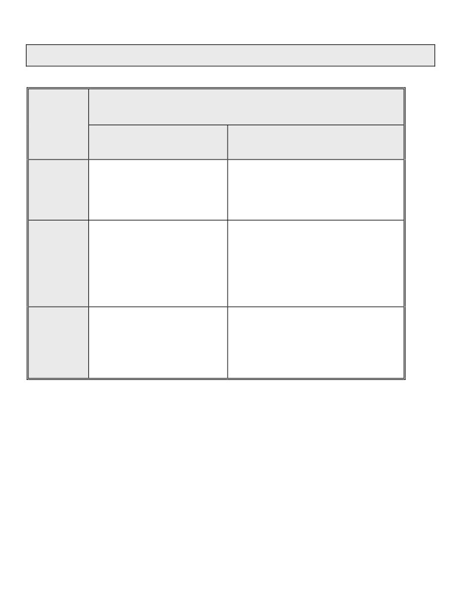
LA BONTE’S TOP 100 ENGLISH CONVERSATION PATTERNS
1
VERB: HOW TO MAKE A SENTENCE
HOW TO MAKE A SENTENCE
TENSE
+ S
- S
I v.
We v.
I don't v.
We don't v.
PRESENT
You v.
You v.
You don't v.
You don't v.
*He v + s.
They v.
*She doesn't v.
They don't v.
I v + ed.
We v +ed.
I didn't v.
We didn't v.
You v + ed. You v + ed.
You didn't v.
You didn't v.
PAST
She + ed.
They v + ed.
He didn't v.
They didn't v.
** Exceptions...irregular verbs
I will v.
We will v.
I won't v.
We won't v.
FUTURE
You will v.
You will v.
You won't v.
You won't v.
She will v.
They will v.
He won't v.
They won't v.
1. NEGATIVE SENTENCE
The shorter form is used the most.
(present)
I do not
=
I don't
He does not
= He doesn't
(past)
I did not
=
I didn't
(future)
I will not
=
I won't
2. POSITIVE SENTENCE
The short form is used the most in the future.
I will
=
I'll
We will
=
We'll
You will
=
You'll
You will
=
You'll
He will
=
He'll
They will
=
They'll
She will
=
She'll
3.
**PAST TENSE
Exceptions are found in the IRREGULAR VERB section on page 11.
4.
*He v + s and He doesn't v
Third person singular is always different.
He plays.
He doesn't play.
She eats.
She doesn't eat.
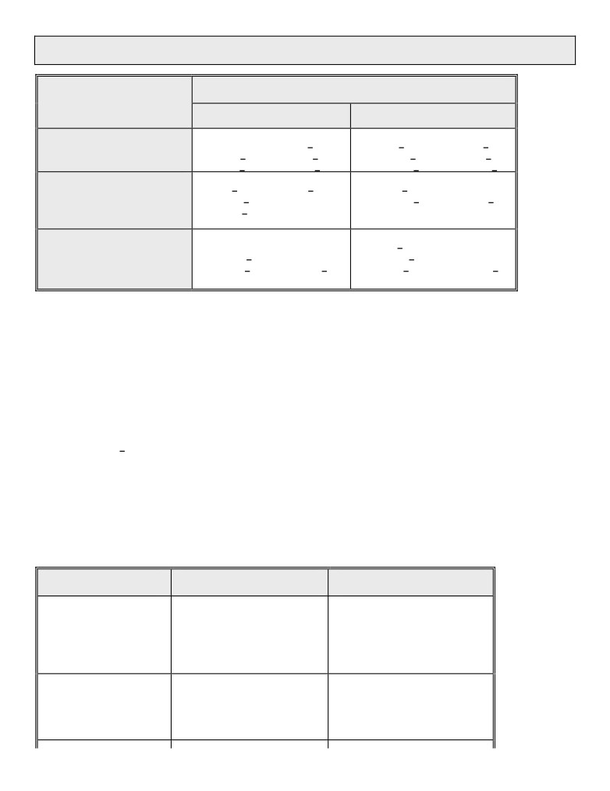
LA BONTE’S TOP 100 ENGLISH CONVERSATION PATTERNS
2
VERB: HOW TO MAKE A QUESTION
HOW TO MAKE A QUESTION
TENSE
+ Q
- Q
Do I v?
Do we v?
Don't I v?
Don't we v?
Do you v?
Do you v?
Don't you v?
Don't you v?
PRESENT
*Does he v?
Do they v?
*Doesn't she v?
Don't they v?
Did I v?
Did we v?
Didn't I v?
Didn't we v?
Did you v?
Did you v?
Didn't you v?
Didn't you v?
PAST
Did she v?
Did they v?
Didn't he v?
Didn't they v?
Will I v?
Will we v?
Won't I v?
Won't we v?
Will you v?
Will you v?
Won't you v?
Won't you v?
FUTURE
Will she v?
Will they v?
Won't he v?
Won't they v?
1.
* In the present tense with third person singular, use DOES and DOESN'T in the question.
Does he have it?
Doesn't he live there?
Does she study?
Doesn't she know that?
2.
When WHO or WHAT are the subject of the question, DO, DID and WILL are not used.
(present)
Who studies this?
What fits in that?
(past)
Who ate pizza?
What hit you?
(future)
Who will live there?
What will go in here?
3.
With WHO, WHAT, WHEN and WHERE, when you imply a plural subject or object in the question, you will
often hear ALL added. eg. WHAT ALL, WHEN ALL, WHO ALL, WHERE ALL.
Who all did you meet?
=
Who did you meet?
Where all did she study?
=
Where did she study?
What all did you eat there?
=
What did you eat there?
When all did she work?
=
When did she work?
4.
WHOSE n v?
This is a variation of WHO when you want to be specific about an object or person.
Whose pen did you lose?
Whose sister will come?
Whose car did you see?
Whose brother do you like?
5.
In a question with a verb or adjective, you will sometimes hear AT ALL added to the end of the question.
AT ALL has no meaning. When responding, it only sounds okay at the end of the negative sentence.
It is not used when questions begin with What, Where, Why, When etc.
Did you eat at all?
Is she tired at all?
Does he know it at all?
No, he doesn't know it at all.
6.
EXCEPTIONS
There are a few exceptions when DO, DID and WILL are not used.
EXCEPTIONS
SENTENCE
QUESTION
You are happy.
Are you happy?
They are going to go.
Are they going to go?
She was happy.
Was she happy?
I'm thinking of getting it.
Am I thinking of getting it?
a. TO BE
She isn't there.
Isn't she there?
They would like to eat.
Would they like to eat?
He would go there.
Would he go there?
b. WOULD
She would have gone.
Would she have gone?
She wouldn't explain it.
Wouldn't she explain it?
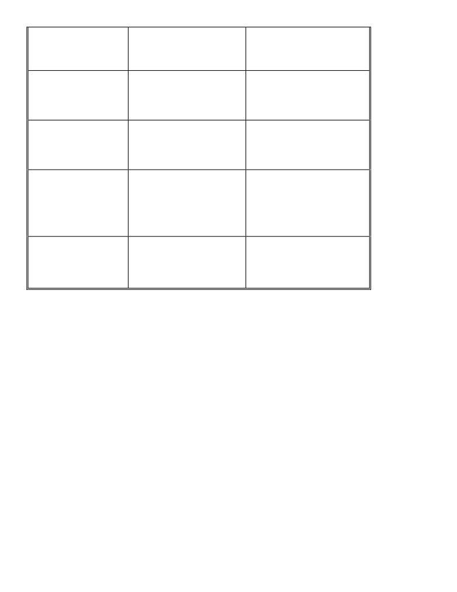
LA BONTE’S TOP 100 ENGLISH CONVERSATION PATTERNS
3
She can live here.
Can she live here?
They can call later.
Can they call later?
c. CAN
You can work there.
Can you work there?
He can't remember.
Can't he remember?
They could drink.
Could they drink?
She could have died.
Could she have died?
d. COULD
They couldn't play.
Couldn't they play?
You couldn't smoke.
Couldn't you smoke?
He should give up.
Should he give up?
They shouldn't talk.
Shouldn't they talk?
e. SHOULD
We shouldn't tell her.
Shouldn't we tell her?
You should have come back.
Should you have come back?
I have got money.
Have I got money?
He hasn't got to learn that.
Hasn't he got to learn that?
f. HAVE**
You have got to help him.
Have you got to help him?
HAVE BEEN
They haven't got any food.
Haven't they got any food?
They have been tired.
Have they been tired?
She has been studying.
Has she been studying?
They had been angry.
Had they been angry?
She had gone there before.
Had she gone there before?
g. HAD BEEN
He had been nervous.
Had he been nervous?
HAD
You had been studying.
Had you been studying?
7. **There are two exceptions to the verb "TO HAVE".
a.
I HAVE n.
I have money.
Do you have money?
I don't have food.
Don't you have food?
She had beer.
Did she have beer?
b. I HAVE TO v. You have to play.
Do you have to play?
He doesn't have to teach.
Doesn't he have to teach?
He had to take it.
Did he have to take it?
Usually if any form of a verb follows HAVE in a sentence, use HAVE to make the question.
I have got to go.
Have you got to go?
Do you have got to go? (wrong)
She has been tired.
Has she been tired?
They have left.
Have they left?
8. When plural nouns are found in the object of the sentence or question, you will hear SOME and ANY
preceding the plural noun a lot. SOME and ANY have no special meaning, they just sound good
when used with the plural noun. SOME often sounds strange in a positive sentence and ANY often
sounds strange in a negative sentence
SOME
ANY
+s
I bought some food.
-------
-s
--------
I didn't spend any money.
+q
Did she eat some dessert?
Does he like any girls?
-q
Won't he write some letters?
Doesn't he take any sugar in his coffee?
Did you buy some coffee?
=
Did you buy any coffee?
Don't you have some money?
=
Don't you have any money?
Can't she bring some candy?
=
Can't she bring any candy?
Didn't he take some clothes?
=
Didn't he take any clothes?
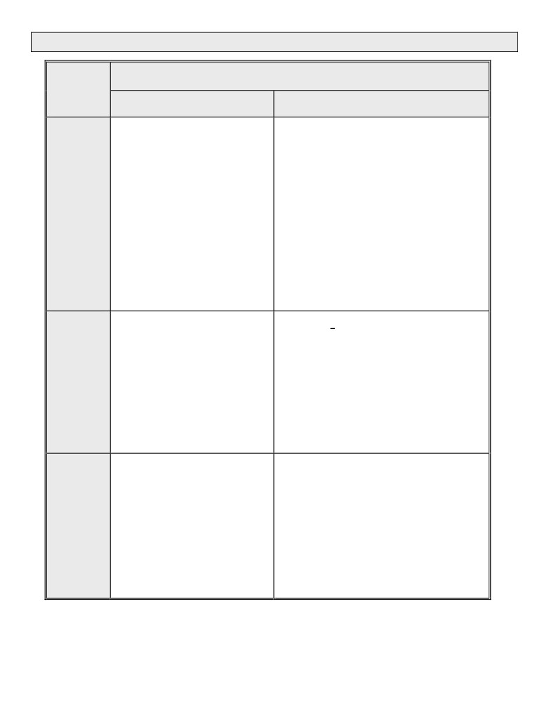
LA BONTE’S TOP 100 ENGLISH CONVERSATION PATTERNS
4
ADJECTIVE: HOW TO MAKE A SENTENCE
HOW TO MAKE A SENTENCE
TENSE
+ S
- S
I AM a.
WE ARE
I AM NOT a.
WE ARE NOT
I'M
WE'RE
I'M NOT
WE'RE NOT
WE AREN'T
YOU ARE
YOU ARE
YOU ARE NOT
YOU ARE NOT
YOU'RE
YOU'RE
YOU'RE NOT
YOU'RE NOT
YOU AREN'T
YOU AREN'T
PRESENT
HE IS
THEY ARE
HE IS NOT
THEY ARE NOT
HE'S
THEY'RE
HE'S NOT
THEY'RE NOT
SHE IS
HE ISN'T
THEY AREN'T
SHE'S
SHE IS NOT
IT IS
SHE'S NOT
IT'S
SHE ISN'T
IT IS NOT
IT'S NOT
IT ISN'T
I WAS a.
WE WERE
I WAS NOT a.
WE WERE NOT
I WASN'T
WE WEREN'T
YOU WERE
YOU WERE
YOU WERE NOT
YOU WERE NOT
PAST
YOU WEREN'T
YOU WEREN'T
HE WAS
THEY WERE
HE WAS NOT
THEY WERE NOT
SHE WAS
HE WASN'T
THEY WEREN'T
IT WAS
SHE WAS NOT
SHE WASN'T
IT WAS NOT
IT WASN'T
I WILL BE a.
WE WILL BE
I WILL NOT BE a.
WE WILL NOT BE
I'LL BE
WE'LL BE
I WON'T BE
WE WON'T BE
YOU WILL BE
YOU WILL BE
YOU WILL NOT BE
YOU WILL NOT BE
YOU'LL BE
YOU'LL BE
YOU WON'T BE
YOU WON'T BE
FUTURE
HE WILL BE
THEY WILL BE
HE WILL NOT BE
THEY WILL NOT BE
HE'LL BE
THEY'LL BE
HE WON'T BE
THEY WON'T BE
SHE WILL BE
SHE WILL NOT BE
SHE'LL BE
SHE WON'T BE
IT WILL BE
IT WILL NOT BE
IT'LL BE
IT WON'T BE
In conversation, the shorter forms are usually used.
PRESENT
PAST
FUTURE
-s
She isn't tired.
He wasn't mad.
They won't be mad.
+s
We're hot.
She was jealous.
They'll be sorry.
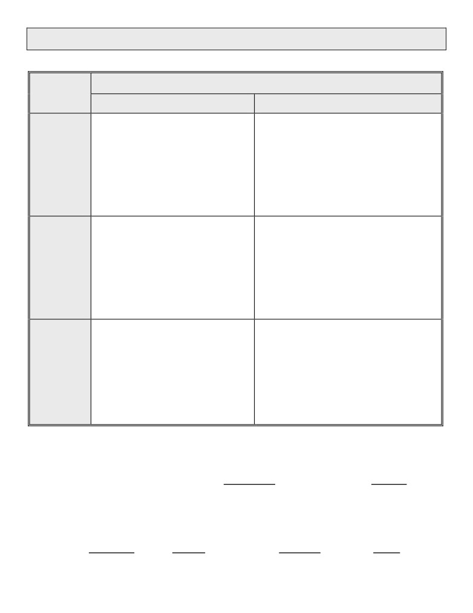
LA BONTE’S TOP 100 ENGLISH CONVERSATION PATTERNS
5
ADJECTIVE: HOW TO MAKE A QUESTION
HOW TO MAKE A QUESTION
TENSE
+ Q
- Q
AM I a?
ARE WE
AREN'T I a?
AREN'T WE
PRESENT
ARE YOU
ARE YOU
AREN'T YOU
AREN'T YOU
IS HE
ARE THEY
ISN'T HE
AREN'T THEY
IS SHE
ISN'T SHE
IS IT
ISN'T IT
WAS I a?
WERE WE
WASN'T I a?
WEREN'T WE
WERE YOU
WERE YOU
WEREN'T YOU
WEREN'T YOU
PAST
WAS HE
WERE THEY
WASN'T HE
WEREN'T THEY
WAS SHE
WASN'T SHE
WAS IT
WASN'T IT
WILL I BE a?
WILL WE BE
WON'T I BE a?
WON'T WE BE
WILL YOU BE WILL YOU BE
WON'T YOU BE
WON'T YOU BE
FUTURE
WILL HE BE
WILL THEY BE
WON'T HE BE
WON'T THEY BE
WILL SHE BE
WON'T SHE BE
WILL IT BE
WON'T IT BE
1. When WHO or WHAT are the subject of the question, I, YOU, HE, SHE, WE and THEY are not used.
(present)
Who is sick?
What is expensive?
(past)
Who was tired?
What was popular?
(future) Who will be hungry?
What will be strange?
2. In the present tense, there is a short form when IS follows WHO, WHAT, WHY, WHEN, HOW or WHERE.
Adjective
Verb
Who is = Who's
Who's angry?
Who's coming?
What is = What's
What's wrong?
What's she doing?
Where is = Where's
Where's it cold?
Where's she studying?
When is = When's
When's it hot?
When's he leaving?
How is = How's
How's it large?
How's she coming?
Why is = Why's
Why's it bad?
Why's he studying?
3.
+ Q
- Q
+ S
- S
(present)
Is she sleepy
Isn't he sleepy?
They're sleepy.
I'm not sleepy.
(past)
Was he poor?
Weren't they poor?
We were poor.
I wasn't poor.
(future)
Will you be angry? Won't he be angry?
She'll be angry.
They won't be angry.
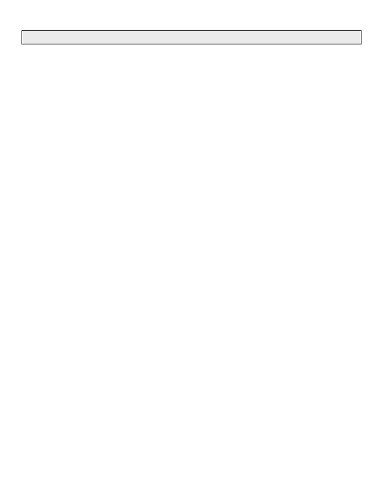
LA BONTE’S TOP 100 ENGLISH CONVERSATION PATTERNS
6
TAG QUESTIONS
TAG QUESTIONS are used a lot in conversation, so you need to be able to use them. This is used when you anticipate a
certain YES or NO answer. Note the answers. The tag question is always the opposite. If the sentence is positive, the tag
question is negative, and vice versa.
She went, didn't she?
Yes, she did.
=
Yes, she went.
+
-
No, she didn't.
=
No, she didn't go.
She didn't go, did she?
No, she didn't.
=
No, she didn't go.
-
+
Yes, she did.
=
Yes, he went.
QUESTION
TAG QUESTION
ANSWER
ADJECTIVE
(present)
Are you tired?
You're tired, aren't you?
Yes, I am.
Isn't she tired?
She isn't tired, is she?
No, she isn't.
(past)
Was he angry?
He was angry, wasn't he?
Yes, he was.
Weren't you happy?
You weren't happy, were you?
No, I wasn't.
(future)
Will they be nervous?
They'll be nervous, won't they?
Yes, they will.
Won't she be mad?
She won't be mad, will she?
No, she won't.
VERB
(present)
Do you eat?
You eat, don't you?
Yes, I do.
Doesn't he play?
He doesn't play, does he?
No, he doesn't.
(past)
Did they come?
They came, didn't they?
Yes, they did.
Didn't she call?
She didn't call, did she?
No, she didn't.
(future)
Will she dance?
She'll dance, won't she?
Yes, she will.
Won't he send it?
He won't send it, will he?
No, he won't
EXCEPTIONS
CAN
Can she use it?
She can use it, can't she?
Yes, she can.
Can't they sing?
They can't sing, can they?
No, they can't.
COULD
Could he leave?
He could leave, couldn't he?
Yes, he could.
Couldn't she cook?
She couldn't cook, could she?
No, she couldn't.
WOULD
Would you go?
You would go, wouldn't you?
Yes, I would.
Wouldn't she come back?
She wouldn't come back, would she?
No, she wouldn't.
SHOULD
Should they bring it?
They should bring it, shouldn't they?
Yes, they should.
Shouldn't you work now?
You shouldn't work now, should you?
No, I shouldn't.
HAVE*
Have you seen it?
You've seen it, haven't you?
Yes, I have.
Hasn't she left?
She hasn't left, has she?
No, she hasn't.
HAVE BEEN Have you been tired?
You've been tired, haven't you?
Yes, I have been.
Hasn't he been waiting?
He hasn't been waiting, has he?
No, he hasn't been.
HAD BEEN Had she been fixing it?
She had been fixing it, hadn't she?
Yes, she had been.
Hadn't she been sick?
She hadn’t been sick, had she?
No, she hadn't been.
HAVE GOT Has she got money?
She's got money, hasn't she?
Yes, she has.
Haven't you got to go?
You haven't got to go, have you?
No, I haven't.
*With I HAVE n, use DO or DON'T in the question:"You have money, don't you?"
RIGHT
Instead of the tag question, you will sometimes hear RIGHT. You will not hear RIGHT used a lot when
the negative sentence is used at the beginning of a tag question.
He went, right?
They left earlier, right?
Instead of YES or NO, RIGHT or THAT'S RIGHT are used in the answer.
They like it, right?
Right, they like it.
That's right.
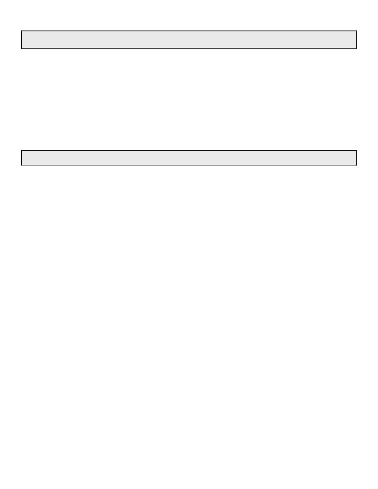
LA BONTE’S TOP 100 ENGLISH CONVERSATION PATTERNS
7
QUESTIONS THAT AREN'T QUESTIONS
1. In conversation, it is common to hear questions asked in the sentence form except for questions beginning
with WHAT, WHERE, WHY etc. With this form, the inflection in the voice goes up at the end of the
sentence.
Did you go?
=
You went?
Is she tired?
=
She's tired?
Does he have to study?
=
He has to study?
Will he want to come?
=
He'll want to come?
Are they going to bring it?
=
They're going to bring it?
Have you got to eat?
=
You've got to eat?
SHORT ANSWERS TO QUESTIONS
2.
In conversation, you will hear short answers to questions. I suggest that students who are beginning to
learn conversation complete the full sentence instead of using these short forms. This way it will help the
student to become accustomed to the tense of the verbs, and help to develop fluency. With some patterns,
just the verb is dropped in the answer. Students will get used to this the more they speak and hear
conversation.
Positive Answer
Negative Answer
Did he go?
Yes, he did.
No, he didn't.
Is she tired?
Yes, she is.
No, she isn't
Is it ok to leave it here?
Yes, it is.
No, it isn't.
Was she able to stay?
Yes, she was.
No, she wasn't.
Yes, she was able to.
No, she wasn't able to.
Was she going to take it?
Yes, she was.
No, she wasn't.
Yes, she was going to.
No, she wasn't going to.
Do you want to go?
Yes, I do.
No, I don't.
Yes, I want to.
No , I don't want to.
Should they go?
Yes, they should.
No, they shouldn't.
Have you got any money?
Yes, I have.
No, I haven't.
Does she have a book?
Yes, she does.
No, she doesn't.
Can she leave now?
Yes, she can.
No, she can't.
Would he like to play?
Yes, he would.
No, he wouldn't.
Yes, he would like to.
No, he wouldn't like to.
Would he rather take a nap?
Yes, he would.
No, he wouldn't.
Have you been happy?
Yes, I have.
No, I haven't.
Couldn't you take it?
Yes, I could.
No, I couldn't.
Was it given to you?
Yes, it was.
No, it wasn't.
Were they excited?
Yes, they were.
No, they weren't.
Did you need to pay?
Yes, I did.
No, I didn't.
Yes, I needed to.
No, I didn't need to.
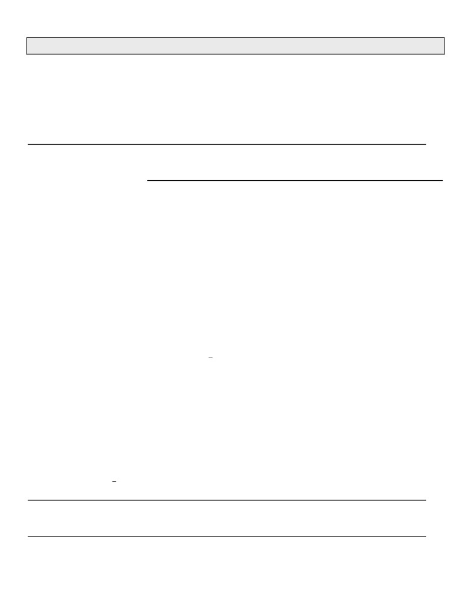
LA BONTE’S TOP 100 ENGLISH CONVERSATION PATTERNS
8
I AM
/
I WAS
/
I WILL BE
WHO IS HE?
(past)
Who was she?
She was the cook.
Wasn't he the driver?
Yes, he was the driver.
*Who was that?
That was my brother.
(present)
* Who is this?
This is my girl friend.
Is she the professor?
No, she isn't the professor.
Who is the boss?
Ms. Kim is the boss.
(future)
Who will he be?
He will be the pilot.
Will they be our neighbors?
Yes, they'll be our neighbors.
Won't they be the owners? No, they won't be the owners.
*THAT/ THIS means THAT PERSON / THIS PERSON, but PERSON can be dropped in conversation.
WHERE IS HE?
(past)
Where were you?
I was at home.
(present)
Where is she?
She's at the store.
(future)
Where will they be?
They'll be in the museum.
PAST
PRESENT
FUTURE
HERE
It was here.
He is here.
They will be here.
*Here it is.
THERE
She was there.
They are there.
You'll be there.
*There they are.
OVER HERE
It was over here.
We are over here.
I'll be over there.
OVER THERE
He was over there.
She's over there.
He'll be over there.
AT place
She was at church.
I am at the pool.
They'll be at work.
IN place
It was in the oven.
He's in the kitchen.
She'll be in the car.
*HERE/ THERE can come in front of the sentence in the present tense only with a positive sentence when you have the
thing/person in your sight. In a question, HERE/THERE always come at the end.
Instead of OVER, you can use UP or DOWN.
eg. He is up there.
AWAY*/AROUND
Is he around?
=
Is he here? or Is he there?
Is Tina around here?
=
Is Tina here?
Are they around?
=
Are they here? or Are they there?
Isn't she around there?
=
Isn't she there?
Is Donny away?
=
Isn't Donny here? or Isn't Donny there?
*HERE and THERE can't be used with AWAY. AROUND can be used with HERE and THERE.
QUESTION
PATTERN
ANSWER
(present)
Where is he?
He is place ving.
He is at home studying.
He is here playing with the kids.
She's outside reading.
They are out shopping.
(past)
Where were they?
They were place ving.
They were at school talking.
He was at home resting.
I was outside reading the paper.
(future)
Where will you be?
I'll be place ving.
I'll be in Chicago meeting him.
She'll be at the office working.
Sometimes when you ask where someone is, people answer that they hear or see that person doing something.
* I SEE n/op v.
Did you see him talk to her?
Yes, I saw him talk to her.
**I SEE n/op vING.
Did you see John reading?
No, I didn't see John reading.
Where is Larry?
I saw him watching TV in the family room.
*I HEAR n/op v.
Did you hear them yell at her?
Yes, I heard them yell at her.
**I HEAR n/op vING.
Did you hear Ann telling him that? No, I didn't hear Ann telling him that.
Where is Judy?
I heard her making dinner downstairs.
*Used mostly in the past tense. **This can be used in the present and past tense. You can use WATCH instead of SEE.
WHAT IS HE?
(past)
What was he?
He was a soccer player.
Was she a dancer?
No, she wasn't a dancer.
(present)
What are they?
They are lions.
(future)
What will you be?
I'll be a grammar school teacher.
WHEN IS IT?
(past)
When was the party?
The party was last night.
(present)
When is dinner?
Dinner is at 6:00.
Isn't the game tonight?
No, the game isn't tonight.
(future)
When will the exam be?
It'll be next Monday.
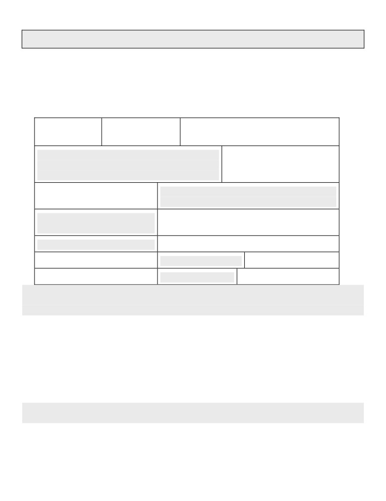
LA BONTE’S TOP 100 ENGLISH CONVERSATION PATTERNS
9
PAST TENSE
In English, there are many different forms found in the past tense. In the beginning it may be difficult for
students to understand the nuances between the different forms. The best rule of thumb is to respond with the
same past tense pattern that a person speaks to you in. It will take time to get used to the subtle differences
between these patterns listed below.
There is a small table here which will indicate to you whether the pattern refers to the distant past, the most
recent past and up to the present.
DISTANT
RECENT
PRESENT
PAST
PAST
a.
I HAVE GONE.
I WENT.
I WAS TIRED.
b. I HAVE BEEN STUDYING.
I HAVE BEEN TIRED.
c. I HAD BEEN READING.
I HAD BEEN TIRED.
d. I HAD GONE.
e. HE IS GONE.
f. I WAS GONE
a.
I v (past).
I HAVE v PP/ v (past).
I WAS a.
These are the most used past tense patterns. The irregular verbs use "v PP".
I have eaten there.
( irregular verb)
I waited at church.
(regular verb)
Did you eat?
Yes, I ate.
Were you tired?
No, I wasn't tired.
Did they arrive?
Yes, they arrived.
Have you sent it?
Yes, I've sent it.
Who did you meet?
I met my mother.
What was delicious?
The cake was delicious.
Where have you gone?
I have gone to the ocean.
b. I HAVE BEEN vING.
I HAVE BEEN a.
This indicates actions or feelings which have occurred over a period of time up to the present time.
I have been eating.
(from sometime in the past to the present)
I have eaten.
(only in the past)
Have you been tired?
Yes, I've been tired.
Have you been cleaning?
No, I haven't been cleaning.
Have you been shopping?
Yes, I've been shopping.
LA BONTE’S TOP 100 ENGLISH CONVERSATION PATTERNS
10
What have you been doing?
I've been working.
Who has been sick?
My mother has been sick.
c.
I HAD BEEN vING.
I HAD BEEN a.
This pattern indicates action that has stopped in the recent past.
Had she been angry?
No, she hadn't been angry.
Had they played with you?
Yes, they had played with me.
Had you graduated?
Yes, I had graduated.
What had you been reading?
I had been reading the newspaper.
Where had you been standing?
I had been standing by the car.
d. I HAD v PP/ v (past)
The irregular verbs use "v PP."
I had met her.
(irregular)
I had cleaned that.
(regular)
Had you understood that?
No, I hadn't understood that.
Had she gone to the school?
Yes, she had gone to the school.
What had they brought?
They had brought gifts.
Where had you driven to?
I had driven to the shopping center.
e.
I AM v PP/ v (past).
This is the passive form of the verb.
Irregular verbs use "v PP."
He is contacted by the parents.
(regular verb)
She is taught by Ms. Lee.
(irregular)
Is she done?
Yes, she's done.
Is the TV program finished?
No, it isn't finished.
Are the clothes washed?
Yes, the clothes are washed.
What is lost?
The ring is lost.
Where is it left?
It is left on the desk.
Are you finished?
No, I'm not finished.
Is it used?
Yes, it is used.
Are you brought there?
Yes, I am brought there.
f.
I WAS v PP/ v (past).
This is the passive form of the verb. Irregular verbs use "v PP."
Was it prepared?
No, it wasn't prepared.
Was he hit by the ball?
Yes, he was hit by the ball.
Was the ice cream frozen?
Yes, it was frozen.
Where was it made?
It was made in Italy.
What was hidden there?
The book was hidden there.
Were you taught?
No, I wasn't taught..
LA BONTE’S TOP 100 ENGLISH CONVERSATION PATTERNS
11
IRREGULAR VERBS
v PP is used in the past tense with I AM v PP, I WAS v PP, I HAD v PP, and I HAVE v PP.
VERB
PASTv
PP
VERB
PAST
v PP
be
was
been
(HAVE only)
mean
meant
meant
beat
beat
beaten
meet
met
met
become
became
become (HAVE only)
pay
paid
paid
begin
began
begun
put
put
put
bet
bet
bet
quit
quit
quit (HAVE only)
break
broke
broken
read
read
read
bring
brought
brought
ride
rode
ridden
build
built
built
ring
rang
rang
buy
bought
bought
rise
rose
risen
catch
caught
caught
run
ran
run
choose
chose
chosen
say
said
said
come
came
come (HAVE only)
see
saw
seen
cost
cost
cost
sell
sold
sold
cut
cut
cut
send
sent
sent
dig
dug
dug
set
set
set
dive
dove, dived
dived (HAVE only)
sew
sewed
sewn
do
did
done
shake
shook
shaken
draw
drew
drawn
shine
shined
shone
drink
drank
drunk
shoot
shot
shot
drive
drove
driven
eat
ate
eaten
show
showed
shown
fall
fell
fallen
shut
shut
shut
feed
fed
fed
sing
sang
sung
feel
felt
felt
sink
sunk
sunk
fight
fought
fought
sit
sat
sat (HAVE only)
find
found
found
sleep
slept
slept (HAVE only)
fly
flew
flown
speak
spoke
spoken
forget
forgot
forgotten
spend
spent
spent
freeze
froze
frozen
spread
spread
spread
get
got
gotten (HAVE only)
stand
stood
stood (HAVE only)
give
gave
given
steal
stole
stolen
go
went
gone
stick
stuck
stuck
grow
grew
grown
strike
struck
struck
hang
hung
hung
swear
swore
sworn
have
had
had (HAVE only)
sweep
swept
swept
hear
heard
heard
swim
swam
swum
hide
hid
hidden
take
took
taken
hit
hit
hit
teach
taught
taught
hold
held
held
tear
tore
torn
hurt
hurt
hurt
tell
told
told
keep
kept
kept
think
thought
thought
know
knew
known
throw
threw
thrown
lay
laid
laid
understand
understood
understood
lead
led
led
wake
woke
woken
leave
left
left
wear
wore
worn
lend
lent
lent
win
won
won
let
let
let (have only)
write
wrote
written
lie
lay
lain
lose
lost
lost
make
made
made
* (HAVE only)
not used with I AM v PP
or I WAS v PP.
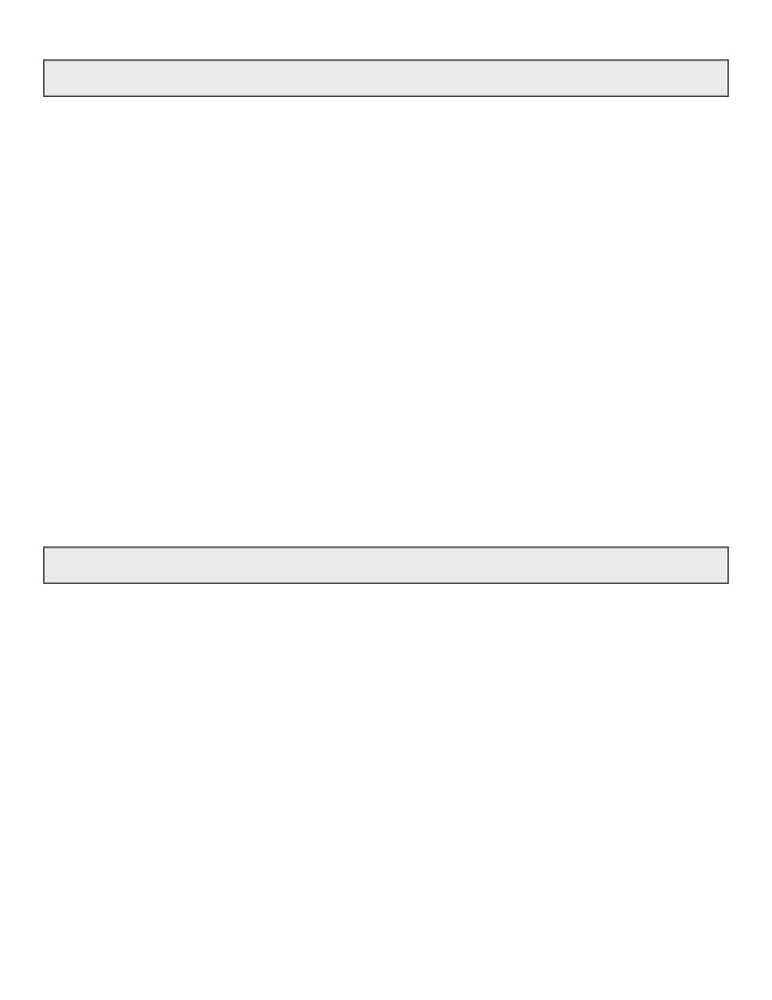
LA BONTE’S TOP 100 ENGLISH CONVERSATION PATTERNS
12
HOW TO SAY HELLO
1. a. Hello
How are you?
b.
I'm fine, thank you.*
Hi
How are you doing?
I'm doing fine, thanks.*
Good morning
How have you been?***
I've been fine, thanks.*
Good afternoon
How have you been doing?***
I've been doing fine, thank you.*
Good evening
How have things been going?***
2. a.
Hi. How are you?
b.
I'm fine. It's good to see you again.**
great meet
nice
It's good seeing you again.**
great meeting
nice
I'm happy to see you.
glad meet
What have you been doing?***
What have you been up to?***
It's a pleasure to meet you.
*THANK YOU/THANKS is optional.
**Again is optional. It is not used if you are meeting for the first time.
***You can use these if you have met the person in the past.
HOW TO SAY GOODBYE
3.
Goodbye.
I'll see you later.
Bye
tomorrow
Bye Bye
on Monday
Good night****
(I'll is optional)
So long.
Have a nice day.
Have a nice evening.
It's been nice
talking to you.
great
seeing you
good
meeting you
****Only use when you say goodbye at night. This is not used to greet people initially.
4. If you want to give your regards to someone else, here is how you say it.
Give my best to person's name.
Give my best to Don.
Give my regards to person's name.
Give my regards to your mother.
Say hello to person's name for me.
Say hello to your brother for me.
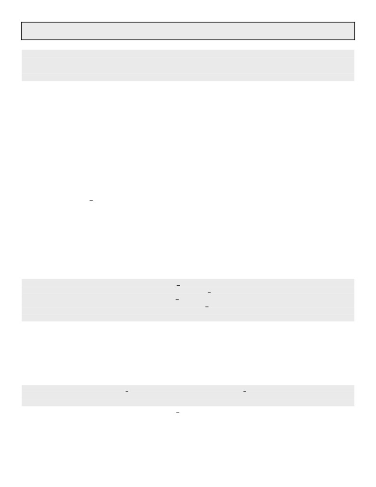
LA BONTE’S TOP 100 ENGLISH CONVERSATION PATTERNS
13
HOW TO SAY THANK YOU
POSITIVE
NEGATIVE
THANK YOU FOR vING.
THANK YOU FOR NOT vING.
THANK YOU FOR BEING a.
THANK YOU FOR NOT BEING a.
THANK YOU FOR THE n.
-----
1. There are many variations of THANK YOU. Note the placement of NOT in the pattern.
THANKS
Thanks for not forgetting it.
THANK YOU VERY MUCH
Thank you very much for cleaning it.
THANKS VERY MUCH
Thanks very much for inviting me.
THANK YOU SO VERY MUCH
Thank you so very much for not telling him.
THANKS SO VERY MUCH
Thanks so very much for taking it to him.
THANK YOU A LOT
Thank you a lot for being kind to me.
THANKS A LOT
Thanks a lot for not sending that card.
THANK YOU SO MUCH
Thank you so much for the gift.
THANKS SO MUCH
Thanks so much for lending me the money.
2. With an adjective, SO often comes before the adjective. With a verb, SO MUCH or other variations often come after
the verb. It is used for emphasis.
Thanks for being so thoughtful.
Thanks for bringing so much.
Thanks for being so helpful.
Thank you for working so hard.
Thanks for not being so angry.
Thanks you for staying so long.
Thanks for finishing so fast.
Thank you for explaining it so well.
3. THANK n/op FOR vING
When you want someone else to say thank you to someone for you, use this.
Thank him for taking it.
Thank John for teaching them.
Thank her for bringing the flowers.
Thank Tina for being so helpful.
4. NOUN
THANK YOU FOR n/op.
I'M GRATEFUL FOR n/op
I APPRECIATE n/op.
Thank you for the roses.
Thank you so much for the advice.
I'm grateful for your help.
I appreciate the food you gave us.
I really appreciate it.
I really appreciate the advice.
5. Sometimes you want to express thanks for things that will be done in the future. Depending on the situation , you will find the two
variations below.
a. Use when you have not asked the person yet to do a favor for you. You hope that they will do this favor for you, and you
wish to thank them in advance. This is always used regarding future favors.
I WOULD APPRECIATE IT IF YOU WOULD v.
- I WOULD BE GRATEFUL TO YOU IF YOU WOULD v.
I WOULD APPRECIATE IT IF YOU COULD v.
- I WOULD BE GRATEFUL TO YOU IF YOU COULD v.
I WOULD APPRECIATE n.
- I WOULD BE GRATEFUL FOR n.
WOULD is used more than COULD in front of the verb. Do not use COULD with the negative sentence
REALLY can be used for emphasis.and IT and TO YOU are optional.
I would appreciate it if you would stop by here later.
I would really appreciate if you could take this to her.
I would be grateful if you wouldn't tell her about this.
I would appreciate your help.
I would appreciate it if you would call me when you get home.
b. Use when the other person has already agreed to do a favor for you. You want to thank them in advance. Unlike
"5a", this can be used to express thanks for either past, present or future favors.
I APPRECIATE IT THAT s.
I'M GRATEFUL THAT s.
I APPRECIATE n/op vING.
I'M GRATEFUL TO n/op FOR vING.
IT'S GOOD OF n/op TO v.
This is another way of saying THANK YOU FOR vING. THAT and IT are optional.
(past)
I appreciate it that you called.
I appreciated you explaining that.
It was good of you to make supper.
(present)
I appreciate you not complaining
I'm grateful to them for helping my son.
It's good of Tom to fix it.
(future)
I'm grateful that she'll get it for me.
I appreciate you fixing it for them tomorrow.
6. THANK YOU, I REALLY APPRECIATE IT is the same as THANK YOU VERY MUCH.
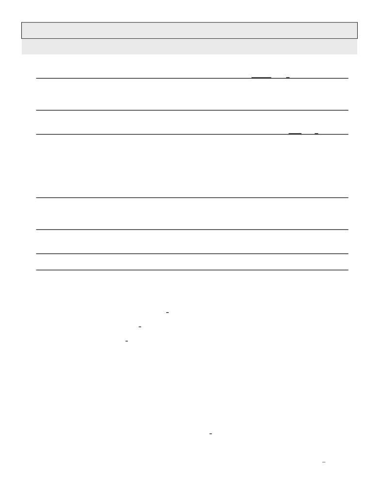
LA BONTE’S TOP 100 ENGLISH CONVERSATION PATTERNS
14
HOW TO ASK A FAVOR
ASKING A FAVOR
ASKING A FAVOR TO SOMEONE
FOR SOMEONE ELSE TO DO SOMETHING
a.
PLEASE v.
h.
PLEASE HAVE n/op v.
ASK n/op TO v.
TELL n/op TO v.
b.
COULD YOU PLEASE v?
i.
COULD YOU PLEASE HAVE n/op v?
WOULD
WOULD
ASK n/op TO v?
CAN
CAN
TELL n/op TO v?
WILL
WI`LL
c.
WOULD YOU MIND vING?
j. WOULD YOU MIND HAVING n/op v?
DO
DO
ASKING n/op TO v?
TELLING n/op TO v?
d.
MAKE SURE TO v.
k. MAKE SURE TO HAVE n/op v.
BE
AND
BE
AND ASK n/op TO v.
MAKE SURE YOU v.
TELL n/op TO v.
BE
SEE THAT YOU v.
MAKE SURE YOU HAVE n/op v.
SEE TO IT THAT YOU v.
BE SURE
ASK n/op TO v.
SEE THAT
TELL n/op TO v.
SEE TO IT THAT
e.
CAN you do me a favor and please v.
l.
CAN you do me a favor and HAVE n/op v.
COULD
COULD
ASK
WOULD
WOULD
TELL
WILL
WILL
f.
PLEASE DO ME A FAVOR AND v.
m. PLEASE do me a favor and HAVE n/op v.
ASK
TELL
g. COULD I ASK YOU TO PLEASE v?
n. COULD YOU ASK n/op to PLEASE v.
CAN
CAN
1. "a - g"
FOR ME
I ask someone to do something.
"h - n"
FOR OTHERS
I ask someone to ask someone else to do something.
2. PLEASE is optional. It is always courteous to use.
3. Here is another helpful pattern to use when you are asking someone a favor to check something out for you.
a. GO* AND* CHECK AND SEE WHETHER s. Go and check and see whether he came.
TO
TO
IF
Go to check to see if she's sick.
b. GO* AND* CHECK WHETHER s.
Check whether it is raining.
TO
IF
Go and check whether it is ready.
c. GO* AND* SEE WHETHER s.
Go and see whether she likes it.
TO
IF
Go see if she is in.
d. GO* AND* CHECK THE n.
Go and check the kids.
Check the prices there.
e.
*GO, AND and TO are optional.
Go and check to see if he lost it.
= Check to see if he lost it.
f. WHAT, WHERE, WHY ,WHEN, WHO and HOW can be substituted instead of WHETHER or IF.
Check to see what they are doing.
Check where he went.
Go and check to see why he likes it.
See how he got there.
Check what time she came.
Check and see how long it takes.
Go and see when he comes back.
Check to see who they called.
g. You can add OUT to CHECK.
Check out if she studied that.
Go and check out that new store.
h. OR NOT can be added after WHETHER (not after IF) or after the s with no change in meaning
Check to see whether or not they brought it.
Go check and see if she's okay or not.
Go and check and see whether it's done or not.
Check and see if you like it or not.
4.
Note how the negative form is made:
a. Please don't v.
b. Could you please not v.
c. Would you mind not ving.
d. Be sure not to v.
LA BONTE’S TOP 100 ENGLISH CONVERSATION PATTERNS
15
HOW TO GIVE/ASK PERMISSION
ASKING PERMISSION
GIVING PERMISSION
a. *COULD I PLEASE v?
aa. YOU CAN v.
MAY
MAY
CAN
b.
*WOULD YOU MIND IF I v**?
bb. I WOULDN'T MIND IF YOU v.
DO
DON'T
c. *WOULD IT BE ALRIGHT IF I v**?
cc. IT WOULD BE ALRIGHT IF YOU v.
OK
OK
d.
*IS IT ALRIGHT IF I v**?
dd. IT IS ALRIGHT IF I v.
OK
OK
e. ***IS IT ALRIGHT TO v?
ee. IT IS ALRIGHT TO v.
OK
OK
f. ***WOULD IT BE ALRIGHT TO v?
ff. IT WOULD BE ALRIGHT TO v.
OK
OK
1.
*This is used a lot when you are asking permission for someone else to do something.
Is it alright if they don't bring it back?
Would it be ok if she doesn't play tennis?
Could you please take it later?
2.
** Either the past or the present tense can be used here.
Would it be alright if he calls you?
Would it be alright if he called you?
3.
*** If you are asking permission for someone else, please add FOR n/op after alright/ok.
Would it be alright for him to sell it?
Is it alright for Don to call her?
Is it ok for them to drop by?
4. Here are how the negative forms are made:
a. Could you please not v?
aa. You can't v.
b. Would you mind if I don't v?
bb. I wouldn't mind if you v.
c. Would it be alright if I don't v?
cc. It wouldn't be alright if you v.
d. Is it alright if I don't v?
dd. It isn't alright if you v.
e. Is it alright not to v?
ee. It isn't alright to v.
f. Would it be alright not to v?
ff. It wouldn't be alright to v.
Would it be alright to go?
Yes, it would be alright to go.
No, it wouldn't be alright to go.
Can I please leave?
Yes, you can leave.
No, you can't leave.
Would you mind if I drove?
Yes, I mind if you drove.
No, I wouldn't mind if you drove.
Is it alright to take it?
Yes, it's alright to take it.
No, it isn't alright to take it.
May I come back tonight?
Yes, you may come back tonight.
No, you may not come back tonight.
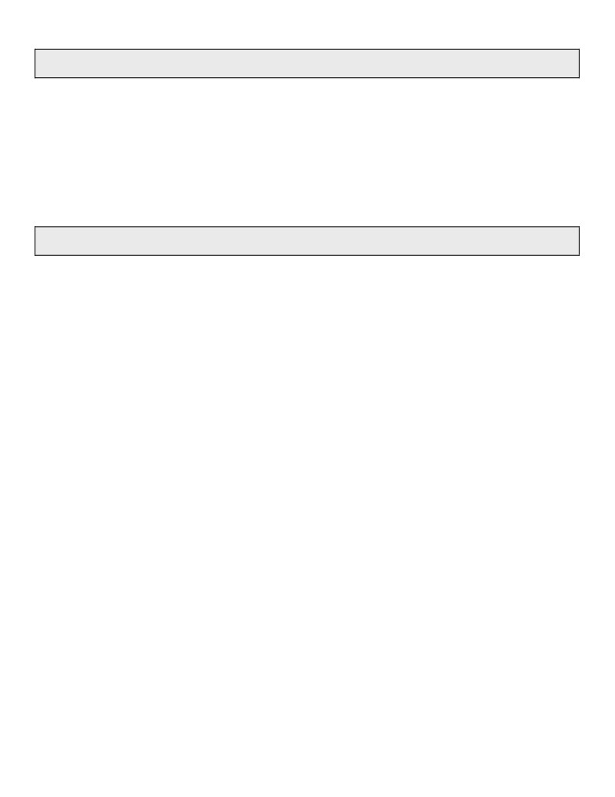
LA BONTE’S TOP 100 ENGLISH CONVERSATION PATTERNS
16
HOW TO MAKE A SUGGESTION
LET'S v .
LET'S DON'T v .
LET'S NOT v .
Let's meet tonight.
Let's not talk to her.
Let's leave early.
Let's don't argue.
Let's take our bikes there.
Let's not buy that right now.
WHY DON'T YOU v.
a.
WHY DON'T I v .
=
I will v .
WHAT DO YOU SAY I v.
b.
WHY DON'T YOU v .
=
Please v .
*WHY NOT v .
WHAT DO YOU SAY YOU v.
c.
WHY DON'T WE v .
=
Let's v.
WHAT DO YOU SAY WE v.
1. Even though there is the negative "DON'T" in the sentence, it is not meant to be negative. These
patterns are used a lot in conversation when you are trying to make a suggestion.
2. *WHY NOT v
is a short form of WHY DON'T YOU v. In the beginning, I suggest you use
the longer form WHY DON'T YOU v.
3. The pronouns I, YOU and WE are used mostly with the above patterns. Other pronouns or person's
name can be used only with WHAT DO YOU SAY when you want to make a suggestion.
What do you say John eats later.
What do you say they take the bus.
What do you say she brings it.
Why don't you study with her.
=
Please study with her.
What do you say I make supper.
=
I'll make supper.
Why don't we talk about it later.
=
Let's talk about it later.
Why don't we go to see a movie.
=
Let's go to see a movie.
Why don't you call her back.
=
Please call her back.
What do you say we start tonight.
=
Let's start tonight.
What do you say you travel with us.
=
Please travel with us.
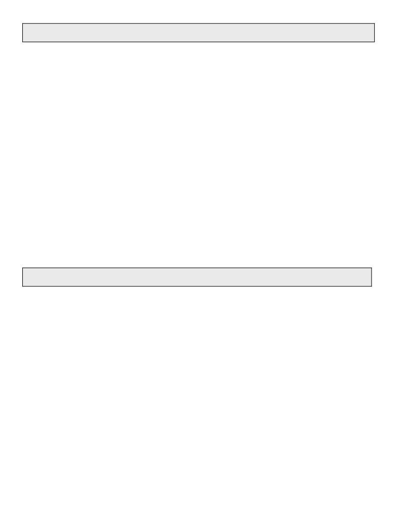
LA BONTE’S TOP 100 ENGLISH CONVERSATION PATTERNS
17
HOW TO ASK FOR ADVICE/OPINION
a.
SHALL WE v?
b.
SHOULD WE v?
c.
DO YOU THINK s?
a. WE or I are used the most.
Shall we go now?
Shall we fix it now?
Shall I bring the books?
Shall I tell her now?
b. This can be used with any subject pronoun or person's name.
Should we leave now?
Should Larry sit there?
Should I take the money?
Should he send it now?
c. You can put any sentence here when you ask for someone's opinion.
Do you think she left?
Do you think he speaks well?
Do you think it's expensive?
Do you think they'll like it?
SHOULD implies that you think something is good or bad to do. CAN and COULD do not imply this
judgment or feeling of good or bad. CAN and COULD are interchangeable.
Do you think she should come by later?
Do you think she shouldn't bring it?
Do you think I can drive by myself?
Do you think he can't do it?
Do you think they could understand it?
Do you think they couldn't carry it?
a, b & c. WHAT, WHERE, WHY, WHEN, WHO, and HOW can come before the pattern.
What should we do tonight?
What do you think he should bring?
When should I come back?
Where do you think they should go shopping?
Who should we invite?
How do you think we should go there?
Who shall we take with us?
Why shall I give it to him?
d. PAST TENSE
when asking advice about things in the past, SHOULD HAVE vPP and COULD HAVE vPP
are used. SHOULD is used more than COULD.
Who should we have invited?
Do you think we could have made it?
What should they have done?
When should she have returned it?
HOW TO APOLOGIZE
I'M SORRY FOR vING.
I'M SORRY FOR NOT vING.
I'M SORRY FOR BEING a.
I'M SORRY FOR NOT BEING a.
I'M SORRY ABOUT vING.
I'M SORRY ABOUT NOT vING.
I'M SORRY THAT s
I'M SORRY THAT s*.
I'M SORRY ABOUT n.
(FOR is used much more than ABOUT)
EXCUSE ME FOR vING.
EXCUSE ME FOR NOT vING.
EXCUSE ME FOR BEING a.
EXCUSE ME FOR NOT BEING a.
I APOLOGIZE FOR vING.
I APOLOGIZE FOR NOT vING.
I APOLOGIZE FOR BEING a.
I APOLOGIZE FOR NOT BEING a.
I APOLOGIZE THAT s
I APOLOGIZE THAT s*.
* this is usually a negative sentence
I'm sorry that I didn't take it.
1. THAT is optional.
I'm sorry that I didn't tell her.
I apologize that I was so late.
I'm sorry he didn't do it.
I apologize I didn't bring it with me.
2. Sometimes WANT TO is used before APOLOGIZE.
I want to apologize for not telling you.
I want to apologize for being late.
3. For emphasis, add REALLY before SORRY or before WANT TO APOLOGIZE.
I'm really sorry for forgetting it.
I'm really sorry I yelled at him.
I really want to apologize for saying that.
I really want to apologize for being angry.
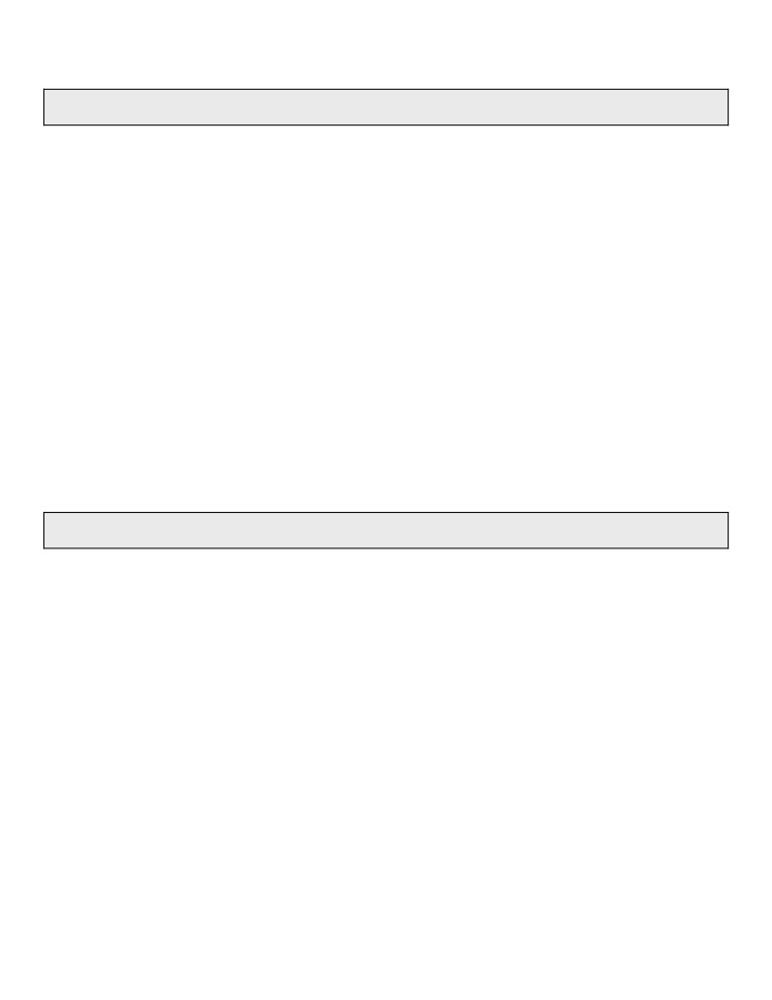
LA BONTE’S TOP 100 ENGLISH CONVERSATION PATTERNS
18
HOW TO SAY NO
I AM SORRY BUT s.
I AM AFRAID THAT s.
I AM SORRY. s.
I AM AFRAID BUT s.
a.
BUT and THAT are optional.
I am sorry but I can't go now.
I'm afraid that you can't see her.
I am sorry. She can't do that.
I'm afraid but you won't be able to use it.
I'm afraid you won't be able to meet him.
Please give me that pen.
I'm sorry but I can't give it to you.
Let's go there together.
I'm afraid that I have to go alone.
Can you bring me tomorrow?
I'm sorry but I won't be able to do that.
Take this to your mother.
I'm afraid that I don't have any room to take it.
You better eat everything.
I'm sorry. I'm full. I can't eat anymore.
Please lend me $20.
I'm afraid that I don't have any money.
Let's study together tonight.
I'm sorry but I have something else to do.
Can I borrow your car?
I'm afraid I can't let you use it.
Be sure to call when you get there.
I'm sorry but I won't have time to do that.
Let me speak to Dennis.
I'm afraid that he left about 20 minutes ago.
HOW TO ASK DIRECTIONS
Where is place?
Where is the bathroom?
Where is place located?
Where is the public telephone? (pay phone)
Where is the bus stop located?
The bus stop is located by the school.
How do I get to place?
How do I get to the hotel?
How can I get to place?
How can I get to the airport?
How do I get to the art museum?
Can you give me directions to place?
Can you give me directions to the train station?
Could
Could you give me directions to the police station?
Where is the closest place?
Where is the closest water fountain?
nearest
Where is the nearest taxi stand?
Where is the closest restaurant?
Where can I catch the transportation?
Where can I catch the subway?
Where can I catch a taxi?
Where can I catch the bus?
Where is the best place to v?
Where is the best place to eat French food?
Where is the best place to see a movie?
Where is the best place to buy clothes?
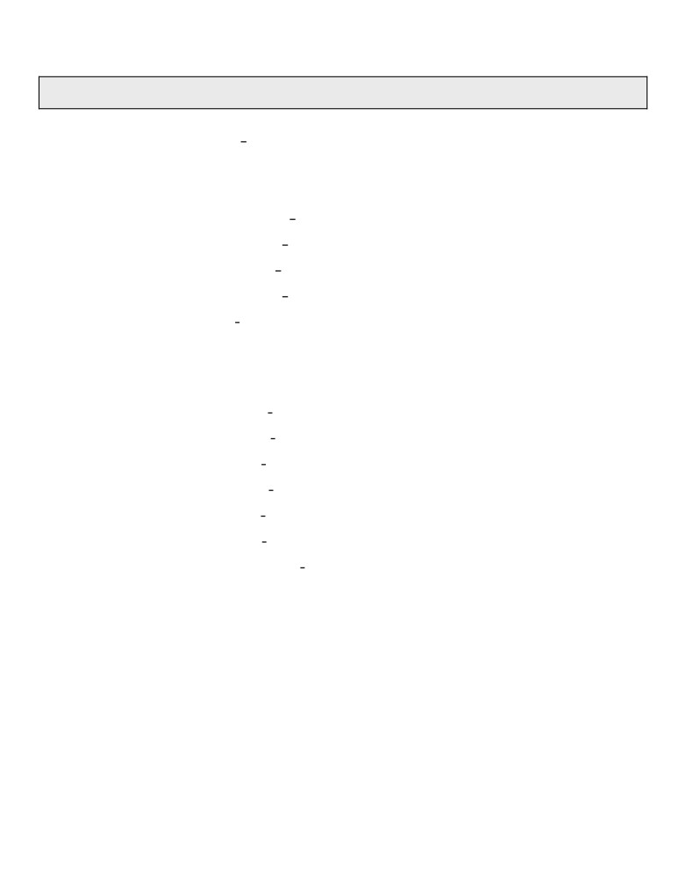
LA BONTE’S TOP 100 ENGLISH CONVERSATION PATTERNS
19
HOW TO ASK FOR HELP
1.
CAN YOU PLEASE HELP ME TO v?
Can you please help me to find her?
CAN YOU PLEASE HELP ME v?
Can you please help me do homework?
Can you please help me make dinner?
2.
CAN YOU PLEASE TELL ME HOW TO v?
Can you please tell me how to get there?
Can you please tell me how to solve this?
WHERE TO v?
Can you please tell me where to buy it?
WHEN TO v?
Can you please tell me when to start?
WHO TO v?
Can you please tell me who to give it to?
WHAT TO v?
Can you please tell me what to take?
3.
CAN YOU PLEASE TELL ME IF s OR NOT?
Can you please tell me if he already left?
Can you please tell me if he is going to come?
Can you please tell me if they brought it?
*WHETHER
= IF
Can you tell me whether I can go now?
**OR NOT is optional
Can you tell me if she wants it or not?
Can you tell me whether she wants it?
4.
CAN YOU PLEASE TELL ME WHAT s?
Can you please tell me what I have to do?
WHERE s?
Can you please tell me where she lives?
WHY s?
Can you please tell me why I can't go?
WHEN s?
Can you please tell me when the train is coming in?
WHO s?
Can you please tell me who he met?
HOW s?
Can you please tell me how he got there?
HOW MUCH s?
Can you please tell me how much it costs to buy it?
a.
You can use WOULD or COULD instead of CAN.
Would you please tell me how to contact her?
Could you please tell me where I can get the subway?
Can you please tell me what she would like for dinner?
b.
PLEASE is polite to use, but it is optional.
Can you tell me what to take?
=
Can you please tell me what to take?
c. If you are asking help for another person, change ME to another object pronoun like HIM, HER etc.
Can you help him to cut the lawn?
Can you tell her how to get there by bus?
Could you tell the teacher to come?
Could you please tell them what they need to buy?
d. If you want to ask if someone else needs help, please ask:
How can I be of help?
Can I be of help?
Can I help you?
What can I do for you?
How may I be of help?
May I be of help?
May I help you?
How can I help you?
e. What is the difference between using HELP (#2,3 and 4 above) and TELL (#1 above)?
TELL
You just want the person to explain or tell you how to do something. You will then do it by yourself.
HELP
You want the person to actually go with you and help you do something.
f.
I'M CALLING TO v. When you use the phone to ask for help, this pattern is used a lot.
I'm calling to make a reservation.
I'm calling to find out if Tina is there.
I'm calling to talk to John.
Is he there?
I'm calling to check how much it costs to fly to New York..
I'm calling to order a pizza.
I'm calling to see what she has to bring.
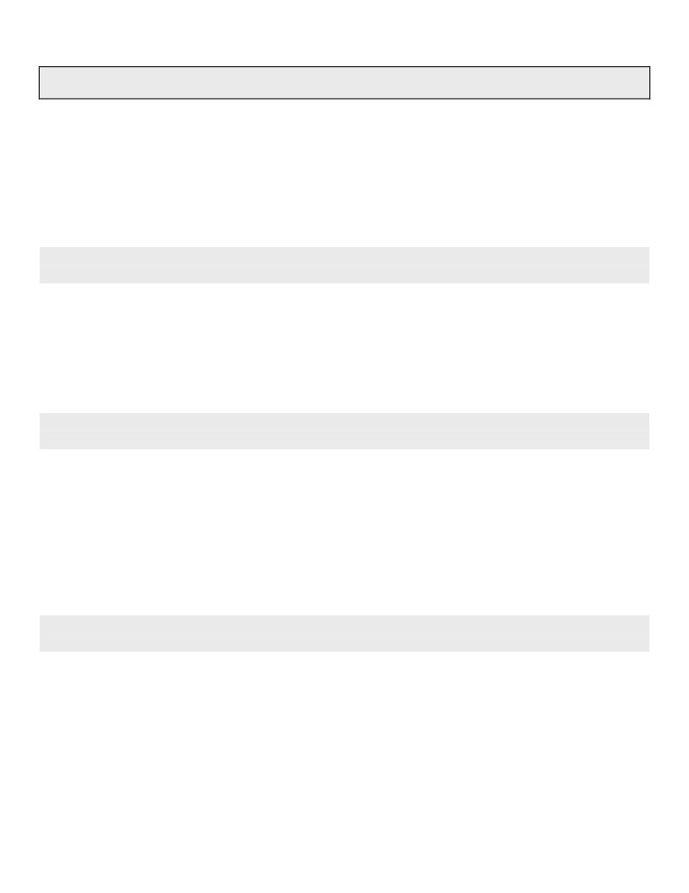
LA BONTE’S TOP 100 ENGLISH CONVERSATION PATTERNS
20
I AM vING.
1. I AM vING sometimes means I AM GOING TO v. In the present tense, I AM vING is
also a short form of I AM GOING TO v which is studied in another chapter.
We're leaving tonight.
=
We're going to leave tonight.
Are you studying Friday?
=
Are you going to studyFriday?
They're taking us there.
=
They're going to take us there.
She is coming tomorrow.
=
She is going to come tomorrow.
PAST
+
Were you ving?
He was ving.
-
Weren't you ving?
I wasn't ving.
Was he reading?
Yes, he was reading.
No, he wasn't reading.
Weren't they practicing?
No, they weren't practicing.
What were you doing?
I was thinking.
Where was he swimming?
He was swimming in the pool.
Who were you talking to?
I was talking to my wife.
PRESENT
+
Is he ving?
They are ving.
-
Aren't you ving?
She isn't ving.
Isn't she driving?
No, she isn't driving.
Yes, she's driving.
Are you trying?
Yes, I'm trying.
What is he making?
He's making a bird house.
Where are they crying?
They're crying in the bedroom.
Who is she pushing?
She's pushing Donny.
FUTURE
+
Will you be ving?
He'll be ving.
-
Won't they be ving?
I won't be ving.
*The future tense is similar in meaning to I AM GOING TO v. See page 23.
Won't he be taking it?
No, he won't be taking it.
Yes, he'll be taking it.
Will you be getting there late?
Yes, I'll be getting there late.
What will you be fixing?
I'll be fixing the TV.
Where will he be traveling?
He'll be traveling in Europe.
When will they be helping her?
They'll be helping her tonight.
Who will you be walking with?
I'll be walking with Jimmy.
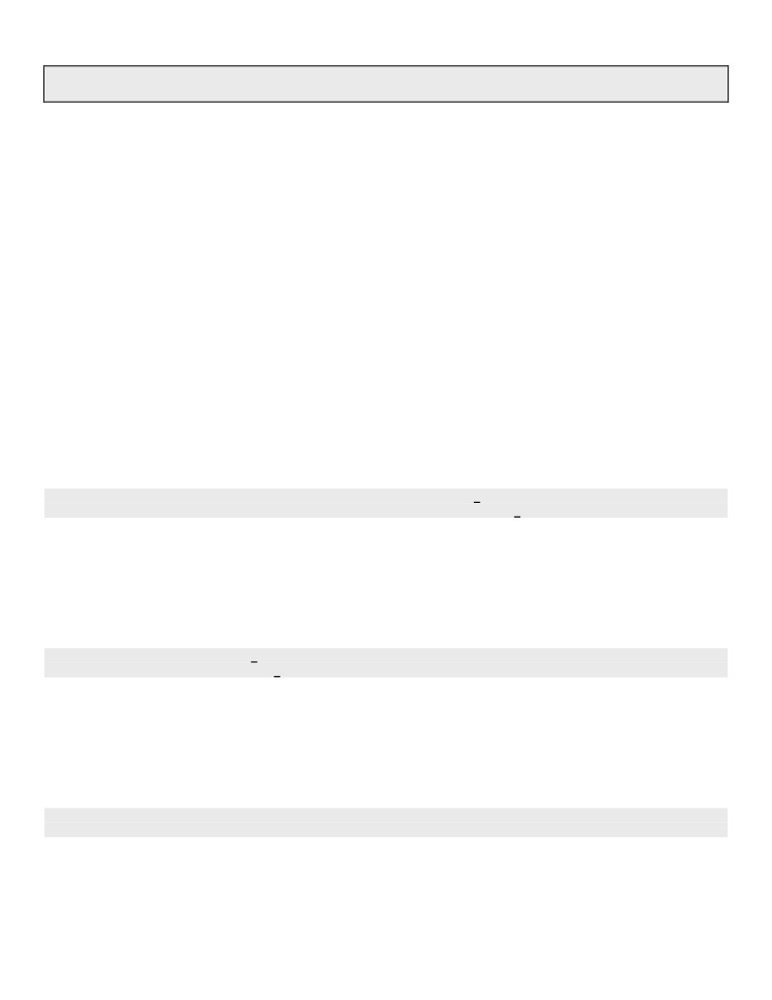
LA BONTE’S TOP 100 ENGLISH CONVERSATION PATTERNS
21
I WANT TO v.
1. a. I WANT n/op TO v.
You can use a person’s name, object pronoun or noun after WANT. This changes the meaning that
you want someone else to do something.
I want him to come here.
She doesn't want John to leave now.
Do you want her to bring it?
Did he want the teacher to stay?
b. I DON'T WANT n/op TO v.
=
I DON'T WANT n/op vING.*
*This short form is only found in the negative sentence/question.
She doesn't want the kids playing there.
Didn't they want me cleaning that?
2. When people speak fast, I WANT TO v often sounds like I WANNA v.
I wanna meet her.
Does she wanna go?
3. I DON'T WANT TO v = I DON'T CARE TO v. This pattern is not used with a positive sentence.
+S
------
-S
I don't care to talk now.
She doesn't care to eat that.
+Q
Do you care to take this?
Does he care to rest there?
-Q
Don't you care to study?
Doesn't he care to buy it?
4. I MEANT TO v is similar to I WANT TO v and mostly used in the past tense.
I DIDN'T MEAN TO v implies an apology that you didn't want to do something, but it happened.
I MEANT TO v and I WAS MEANING TO v imply that you wanted to do something, but you
couldn’t do it or didn’t do it for some reason.
I meant to meet her earlier.
They didn't mean to yell at you like that.
She meant to give it back.
Didn't you mean to call her?
I was meaning to buy that.
Wasn't she meaning to tell him?
PAST
+ Did I want to v?
I wanted to v.
- Didn't you want to v?
You didn't want to v.
Didn't he want to talk?
Yes, he wanted to talk.
No, he didn't want to talk.
Did she want you to play?
No, she didn't want me to play.
Yes, she wanted me to play.
Where did he want to take you?
He wanted to take me to the movies.
What didn't she want to buy?
She didn't want to buy the apple.
When did you want to write?
I wanted to write tomorrow.
PRESENT
+ Does he want to v?
He wants to v.
-
Doesn't she want to v?
She doesn't want to v.
Does he want to be happy?
Yes, he wants to be happy.
No, he doesn't want to be happy.
Don't you want him to make it?
No, I don't want him to make it.
Yes, I want him to make it.
Who does she want to meet?
She wants to meet him.
How do you want to go?
I want to go by car.
When doesn't he want to read?
He doesn't want to read tonight.
FUTURE
+ Will you want to v?
You'll want to v.
-
Won't they want to v?
They won't want to v.
Will they want to return?
Yes, they'll want to return.
No, they won't want to return.
Won't she want to invite him?
No, she won't want to invite him.
Yes, she'll want to invite him.
When will she want to come back?
She'll want to come back today.
What won't you want to eat?
I won't want to eat hot dogs.
Who will they want to see?
They'll want to see her.
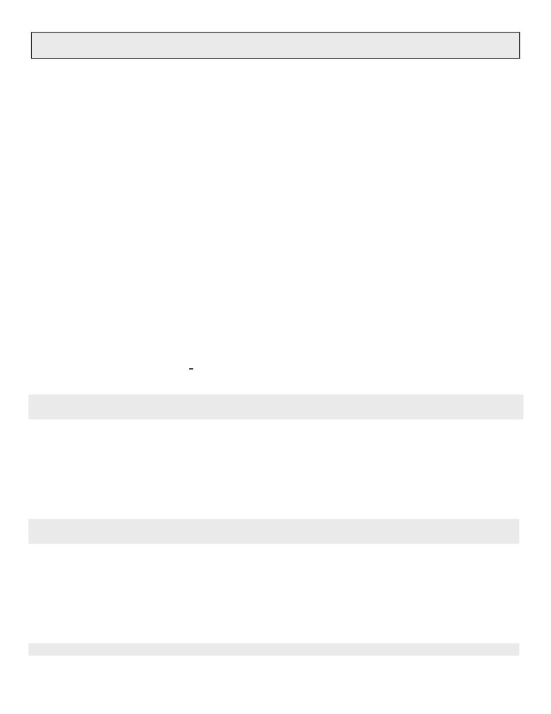
LA BONTE’S TOP 100 ENGLISH CONVERSATION PATTERNS
22
I CAN v.
1. In the negative form, there is a short form:
(present)
can't
=
can not
(past)
couldn't
= could not
a.
CAN'T and COULDN'T are used more in conversation with the negative sentence.
I can't go.
=
I cannot go.
He couldn't come.
=
He could not come.
b.
CAN'T and COULDN'T are always used in a negative question.
2. FUTURE
sometimes I COULD v can refer to the future. See pages 127, 128 and 129.
3. Other variations of I CAN'T are:
*THERE IS NO WAY
*THERE IS NO WAY OF vING.
** THERE ISN'T ANY WAY
**THERE ISN'T ANY WAY OF vING.
If you need to specify a person:
*THERE IS NO WAY FOR n/op TO v.
*THERE IS NO WAY OF n/op vING.
*THERE IS NO WAY THAT s***.
**THERE ISN'T ANY WAY FOR n/op TO v.
**THERE ISN'T ANY WAY OF n/op vING.
**THERE ISN'T ANY WAY THAT s***.
THAT is optional.
*Use only in a -S.
** Use only in a -S, +Q or -Q.
*** Sentence usually has CAN, CAN'T, COULD or COULDN' in it. In the past tense you will often hear
COULD HAVE v PP.
Wasn't there any way to meet him?
No, there wasn't any way to meet him.
Is there any way he can bring it?
No, there isn't any way he can bring it.
Isn't there any way for you to go?
No, there isn't any way for me to go.
Wasn't there any way of finding out?
No, there wasn't any way of finding out.
Wasn't there any way she could have called?
No, there wasn't any way she could have called.
4.
For emphasis, you can use ABSOLUTELY after IS in a sentence only with:
THERE IS NO WAY that s.
There is absolutely no way she can take that.
THERE IS NO WAY TO v.
There is absolutely no way to get there today.
PAST
+ Could I v?
I could v.
- Couldn't you v?
You couldn't v.
Could you remember?
Yes, I could remember.
No, I couldn't remember.
Couldn't he pay?
No, he couldn't pay.
Yes, he could pay.
Who could you find?
I could find her.
What couldn't they learn?
They couldn't learn French.
Where could he practice?
He could practice at school.
PRESENT
+ Can he v?
He can v.
- Can't we v?
We can't v.
Can they open it?
Yes, they can open it.
No, they can't open it.
Can't she wait?
No, she can't wait.
Yes, she can wait.
What can you play?
I can play baseball.
When can he come back?
He can come back tomorrow.
Where can they talk?
They can talk in the house.
FUTURE
--------
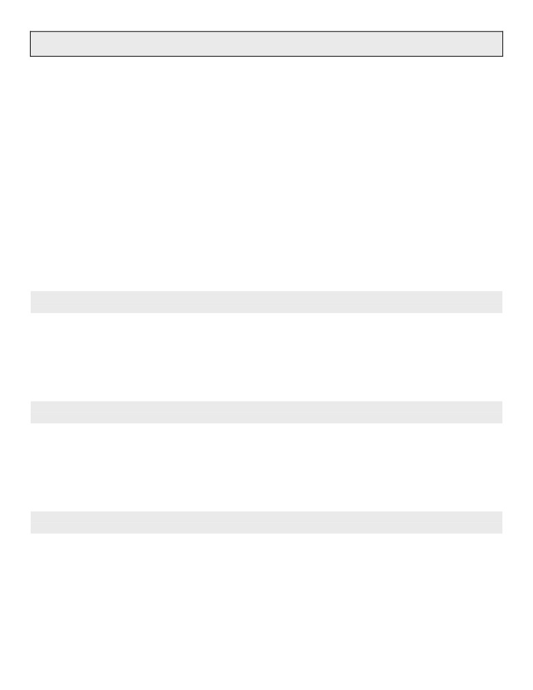
LA BONTE’S TOP 100 ENGLISH CONVERSATION PATTERNS
23
I AM GOING TO v.
1. When people speak fast, I AM GOING TO v often sounds like I'M GONNA v. In the beginning, students
should use I AM GOING TO v.
Are you gonna go?
Yes, I'm gonna go.
Were they gonna come back?
No, they weren't gonna come back.
2. In the present tense, I AM vING can be a short form of I AM GOING TO v. With I AM vING, there is
usually a reference to time like "tomorrow", "later", etc. that follows the verb.
He is meeting her tomorrow.
=
He is going to meet her tomorrow.
They're sleeping there tonight.
=
They're going to sleep there tonight.
She is bringing him there later.
=
She is going to bring him there later.
I'm buying it at 5.
=
I'm going to buy it at 5.
Is she working Thursday?
=
Is she going to work Thursday?
This short form can be used with any variation of GO or COME.
She's coming back this evening.
=
She is going to come back this evening.
Are they going out tonight?
=
Are they going to go out tonight?
They're going back later.
=
They're going to go back later.
He's going in tomorrow.
=
He's going to go in tomorrow.
I'm coming out at 9.
=
I'm going to come out at 9.
3. I AM GOING TO BE vING. Instead of using WILL in the future tense, use I AM GOING TO BE vING.
She's going to be leaving tonight.
They're going to be bringing it.
PAST
+ Was I going to v?
He was going to v.
- Weren't you going to v?
You weren't going to v.
Was she going to dance?
Yes, she was going to dance.
No, she wasn't going to dance.
Weren't they going to try?
No, they weren't going to try.
Yes, they were going to try.
Who were you going to bring?
I was going to bring him.
When was he going to go back?
He was going to go back tonight.
Where were we going to work?
We were going to work at home.
PRESENT
+ Is he going to v?
He's going to v.
- Aren't we going to v?
We aren't going to v.
Is she going to teach?
Yes, she's going to teach.
No, she isn't going to teach.
Are you going to sell it?
No, I'm not going to sell it.
Yes, I'm going to sell it.
What are you going to drink?
I'm going to drink Coke.
Who is he going to call?
He's going to call his mother.
Where are they going to rest?
They're going to rest at the hotel.
FUTURE*
+ Are you going to be ving?
He's going to be ving.
- Isn't she going to be ving?
They aren't going to be ving.
*Instead of WILL, use AM GOING TO BE vING.
Is she going to be teaching?
No, she isn't going to be teaching.
Yes, she is going to be teaching.
Are you going to be eating there?
Yes, I'm going to be eating there.
Where are you going to be staying?
I'm going to be staying at the hotel.
When is she going to be calling?
She's going to be calling later tonight.
What are they going to be bringing?
They're going to be bringing the dessert.
Who is he going to be taking?
He's going to be taking Serena.
LA BONTE’S TOP 100 ENGLISH CONVERSATION PATTERNS
24
I WOULD LIKE TO v.
1.
I WOULD LIKE n/op TO v.
=
I WOULD LIKE FOR n/op TO v.
You can use a person’s name, object pronoun or noun after LIKE. This changes the meaning that
you would like someone else to do something. You can add FOR before the person’s name, object
pronoun or name.
He would like her to take it.
I would like the students to study more.
Would you like for them to leave?
Would they like for Don to come back?
2.
Sometimes you will hear a variation of this pattern: I WOULD LIKE vING.
I WOULD LIKE TO v is used much more, and always sounds right.
3.
Instead of LIKE, you will sometimes hear LOVE or HATE.
He'd hate to stay there.
She'd love to help him.
Wouldn't they hate to get that?
I'd love to marry her.
You would hate to get up that early.
Wouldn't you love to live there?
4.
In conversation, HOW is often put before WOULD YOU LIKE. There is no change in meaning.
How would you like to v?
=
Would you like to v?
How would you like n?
=
Would you like n?
How would you like to meet her?
= Would you like to meet her?
How would you like to travel there?
= Would you like to travel there?
How would they like to get that?
= Would they like to get that?
How would she like seeing that?
= Would she like seeing that?
How would you like a cup of coffee?
= Would you like a cup of coffee?
5.
With a noun, I WOULD LIKE n/op is the same as I WANT n/op.
Would you like an apple?
=
Do you want an apple?
I wouldn't like that.
=
I don't want that.
6.
Similar patterns include:
I AM INTERESTED IN vING.
I WOULD BE INTERESTED IN vING.
Are you interested in meeting her?
Would they be interested in coming?
Was she interested in buying it?
Would you be interested in bringing her?
Were they interested in talking?
Wouldn't you be interested in seeing it?
PAST & FUTURE
--------
PRESENT
+
Would he like to v?
I'd like to v.
-
Wouldn't you like to v?
They wouldn't like to v.
I would
= I’d
I would not
= I wouldn’t
You would
= You’d
You would not
= You wouldn’t
He would
= He'd
He would not
= He wouldn't
She would
= She'd
She would not
= She wouldn't
It would
= It'd
It would not
= It wouldn't
We would
= We'd
We would not
= We wouldn't
They would
= They'd
They would not
= They wouldn't
Would you like to talk to her?
Yes, I'd like to talk to her.
No, I wouldn't like to talk to her.
Would he like her to come back?
No, he wouldn't like her to come back.
What would she like to buy?
She'd like to buy a car.
Where would they like to go on a picnic?
They'd like to go on a picnic near here.
Who would you like to bring?
I'd like to bring all my friends.
When would he like to wake up?
He'd like to wake up at 7:30.
Where would you like to eat?
I'd like to eat at the restaurant.
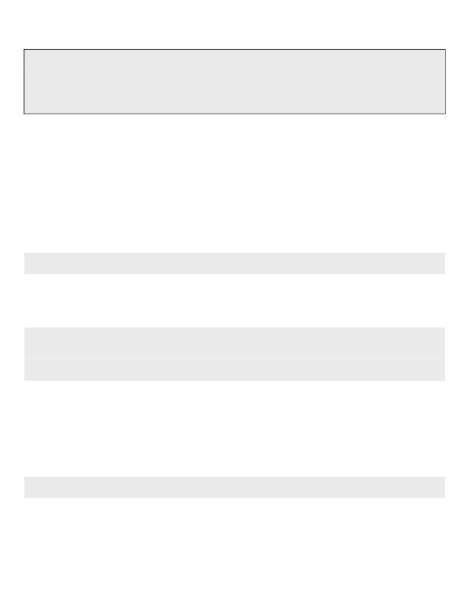
LA BONTE’S TOP 100 ENGLISH CONVERSATION PATTERNS
25
I HAVE TO v.
I HAVE GOT TO v.
I MUST v.
1. I HAVE GOT TO v. This can only be used in the present tense.
a. When people speak fast, I HAVE GOT TO v often sounds like I GOTTA v.
Question: Have you gotta v?
Haven't you gotta v
Sentence: I gotta v.
She hasn't gotta v.
b. Sometimes people will say I GOT TO v or ask DO YOU GOT TO v? This is a short form of
I HAVE GOT TO v. In the negative, I DON'T GOT TO is not used. I suggest that beginning
students use I HAVE GOT TO v. On page 46, you will learn that I GOT TO v in the past tense
also means I HAD THE CHANCE TO v.
Do you got to meet her?
Yes, I got to meet her.
Do you got to tell him?
Yes, I got to tell him.
2.
I MUST v. Use only in the present tense. There is no question form.
PAST
+ Did you have to v?
I had to v.
- Didn't he have to v ?
She didn't have to v.
Did they have to send it?
Yes, they had to send it.
No, they didn't have to send it.
What did he have to do?
He had to find the book.
PRESENT
+ Does he have to v?
They have to v.
-------
He must v.
Have we got to v?
You've got to v.
- Don't we have to v?
She doesn't have to v.
Haven't you got to v?
I haven't got to v.
Have you got to leave now?
Yes, I've got to leave now.
No, I haven't got to leave now.
Does she have to take the bus?
Yes, she has to take the bus.
Where have you got to meet her?
I've got to meet her at the church.
Who has he got to follow?
He's got to follow his friend.
What do they have to wash?
They have to wash their socks.
When has she got to get there?
She's got to get there at 9.
FUTURE
+ Will you have to v?
He'll have to v.
-Won't they have to v?
You won't have to v.
Will you have to find it?
Yes, I'll have to find it.
No, I won't have to find it.
Won't he have to bring it back?
No, he won't have to bring it back.
Who will you have to contact?
I'll have to contact my girl friend.
When will they have to sell it?
They'll have to sell it tomorrow.
What will she have to return?
She'll have to return the shoes.
LA BONTE’S TOP 100 ENGLISH CONVERSATION PATTERNS
26
I WILL PROBABLY v.
1. I WILL PROBABLY BE vING is a variation of I WILL PROBABLY v. I WILL PROBABLY
BE vING sounds strange when used with some verbs however.
PAST
+ Did he probably v?
They probably v (past).
- Didn't she probably v?
You didn't probably v.
Didn't they probably know it?
No, they didn't probably know it.
What did he probably eat?
He probably ate some ice cream.
PRESENT
+ Does she probably v?
I probably v.
- Don't you probably v?
He doesn't probably v.
Does he probably know?
Yes, he probably knows.
What do they probably need?
They probably need food.
FUTURE
+ Will you probably v?
She'll probably be ving.
-
Won't he probably be ving?
We won't probably v.
Will they probably call later?
Yes, they'll probably call later.
No, they won't probably call later.
Won't she probably take it?
No, she won't probably take it.
Will he probably be visiting you?
Yes, he'll probably be visiting me.
Will you probably be angry?
Yes, I'll probably be angry.
When will he probably come back?
He'll probably come back on Friday.
Who will she probably be seeing?
She’ll probably be seeing a friend.
\
I HAPPEN TO v.
PAST
+ Did she happen to v?
He happened to v.
-
Didn't you happen to v?
They didn't happen to v.
Did he happen to leave early?
Yes, he happened to leave early.
Didn't you happen to meet her?
No, I didn't happen to meet her.
What did you happen to do?
I happened to talk to my friends.
Where did he happen to sleep?
He happened to sleep at my house.
PRESENT
+ Does he happen to v?
She happens to v.
- Don't you happen to v?
He doesn't happen to v.
Does she happen to know him?
Yes, she happens to know him.
Don't you happen to go there a lot?
No, I don't happen to go there a lot.
What does she happen to do there?
She happens to work there.
How do you happen to know that?
I happen to know that through a friend.
FUTURE
-------
--------
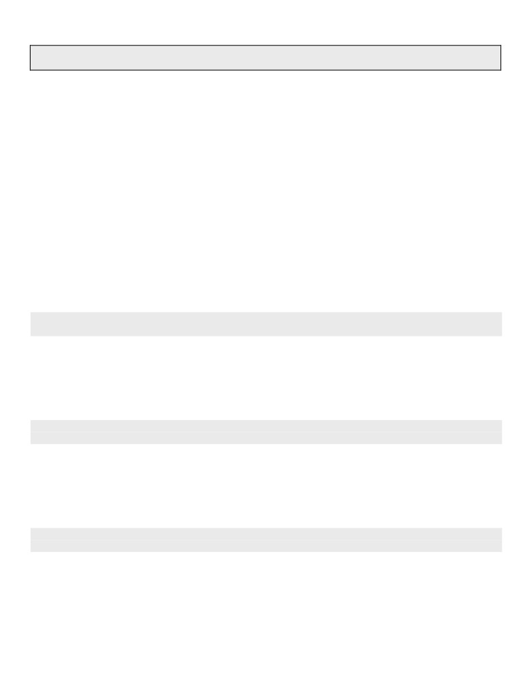
LA BONTE’S TOP 100 ENGLISH CONVERSATION PATTERNS
27
I NEED TO v.
1. I NEED TO v is the same as IT IS NECESSARY TO v. I NEED TO v is used much more.
2. You can use a person's name, object pronoun or noun after NEED or NECESSARY.
I NEED FOR n/op TO v.
=
I NEED n/op TO v.
IT IS NECESSARY FOR n/op TO v.
This changes the meaning that you want someone else to do something. You can add FOR before the
person's name, object pronoun or noun.
I need him to bring it now.
She needs Don to take it.
She needs them to carry this.
He needed the teacher to explain it.
Does he need for her to return it?
Did you need for me to pick it up?
Is it necessary for Tina to go?
It was necessary for the students to rest.
3. Other variations of I DON'T NEED TO v are:
*THERE IS NO NEED TO v.
**THERE ISN'T ANY NEED TO v.
If you need to specify a person:
*THERE IS NO NEED FOR n/op TO v.
**THERE ISN'T ANY NEED FOR n/op TO v.
*Use only in a -S.
** Use only in a -S, +Q or -Q.
Isn't there any need to call her?
No, there isn't any need to call her.
Is there any need for him to come?
No, there's no need for him to come.
Was there any need to study that?
No, there wasn't any need to study it.
PAST
+ Did they need to v?
She needed to v.
- Didn't he need to v?
I didn't need to v.
Did she need to tell him?
No, she didn't need to tell him.
Yes, she needed to tell him.
Didn't you need to get it?
No, I didn't need to get it.
Where did you need to stand?
I needed to stand at the corner.
Who did they need to invite?
They needed to invite Ms. Kim.
What did we need to drink?
We needed to drink the water.
PRESENT
+ Does he need to v?
They need to v.
- Don't you need to v?
She doesn't need to v.
Do you need to get in touch with him?
Yes, I need to get in touch with him.
No, I don't need to get in touch with him.
Don't they need to know that?
No, they don't need to know that.
What does he need to use?
He needs to use the pen.
Where do you need her to send it?
I need her to send it to Chicago.
When do they need for him to clean?
They need for him to clean now.
FUTURE
+ Will you need to v?
I'll need to v.
- Won't they need to v?
They won't need to v.
Won't he need to pay back the money?
No, he won't need to pay back the money.
Yes, he'll need to pay back the money.
Will she need to learn that?
Yes, she'll need to learn that.
What will they need to buy?
They'll need to buy new shoes.
Where will he need to wash up?
He'll need to wash up in the bathroom.
When will we need to give it back?
We'll need to give it back this afternoon.
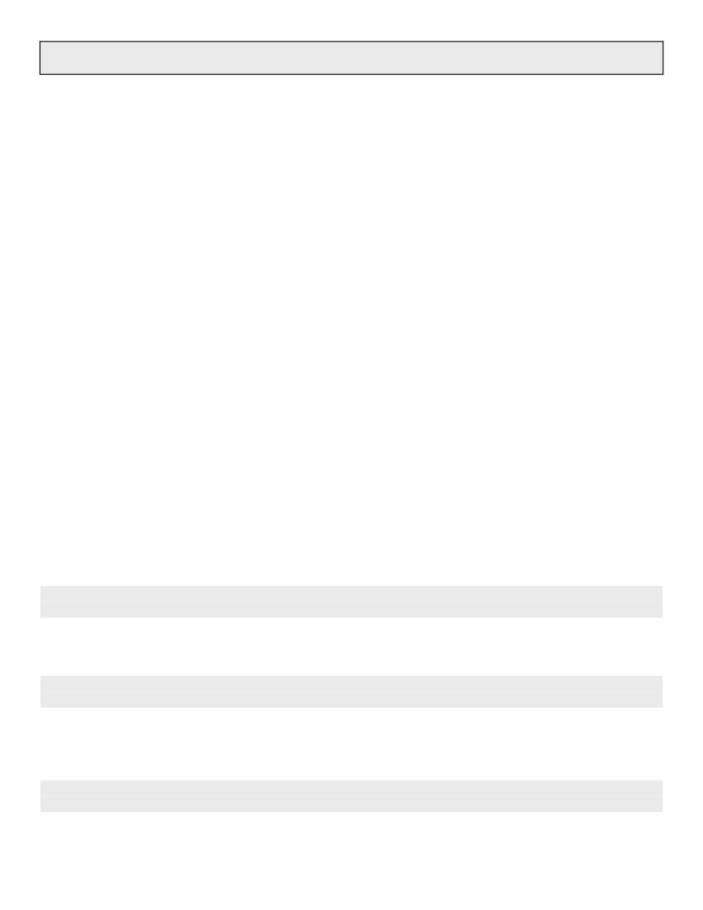
LA BONTE’S TOP 100 ENGLISH CONVERSATION PATTERNS
28
I GO TO v.
1. You can use any variation of GO or COME.
GO IN
I went in to take a nap.
COME IN
She came in to talk.
GO OUT He goes out to read.
COME OUT
They come out to relax.
GO BACK They go back to study.
COME BACK
She comes back to eat.
GO OVER She goes over to cook.
COME OVER
We come over to sing.
GO DOWN We go down to see him.
COME DOWN
I come down to watch TV.
GO UP
He went up to study.
COME UP
She came up to go to sleep.
GO BY
I'll go by to see him.
COME BY
Please come by to talk.
2. GO TO
= GO AND
They go to study there.
=
They go and study there.
He comes to wash his clothes.
=
He comes and washes his clothes.
3. I GO v
You can use this in the present and future tense. In the third person singular in
the
present tense, it does not sound good. It does not sound good with any variation of COME, or
other variations of GO like GO IN, GO BACK etc. In the past tense, it can only be used in a
question or negative sentence (not a positive sentence).
We go dance there a lot.
He'll go meet her tomorrow.
I go play tennis there every day.
They'll go take the test with me.
Please go read that magazine.
She'll go explain it to him.
4. ON can be added to GO or COME with no change in meaning.
I went on in to talk to her.
They'll come on back to pick it up.
Did you go on over to see her?
Will he go on by to talk to her tonight?
Did she go on to the house alone?
She'll come on over to meet them later.
5. You can substitute HEAD for GO. If a place follows HEAD, you can use either FOR or TO.
TO and FOR are not needed in front of HOME, HERE and THERE.
He headed home.
=
He went home.
She headed for the bar.
=
She went to the bar.
Where are you headed?
=
Where are you going?
He headed back to the school.
They headed down to the pool.
We headed out to the road.
She'll head in for the gym later.
6. I'M HERE TO v is a variation of I COME TO v. You can use THERE instead of HERE depending
on the situation.
She's here to talk to you.
Was she there to take it?
PAST
+ Did he go to v?
They went to v.
- Didn't you come to v?
I didn't come to v.
Did she come by to talk?
Yes, she came by to talk.
No, she didn't come by to talk.
Did they go over to see their mother?
Yes, they went over to see their mother.
What did he go out to eat?
He went out to eat ice cream.
PRESENT
+ Does he go to v?
They go to v.
- Don't you come to v?
She doesn't come to v.
Do they come in to study?
Yes, they come in to study.
No, they don't come in and study.
Doesn't she come out to play?
No, she doesn't come out to play.
When do they come over to help?
They come over to help on Monday.
Where does he go to smoke?
He goes to smoke outside.
FUTURE
+ Will you go to v?
He'll go to v.
- Won't they come to v?
You won't come to v.
Will she come out to practice?
No, she won't come out to practice.
Where will he go to study?
He'll go to study in the library.
When will you go back to finish it?
I'll go back to finish it tomorrow.
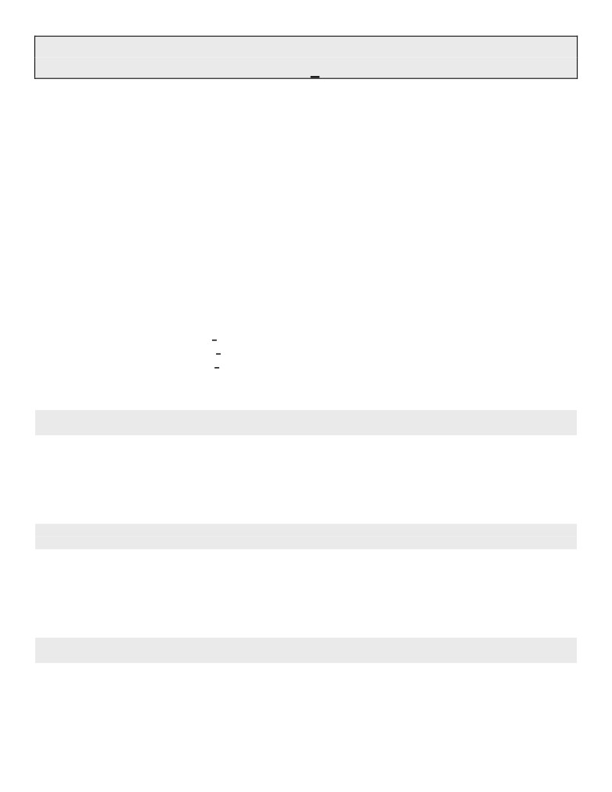
LA BONTE’S TOP 100 ENGLISH CONVERSATION PATTERNS
29
I LIKE TO v.
I LIKE v ING.
1. You can use a person's name, object pronoun or noun after LIKE. FOR can come after LIKE with
I LIKE
TO v, but doesn't sound good with I LIKE vING.
I like for him to help me.
Does she like me doing that?
He likes me to make dessert.
Didn't he like Mr. Lee telling her that?
They didn't like the students complaining.
Do you like him teaching you?
2. HOW sometimes comes before DO YOU LIKE and there is no change in meaning.
HOW DO YOU LIKE vING?
=
DO YOU LIKE vING?
HOW DO YOU LIKE n/op?
=
DO YOU LIKE n/op?
How do you like reading that?
=
Do you like reading that?
How does he like dancing?
=
Does he like dancing?
How did he like playing there?
=
Did he like playing there?
How did you like it?
=
Did you like it?
How did they like Chicago?
=
Did they like Chicago?
3.
Instead of LIKE, you will also hear LOVE and HATE.
I hate studying that.
I love reading books at night.
Does she hate to talk to him?
Don't you love to listen to music?
4.
Similar patterns include:
I ENJOY vING.
I enjoy reading books at night.
I LIKE IT WHEN s.
She likes it when she is alone.
I LOVE IT WHEN s.
They love it when it snows.
I HATE IT WHEN s.
I hate it when she yells at me like that.
I LIKE THE IDEA OF vING.
I like the idea of getting there early.
*IT is optional. ENJOY, LIKE, LOVE and HATE are interchangeable depending on the
feeling.
PAST
+ Did I like to v?
I liked to v.
- Didn't you like ving?
You didn't like ving.
Did he like playing cards?
Yes, he liked playing cards.
No, he didn't like playing cards.
Did you like to work there?
No, I didn't like to work there.
Yes, I liked to work there.
What did you like to cook?
I liked to cook chicken.
Where did they like to drink?
They liked to drink at the bar.
Who did you like to talk to?
I liked to talk to my teacher.
PRESENT
+ Does he like to v?
He likes to v.
- Don't we like ving?
We don't like ving.
Does she like you to complain?
Yes, she likes me to complain.
No, she doesn't like me to complain.
Don't they like shopping?
No, they don't like shopping.
Yes, they like shopping.
What do you like reading?
I like reading the paper.
When does he like getting up?
He likes getting up at 7.
Where do they like to talk?
They like to talk in the restaurant.
FUTURE
+ Will you like to v?
I'll like to v.
- Won't they like ving?
They won't like ving.
Won't he like coming?
No, he won't like coming.
Yes, he'll like coming.
Will they like to listen to the music?
Yes, they'll like to listen to the music.
No, they won't like listening to the music.
Who will she like to invite?
She'll like to invite her friends.
What will you like learning?
I'll like learning Spanish.
When will they like to buy it?
They'll like to buy it on Friday.
LA BONTE’S TOP 100 ENGLISH CONVERSATION PATTERNS
30
IT IS WORTH vING.
1. Other variations of IT IS WORTH vING are: IT IS WORTHWHILE vING.
IT IS WORTHWHILE TO v.
IT IS WORTH IT TO v.
Is it worthwhile studying that?
Yes, it's worthwhile studying that.
Isn't it worthwhile to take that class?
No, it isn't worthwhile to take that class.
Was it worth it to buy it then?
No, it wasn't worth it to buy it then.
2. IT'S WORTH IT. You will hear this pattern sometimes used without a verb. It often refers to
whether the price of something is too high or too low, or whether the result of something you do
is satisfactory.
Is it worth it?
No, it isn't worth it.
Wasn't the trip worth it?
No, it wasn't worth it.
Was that watch worth it?
Yes, that watch was worth it.
3. IT is usually the subject, but sometimes other pronouns/nouns are used.
That book is worth reading.
Were they worth taking to school?
She is worth talking to.
Was that car worth buying?
4. Another variation of this pattern is: IT PAYS TO v.
Does it pay to get that now?
Yes, it pays to get that now.
Did it pay to buy that in advance?
No, it didn't pay to buy that in advance.
Did it pay to finish early?
Yes, it paid to finish early.
PAST
+ Was it worth ving?
It was worth ving.
- Wasn't it worth ving?
It wasn't worth ving.
Was it worth seeing that movie?
Yes, it was worth seeing that movie.
No, it wasn't worth seeing that movie.
Wasn't it worth bringing?
No, it wasn't worth bringing.
Where was it worth going to?
It was worth going to that store.
Who was it worth meeting?
It was worth meeting my teacher.
PRESENT
+ Is he worth ving?
It is worth ving.
- Aren't they worth ving?
They aren't worth ving.
Is he worth inviting?
Yes, he is worth inviting.
No, he isn't worth inviting.
Isn't it worth getting there early?
Yes, it's worth getting there early.
Where is it worth traveling to?
It is worth traveling to New York.
Who is it worth waiting for?
It is worth waiting for the children.
FUTURE
+ Will it be worth ving?
It'll be worth ving.
-Won't it be worth ving?
It won't be worth ving.
Will it be worth taking this?
No, it won't be worth taking that.
Yes, it'll be worth taking that.
Won't he be worth talking to?
No, he won't be worth talking to.
When will it be worth finishing?
It'll be worth finishing tomorrow.
What will it be worth getting?
It'll be worth getting more books.
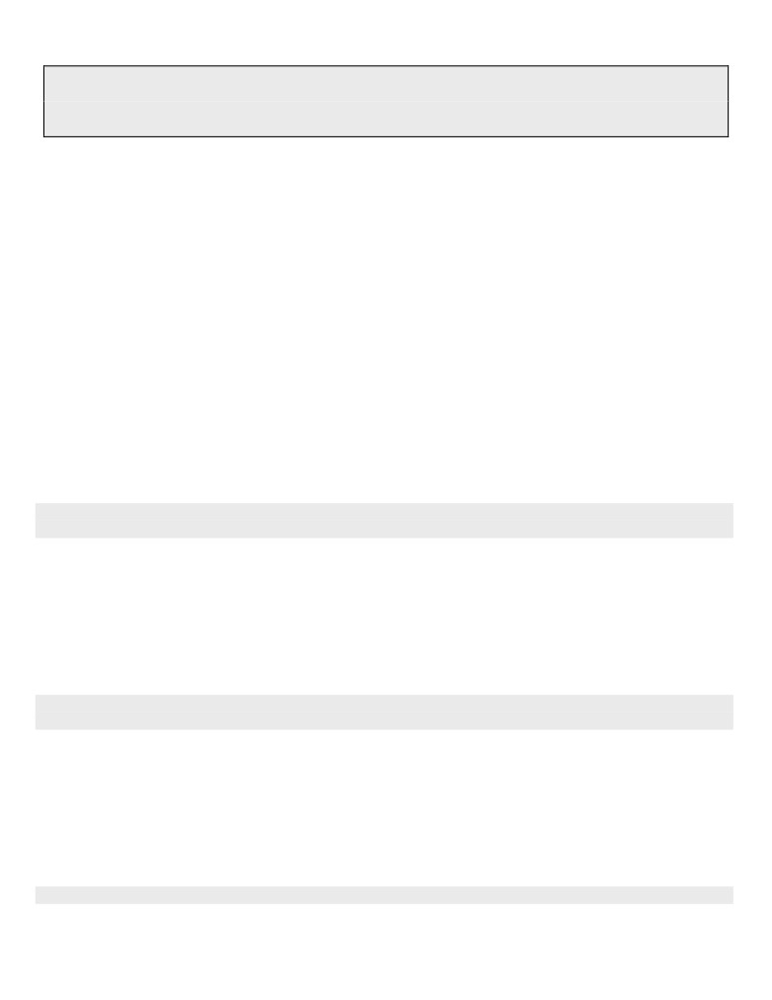
LA BONTE’S TOP 100 ENGLISH CONVERSATION PATTERNS
31
I PLAN TO v.
I PLAN ON vING.
1. Other variations of I PLAN TO are: I INTEND TO v.
I INTEND ON vING.
** I DON'T HAVE ANY INTENTION OF vING.
** I HAVEN'T GOT ANY INTENTION OF vING.
** I HAVE NO INTENTION OF vING.
**not usually used in a positive sentence. Note the options below:
negative sentence
negative question
I don't have any intention of ving.
Don't you have any intention of ving?
I have no intention of ving.
----
I haven't got any intention of ving.
Haven't you got any intention of ving?
Did you intend on taking it?
Yes, I intended on taking it.
Did he intend to talk to her?
No, he didn't intend to talk to her.
Didn't he have any intention of going?
No, he didn't have any intention of going.
What does she intend on using?
She intends on using the tools.
Does she intend on bringing it here?
No, she doesn't intend on bringing it.
Do you have any intention of staying?
No, I don't have any intention of staying.
PAST
+ Did you plan to v?
She planned to v.
- Did you plan on ving?
I planned on ving.
Did you plan to arrive late?
Yes, I planned to arrive late.
No, I didn't plan to arrive late.
Didn't you plan on going there?
Yes, I planned on going there.
What did you plan to use?
I planned to use the computer.
Where did they plan on living?
They planned on living in Chicago.
Who did you plan to work with?
I planned to work with Dan.
Where did you plan on building it?
I planned on building it over there.
PRESENT
+ Do you plan on ving?
She plans on ving.
- Don't you plan to v?
He doesn't plan to v.
Do you plan to get a hold of him?
Yes, I plan to get a hold of him.
No, I don't plan to get a hold of him.
Doesn't she plan to see that movie?
No, she doesn't plan to see that movie.
What do they plan on cooking?
They plan on cooking chicken.
Where do you plan on taking a picture?
I plan on taking a picture at the office.
When does he plan on showing it to you?
He plans on showing it to me tonight.
Who do you plan on taking?
I plan on taking my children.
FUTURE
------------
*This pattern is not used a lot with the future tense.
LA BONTE’S TOP 100 ENGLISH CONVERSATION PATTERNS
32
I AM SUPPOSED TO v.
I AM SUPPOSED TO BE vING.
1. I AM TO v.
In the past and present tense, there is short form to this pattern. It is not used in a negative sentence,
positive question or negative question. I AM SUPPOSED TO is used much more.
(present)
He is to go there today.
=
He is supposed to go there today.
I am to talk to him later.
=
I am supposed to talk to him later.
(past)
They were to see him today.
=
They were supposed to see him today.
She was to buy it there.
=
She was supposed to be buy it there.
2.
I AM DUE TO v. This is another variation.
(past)
Were you due to get it tonight?
When was she due to get here?
(present)
Is she due to get the prize?
What is she due to give him?
PAST
+Were you supposed to v?
I was supposed to be ving.
- Wasn't he supposed to be ving?
They weren't supposed to v.
Was he supposed to tell her?
No, he wasn't supposed to tell her.
Yes, he was supposed to tell her.
Weren't they supposed to be calling back?
Yes, they were supposed to be calling back.
Where was he supposed to sing?
He was supposed to sing at school.
What were you supposed to buy for her?
I was supposed to buy a gift for her.
Who were we supposed to be contacting?
We were supposed to be contacting them.
When was he supposed to decide?
He was supposed to decide by Monday.
Where were they supposed to be resting?
They were supposed to be resting at home.
PRESENT
+ Is she supposed to be ving?
He's supposed to v.
- Aren't you supposed to v?
They aren't supposed to be ving.
Isn't he supposed to be taking a trip?
Yes, he's supposed to be taking a trip.
No, he isn't supposed to be taking a trip.
Are you supposed to marry her?
Yes, I'm supposed to marry her.
Are they supposed to prepare it?
No, they aren't supposed to prepare it.
What are you supposed to be learning?
I'm supposed to be learning English.
Who is she supposed to help?
She's supposed to help her brother.
When are they supposed to make it?
They're supposed to make it tonight.
Where are you supposed to be working?
I'm supposed to be working at the office.
FUTURE
-------------
LA BONTE’S TOP 100 ENGLISH CONVERSATION PATTERNS
33
I TRY TO v.
I TRY vING.
1. Sometimes you will hear AND instead of TO in the present and future tense only.
(present)
She tries and visits him a lot.
(future)
They'll try and meet you there.
2. Other common variations of this pattern are:
I ATTEMPT TO v.
I ATTEMPT vING.
I MAKE AN ATTEMPT TO v.
I MAKE NO ATTEMPT TO v.*
I MAKE AN EFFORT TO v.
I MAKE NO EFFORT TO v.*
*No question form.
3 In the negative form of this pattern, you will often find NOT placed after TRY when you want to
emphasize the following verb.
She tried not to tell him.
=
She tried not telling him.
They tried not to talk loud.
=
They tried not talking loud.
Does he try not to complain a lot?
PAST
+ Did they try to v?
He tried to v.
- Didn't you try ving?
I tried not to v.
Didn't she try not to v?
She didn't try to v.
Did they try to contact her?
Yes, they tried to contact her.
No, they didn't try to contact her.
Didn't she try to get out of it?
Yes, she tried to get out of it.
What did you try to bring?
I tried to bring my guitar.
Where did you try staying?
We tried staying at the hotel.
When did he try to wash it?
He tried to wash it last night.
PRESENT
+ Does she try to v?
You try ving.
-Don't you try to v?
He tries not to v
Do they try not to v?
They don't try to v.
Does he try playing basketball?
Yes, he tries playing basketball.
No, he doesn't try playing basketball.
Don't they try to make up?
No, they don't try to make up.
What does she try to drive?
She tries to drive a car.
Where does he try to study?
He tries to study in his room.
When do you try to go to the doctor?
I try to go to the doctor in the summer.
FUTURE
+ Will you try to v?
He'll try ving.
-Won't she try to v?
You won't try to v.
Will they try not to v?
I'll try not to v.
Will he try to walk back?
Yes, he'll try to walk back.
No, he won't try to walk back.
Won't you try to turn it on?
No, I won't try to turn it on.
Where will she try meeting him?
She'll try meeting him at work.
What will they try to practice?
They'll try to practice the piano.
Who will he try to get a hold of?
He'll try to get a hold of Carole.
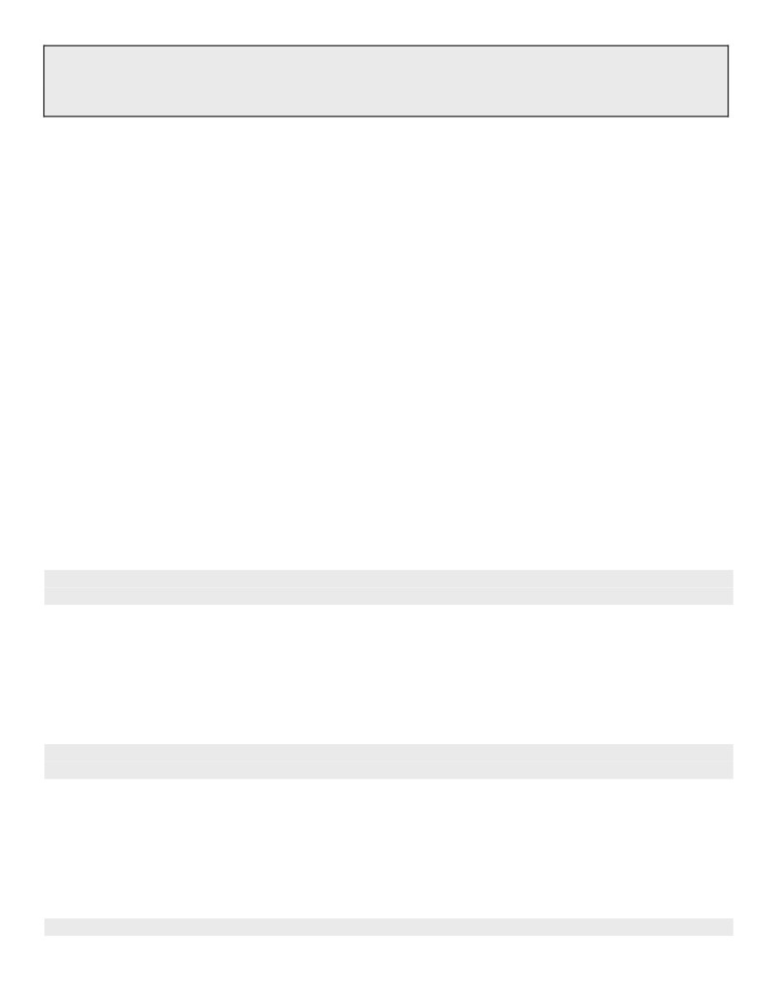
LA BONTE’S TOP 100 ENGLISH CONVERSATION PATTERNS
34
I AM THINKING OF vING.
I AM THINKING ABOUT vING.
1. In the past tense there are two common variations of this pattern:
a.
I gave some thought to ving.
Did you give some thought to ving?
*Did you give any thought to ving?
*ANY is not used in the positive sentence.
I gave any thought to writing it. (wrong)
ANY can be used in negative sentence/question and positive question.
Did you give any thought to sending it?
Didn't he give any thought to reading that book?
She didn't give any thought to wearing those clothes.
b.
I thought of ving.
Did you think of ving?
I thought about ving.
Did you think about ving?
Did you think of buying it?
Yes, I thought of buying it.
Did she think about staying there?
No, she didn't think about staying there.
What did he think of doing?
He thought of taking a nap.
Did you give any thought to using it?
Yes, I gave some thought to using it.
2. Other variations of this pattern are: I AM CONSIDERING vING.
I CONSIDERED vING
(past tense only)
Were you considering meeting her?
No, I wasn't considering meeting her.
Is she considering getting it later?
Yes, she is considering getting it later.
What did they consider buying?
They considered buying a new car.
3. I THOUGHT I'D v.
= I WAS THINKING OF vING.
This implies your intention of doing something in the future. I'D is short for I WOULD.
I thought I'd meet her later at the hotel.
I thought I would do it later.
He thought he'd buy the gift there.
I thought I'd take it back tonight.
PAST
+ Were you thinking of ving?
I was thinking about ving.
- Wasn't he thinking of ving?
They weren't thinking of ving.
Wasn't he thinking of calling her?
No, he wasn't thinking of calling her.
Yes, he was thinking of calling her.
Were you thinking about coming?
Yes, I was thinking about coming.
What were you thinking of doing?
I was thinking of taking a nap.
Where were you thinking of reading?
I was thinking of reading at home.
Who were they thinking of visiting?
They were thinking of visiting me.
When were you thinking about leaving?
I was thinking about leaving today.
PRESENT
+ Is she thinking of ving?
They're thinking about ving.
- Aren't you thinking of ving?
I'm not thinking of ving.
Is he thinking of taking it?
Yes, he's thinking of taking it.
No, he isn't thinking of taking it.
Aren't you thinking about dating her?
Yes, I'm thinking about dating her.
Where are you thinking about sleeping?
I'm thinking about sleeping outside.
What is she thinking about playing?
She's thinking about playing cards.
When are they thinking about coming?
They're thinking about coming tomorrow.
Who are you thinking about writing to?
I'm thinking about writing to my dad.
FUTURE
--------
LA BONTE’S TOP 100 ENGLISH CONVERSATION PATTERNS
35
I FEEL LIKE vING.
1. Other variations of this pattern are:
I HAVE AN URGE TO v.
Did you have an urge to go back there?
I FEEL AN URGE TO v.
She felt an urge to call me.
I GET AN URGE TO v.
Did they get an urge to follow you there?
I FEEL A NEED TO v.
They felt the need to give it back.
*You can use THE instead of AN/A.
I had the urge to talk to him last night.
2. I AM UP TO vING
a. This is another variation of this pattern.
Are you up to taking him?
No, I'm not up to taking him.
Is she up to taking the test?
Yes, she's up to taking the test.
b. Are you up to it?
=
Are you up to doing it?
=
Do you feel like doing it?
c. WHAT ARE YOU UP TO?
=
What are you doing?
WHAT'S UP?
=
"
"
WHAT HAVE YOU BEEN UP TO?
=
What have you been doing?
This is often used as a greeting when you meet people. The response to this greeting is usually
I AM vING and I HAVE BEEN vING.
3. Here are stronger forms of this pattern. Like is optional.
I FEEL COMPELLED TO v.
I FEEL LIKE I HAVE TO v.
She felt compelled to tell him.
I felt like I had to bring it back.
Do you feel compelled to see it?
They feel they have to give it back.
PAST
+ Did you feel like ving?
He felt like ving.
- Didn't they feel like ving?
She didn't feel like ving.
Did you feel like resting?
Yes, I felt like resting.
No, I didn't feel like resting.
Didn't she feel like crying?
Yes, she felt like crying.
What did he feel like making?
He felt like making pancakes.
Where did they feel like camping?
They felt like camping in the mountains.
Who did you feel like giving it to?
I felt like giving it to my brother.
When did he feel like getting up?
He felt like getting up at 8:30.
PRESENT
+ Does he feel like ving?
You feel like ving.
- Don't you feel like ving?
She doesn't feel like ving.
Don't you feel like giving up?
No, I don't feel like giving up.
Yes, I feel like giving up.
Do they feel like dropping by?
No, they don't feel like dropping by.
What does she feel like eating?
She feels like eating cake.
Where do they feel like listening to it?
They feel like listening to it at her house.
When do you feel like having dessert?
I feel like having dessert right now.
Who does he feel like talking to?
He feels like talking to his boss.
FUTURE
+Will he feel like ving?
They'll feel like ving.
- Won't you feel like ving?
She won't feel like ving.
Won't she feel like stopping by later?
No, she won't feel like stopping by later.
Yes, she'll feel like stopping by later.
Will you feel like reading it?
Yes, I'll feel like reading it.
Where will you feel like resting?
I'll feel like resting at home.
What will she feel like studying?
She'll feel like studying French.
Who will he feel like inviting?
He'll feel like inviting his friends.
When will they feel like coming back?
They'll feel like coming back in the summer.
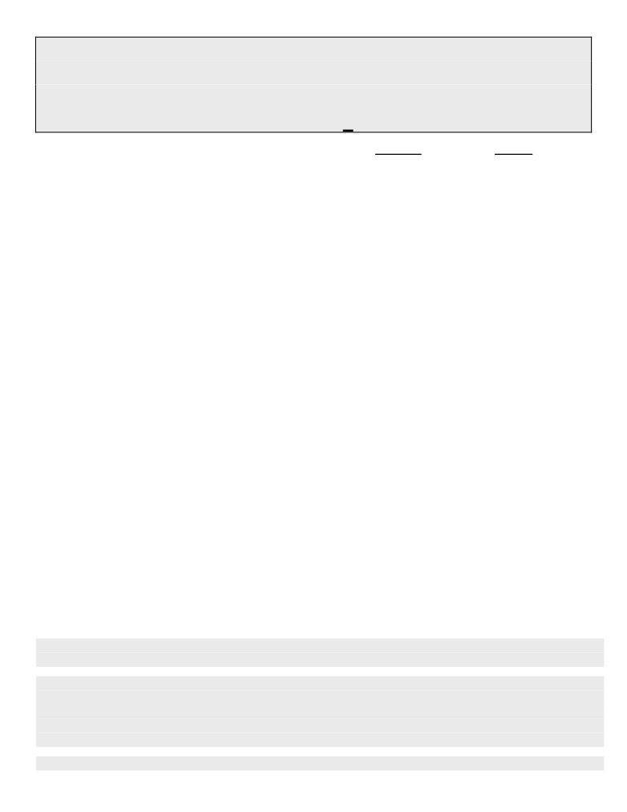
LA BONTE’S TOP 100 ENGLISH CONVERSATION PATTERNS
36
I SHOULD v.
I OUGHT TO v.
I HAD BETTER v.
I BETTER v.
1. Present Tense:
+S
- S
+ Q
- Q
a I should v.
I shouldn't v.
Should I v?
Shouldn't you v?
b. I had better v.
I had better not v.
-----
-----
c.
I ought to v.
-----
-----
-----
d.
I better v.
I better not v.
-----
-----
In the present tense, you can use this pattern to:
MAKE A JUDGMENT (a, b, c & d)
GUESS (a & c only)
He should come home early.
It should be interesting.
She had better meet him.
He ought to like that school.
They ought to talk to them..
She should bring it today.
He better not lie.
2. a. Only I SHOULD is used in the past tense. The pattern is I SHOULD HAVE v PP. This pattern implies
that you think someone made a mistake.
+
I should have gone.
He should have come here.
I should've gone.
They should've read that book.
-
They should not have left.
She should not have said that.
They shouldn't have left.
We shouldn't have bought that.
b. In the past tense, this usually implies you think someone made a mistake.
She should have called.
=
Because she didn't call, you think it is wrong.
He should have slept there.
=
Because he slept there, you think it is wrong.
I shouldn't have given it.
=
Because you gave it, you think you made a mistake.
c. In conversation, SHOULD HAVE often comes out like SHOULDA or SHOULD OF when people speak
fast.
You shoulda talked to her.
They shoulda told him.
She should of called last night
I should of played tennis.
3. When people speak fast, I OUGHT TO v often sounds like I OUGHTA v.
You oughta contact her.
They oughta read that book.
4. When you want to express continuous action, add BE vING in the present tense and HAVE BEEN vING in the
past tense (SHOULD only). I SHOULD BE vING can also be used to guess about the future.
They should be resting there now.
He better be reading that book.
He ought to be fixing it.
She had better be cleaning the house.
John should be telling her later.
They should be helping their parents now.
She should have been typing.
He should have been swimming at the beach.
I should have been resting.
We should have been buying the gift there.
5.
Although BETTER is used the most, to give more emphasis you can use BEST instead of BETTER.
You had best meet her tonight.
We had best leave early.
She best finish that later.
They best call her now.
PAST
+
Should you have v PP?
He should have v PP.
-
Shouldn't you have v PP?
They shouldn't have v PP.
PRESENT
+
Should he v?
They ought to v.
He better v.
He’d better v.
-
Shouldn't she v?
You'd better not v.
He'd better not v.
FUTURE
------------
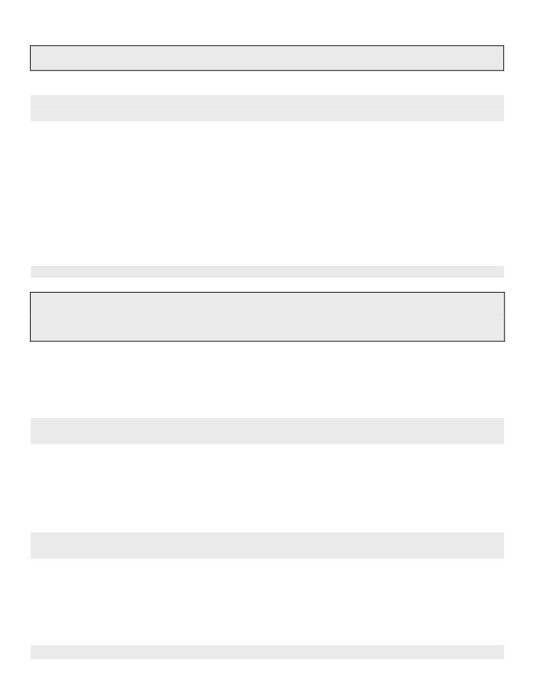
LA BONTE’S TOP 100 ENGLISH CONVERSATION PATTERNS
37
I USED TO v.
PAST
+
Did you use to v?
She used to v.
-
Didn't they use to v?
They didn't used to v.
I WOULD v in the past tense sometimes has the same meaning as I USED to v. There are many
meanings of WOULD which you will find on pages 127, 128 and 129.
Did she use to play the violin?
Yes, she used to play the violin.
No, she didn't used to play the violin.
Didn't you use to work there?
No, I didn't used to work there.
Did they use to swim in the river?
Yes, they used to swim in the river.
Would they meet there often?
Yes, they would meet there often.
What did she use to wear?
She used to wear shorts.
Where did they use to go on a date?
They used to go on a date to the movies.
PRESENT
-----
FUTURE
-----
I AM USED TO vING.
I GET USED TO vING.
1.
I GET USED TO vING implies a process of adapting to something.
I AM USED TO vING is similar but doesn't imply this process of adapting.
2. Other variations of this pattern are: I AM ACCUSTOMED TO vING.
I GET ACCUSTOMED TO vING.
PAST
+ Did you get used to ving?
He got used to ving.
-
Weren't you used to ving?
She wasn't used to ving.
Were you used to getting up late?
Yes, I was used to getting up late.
No, I wasn't used to getting up late.
Did you get used to working there?
No, I didn't get used to working there.
What did you get used to speaking?
I got used to speaking English.
Where was he used to relaxing?
He was used to relaxing in the den.
PRESENT
+ Are you used to ving?
He is used to ving.
- Do you get used to ving?
She gets used to ving.
Do you get used to smoking?
Yes, I get used to smoking.
No, I don't get used to smoking.
Is she used to going there?
Yes, she's used to going there.
What are you used to learning?
I'm used to learning math.
Where does she get used to reading?
She gets used to reading at the library.
FUTURE
-------------
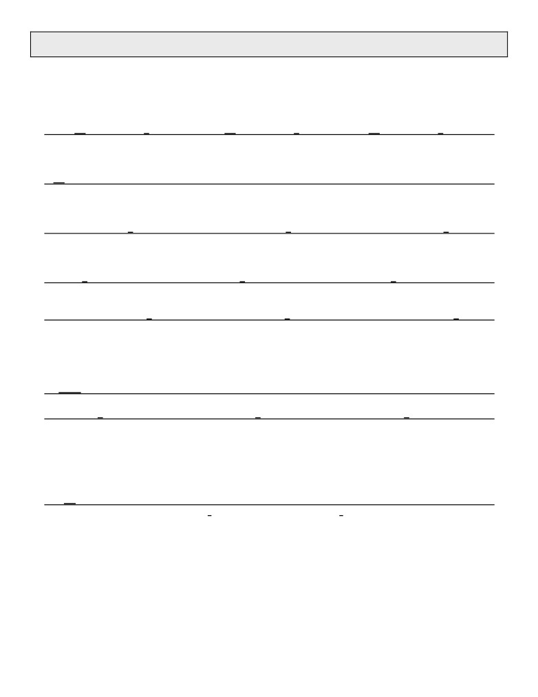
LA BONTE’S TOP 100 ENGLISH CONVERSATION PATTERNS
38
READY
START
CONTINUE...STOP
PAST
PRESENT
FUTURE
I got all ready to v.
He gets all ready to v.
They'll get all ready to v.
She got all set to v.
They get all set to v.
We'll get all set to v.
They got all prepared to v.
We get all prepared to v.
I'll get all prepared to v.
She was all ready to v.
You're all ready to v.
We'll be all ready to v.
They were all set to v.
I'm all set to v.
He'll be all set to v.
I was all prepared to v.
He's all prepared to v.
I'll be all prepared to v.
*all is optional
They were about ready to v.
We're about ready to v.
I'll be about ready to v.
He was about to v.
I'm about to v.
They'll be about to v.
She was just about to v.
He is just about to v.
You'll be just about to v.
I was on the verge of ving.
She's on the verge of ving.
He'll be on the verge of ving.
I began to v.
She begins to v.
They'll begin to v.
I began ving.
She begins ving.
They'll begin ving.
He started to v.
They start to v.
You'll start to v.
He started ving.
They start ving.
You'll start ving.
I was in the middle of ving.
She's in the middle of ving.
He'll be in the middle of ving.
They were in the midst of ving.
We're in the midst ving.
I'll be in the midst of ving.
She was in the process of ving.
I'm in the process of ving.
She'll be in the process of ving.
They kept ving.
He keeps ving.
We'll keep ving.
You kept right on ving.
I keep right on ving.
She'll keep right on ving.
I continued to v.
You continue to v.
They'll continue to v.
I continued ving.
You continue ving.
They'll continue ving.
He went on ving.
We go on ving.
He'll go on ving.
*right is optional
He ended up ving.**
She ends up ving.
I'll end up ving.
We wound up ving.**
They wind up ving.
She'll wind up ving.
She quit ving.
He quits ving. You'll quit ving.
He finished up ving.
You finish up ving.
She'll finish up ving.
They were finished up ving.
I'm finished up ving.
He'll be finished up ving.
I stopped ving.
We stop ving.
You'll stop ving.
I was through ving.
She's through ving
They'll be through ving.
He was done ving.
They're done ving.
I'll be done ving.
*up is optional
**In the past tense, IT ENDED UP THAT s and IT TURNED OUT THAT s are variations of this pattern.
It ended up that he lost all his money.
It turned out she really didn't want to go there with him.
How did it end up?
How did it turn out?
- JUST ABOUT, NEARLY and ALMOST mean the same. These are qualifiers that can be used with all the
above patterns except for KEEP and CONTINUE in the past tense.
He is just about ready to go.
She just about quit working.
He almost got set to eat.
I was almost finished explaining it.
She nearly got ready to drive him.
I was just about in the middle of going to sleep.
They were just about ready to tell him.
They were nearly about to leave.
He almost began to eat it.
She nearly ended up missing her.
Did he stop eating?
He ended up staying there.
Are you ready to begin?
She was about to tell her.
Does she keep trying?
They continued talking.
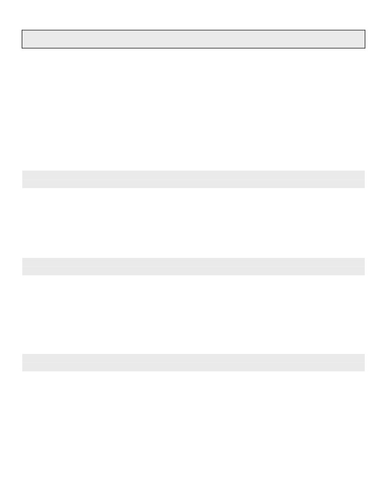
LA BONTE’S TOP 100 ENGLISH CONVERSATION PATTERNS
39
I KNOW HOW TO v.
1. Depending on the situation, here are some other verbs which can be substituted instead of KNOW:
LEARN, UNDERSTAND, EXPLAIN and TEACH.
Does he teach how to play the piano?
Yes, he teaches how to play the piano.
Did he learn how to use the computer?
No, he didn't learn how to use the computer.
Do they understand how to work it?
Yes, they understand how to work it.
Didn't she explain how to fix it?
No, she didn't explain how to fix it.
He understood how to organize it.
They explained how to get there.
I teach how to speak English.
She learned how to sew.
We taught how to plant flowers.
He doesn’t understand how to put it together.
PAST
+ Did she know how to v?
They knew how to v.
- Didn't you know how to v?
We didn't know how to v.
Did he know how to swim?
No, he didn't know how to swim.
Yes, he knew how to swim.
Didn't they know how to get back?
No, they didn't know how to get back.
What did you know how to do?
I knew how to drive a car.
What did she know how to cook well?
She knew how to cook hamburgers well.
PRESENT
+ Do they know how to v?
He knows how to v.
- Doesn't she know how to v?
They don't know how to v.
Do you know how to play chess?
Yes, I know how to play chess.
No, I don't know how to play chess.
Doesn't she know how to dance?
No, she doesn't know how to dance.
What do you know how to speak?
I know how to speak Korean.
What does he know how to plant?
He knows how to plant flowers.
What do they know how to make?
They know how to make a deck.
FUTURE
+ Will you know how to v?
He'll know how to v.
- Won't they know how to v?
We won't know how to v.
Will he know how to get there?
Yes he'll know how to get there.
No, he won't know how to get there.
Won't he know how to tell her?
No, he won't know how to tell her.
What will you know how to sing?
I'll know how to sing the school song.
What will she know how to teach?
She'll know how to teach history.
Who will know how to make it?
Carole will know how to make it.
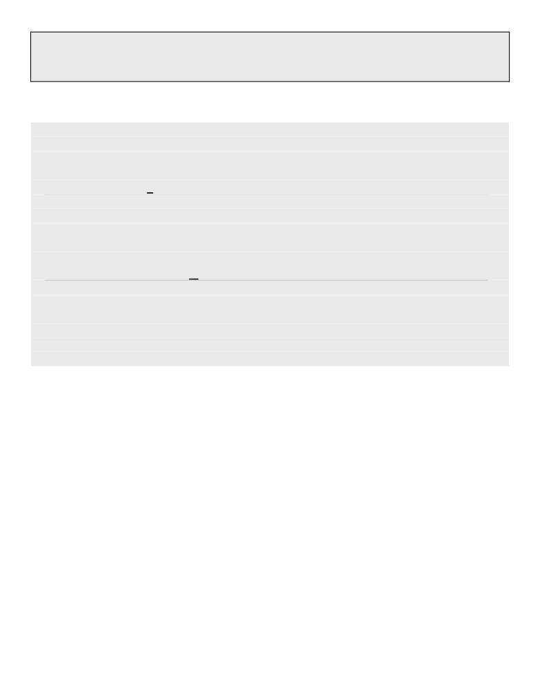
LA BONTE’S TOP 100 ENGLISH CONVERSATION PATTERNS
40
IT'S ALRIGHT TO v.
IT'S OK TO v.
LONG FORM
SHORT FORM
a. IT'S ALRIGHT TO v.
a. YOU CAN v.
IT'S OK TO v.
YOU MAY v.
IT'S ALRIGHT IF YOU v.
IT'S OK IF YOU v.
b.
IT'S ALRIGHT NOT TO v.
b. YOU DON'T HAVE TO v.
IT'S OK NOT TO v.
YOU HAVEN'T GOT TO v.
YOU DON'T NEED TO v.
IT'S ALRIGHT IF YOU DON'T v.
IT'S OK IF YOU DON'T v.
c.
IT ISN'T ALRIGHT TO v.
c. YOU SHOULDN'T v.
IT ISN'T OK TO v.
YOU BETTER NOT v.
YOU HAD BETTER NOT v.
IT ISN'T ALRIGHT IF YOU v.
IT ISN'T OK IF YOU v.
1.
All the patterns within each category of "a", "b" and "c" are the same.
It's alright to take it.
It's ok not to go.
It isn't alright to buy.
It's ok to take it.
It's alright not to go.
It isn't ok to buy.
It's alright if you take it.
It's ok if you don't go.
It isn't alright if you buy it.
It's ok if you take it.
It's alright if you don't go.
It isn't ok if you buy it.
2.
All patterns can be used in the present, past and future tense.
(present)
Is it ok to leave?
Yes, it's ok to leave.
(past)
Was it ok to talk to him?
Yes, it was ok to talk to him.
(future)
Will it be ok to eat that?
Yes, it'll be ok to eat that.
3.
If you want to insert a person's name, noun or object pronoun, this is how you insert it.
a.
It is ok FOR n/op to v.
It's ok for him to come back.
Is it alright for John to bring it?
b.
It is alright FOR n/op not to v.
It's alright for the students not to finish that.
Was it alright for us not to work?
c.
It isn't alright FOR n/op to v.
It isn't alright for them to stop there.
Isn't it ok for Tina to see that movie?
Is it alright to leave now?
Isn't it alright to tell her?
Was it okay to bring it?
Wasn't it ok to sell it?
When is it alright to come back?
Where is it okay to put it?
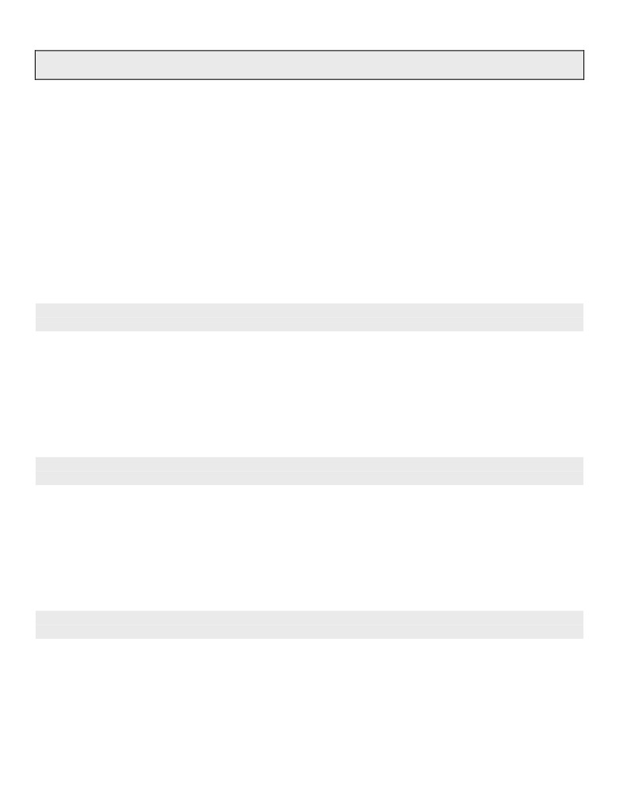
LA BONTE’S TOP 100 ENGLISH CONVERSATION PATTERNS
41
I ONLY v.
1. Other patterns with the same meaning are I JUST v and ALL I DO IS v on pages 42 and 43.
2. I DO NOTHING BUT v.
This is another variation of I ONLY v. There is no question form and isn't usually used in the future
tense. In the past tense, DO changes to DID. DOES is used in the third person singular in the present
tense. This pattern usually implies that you are dissatisfied with what the person did.
(present)
I do nothing but clean her room..
=
I only clean her room.
She does nothing but complain.
=
She only complains.
(past)
They did nothing but lay there.
=
They only laid there.
He did nothing but talk to her.
=
He only talked to her.
PAST
+ Did he only v?
They only v (past).
- Didn't you only v?
We didn't only v.
Did you only bring the donuts?
Yes, I only brought the donuts.
No, I also brought some coffee.
Didn't he only complain?
Yes, he only complained.
What did she only talk about?
She only talked about her boyfriend.
Where did they only stay?
They only stayed at my house.
Who did you only study with?
I only studied with my brother.
PRESENT
+ Does she only v?
He only v + s.
- Doesn't she only v?
They don't only v.
Does she only watch TV?
Yes, she only watches TV.
No, she also reads books.
Doesn't he only work there?
No, he doesn't only work there.
What do you only get from him?
I only get $5 from him.
What do you only drink at the bar?
I only drink beer at the bar.
When does she only want to go?
She only wants to go tomorrow.
FUTURE
+ Will you only v?
He'll only v.
- Won't she only v?
We won't only v.
Will they only pay $3?
Yes, they’ll only pay $3.
No, they'll pay more.
Will she only speak English?
Yes, she'll only speak English.
What will they only buy there?
They'll only buy fruits there.
Who will he only show it to?
He'll only show it to me.
Where will they only buy gas?
They'll only buy gas at Shell.
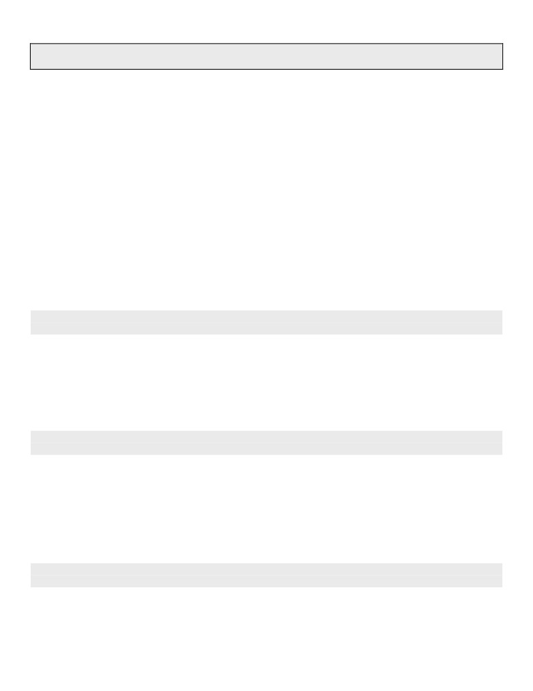
LA BONTE’S TOP 100 ENGLISH CONVERSATION PATTERNS
42
I JUST v.
1. JUST has THREE different meanings.
a. I ONLY v.
ALL I DO IS v
b. Refers to time
something that happened just a few seconds or a few minutes ago.
He just arrived.
She just called.
c. It is used when
1.. You can't think of an answer to a question.
2. You don't want to tell someone the answer.
3. There is no special reason why you do something.
Why did you meet her?
Oh, we just met.
What did he tell you?
He just told me about his family.
Why did you go there?
I don’t know, I just went.
2. I SIMPLY v is the same as I JUST v. I JUST v is used more. I SIMPLY v is used a lot
with the negative sentence.
She simply doesn't like it.
=
She just doesn't like it.
He simply didn't know anything.
=
He just didn't know anything.
PAST
+ Did she just v?
They just v (past).
- Didn't he just v?
You didn't just v.
Did he just get back?
Yes, he just got back.
No, he didn't just get back.
Didn't they just clean that?
No, they didn't just clean that.
Why did you study that?
I don't know. I just did.
What did he just do?
He just yelled at her.
PRESENT
+ Does she just v?
They just v.
- Don't you just v?
He doesn't just v.
Does she just speak English?
Yes, she just speaks English.
No, she just doesn't speak English.
Do you just shop there?
Yes, I just shop there.
What does he just practice?
He just practices the piano.
Why doesn't she eat?
I don't know. She just doesn't eat.
FUTURE
+ Will you just v?
She'll just v.
- Won't you just v?
We won't just v.
Will he just talk about her?
Yes, he'll just talk about her.
No, he won't just talk about her.
Won't she just complain?
No, she won't just complain.
Why won't she come back?
She just won't come back.
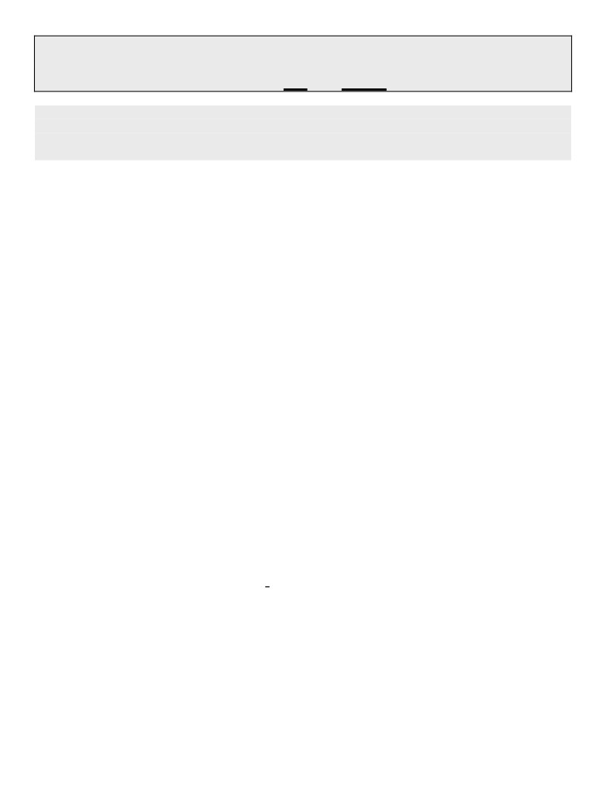
LA BONTE’S TOP 100 ENGLISH CONVERSATION PATTERNS
43
ALL I DO IS v.
ALL I v* IS n/op.
PAST
ALL I DID WAS v .
ALL I v (past) WAS n/op.
ALL I DID IS v .
ALL I v (past) IS n/op.
PRESENT
ALL I DO IS v .
ALL I v IS n/op.
FUTURE
ALL I'LL DO IS v .
ALL I'LL v IS n/op.
1. This is the same as I ONLY and I JUST.
All I do is study.
All he ate was rice.
All they'll do is play.
I only study.
He just ate rice.
They'll only play.
2. In third person singular present tense, use DOES instead of DO.
All he does is talk to him.
All she does is write letters to him.
3. PAST TENSE: You can either use WAS or IS.
All he did was dance.
=
All he did is dance.
All they made was hot dogs.
=
All they made is hot dogs.
4. ALL I v* IS n/op
*TO HAVE is a verb that seems to be used a lot here.
(present)
All he has is money.
All they have is $5.
(past)
All they had was food.
All Don had was the pencil.
5. Many other patterns are used with ALL I DO IS. Here are some examples.
AM vING**
All he is singing is that song.
All she is doing is reading a book.**
HAVE BEEN vING**
All they've been doing is watching TV all afternoon.
HAVE TO
All he has to do is study.
WANT TO
All she wanted to do is sleep.
PLAN TO
All they plan to do is see a movie.
NEED TO
All you need to do is wait there.
AM GOING TO
All she was going to do was yell at you.
SHOULD
All you should do is rest.
WILL PROBABLY
All he'll probably do is take a nap.
LIKE TO
All they like to do is go to the movies.
AM SUPPOSED TO
All we're supposed to do is buy that.
FEEL LIKE vING**
All I feel like doing is going to sleep.
KNOW HOW TO
All he knows how to do is play the piano.
WOULD LIKE TO
All I'd like to do is get the money from her.
AM THINKING OF vING**
All she was thinking of doing was taking the test
**If the pattern has "vING", the verb in the second half of the sentence has "vING".
6. In the present tense with the pattern ALL I v IS n/op, IS and ARE can be used with nouns you can count. ONLY IS
sounds good with nouns you can't count.
All he sells is food.
All they eat are apples.
=
All they eat is apples.
All they learn is math.
All we take are books.
=
All we take is books
7.
A short form of this pattern is "THAT'S ALL s." In the past tense, use either WAS or IS.
You can use THIS or IT instead of THAT.
That's all she talks about.
=
She only talks about that.
This was all I brought.
=
I only bought this.
Was it all he studied?
=
Did he only study it?
Is that all he likes?
=
Does he only like that?
That's all I know.
Is that all you want?
8. THAT can be added after ALL with no change in meaning.
All that I do is play tennis.
All that he drank was beer.
All that she does is read books.
All that we studied was English.
9. THE ONLY THING that I v IS n/op.
=
ALL I v IS n/op.
THE ONLY THING that I DO IS v..
=
ALL I DO IS v.
The only thing that she saw was that movie.
The only thing I'll do is lay on the beach.
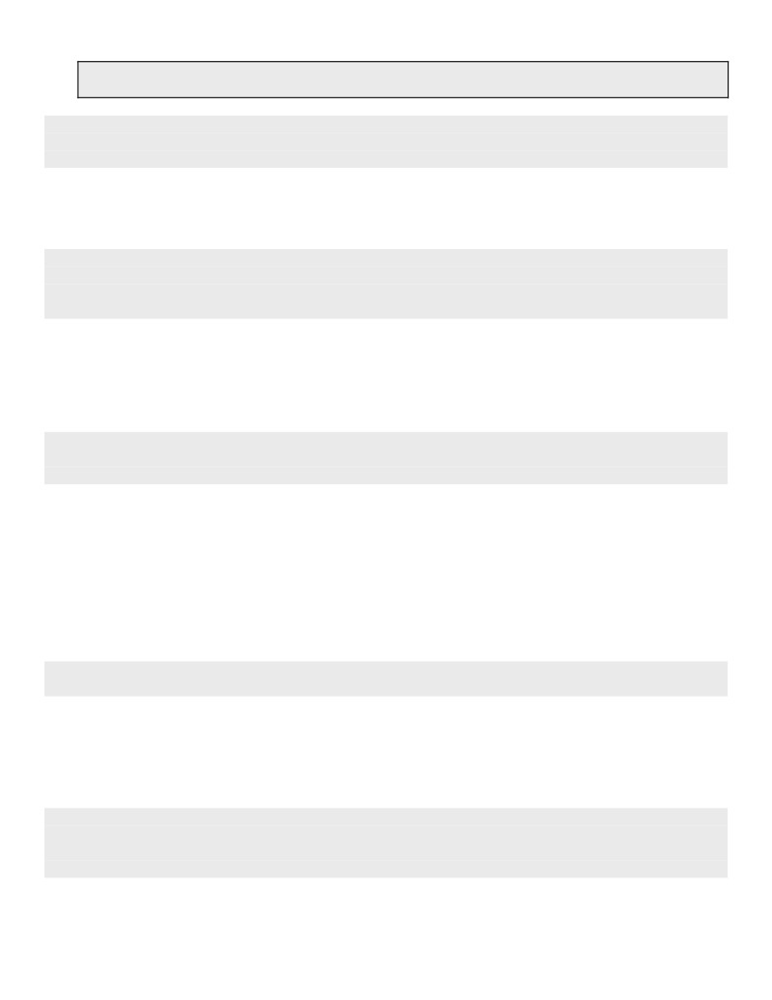
LA BONTE’S TOP 100 ENGLISH CONVERSATION PATTERNS
44
MAKE
LET
HAVE
GET
HELP
I MAKE HIM v.
Implies causing someone to do something or feel some way usually
by force or against their will. Other variations include
I FORCE HIM TO v and I FORCE HER INTO vING.
Please make him close the window.
Did she make John study?
Yes, she made John study.
What did he make you do?
He made me do the dishes.
Who did you make her call?
I made her call Mary.
I LET HIM v.
Implies allowing or permitting someone to do something. Other
variations are I ALLOW HIM TO v and I PERMIT HIM TO v .
LET ME v is a polite way of indirectly asking someone's permission to
do something.
Please let me help with that.
Let me call you back later.
Let me do that for you.
Please let me take that with me.
Would you please let him go?
Could you please let me buy it?
Did you let the teacher go in?
Yes, I let the teacher go in.
Does he let you eat there?
No, he doesn't let me eat there.
Where did you let him go?
I let him go to the mall.
I HAVE HIM v.
Implies causing someone to do something by asking them to do it
I GET HIM TO v.
as a favor.
I ASK HIM TO v.
Please have him open the door.
Please get her to stop fighting.
Have her call the police later.
Could you please ask him to get it?
Did you ask her to help you?
Yes, I asked her to help me.
Did she have him bring it to her?
Yes, she had him bring it to her.
Did you get them to give it back?
No, I didn't get them to give it back.
Where did you have him wait?
I had him wait in front of the store.
When did you get him to exercise?
I got him to exercise yesterday.
Who did he ask you to contact?
He asked me to contact Larry.
I HELP HIM v.
Implies that you aid or assist someone to do something.
I HELP HIM TO v. I HELP HIM WITH vING is another variation of this pattern.
Please help him find the dog.
Help him to wash the car.
I helped him with counting the money.
Did you help him to understand it?
Yes, I helped him to understand it.
Does he help her cook?
No, he doesn't help her cook.
What did they help them do?
They helped them move.
Where did you help them to clean?
I helped them to clean the office.
I PREVENT HER FROM vING.
These patterns are very similar to the feelings of
I KEEP HER FROM vING.
I DON'T LET HER v , but these are stronger.
I STOP HER FROM vING
I PROHIBIT HER FROM vING.
She kept me from taking the money.
They prevented him from spending the money.
He stopped me from yelling at her.
He prohibited me from taking that car.
LA BONTE’S TOP 100 ENGLISH CONVERSATION PATTERNS
45
I AM ABLE TO v.
PAST
+
Were you able to v?
I was able to v.
-
Wasn't he able to v?
They weren't able to v.
PRESENT
+
Is she able to v?
You are able to v.
-
Aren't you able to v?
They aren't able to v.
FUTURE
+
Will you be able to v?
He'll be able to v.
-
Won't she be able to v?
They won't be able to v.
1.
I AM ABLE TO v is the same as I CAN v.
I CAN v, however, is always definite and has no future tense. I AM ABLE TO v has many
different variations found below and it can be used with other patterns.
2.
I AM ABLE TO v is used to convey the POSSIBILITY of something happening. Below you find
some variations of this pattern along with an approximate percentage (%) that something will
POSSIBLY happen.
% POSSIBILITY
PATTERN*
100% possibility
I'm able to go.
I'll be able to go.
I'm going to be able to go.
90% possibility
I'll probably be able to go.
80% possibility
I should be able to go.
50% possibility
I may be able to go.
I might be able to go.
30% possibility
I may not be able to go.
I might not be able to go.
10% possibility
I won't probably be able to go.
0% possibility
I'm not going to be able to go.
I'm not able to go.
I won't be able to go.
*MIGHT and MAY are not used in a question.
3. In the negative tense, UNABLE is the same as NOT ABLE.
(past)
I was unable to study.
=
I wasn't able to study.
(present)
She's unable to take it.
=
She isn't able to take it.
(future)
Will they be unable to use it?
=
Won't they be able to use it?
4. Similar patterns are:
a. I MANAGED TO v.
(Usually only used in the past tense.)
Did you manage to buy it?
Yes, I managed to buy it.
Did he manage to contact her?
No, he didn't manage to contact her
b. I AM CAPABLE OF vING.
not
= I AM INCAPABLE OF vING.
I'M NOT CAPABLE OF vING.
c. I HAVE THE ABILITY TO v.
Are you capable of doing that?
Yes, I'm capable of doing that.
Do you have the ability to make it?
Yes, I have the ability to make it.
Was he capable of learning it?
No, he wasn't capable of learning it.
No, he was incapable of learning it.
Is he incapable of reading it?
Yes, he's incapable of reading it.
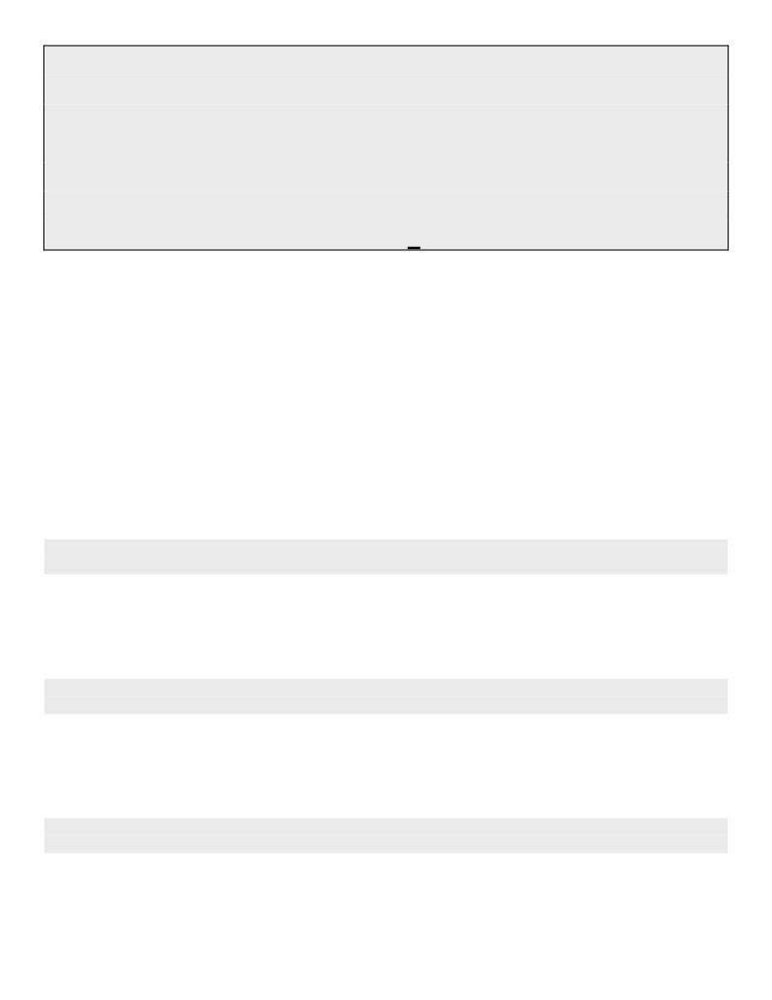
LA BONTE’S TOP 100 ENGLISH CONVERSATION PATTERNS
46
I HAVE THE OPPORTUNITY TO v.
GET AN
OF v ING.
I HAVE THE CHANCE TO v.
GET A
OF vING.
I GET TO v.
1. HAVE and GET are interchangeable. THE, AN or A are interchangeable.
I had the chance to go there.
=
I got a chance to go there.
He had the opportunity to swim there.
=
He got an opportunity to swim there.
2. With CHANCE and OPPORTUNITY, you can use either "TO v" or "OF vING".
I had the chance to use it.
=
I had the chance of using it.
She got the opportunity to see it.
=
She got the opportunity of seeing it.
3. a. Instead of I HAVE, you can also use I HAVE GOT or THERE IS.
Have you got a chance to see him?
Is there an opportunity to buy it then?
She's got the chance to get that job.
There was a chance to get a ride with him.
b. Instead of I DON'T HAVE, you can also use I HAVEN'T GOT, I HAVE NO* and THERE ISN'T.
*no question form
I haven't got any chance to read it.
Hasn't she got an opportunity to help him?
I had no opportunity to pick it up.
Haven't you got a chance to win?
There isn't any chance of learning that.
Wasn't there an opportunity to take it out?
4. I HAVE THE/AN OCCASION TO v is another variation of I HAVE THE CHANCE TO v.
Did you have the occasion to speak with him? Will she have an occasion to write to you?
Didn't you have the occasion to see that?
They had the occasion to play soccer there.
PAST
+ Did you get to v?
He had the chance to v.
- Didn't she get the chance to v?
You didn't get the opportunity to v.
Did she get to meet her?
Yes, she got to meet her.
No, she didn't get to meet her.
Didn't they have a chance to talk?
No, they didn't have a chance to talk.
What did he get an opportunity to eat?
He got an opportunity to eat a hamburger.
Who did you get to dance with?
I got to dance with Sally.
PRESENT
+ Does she get to v?
He gets to v.
- Don't you have the chance to v?
They don't get the opportunity of ving.
Does he have the chance to study?
Yes, he has the chance to study.
No, he doesn't have the chance to study.
Do you get to watch TV a lot?
Yes, I get to watch TV a lot.
What do you get to eat the most?
I get to eat hot dogs the most.
Who did you get a chance to see?
I got a chance to see Gandhi.
FUTURE
+ Will he have the chance to v?
I'll have the opportunity of ving.
- Won't you get to v?
They won't get a chance of ving.
Won't he get to stay there?
No, he won't get to stay there.
Yes, he'll get to stay there.
Will he have a chance to play tennis?
Yes, he'll have a chance to play tennis.
What will I get an opportunity to do?
You'll get an opportunity to ski.
When will she get to take that class?
She'll get to take that class next year.
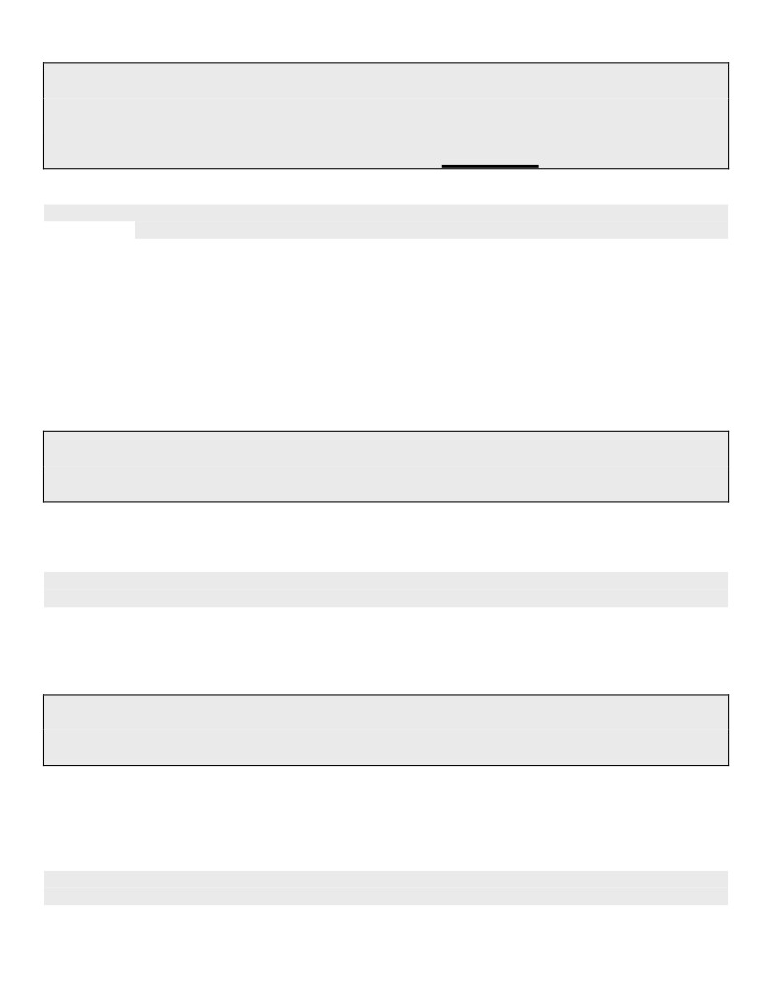
LA BONTE’S TOP 100 ENGLISH CONVERSATION PATTERNS
47
I ALMOST v (past).
I NEARLY v (past).
I JUST ABOUT v (past).
PAST
+
Did you almost v?
She just about v (past).
-
Didn't you nearly v?
They didn't almost v.
Did she almost come back?
Yes, she almost came back.
No, she didn't almost come back.
Did they just about finish it?
Yes, they just about finished it.
What did you nearly do?
I nearly bought that car.
Who did he almost meet?
He almost met his old friend.
- Other less used variations of this pattern are:
I PRACTICALLY v (past).
I CAME CLOSE TO vING.
Did she practically lose all of it?
Yes, she practically lost all of it.
Did they come close to meeting her?
Yes, they came close to meeting her.
I MAY v.
I MIGHT v.
You will study the past tense form on page 126 with YOU MUST. There is no question form.
PRESENT
+
-----
I may v.
-
-----
I might not v.
She may come later.
They might not like that.
He might come by today.
She may not pay you back.
I might tell her later.
We might not take her.
I MAY AS WELL v.
I MIGHT AS WELL v.
1. This pattern is used only in the present tense. There is no question form.
2. The negative tense:
I MAY AS WELL NOT v.
I MIGHT AS WELL NOT v.
3. This pattern conveys the feeling that you really don't want to do something or you really don't
have to do something, but it would be good if you did it anyway.
PRESENT
+
-----
I may as well v.
-
-----
I might as well not v.
He may as well come now.
I might as well not invite her.
She may as well leave at 10.
They might as well throw it away.
LA BONTE’S TOP 100 ENGLISH CONVERSATION PATTERNS
48
We may as well take it back now. You might as well not let her know.
I TEND TO v.
1. Other variations of this pattern are:
I HAVE THE TENDENCY TO v.
I AM APT TO v
I AM INCLINED TO v.
PAST
+
Did he tend to v?
I tended to v.
-
Didn't they tend to v?
She tended to v.
Did they tend to read too much?
Yes, they tended to read too much.
Didn't they tend to talk a lot?
No, they didn't tend to talk a lot.
What did she tend to do?
She tended to tell lies a lot.
PRESENT
+
Does she tend to v?
He tends to v.
-
Don't you tend to v?
They tend to v.
Do you tend to be sick a lot?
Yes, I tend to be sick a lot.
Doesn't she tend to be angry?
Yes, she tends to be angry.
FUTURE
+
Will you tend to v?
He'll tend to v.
-
Won't she tend to v?
I won't tend to v.
Will they tend to cheat?
No, they won't tend to cheat.
Won't she tend to sing too much?
Yes, she'll tend to sing too much.
I PRETEND TO v.
PAST*
+
Did he pretend to v?
She pretended to v.
-*
Did you pretend not to v?
We pretended not to v.
Did she pretend to sleep?
No, she didn't pretend to sleep.
Did you pretend not to study that?
Yes, I pretended not to study that.
What did he pretend to do?
He pretended to work.
PRESENT*
+
Does she pretend to v?
I pretend to v.
-*
Do you pretend not to v?
He doesn't pretend to v.
Does she pretend to know everything?
Yes, she pretends to know everything.
Do they pretend to be rich?
No, they don't pretend to be rich.
FUTURE*
+
Will you pretend to v?
They'll pretend to v.
-*
Will he pretend not to v?
She'll pretend not to v.
Will he pretend to own that car?
Yes, he'll pretend to own that car.
Will you pretend not to know more?
Yes, I'll pretend not to know more.
* In most cases, the negative form is I PRETEND NOT TO v instead of I DON'T PRETENDTO v.
It is a little strange since in most other patterns DON'T comes in front.
- Here are some other variations. That is optional.
I PRETEND that s.
I PRETEND AS IF s.
I PRETEND LIKE s.
I PRETEND AS THOUGH s.
He pretended like he didn't like her.
She pretended as if she didn't understand.
Did he pretend he didn't know?
Didn't you pretend like you hated it?
They pretended as if they were rich.
I'll pretend that I already studied it.
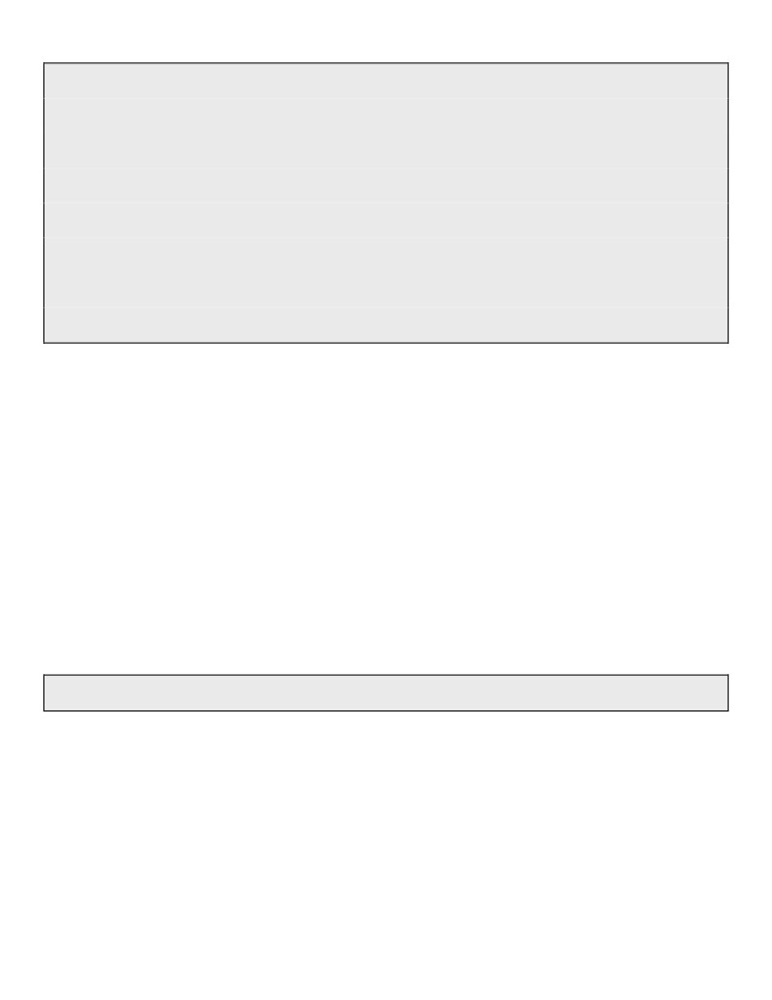
LA BONTE’S TOP 100 ENGLISH CONVERSATION PATTERNS
49
I CAN'T HELP BUT v.
I CAN'T HELP vING.
THERE IS NOTHING I CAN DO BUT v.
THERE ISN'T ANYTHING I CAN DO BUT v.
I CAN'T DO ANYTHING BUT v.
I HAVE NO CHOICE BUT TO v.
I HAVE LITTLE CHOICE BUT TO v.
I CAN'T AVOID vING.
1. You can use NOTHING ELSE instead of NOTHING.
There is nothing else I can do but meet her.
You can use ANYTHING ELSE instead of ANYTHING.
There isn't anything else I can do about it.
You can use EXPECT (a & c only) instead of BUT. BUT is used more.
There was nothing I could do except wait.
2. This is often used without a verb:
I can't help it.
There is nothing I can do about it.
There isn't anything I can do about it.
I can't do anything about it.
*about it is optional.
There was nothing I could do but talk to her.
I couldn't help eating it.
There wasn't anything I could do but give him the money.
I couldn't help meeting her.
She had no choice but to give it back.
I DO v.
I DID v.
1. This pattern is used in two situations:
a. To give EMPHASIS
He really does like that book.
She did study a lot.
They do love each other a lot.
He does take beautiful pictures.
b. To clear up confusion or misinformation. It usually follows a negative sentence.
He said you didn't go there.
I did go there.
They didn't arrive early.
They did arrive early.
You didn't understand it.
I did understand it.
She doesn't like him.
She does like him.
c. In the past tense, the verb following DID does not take the past tense.
I did study.
I did studied.
(wrong)
She did meet him.
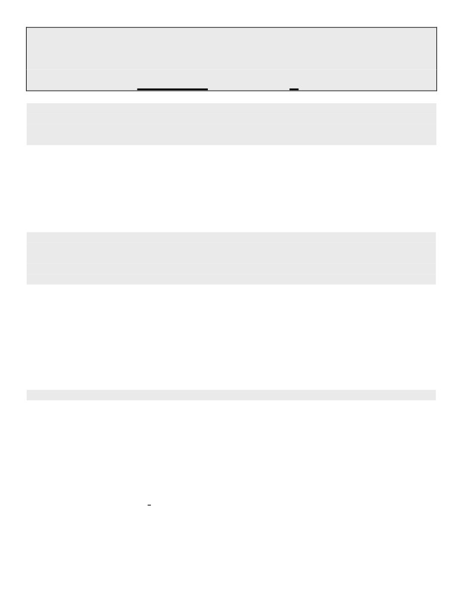
LA BONTE’S TOP 100 ENGLISH CONVERSATION PATTERNS
50
I WOULD RATHER v.
I WOULD PREFER TO v.
I WOULD PREFER vING.
PAST
+ Would you rather have v PP?
I would rather have v PP.
Would you prefer to have v PP?
I would prefer to have v PP.
- Wouldn't you rather have v PP?
He wouldn't rather have v PP.
Wouldn't you prefer to have v PP?
She wouldn't have preferred ving.
Would you rather have gone yesterday?
Yes, I would rather have gone yesterday.
Would you have preferred to talk to him?
Yes, I would have preferred to talk to him.
Wouldn't you have preferred sleeping?
No, I wouldn't have preferred sleeping.
What would you rather have done?
I would rather have rested all day.
When would you prefer to have left?
I would prefer to have left yesterday.
*Sometimes HAVE comes before RATHER or PREFER. There is no change in meaning.
I would have rather danced with him.
She would have preferred to buy that other coat.
PRESENT
+ Would you rather v?
I would rather v.
Would you prefer ving?
I'd prefer to v.
**Does he prefer to v?
**She prefers to v.
-
Wouldn't you rather v?
*They would rather not v.
**Don't you prefer to v?
*She would prefer not to v.
*In the negative sentence, NOT is usually found after RATHER or PREFER.
**In the present tense, WOULD is optional in front of PREFER.
Do you prefer talking to her?
Yes, I prefer talking to her.
No, I don't prefer talking to her.
Does she prefer to meet today?
Yes, she prefers to meet today.
Would you prefer using this?
No, I would prefer not using that.
Would he rather leave now?
Yes, he'd rather leave now.
Wouldn't you prefer selling it now?
No, I wouldn't prefer selling it now.
Wouldn't you rather play later?
No, I would rather not play later.
Where would you prefer to practice?
I would prefer to practice at school.
When would you rather talk about it?
I'd rather talk about it this evening.
FUTURE
-------------
1. The short forms of I WOULD etc. are used a lot.
I would
=
I'd
We would
=
We'd
You would
=
You'd
You would
=
You'd
He would
=
He'd
They would
=
They'd
2. If there are two subjects in the sentence, a sentence follows YOU'D RATHER or YOU'D PREFER. In the
second part of the pattern, WOULD is commonly found.
I'D RATHER that s.
I'd rather that he didn't do that.
*I'd rather he not do that.
She'd rather that we meet her later at the office.
I'D PREFER that s.
She'd prefer that I would come back at another time.
*He'd prefer that they not bring the kids with them.
They prefer that we wouldn't call late at night.
*You can use combinations of DON'T, WOULDN'T or NOT.
3. WOULD is optional with I WOULD PREFER TO v and I WOULD PREFER vING in the present tense.
I would prefer to leave now.
=
I prefer to leave now.
Would you prefer taking it?
=
Do you prefer taking it?
LA BONTE’S TOP 100 ENGLISH CONVERSATION PATTERNS
51
I HOPE TO v.
I EXPECT TO v.
I LOOK FORWARD TO vING.
1. I HOPE TO
expresses positive feelings or anticipation.
I EXPECT TO
expresses little feeling or anticipation
I LOOK FORWARD TO….. . expresses very positive feelings or anticipation.
2. I HOPE n/sp v.
This pattern is used a lot in conversation when you hope someone else does something. It is usually
used in the present tense.
I hope John comes tonight.
She hopes I come back later.
I hope she goes with him.
We hope the students come to visit again.
3. I EXPECT n/op TO v.
I LOOK FORWARD TO n/op vING.
If you need to specify another person, use these variations.
She expects me to pick up the kids.
They look forward to her coming to visit.
I look forward to Dennis showing that.
He expects us to take the books.
Did you look forward to the women seeing it?
PAST
+ Did you hope to v?
I expected to v.
- Didn't you look forward to ving?
I didn't hope to v.
Did he hope to meet you there?
Yes, he hoped to meet me there.
Didn't he expect to see her?
No, he didn't expect to see her.
Did he look forward to skiing?
Yes, he looked forward to skiing.
What did you hope to do there?
I hoped to finish my homework there.
Where did she expect to play tennis?
She expected to play tennis in the morning.
PRESENT
+ Do you expect to v?
I hope to v.
- Doesn't he hope to v?
He looks forward to ving.
Does he look forward to discussing it?
Yes, he looks forward to discussing it.
Don't you hope to travel there?
No, I don't hope to travel there.
Do you expect to swim in the lake?
No, I don't expect to swim in the lake.
What do you hope to bring?
I hope to bring food and dessert.
When do you look forward to resting?
I look forward to resting this evening.
FUTURE
----------------
*this is not used a lot in the future tense.
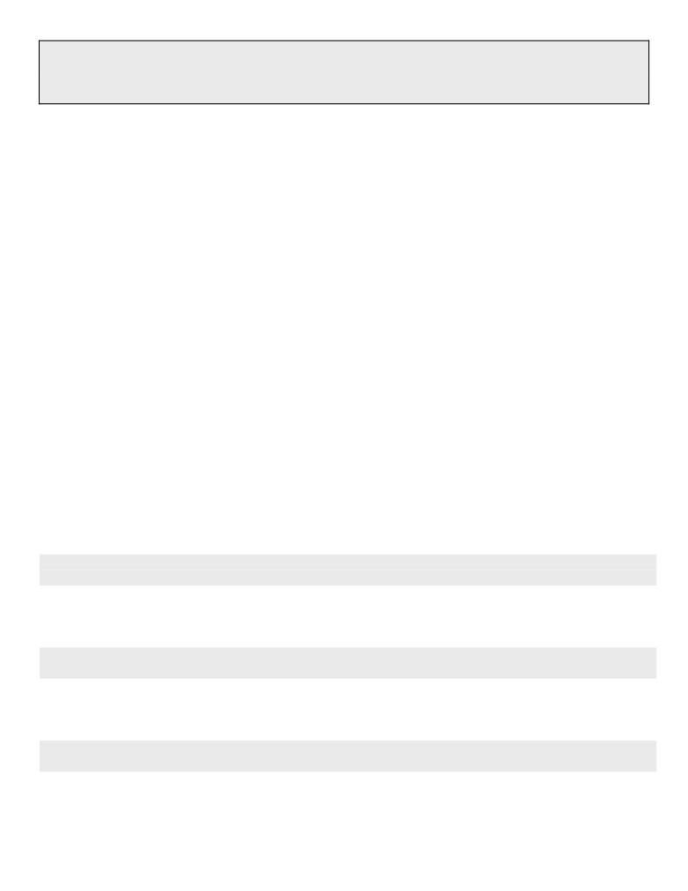
LA BONTE’S TOP 100 ENGLISH CONVERSATION PATTERNS
52
I DECIDE TO v.
I MAKE UP MY MIND TO v.
1. I MAKE UP MY MIND TO v. "s" is added to MIND with the plural WE, YOU and THEY.
Depending on the subject, MY will change to another modifying pronoun.
We made up our minds to call her.
Will they make up their minds to bring it?
2. a. I DECIDE NOT TO v. In the negative tense, NOT is usually placed after DECIDE or MIND.
She decided not to take it.
He made up his mind not to contact her.
They'll decide not to bring that.
We'll make up our minds not to invite them.
b. I DECIDE AGAINST vING is the same as I DECIDE NOT TO v.
He decided against telling her.
He decided not to tell her.
Will they decide against taking it?
She decided not to mention it.
She decided against driving there alone.
Did they decide not to contact her?
3. a. I DECIDE can be used with a sentence. THAT is optional. It is usually used in the past tense.
WOULD is often used in the sentence if it refers to things you will do in the future.
I decided that I wanted to fly there.
She made up her mind it wasn't worth buying.
He decided he would try to get up early.
b. If you don't know if a decision has been made, IF or WHETHER can be added.
Did he decide if you can go?
Did they decide whether they want to buy it?
4. I DECIDE can also be used with WHAT, WHERE, WHY, WHEN, WHO, and HOW.
She decided what she was going to bring.
He made up his mind when he'll be taking his vacation.
They decided who they would rather give it to.
Did you decide how you were going to pay for the gift?
5. Other ways of saying I DECIDE TO v are: I DECIDE ON vING.
I MAKE A DECISION TO v.
She decided on bringing me to the movies.
Did they make a decision to buy it right away?
What did you decide on doing?
PAST
+ Did you decide to v?
She decided to v.
- Did he make up his mind not to v?
They made up their minds not to v.
Have you decided to come back?
Yes, I've decided to come back.
Did she make up her mind to change it?
Yes, she made up her mind to change it.
What did they make up their mind to do?
They made up their mind to contact him.
When did they decide not to get it?
They decided not to get it yesterday.
PRESENT
+ Does he decide to v?
You make up your mind to v.
- Do you decide not to v?
She makes up her mind not to v.
Does she decide not to try it?
Yes, she decides not to try it.
Do you make up your mind to stay there?
Yes, I make up my mind to stay there.
Who do you decide to play with?
I decide to play with her.
Where does she decide to clean?
She decides to clean her room.
FUTURE
+ Will you decide to v?
I'll make up my mind to v.
- Will she decide not to v?
He'll make up his mind not to v.
Will she decide to use it?
No, she'll decide not to use it.
Will he make up his mind not to send it?
No, he'll make up his mind not to send it.
When will you decide to give it back?
I'll decide to give it back tonight.
Where will they make up their mind to live?
They'll make up their mind to live there.
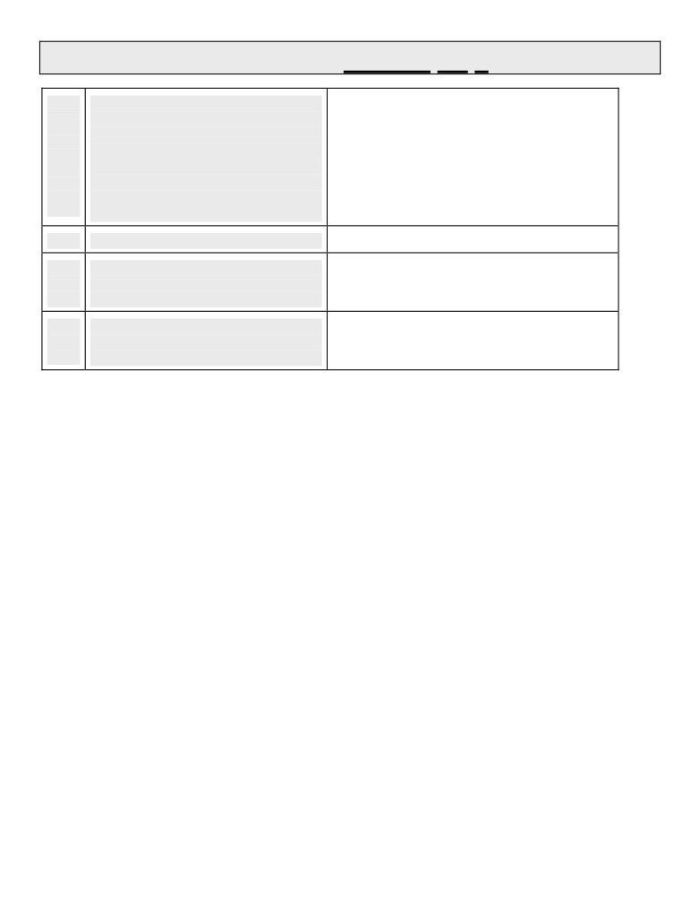
LA BONTE’S TOP 100 ENGLISH CONVERSATION PATTERNS
53
THERE IS NO POINT IN vING
There is no point in ving.
There is no point lying about it.
There is no sense in ving.
There was no sense in taking it.
There is no use in ving.
There was no returning it.
There isn’t any point in ving.
There isn’t any point in studying that.
+S
There isn’t any sense in ving.
There isn’t any sense getting up early.
There isn’t any use in ving.
There isn’t any use bringing that.
It’s pointless to v.
It’s pointless to stay there.
It’s pointless in ving.
It’s pointless explaining that to her.
-S
------
------
Is there any point in ving?
Was there any point in yelling at him?
+Q
Is there any sense in ving?
Is there any sense in reading it now?
Is there any use in ving?
Is there any use buying that for him?
Isn’t there any point in ving?
Isn’t there any point in telling him?
-Q
Isn’t there any sense in ving?
Wasn’t there any sense going back there?
Isn’t there any use in ving?
Isn’t there any use keeping it?
* IN is optional.
1.
If you use a noun or an object pronoun, you have to use IN n/op/vING.
There was no sense in them coming.
Is there any use in me helping?
There isn't any use in the teacher going.
Isn't there any use in Gerry seeing it?
2.
NOT can be added before "ving" to make a double negative.
There is no sense in not giving it to him.
There isn't any point in not taking that.
There was no use in not calling her.
There wasn't any sense in not fixing it.
3.
Here are some general questions related to this pattern:
WHAT SENSE DOES IT MAKE TO v? = WHAT IS THE POINT IN/OF vING?
WHAT GOOD IS IT TO v?
SENSE
USE
What sense does it make to leave now?
What good is it to talk like that?
What was the point of not telling him?
=
What was the point in not telling him?
What was the use of worrying like that?
=
What's the use in worrying like that?
What's the sense in keeping that secret?
=
What's the sense of keeping that secret?
4.
Variations of THERE IS NO SENSE IN vING are: IT DOESN'T MAKE ANY SENSE TO v.
IT MAKES NO SENSE TO v.
- S
It doesn't make any sense to teach them that now.
It makes no sense to just sit there. (no question form)
-Q
Doesn't it make any sense to send it right away?
Isn't there any sense in doing that?
No, there isn't any sense in doing that.
Is there any point in telling her now?
No, there is no point in telling her now.
It makes no sense to bring the children with us.
It made no sense to get up so early.
5.
Variations of THERE ISN'T ANY USE IN vING are:
IT'S USELESS TO v.
It'll be useless to practice this late.
IT'S USELESS vING.
It's useless trying to explain it to him.
IT'S NO USE vING.
It was no use sending that to them.
6.
Other variations include:
I SEE NO POINT IN vING.
I see no point in yelling at him now.
SENSE
I see no sense in memorizing that.
USE
She sees no use in writing that.
I DON'T SEE ANY SENSE IN vING.
I didn't see any use showing that to her.
USE
Don't you see any sense in giving him that.
POINT
He doesn't see any point driving there.
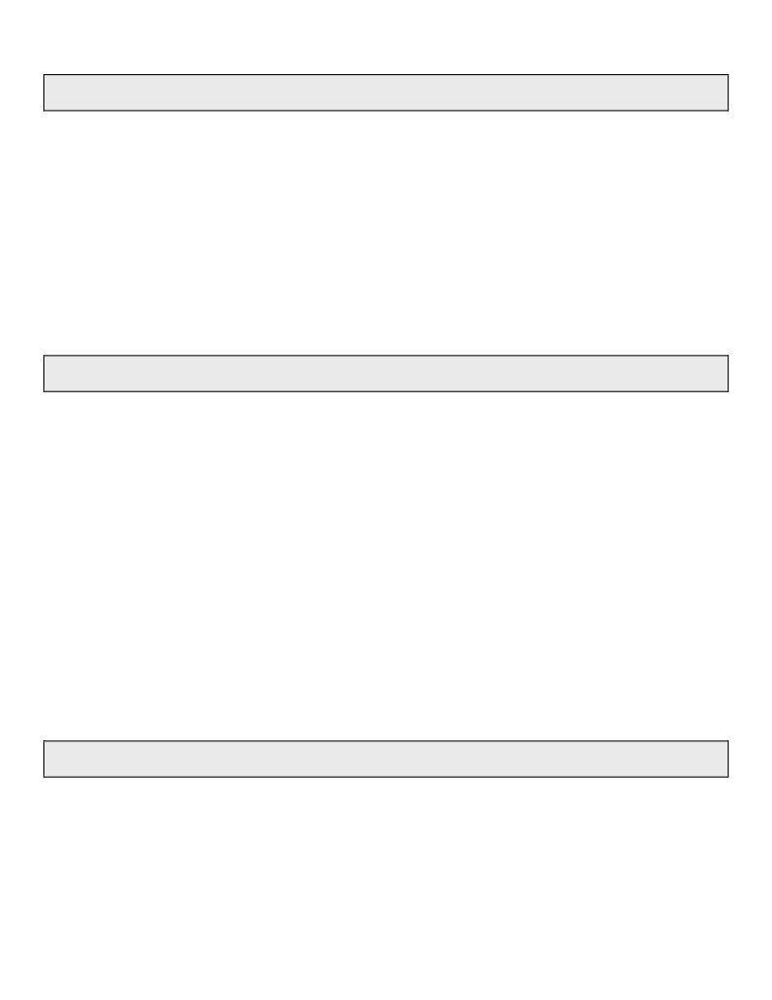
LA BONTE’S TOP 100 ENGLISH CONVERSATION PATTERNS
54
1 + 1
You can use many patterns together. The more you hear these patterns used together, the more
comfortable you will feel using them. Some patterns sound good when they are used together and some
don't.
He has to try to bring it.
She was going to want to buy that.
I feel like going to eat there.
They have got to let him go.
I can't make him leave now.
I used to be able to play football.
She plans to continue building it.
You'll probably need to take it to her.
I helped her get to meet him.
She likes to pretend to know everything.
He's supposed to get him to call.
You can go to see him tonight.
I'd like to try and eat that.
You should be thinking of going there.
PATTERN + BE a
1. Instead of adding a verb to a pattern, you can add "BE a".
She can be friendly.
He likes to be different.
I'd like to be rich.
She might be famous.
It is supposed to be shallow.
That needs to be dry.
It is alright to be worried about that.
She's going to be really angry.
She used to be poor.
You need to be understanding.
It has to be important.
She'll probably be shy.
I can't help being mad.
They pretended to be surprised.
He is being stubborn.
I'd rather be safe.
It's ok to be nervous about that.
They tend to be lazy.
2. With I LIKE TO and I WOULD LIKE TO, you can add BE, or drop TO and add BEING a.
I like to be careful.
=
I like being careful.
She doesn't like to be frightened.
=
She doesn't like being frightened.
They would like to be famous.
=
They would like being famous.
He wouldn't like to be old.
=
He wouldn't like being old.
vING
= noun
A verb becomes a noun by adding "ING”. Drop "E" at the end of a verb when you add "ING."
Studying is difficult.
Was skiing expensive?
He taught writing.
They like working.
Typing is easy.
Teaching will be fun.
He reads coaching books.
Speaking English can be easy.
He talked about exercising.
Cooking was the best.
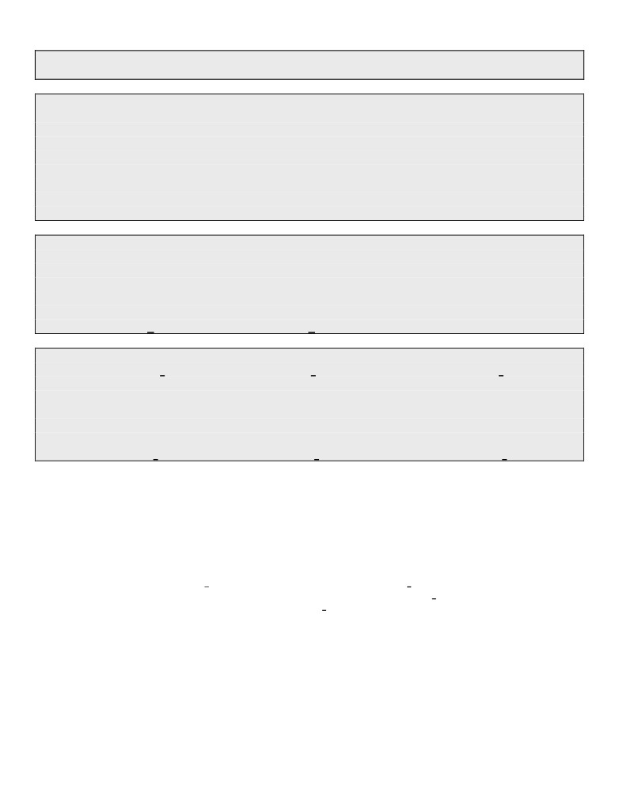
LA BONTE’S TOP 100 ENGLISH CONVERSATION PATTERNS
55
FEEL...TASTE...SMELL...SOUND...LOOK
A
D
It looks a.
Does it look a?
How does it look?
J
tastes
taste
taste
E
sounds
sound
sound
C
smells
smell
smell
T
feels
feel
feel
I
V
I feel a.
Do you feel a?
How do you feel?
E
It looks like n.
Does it look like n?
What does it look like?
N
tastes
taste
taste
O
sounds
sound
sound
U
smells
smell
smell
N
feels
feel
feel
I feel like n.
Do you feel like n?
What do you feel like?
S
E
It looks like s.
Does it look like s?
What does it look like s?
N
tastes
taste
taste
T
sounds
sound
sound
E
smells
smell
smell
N
feels
feel
feel
C
E
*I feel like s.
*Do you feel like s?
What do you feel like s?
ADJECTIVE
SENTENCE
NOUN
She looks beautiful.
She looks like she's angry.
It looks like leather.
That smells delicious.
It smells like it is done.
It smells like coffee.
The coffee smells great.
It tastes like you put sugar in it.
That tastes like an apple.
The music sounds loud.
It sounds like it's raining.
It sounds like thunder.
The floor feels dirty.
It feels like the floor is wet.
It feels like oil.
I feel tired.
I feel like he is lying to me.
I feel like a hypocrite.
1. *Other variations of I FEEL LIKE s are:
I HAVE A/THE FEELING THAT s
I HAVE GOT A/THE FEELING THAT s
I FEEL THAT s.
Do you have a feeling he's coming?
I had a feeling that she wasn't going to like it.
I've got the feeling that he'll be late.
She had the feeling you didn't like him.
Do you feel it's too expensive?
She felt she was treated badly.
Have you got the feeling he's fed up?
He's got the feeling that she isn't returning.
2. Instead of LIKE, you will sometimes hear either AS IF or AS THOUGH before a sentence.
It feels as if it's going to rain.
Does it look as if she's disappointed?
It looks as though he really doesn't like it.
Did it sound as if they're were going to come?
It sounds as though he was really mad at her.
Didn't it look as though they liked each other?
3. I FEEL a ABOUT vING.
= I FEEL a vING. This is used a lot when you add a verb to a feeling.
She feels sad about leaving.
Don't you feel great about going there?
He felt happy not being with her.
Doesn't she feel angry about losing it?
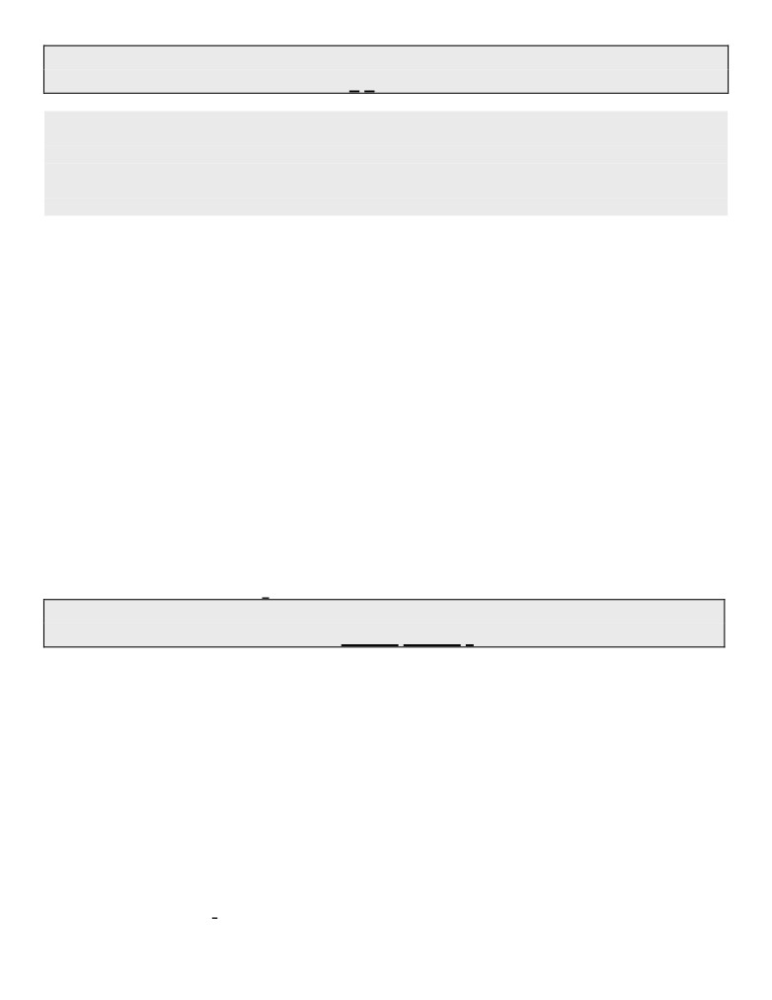
LA BONTE’S TOP 100 ENGLISH CONVERSATION PATTERNS
56
IT IS a TO v.
IT IS a vING.
PAST
+
Was it a to v?
It was a to v.
-
Wasn't it a to v?
It wasn't a to v.
PRESENT
+
Is it a to v?
It's a to v.
-
Isn't it a to v?
It isn't a to v.
FUTURE
+
Will it be a to v?
It'll be a to v.
-
Won't it be a to v?
It won't be a to v.
1. Two patterns which are similar to the above pattern that are used for EMPHASIS are:
*IT IS SO a TO v!
It is so interesting to speak with him!
*IT IS SO a vING!
It was so difficult working there!
*Do not use in a question. THAT and THIS are often used instead of IT.
2.
Here are some common adjectives used with this pattern.
easy / difficult
It was easy to learn that.
It is too difficult to make.
good / best / better
It's good to remember that.
It was best to leave early.
hard / tough
Will it be hard to remember?
It was so tough to change.
interesting / fun
It was interesting to see.
It is so fun to talk to him.
nice
It's nice to live there.
It was so nice shopping there.
expensive
Is it cheap to take the bus?
Was it too expensive to buy?
cheap
It'll be cheap to take the bus.
Was that too cheap to use?
3. IT IS a vING usually sounds best when an object/place/person follows the verb.
It was good meeting her.
It was safe staying there.
It was nice talking to you.
That's fun reading that.
4. You can add a noun or object pronoun for clarification by adding FOR n/op before TO.
It is good for her to work there. It was easy for John to change it.
That was hard for me to understand.
This is easy for them to use.
5. Other variations of IT IS HARD TO v and IT IS DIFFICULT TO v are:
I HAVE A HARD TIME vING.
I had a hard time understanding that.
I HAVE A DIFFICULT TIME vING.
We had a difficult time contacting her.
I HAVE DIFFICULTY vING.
Did you have difficulty finding it?
I HAVE TROUBLE vING.
She has trouble explaining it to her.
I HAVE A PROBLEM vING.
He had a problem putting it together.
I AM feeling TO v.
I AM feeling THAT s.
1. THAT is optional.
2. Here are some common feelings used:
happy
I was happy I went.
Were they happy to leave?
sad
She is sad he had to go.
Was she sad to sell it?
glad
He's glad they didn't go.
Was he glad to meet her?
delighted
I was delighted he came.
Was he delighted to see you?
anxious
Was she anxious he was coming?
They were anxious to get started.
smart
Was he smart he saved the money?
He was smart to get rid of it.
stupid
She was stupid that she told him.
Is it stupid to buy that?
afraid
I'm afraid she's going to ask for it.
I'm afraid to tell her.
scared
Was she scared he might read it?
I was scared to show him.
sorry
They were sorry I was sick.
He was sorry to give it back.
angry
He was angry that she didn't call.
----
mad
I was mad he took the money.
----
nervous
I was nervous she might not like it.
She's nervous about meeting him.
*this uses ABOUT vING, not TO v.
3.
I AM SO feeling that s. is used for emphasis.
She is so nervous, she can't even study.
They are so happy that they are coming back again.
I was so scared, I couldn't see it again.
We were so exhausted, we went right to sleep.
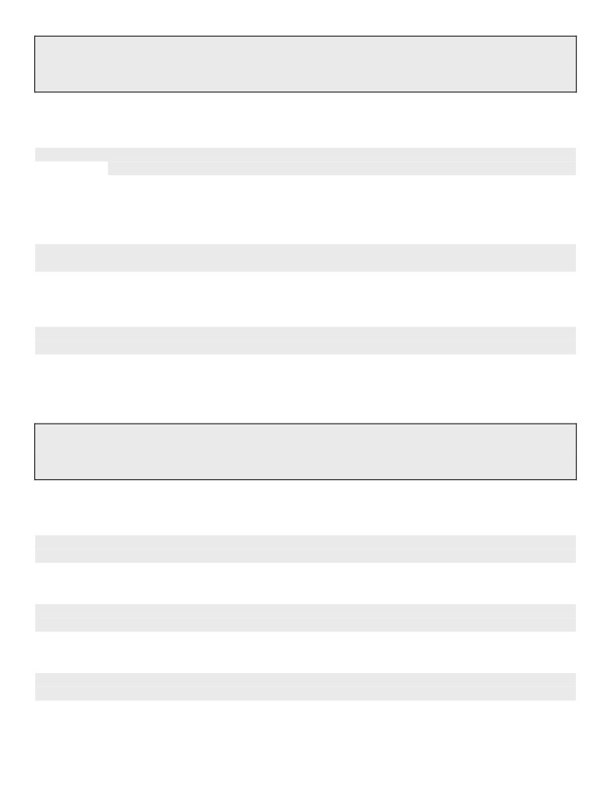
LA BONTE’S TOP 100 ENGLISH CONVERSATION PATTERNS
57
I GET a.
I BECOME a.
1. MORE is often used before the adjective.
She got angrier.
(more angry)
It’ll get colder.
(more cold)
PAST
+ Did you become a?
She got a.
- Didn't she get a?
You didn't become a.
Did she get angry?
No, she didn't get angry.
Didn't he become mad?
Yes, he became mad.
When did it get cold?
It got cold last night.
PRESENT
+ Does she get a?
He becomes a.
- Don't you become a?
She doesn't get a.
Does she get nervous?
Yes, she gets nervous.
Don't you become tired?
No, I don't become tired.
FUTURE
+ Will she get a?
He won't become a.
- Won't they become a?
You won't get a.
Won't she get worried?
No, she won't get worried.
Will you become discouraged?
Yes, I'll become discouraged.
I MAKE HIM a.
I GET HIM a.
MORE is often used with the adjective.
It made him madder.
(more mad)
She made me more jealous.
PAST
+ Did he make you a?
She got them a.
- Didn't she get you a?
You didn't make me a.
Did you make him angry?
Yes, I made him angry.
Did he get you mad?
No, he didn't get me mad.
PRESENT
+ Do you get her a?
He makes me a.
- Doesn't she make you a?
They get me a.
Does it get cold at night?
No, it doesn't get cold at night.
Do you make her nervous?
Yes, I make her nervous.
FUTURE
+ Will he make you a?
She'll get him a.
- Won't they get her a? You won't make her a.
Will she make you happy?
No, she won't make me happy.
Will he become rich soon?
Yes, he'll become rich soon.
* I MAKE HIM a is used much more than I GET HIM a.
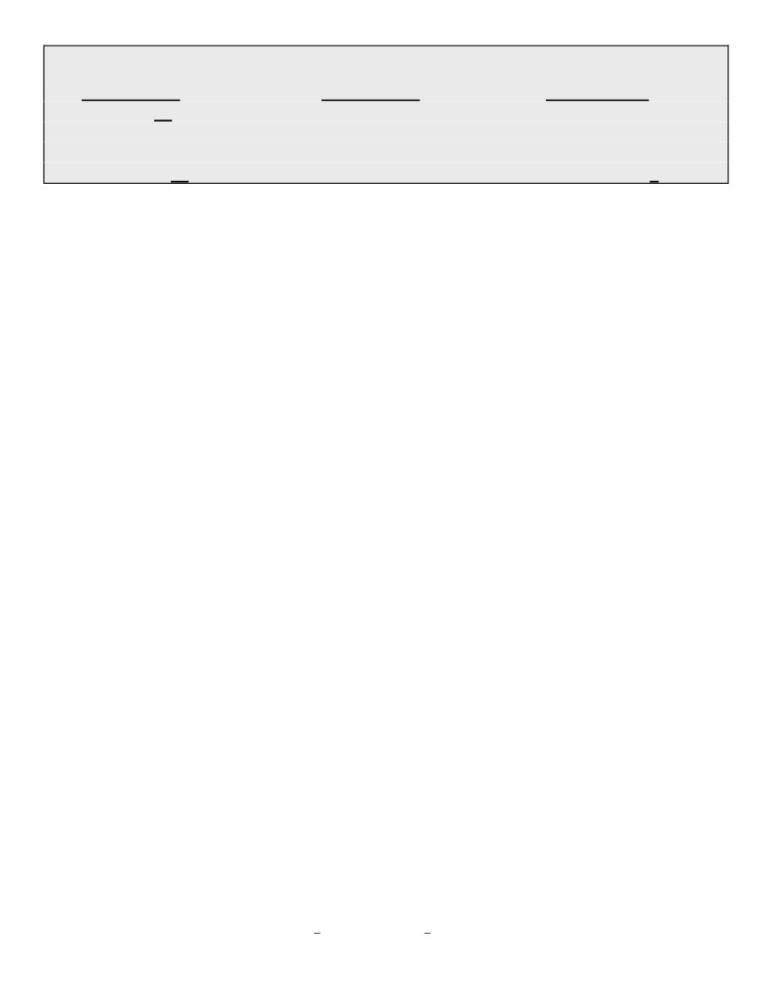
LA BONTE’S TOP 100 ENGLISH CONVERSATION PATTERNS
58
COMPARISONS
+
=
-
MORE a
AS a AS n/op
LESS a
MUCH MORE a*
MUCH LESS a
= A LOT MORE a*
= A LOT LESS a
THE MOST a*
THE LEAST a
1. a. a* With some adjectives, there are some irregular forms when you use them with MORE, MUCH MORE,
A LOT MORE and THE MOST. You can find those common irregular adjective forms in the table on
pages 59 and 60. The same adjective form is used with MORE, MUCH MORE and A LOT MORE.
regular form: difficult
irregular form:
cheap
more difficult
cheaper
much more difficult
much cheaper
a lot more difficult
a lot cheaper
the most difficult
the cheapest
b. However, with LESS, MUCH LESS and THE LEAST, you use the adjective only. There are NO irregular
forms. In conversation, you may hear many people use the irregular forms like these used with MORE,
MUCH MORE, A LOT MORE and THE MOST even though it is grammatically incorrect.
regular form: tired
irregular form:
cheap
less tired
less cheap
much less tired
much less cheap
a lot less tired
a lot less cheap
the least tired
the least cheap
2. A LOT is the same as MUCH.
She is much prettier.
=
She is a lot prettier.
3. You always have to use THE with MOST and LEAST.
She is the most beautiful.
He is the least happy.
She is most beautiful.
(wrong)
He is least happy.
(wrong)
4. THE MOST is an adverb when it follows a verb. THE MOST is different when it is used with an adjective.
He ate the most.
She studied the most.
5. You will find a list of the most commonly used adjectives below in the table. There are three different
possibilities with MORE, MUCH MORE, A LOT MORE and THE MOST with an adjective.
a. REGULAR FORMS*: You simply add MORE, MUCH MORE, A LOT MORE or THE MOST
before the adjective. You will find blank spaces in the 2 right hand columns with these.
*Usually adjectives with more 3 or more syllables.
different
more different
much more different
the most different
a lot more different
wonderful
more wonderful
much more wonderful
the most wonderful
a lot more wonderful
b. IRREGULAR FORMS**: Some adjectives have a shorter form when added to MORE, MUCH
MORE, A LOT MORE and THE MOST. All these shorter forms using "ER" at the end of the
adjective are written in the table. Use the same form with MORE, MUCH MORE and A LOT MORE.
**Usually adjectives with 1 or 2 syllables use "ER" at the end of the adjective.
late
later
much later
the latest
a lot later
poor
poorer
much poorer
the poorest
a lot poorer
c. You can't use forms of MORE or LESS with some adjectives. In those cases, you will find "------”
in the two right hand columns next to the adjective in the following table.
a little
-----
-----
-----
6. With comparisons, you will often hear THAN n/op added after variations of MORE and LESS.
THAN n/op is not used with THE MOST a and THE LEAST a.
LA BONTE’S TOP 100 ENGLISH CONVERSATION PATTERNS
59
more a than n/op
He is older than him.
much more a than n/op
It was much more expensive than that.
a lot more a than n/op
She was a lot healthier than my mother.
the most
------
less a than n/op
They were less thirsty than me.
much less a than n/op
He is much less tall than Mr. Kim.
a lot less a than n/op
It was a lot less expensive than that.
the least
-------
Was he much happier than her?
Yes, he was much happier than her.
Is it much less difficult than this?
Yes, it is much less difficult than this.
Was she more beautiful than Tina?
No, she wasn't more beautiful than Tina.
Were you slower than John?
Yes, I was slower than John.
Are you much lazier than him?
Yes, I am much lazier than him.
Was she a lot busier than him?
No, she wasn't a lot busier than him.
7. AS a and AS n/op
a. This pattern means that two objects are very similar. If you use this in a negative sentence, it is
obviously not similar. As opposed to MORE THAN and LESS THAN, this indicates more similarity.
You have to add a noun or object pronoun after the second AS.
She is as quiet as her.
This bike isn't as expensive as that one.
Was John as mad as him?
I wasn't as tall as my classmates.
Isn't that girl as smart as you?
The policeman wasn't as fast as that student.
b. THE SAME AS n/op
If the objects/persons are THE SAME, use this pattern instead of AS a AS. Note that AS is not used
in front of THE SAME AS..
That is the same as this.
It is as the same as this. (wrong)
This car is the same as that one.
Is this computer the same as that?
c. Some common variations you will hear are:
AS WELL AS n/op
She speaks as well as him.
AS MUCH AS n/op
He ate as much as her.
AS HARD AS n/op
They work as hard as him.
8. IT IS DIFFERENT THAN n/op is the same as IT IS DIFFERENT FROM n/op. You have to use either
THAN or FROM before a noun or object pronoun.
Is this different from that?
How is it different than this book?
Is she a lot different than her sister?
Was that movie different from The Exorcist?
ADJECTIVE
MORE
THE MOST
ADJECTIVE
MORE
THE MOST
a little
-----
-----
comfortable
a lot
-----
-----
complicated
afraid
convenient
alright
-----
-----
considerate
angry
angrier
the angriest
cool
cooler
the coolest
anxious
crazy
crazier
the craziest
ashamed
crowded
attractive
curious
awkward
cute
cuter
the cutest
bad
worse
the worst
dangerous
beautiful
deep
deeper
the deepest
big
bigger
the biggest
delicious
bitter
delighted
bored
dependable
boring
different
busy
busier
the busiest
difficult
careful
diligent
cheap
cheaper
the cheapest
dirty
dirtier
the dirtiest
clean
cleaner
the cleanest
disappointed
close
closer
the closest
discouraged
cold
colder
the coldest
LA BONTE’S TOP 100 ENGLISH CONVERSATION PATTERNS
60
ADJECTIVE
MORE
THE MOST
ADJECTIVE
MORE
THE MOST
dishonest
new
newer
the newest
dissatisfied
nice
nicer
the nicest
dry
drier
the driest
noisy
noisier
the noisiest
early
earlier
the earliest
not enough
-----
-----
easy
easier
the easiest
okay
-----
-----
embarrassed
old
older
the oldest
enough
-----
-----
polite
excited
poor
poorer
the poorest
exhausted
popular
expensive
pretty
prettier
the prettiest
famous
quick
quicker
the quickest
fantastic
quiet
quieter
the quietest
far
farther
the farthest
refreshing
fast
faster
the fastest
rich
richer
the richest
fat
fatter
the fattest
right
-----
-----
fine
finer
the finest
sad
sadder
the saddest
free
freer
the freest
safe
safer
the safest
friendly
friendlier
the friendliest
satisfied
frightened
scared
frightening
scary
scarier
the scariest
full
fuller
the fullest
shallow
shallower
the shallowest
funny
funnier
the funniest
short
shorter
the shortest
glad
-----
-----
shy
shyer
the shiest
good looking
sick
sicker
the sickest
good
better
the best
sincere
gorgeous
sleepy
sleepier
the sleepiest
great
greater
the greatest
slow
slower
the slowest
handsome
handsomer
the handsomest
small
smaller
the smallest
happy
happier
the happiest
smart
smarter
the smartest
hard
harder
the hardest
soft
softer
the softest
hard working
sorry
sorrier
the sorriest
healthy
healthier
the healthiest
strange
stranger
the strangest
heavy
heavier
the heaviest
stubborn
high
higher
the highest
stupid
stupider
the stupidest
honest
surprised
hot
hotter
the hottest
sweet
sweeter
the sweetest
huge
huger
the hugest
tall
taller
the tallest
hungry
hungrier
the hungriest
hurt
tasty
tastier
the tastiest
ill
the same
-----
-----
impolite
thin
thinner
the thinnest
important
thirsty
thirstier
the thirstiest
insincere
tired
interesting
ugly
uglier
the ugliest
jealous
unbelievable
kind
kinder
the kindest
uncomfortable
late
later
the latest
warm
warmer
the warmest
lazy
lazier
the laziest
weak
weaker
the weakest
little
littler
the littlest
wet
wetter
the wettest
lively
livelier
the liveliest
wide
wider
the widest
lonely
lonelier
the loneliest
worried
long
longer
the longest
wonderful
mad
madder
the maddest
wrong
-----
-----
messy
messier
the messiest
young
younger
the youngest
narrow
narrower
the narrowest
near
nearer
the nearest
nervous
LA BONTE’S TOP 100 ENGLISH CONVERSATION PATTERNS
61
I AM MORE a THAN op/n/s*.
I v MORE THAN op/n/s*.
1. Instead of MORE, you can use MUCH MORE or A LOT MORE to give emphasis.
To give less emphasis, use A LITTLE MORE or A LITTLE BIT MORE.
She is much more beautiful than her.
He is a little smaller than you.
I'm a little bit taller than him.
2. IT IS BETTER THAN n/op
Since "to be good" is used a lot with this pattern, you will here a lot of combinations with this.
It's better than that.
Wasn't it better than you thought?
That was better than that movie.
Isn't that book better than this one?
It was better than New York.
Is that a lot better than my car?
It is a little better than this computer.
Was it a little bit more expensive than this?
ADJECTIVE
She is thinner than you.
He isn't faster than his father.
She is more nervous than me.
*When you add a sentence, the adjective is not usually repeated after TO BE.
He's smarter than I am.
=
He's smarter than me.
They're richer than he is.
=
They're richer than him.
You're bigger than she is.
=
You're bigger than her.
VERB
She laughed more than him.
He didn't smoke more than him.
I didn't wait more than them.
*When there is an object to the verb in the sentence, the object usually comes after MORE.
He drank more beer than her.
She knew more English than me.
I washed more clothes than her.
** Note how the sentence is shortened at the end of this pattern. The verb at the end of the
sentence is usually not repeated. You can use DO, DID or WILL instead of repeating
the verb again. The tense remains the same on both sides of the pattern.
She called more friends than I called.
She called more friends than I did.
He writes more letters than I write.
He writes more letters than I do.
They'll take more money than I'll take.
They'll take more money than I will.
a. I'M NOT ANY MORE a THAN n/op/s.
b. I'M NOT MUCH MORE a THAN n/op/s.
I DON'T v ANY MORE THAN n/op/s.
I DON'T v MUCH MORE THAN n/op/s.
These variations of MORE THAN are always in a negative sentence or question.
1. ANY implies that the two things being compared are about the same.
It isn't any bigger than this one.
(It is about the same size.)
She didn't study any more than me.
(We studied about the same time.)
2. MUCH implies the first thing is little better, smaller etc. in a sentence. In a question, it implies "a lot ".
He wasn't much taller than her.
(He is a little taller.)
Didn't they eat much more than you?
(They ate much more than you.)
LA BONTE’S TOP 100 ENGLISH CONVERSATION PATTERNS
62
I AM AS a AS op/n/s*
I v AS MUCH AS op/n/s*.
ADJECTIVE
She is as pretty as her.
That was as delicious as her pie.
It was as hot as yesterday.
Was she as angry as you?
Weren't you as young as her?
* Note how the sentence is shortened at the end of this pattern.
The adjective at the end of the sentence is usually not repeated.
They are as pretty as they are.
(PRETTY is dropped)
She is as mad as I am.
That is as expensive as this watch is.
VERB
I ate as much as her.
They read as much as me.
She taught as much as that teacher.
* The object of the sentence is placed between MUCH and AS.
Did he drink as much beer as you?
He bought as much food as them.
She remembered as much English as him.
** Note how the sentence is shortened at the end of this pattern. The verb at the end of
sentence is usually not repeated. If the noun after MUCH is something which you can
count, it changes to MANY. You can use DO, DID or WILL instead of repeating the
verb again.
(past)
He ate as many donuts as I ate.
He ate as many donuts as I did.
(present)
She gives as many gifts as I give.
She gives as many gifts as I do.
(future)
They'll play the piano as much as I'll play.
They'll play the piano as much as I will.
***Instead of MUCH, you can use HARD, LONG, WELL etc.
He plays baseball as well as I do.
She slept as long as I did.
They worked as hard as I did.
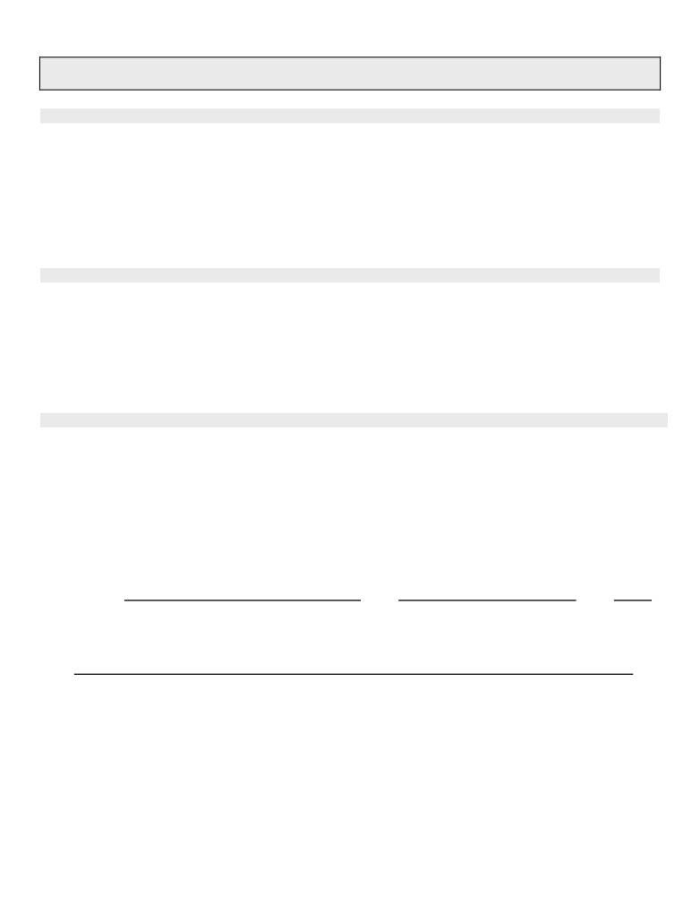
LA BONTE’S TOP 100 ENGLISH CONVERSATION PATTERNS
63
PRONOUNS
SUBJECT PRONOUN *
OBJECT PRONOUN*
I
I like to study.
ME
He told me.
YOU
You plan to go.
YOU
They hit you.
HE
He needs to leave.
HIM
She likes him.
SHE
She has to come back.
HER
I helped her.
IT
It is delicious.
IT
I bought it.
THAT
That was ridiculous.
THAT
He read that.
THIS
This is great.
THIS
They study this.
WE
We can make it.
US
She took us.
YOU
You should write the letter.
YOU
He knew you.
THEY
They feel like sleeping.
THEM I called them.
MODIFYING PRONOUN
REFLEXIVE PRONOUN
MY
He sold my house.
MYSELF
I gave it myself.
YOUR
She loves your car.
YOURSELF
You fed yourself.
HIS
I saw his mother.
HIMSELF
He hates himself.
HER
They took her books.
HERSELF
She sings to herself.
THAT
He made that cake.
OURSELVES
We did it ourselves.
THIS
She lives in this house.
YOURSELVES
You hit yourselves.
OUR
They left our school.
THEMSELVES
They forgave themselves.
YOUR
I pushed your bike.
THEIRShe cooked their food.
POSSESSIVE PRONOUN*
MINE
She took mine.
OURS
She drank ours.
YOURS
Yours is there.
OURS
Ours is the best.
HIS
I bought his.
THEIRS
Theirs was expensive.
HERS
They wore hers.
* With the 1st and 3rd person plural subject pronoun
and object pronoun, you can add a number after the pronoun.
We three ate dinner there.
He took us four to the movies.
You two should come here.
She invited you five.
**To make a noun into a possessive pronoun, add "'s" to the noun or person's name.
I took Mr. Lee's computer.
She took John's books.
PRONOUN
SINGULAR
PLURAL
Subject
I
you
he
she
we
you
they
Object
me
you
him
her
us
you
them
Modifying
my
your
his
her
our
your
their
Possessive
mine
yours
his
hers
ours
yours
theirs
Reflexive
myself
yourself
himself
herself
ourselves yourselves themselves
Sometimes you want to specify more than one person. In the examples below, instead of BOTH, you can put any number.
If you choose to use the variations below containing OF, there are a few rules. ALL can go in front of a number with no
change in meaning. The opposite of BOTH OF is NEITHER OF. The opposite of ALL OF is NONE OF.
THE is not used in front of a pronoun.
She ate three of her apples.
THE has to be used when a noun follows.
Four of the girls left early.
THE is optional is front of a number.
Two of them ate.
= The two of them ate.
THE is always used if you want to be specific.
The three of his cars were damaged.
She met three of the teachers.
All six of the chairs are here.
Two of them came last night.
He stole six of her CD's.
She met three of them there.
Two of the glasses broke last night.
Both of my keys are missing.
They found ten of their magazines.
She found three of their books.
He yelled at the ten of us.
The three of us met this morning.
All three of them took that bus.
LA BONTE’S TOP 100 ENGLISH CONVERSATION PATTERNS
64
Five of their magazines are missing.
She ate both of the donuts.
He met eight of the foreign students.
Neither of the parents were away.
She lost five of our pens.
The six bottles of beer weren't cold.
Two of the bicycles are expensive.
He read three of the letters to his children.
ALL / ALL OF
BOTH
/
BOTH OF / THE BOTH OF
SUBJECT PRONOUN
1st person singular
---
---
2nd person singular
---
---
3rd person singular
---
---
1st person plural
We all went together.
We both like it.
All of us read it.
Both of us came together.
2nd person plural
You all can't go with me.
You both learned that.
All of you need that.
Both of you ate it.
3rd person plural
They all bought candy there.
They both slept there.
All of them loved it.
The both of them didn't understand.
OBJECT PRONOUN
1st person singular
---
---
2nd person singular
---
---
3rd person singular
---
---
1st person plural
He met us all.
She hit us both.
She wrote all of us.
He heard the both of us.
2nd person plural
She talked to you all.
He call you both.
I helped all of you.
They taught both of you.
3rd person plural
She ate them all.
She loves them both.
I met all of them.
He contacted both of them.
MODIFYING PRONOUN
1st person singular
All my money is gone.
Both my dogs are sick.
She read all of my mail.
Both of
my cars are fixed.
2nd person singular
All your house is ruined.
---
He washed all of your shirt.
---
3rd person singular
All of his car is dirty.
---
They lost all her change.
---
1st person plural
All of our eggs are there.
She likes both our children.
He bought all our pictures.
Both of our dogs are gone.
2nd person plural
Can you bring all your books?
Both your telephones are broken.
All of your shoes are here.
He got both of your letters.
3rd person plural
I met all their friends.
Both their friends are rich.
All of their kids are in school.
Both of their homes are in Florida.
POSSESSIVE PRONOUN
1st person singular
All of mine is yours.
He took the both of mine.
He took all mine.`
Both of mine have scratches.
2nd person singular
---
---
3rd person singular
All of his was sold.
Both of his were taken.
They loved all hers.
The both of hers are expensive.
1st person plural
All ours is very expensive.
The both of us lost money.
He understood all of ours.
Both of us met her.
2nd person plural
All of yours are broken.
He cleaned the both of yours.
He drank all yours.
Both of yours were lost.
3rd person plural
All theirs are high.
She sold the both of theirs.
I chose all of theirs.
She left both of theirs there.
REFLEXIVE PRONOUN
-----
----
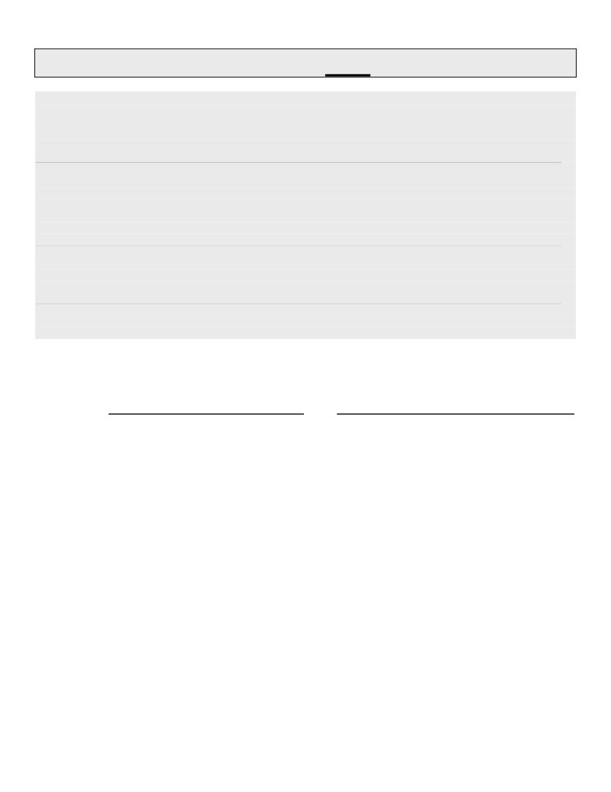
LA BONTE’S TOP 100 ENGLISH CONVERSATION PATTERNS
65
I HAVE n/op.
PAST
PRESENT
FUTURE
I HAD n/op.
I HAVE n/op.
I WILL HAVE n/op.
---
I HAVE GOT n/op.
---
+S
---
*I GOT n/op.
---
THERE WAS n.
THERE IS n.
THERE WILL BE n.
I DIDN'T HAVE n/op.
I DON'T HAVE n/op.
I WON'T HAVE n/op.
I HAD NO n.
I HAVE NO n. **
I WILL HAVE NO n.
-S
---
I HAVEN'T GOT n/op.***
---
---
I HAVE GOT NO n.**
---
THERE WAS NO n.
THERE IS NO n.
THERE WILL BE NO n.
THERE WASN'T ANY n.
THERE ISN'T ANY n.
THERE WON'T BE ANY n.
DID YOU HAVE n/op?
DO YOU HAVE n/op?
WILL YOU HAVE n/op?
+Q
----
HAVE YOU GOT n/op?
---
---
*DO YOU GOT n/op?
---
WAS THERE ANY n?
IS THERE ANY n?
WILL THERE BE ANY n?
DIDN'T YOU HAVE n/op?
DON'T YOU HAVE n/op?
WON'T YOU HAVE n/op?
-Q
---
HAVEN'T YOU GOT n/op?***
---
WASN'T THERE ANY n?
ISN'T THERE ANY n?
WON'T THERE BE ANY n?
* I GOT is a short form of I HAVE GOT. I GOT is not proper English, but you will hear people use it.
**This has no question form.
***The short form HAVEN'T GOT is used much more than HAVE NOT GOT.
In the third person singular, use HASN'T GOT. (eg. He hasn't got a car.)
1. Here are the short forms of HAVE:
POSITIVE
NEGATIVE
Singular
I have
=
I've
I do not have
=
I don't have
You have
=
You've
You do not have
=
You don't have
He has
=
He's
He does not have
=
He doesn't have
She has
=
She's
She does not have
=
She doesn't have
Plural
We have
=
We've
We do not have
=
We don't have
You have
=
You've
You do not have
=
You don't have
They have
=
They've
They do not have
=
They don't have
a.
The POSITIVE short forms are used a lot with I HAVE GOT. The short forms are not used with I HAVE.
I have got money.
=
I've got money
(It sounds okay.)
I have money.
I've money.
(wrong
It sounds strange.)
b.
In the NEGATIVE sentence, do not use the short forms with I HAVE and I HAVE GOT.
I have not got a pencil.
= I haven't got a pencil.
I do not have a pencil.
= I don't have a pencil.
I have got no pencil.
= I've got no pencil.
I have no pencil.
I've no pencil.
(wrong...It sounds strange.)
2. With I HAVE and I HAVE GOT, use THE or A (AN before a word beginning with a vowel) with singular
nouns only. With I HAVE NO or I HAVE GOT NO, THE and A are not used. THE is more specific than
A or AN. With the verb HAVE, do not use A and THE with plural nouns.
I have a pen
I have no pen.
She had an apple.
They've got no car.
She hasn't got the book. We had no computer.
With an object pronoun, do not use THE or A.
She has it.
They've got her.
3. THERE IS is usually used instead of I HAVE when referring to a place, and it is always used in the third person.
There was money in the drawer.
Is there money on the floor?
There were no apples in the basket.
Were there books on the desk?
LA BONTE’S TOP 100 ENGLISH CONVERSATION PATTERNS
66
4. ANY and SOME can be used after HAVE, HAVE GOT and IS with no change of meaning especially with plural
nouns. SOME isn't used in a negative sentence and ANY is not used in a positive sentence.
I don't have any money.
She didn't have any medicine.
=
She didn't have medicine.
There is some rice.
He has got some shoes.
=
He has got shoes.
SOME plural noun
ANY plural noun
SOME OF THE plural/singular nouns
ANY OF THE plural/singular nouns
1. You can use SOME OF THE and ANY OF THE with a plural or singular noun. OF THE is added
to SOME or ANY if you are being specific.
plural
I ate some of the food.
She didn't take any of the movies.
singular
They took some of the book.
We didn't eat any of the banana.
2. There are some general rules when SOME and ANY are used:
a. SOME sounds bad in a negative sentence when it is the object of the sentence.
b. ANY sounds bad in a positive sentence and as the subject of a negative sentence.
c. Both SOME and ANY sound good in either positive or negative questions.
These same general rules are the same when you deal with variations of ANY and SOME which
are found in later chapters. eg. Anyone, Someone
SOME
ANY
SOME OF THE
ANY OF THE
+S
I took some money.
----
She ate some of the food.
----
-S
----*
**She doesn't have any books.
----*
**They don't like any of the cars.
+Q
Did you bring some apples?
Does she know any Spanish?
Do they clean some of the rooms?
Did she bring any of the beer?
-Q
Don't you own some CD's?
Didn't she visit any friends?
Didn't they send some of the letters?
Doesn't he eat any of the dessert?
*When SOME and SOME OF THE are used as the subject of the negative sentence, it sounds okay.
Some of the people didn't go.
Some of the money isn't here.
Some men don't leave today.
Some doctors can't come.
**ANY and ANY OF THE can't be used as the subject of the sentence in a negative sentence.
Any books didn't come in the mail.
(wrong
sounds bad)
3.
SOME singular noun also can indicate that you don't know completely about a particular noun.
Some doctor came in the room.
(I don't know what type of doctor he/she is.)
He showed them some picture.
(I don't know what the picture was.)
SOME plural noun
SOME can also mean A FEW or A LITTLE.
Some men came into the room.
=
A few men came in the room.
I took some food when I left.
=
I took a little food when I left.
4. SOME OF THE n can also mean SOME PART OF n, A PART OF n or PART OF n.
She got some of the newspaper.
=
She got a part of the newspaper.
They ate some of the pie.
=
They ate part of the pie.
Did you buy some of the candy?
=
Did you buy part of the candy?
ANY OF THE n can also mean ANY PART OF n, A PART OF n or PART OF n..
Didn't she see any of the movie?
=
Didn't she see any part of the movie?
Don't you get any of the money?
=
Don't you get a part of the money?
LA BONTE’S TOP 100 ENGLISH CONVERSATION PATTERNS
67
HOW IS n/sp?
WHAT IS n/sp LIKE?
HOW DO YOU LIKE n/op?
1. Please note that the subject pronoun (sp) is used with HOW IS n/sp? and WHAT IS n/sp LIKE?
The object pronoun (op) is used with HOW DO YOU LIKE n/op?
a.
subject pronoun
How is she?
What are they like?
b.
object pronoun
How do you like him?
2. When a verb is used with this pattern, there are 6 variations. *IT is optional.
WHAT IS IT LIKE TO v?
What is it like to live in Korea?
WHAT IS IT LIKE vING?
What was it like camping?
HOW IS vING?
How was shopping at that store?
*HOW IS IT vING?
How is it living with your mother?
HOW DO YOU LIKE vING?
How did you like making that?
*HOW DO YOU LIKE IT vING?
How do you like it driving that car?
What's it like living there?
It's great living there.
What was it like to study in Europe?
Studying in Europe was awesome.
What will it be like having your own car? It will be marvelous.
How did you like selling that?
It was terrible.
How was it talking to him?
It was really tense.
How did you like working with him?
Working with him was fantastic.
How does John like teaching?
John loves teaching.
3. HOW DO YOU LIKE n/op?
= Do you like n/op?
HOW DO YOU LIKE vING?
= Do you like ving?
This is a commonly used question. HOW really has no meaning. Most of the time, it is very
similar in meaning to HOW is n/sp?.
How do you like her?
I like her a lot.
She is wonderful.
How does Don like exercising?
Don doesn't like exercising.
`
How did they like staying there?
They didn't like staying there at all.
4. HOW DID IT GO? This is the same as HOW WAS IT? It is only used in the past tense.
Instead of IT, you can use another noun, but it has to refer to something that you did. THE is
usually used in front of the singular noun.
How did the class go?
How did your trip go?
How did mountain climbing go?
How did the game go?
5. HOW DID YOU DO? is another way of asking HOW WAS IT? or DID YOU DO OKAY?
It is usually used in the past tense.
How did you do yesterday?
I did well.
I didn't do so good.
How was the move?
What was the weather like in Mexico?
How did you like the dessert?
How is that car?
What was that computer game like?
How was the concert?
What is that ice cream like?
How do you like your teacher?
What was she like?
How was John?
How did you like that school?
What is that country like?
What was it like to drive that car?
What was it like working during the winter?
How did she do in soccer?
How did he do on the test?
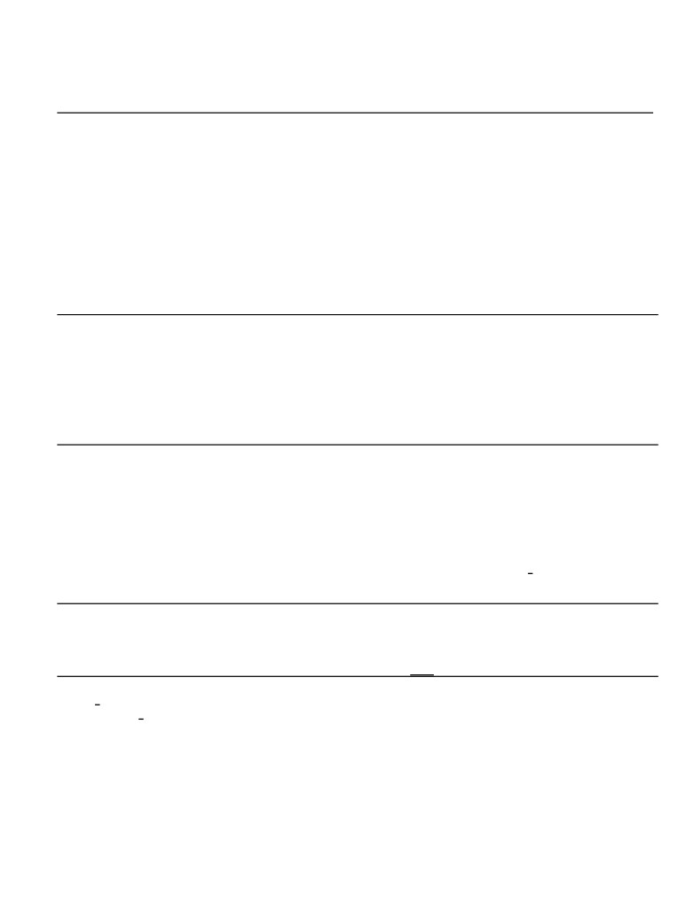
LA BONTE’S TOP 100 ENGLISH CONVERSATION PATTERNS
68
WITH n/op
WHO q WITH?
TOGETHER WITH n/op
WHO q TOGETHER WITH?
ALONG WITH n/op
WHO q ALONG WITH?
Who did you eat with?
I ate with him.
Who do you play together with?
I play together with him.
TO n/op
WHO q TO?
Who did you give it to?
I gave it to my mother.
WHERE q TO?
Where did he take it to?
He took it to the house.
WHEN q TO?
WHEN q TILL?
WHEN q UNTIL?
When did they read to?
They read to 8 at night.
When did she work till?
She worked till 9.
In a sentence/question with an object, TO can be dropped if the n/op (excluding places) goes after the verb.
He gave the present to her.
=
He gave her the present.
Did she tell the story to Donny?
=
Did she tell Donny the story?
He took the children to Paris.
=
He took Paris the children. (Wrong: PARIS is a place.
Did he sell the house to his brother?
=
Did he sell his brother the house?
FROM n/op
WHERE q FROM?
Where did she come from?
She came from New York.
WHO q FROM?
Who did you get it from?
I got it from her.
WHEN q FROM?
=
FROM WHEN q?
When did she sleep from?
She slept from 1.
From when did he read?
He read from 10:30.
WHAT q FROM?
What did you drink it from?
I drank it from the glass.
ABOUT n/op
WHO q ABOUT?
Regarding n/op
Who did he complain about?
He complained about her.
In regard to n/op
WHAT q ABOUT?
Concerning n/op
What do you fight about?
We fight about the kids.
With regard to n/op
*REGARDING n/op, IN REGARD TO n/op, WITH REGARD TO n/op and CONCERNING n/op are
not used in questions beginning with WHAT, WHO etc. as you see above. ABOUT is used a lot more.
What did he talk regarding?
(wrong
sounds awkward)
** If you want to add a sentence to ABOUT, it becomes ABOUT THE FACT THAT s.
What do you think about the fact that she didn't like it?
Did he talk about the fact that it was too expensive to buy?
FOR n/op
WHO q FOR?
Who did you make it for?
I made it for my wife.
WHAT q FOR?
=
WHY q?
What did he eat it for?
Because he was tired.
*Another variation of this in a sentence is FOR THE SAKE OF n/op
LIKE n/op/s
WHO q LIKE?
AS IF s*
Who does he look like?
He looks like John.
AS THOUGH s*
WHAT q LIKE?
What does it look like?
It looks like a pen.
WHERE q LIKE?
Where does it sound like?
It sounds like the farm.
* AS IF and AS THOUGH are only used with a sentence. LIKE is used much more.
He talks as though he always makes mistakes.
**You will sometimes hear UNLIKE n/op/s as the opposite of LIKE n/op/s, but LIKE n/op/s often
sounds better used in combination with a negative verb form.
He doesn't look like a teacher.
He looks unlike a teacher.
(sounds awkward)
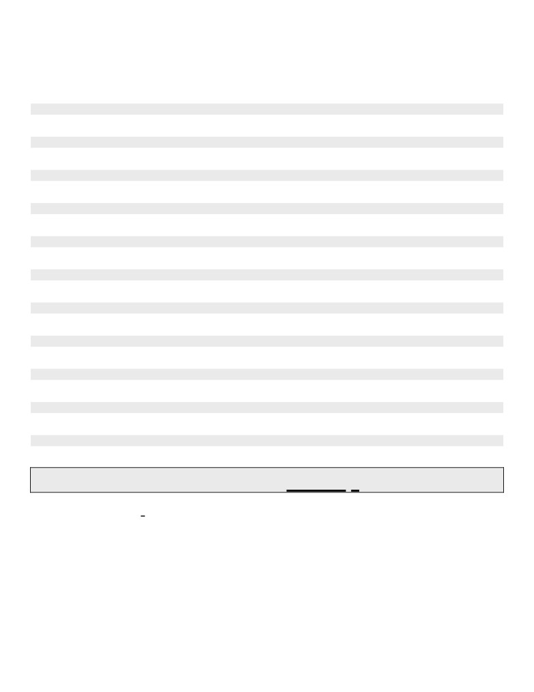
LA BONTE’S TOP 100 ENGLISH CONVERSATION PATTERNS
69
Many sentences use ABOUT, FOR, etc. to join two different verbs or adjectives. If you want to use a
noun or object pronoun which is different than the subject of the sentence, generally the noun or object pronoun
is found directly in front of the verb. In the negative sentence, it is found in front of NOT. The exception to this
is "TO v" where the noun or object pronoun come before TO in the positive sentence.
PATTERN
POSITIVE
NEGATIVE
ABOUT vING
about n/op ving
about n/op not ving
She complained about him coming. They were happy about him not leaving.
FOR vING
for n/op ving
for n/op not ving
I was responsible for John going.
He apologized for him not calling.
TO vING
to n/op ving
to n/op not ving
He was open to her bringing it.
I objected to the students not taking it.
*TO v
n/op to v
n/op not to v
I want him to take it.
I asked him not to tell her.
OF vING
of n/op ving
of n/op not ving
They're sick of me crying.
He was tired of them not being good.
AGAINST vING
against n/op ving
against n/op not ving
She was against me seeing it.
They advised me against not telling her about it.
ON vING
on n/op ving
on n/op not ving
I counted on the teacher calling.
I planned on him not going.
WITH vING
with n/op ving
with n/op not ving
He had trouble with his son sleeping. She's fed up with those guys playing there.
FROM vING
from n/op ving
from n/op not ving
She stopped me from taking it.
He’ll stop her from not telling everyone.
INTO vING
into n/op ving
into n/op not ving
I got into her playing the piano.
She was really into the Bulls playing basketball.
vING
n/op ving
n/op not ving
I can't stand her talking like that.
I like him not living there.
THE FACT THAT s
With some of the patterns above, a sentence can come after the above patterns. In those cases, you will often
hear THE FACT THAT s added. THAT is optional, but generally is used. You will hear it the most used in
combination with ABOUT and WITH.
ABOUT
He talked about the fact that no one wanted to go on the trip.
= He talked about no one wanting to go on the trip.
FOR
Everyone was for the fact that we should give her a present.
= Everyone was for giving her a present.
TO
She objected to the fact that she had to give it back.
= She objected to her having to give it back.
AGAINST
He was against the fact that we could go in free.
= He was against us going in free.
WITH I agreed with the fact that it was alright for them to miss that class.
= I agreed with them missing that class.
LA BONTE’S TOP 100 ENGLISH CONVERSATION PATTERNS
70
INSTEAD OF n/op
RATHER THAN n/op
I helped John instead of her.
She sold the bike instead of the roller blades.
He likes to eat apples instead of oranges.
They bought the ice cream rather than the cookies.
FROM WHAT n/sp SAYS
ACCORDING TO n/op
FROM WHAT n/sp TELLS ME
According to the paper, it is going to rain today.
From what he says, they don't plan to stay there.
From what Ms. Kim tells me, their family has to move.
From what the teacher tells me, I will probably get a good grade.
According to mom, that place is expensive.
BECAUSE OF n/op/s*
DUE TO n/op/s*
**THANKS TO n/op/s*
ON ACCOUNT OF
AS A RESULT OF
*THE FACT THAT s. If you add a sentence, THE FACT has to come before the sentence.
**Implies appreciation for what someone does ,did or will do.
Because of the snow, we couldn't get out.
On account of the new car, we can't afford to buy a new couch.
As a result of the heavy rains, the roads are flooded.
Due to the fact that the food was bad, they all got sick.
Thanks to him we were able to get the tickets..
Because of the fact that she complained so much, I stopped talking to her.
BESIDES n/op/s*
EXCLUDING n/op/s*
BUT n/op
EXCEPT FOR
OTHER THAN
EXCEPT
ASIDE FROM
NOT COUNTING
WITH THE EXCEPTION OF
*THE FACT THAT s.
BUT sounds awkward if a sentence follows it with this pattern.
- BESIDES, EXCEPT and EXCEPT FOR always sounds good with any noun or pronoun, and seem to be
used the most. The other patterns sometimes sound awkward with some nouns/pronouns.
Everyone went besides dad.
He brought everything except for the bread.
They all saw that movie except Tina.
I like to eat all meats except for lamb.
Aside from the fact that I don't have the money, I already have enough of those.
Other than the fact that she is beautiful, she also has great business sense.
ONLY n/op
NOTHING BUT n/op
JUST
I ate only fruit.
=
I ate just fruit.
They went on a trip to only Chicago.
She bought just that ring.
She drank nothing but beer all night.
ANOTHER n
ANY OTHER n*
SOME OTHER n**
*not used in a positive sentence.
** not used in a negative sentence.
She gave me another pen.
Did you take some other books?
She didn't get any other fruit.
Doesn't he know any other students?
I met some other teacher.
Did they bring any other food.
They visited another family.
Will you buy another dictionary?
LA BONTE’S TOP 100 ENGLISH CONVERSATION PATTERNS
71
INCLUDING n/op/s*
* THE FACT THAT s
Everyone liked it including my sister.
He owns a computer including a printer.
She accepted everything including the fact that he could come.
He plays sports well including tennis.
THROUGH n/op
Did you meet him through a friend?
She learned about it through the newspaper.
They heard about it through their friends.
He pulled the pencil through the hole.
WITHOUT n/op
WITHOUT vING
WITHOUT n/op vING
Did he leave without telling you?
I bought it without her knowing.
They went into the theater without paying.
She wants to go shopping without her mother.
DEPENDING ON/UPON n/op
DEPENDING ON/UPON WHAT s
DEPENDING ON is the same as DEPENDING UPON.
Instead of WHAT, you can use WHO, WHEN, WHERE and HOW.
Depending on what she says, I'll be able to go.
Depending upon when I get the money, I will buy it.
Depending on where they go on vacation, she'll be happy.
Depending on how he can get the money, he'll go to college right away.
Depending upon on the situation, I'll decide if I should go.
This pattern can be made into a sentence using IT DEPENDS ON. It is usually
used as a short answer to a question.
Do you want to go?
It depends on the weather.
Can you give it to me?
It depends on how much you can pay.
Are you going to leave?
It depends on what he says.
Will you join them?
It depends upon when they go.
IN ADDITION TO n/op/s*
AS WELL AS n/op/s*
* THE FACT THAT s
In addition to Korean, I also know Japanese.
He bought shirts as well as pants.
In addition to that, I also did the dishes.
In addition to the fact that she is sick, she also doesn't have money to do it.
In addition to the fact that it's expensive, it's also too big for the house.
DESPITE n/op/s*
IN SPITE OF n/op/s*
*THE FACT THAT s
Despite the hard work, it was worth doing it.
In spite of the fact that she didn't appreciate it, we still wanted to do it.
We decided to return all of the money despite him.
LA BONTE’S TOP 100 ENGLISH CONVERSATION PATTERNS
72
*AMONG ALL OF n/op Among all of the girls here, I like Carole the most.
Among all these books, this is my favorite.
*AMONG
Among those stores, I love to shop at Sears.
*OF ALL
He is the smartest of all the kids.
*OUT OF ALL OF
Out of all these children, he is the smartest.
Out of all of the teachers, I like him the most.
*OUT OF
I can't find it out of those picture.
Approx. %
100%
a.
*ALL OF n/op
All of the kids were happy.
*ALL
He ate all the apples.
90%
b.
*MOST OF n/op
She brought most of these pens.
MOST
Most people don't tell lies.
70- 95%
c.
*A LOT OF n/op
A lot of them are angry.
*MANY OF
He took many of the pens.
MANY
She tried on many dresses.
*A NUMBER OF
A number of teachers came to the party.
80-95%
d.
*ALMOST ALL OF n/op
Almost all of you heard the bad news.
*ALMOST ALL
She drank almost all the beer.
40-60%
e.
*SOME OF n/op
They read some of the book.
SOME
Some boys dropped by to see you.
*HALF OF n/op
Half of the girls came.
HALF
He met half the students.
*A FEW OF
A few of our friends are coming over.
A FEW
She sold a few boxes of candy.
*A PART OF
He wanted to see a part of our house.
*PART OF
I saw part of him in the window.
*A LITTLE OF
Could you bring a little of the cake here?
A LITTLE
I can speak a little English.
*A COUPLE OF
He took a couple of the dogs.
A COUPLE
A couple women sang the song.
*SEVERAL OF
Several of them were hurt.
SEVERAL
We need several chairs.
# A PART OF and A LITTLE OF are not usually used when referring to people.
## You can use ANY instead of SOME except in a positive sentence or when it is used as the subject.
20%
f.
*NOT MANY OF n/op
Not many of those boys danced with the girls.
**NOT MANY
Not many cars were sold.
**NOT MUCH
Not much snow fell yesterday.
1
g.
ONE OF THE
One of the Koreans left.
2
TWO OF THE
Two of the shoes are gone.
0%
h.
*NONE OF n/op
None of your luggage has arrived.
**NOT ANY OF
Not any of the food tasted good.
**NO
No money was in the drawer.
***ANY
I didn't see any papers there.
***ANY OF
She didn't bring any of the towels.
1. Most of these patterns are followed by a plural noun. THESE and THOSE are used a lot. When a noun
comes after OF, usually OF THE is used. OF THE is not used with THESE, THOSE or an object pronoun.
All of the these students took the test.
(wrong)
2. AMID is the same as AMONG. AMONG is used much more.
Amid all the people, I saw my son.
3. Possessive pronouns usually follow OF or ALL. Object pronouns are always preceded by OF.
I met most of her friends.
I met most her friends.
(wrong)
She took almost all my money.
He read a couple her books.
(wrong)
All of them saw the movie.
All them saw the movie.
(wrong)
He wants to see some of you.
He wants to see some you.
(wrong)
* Usually THE is used before a noun. The object pronoun can come out with the pattern ending with OF.
** Only used as the subject of the sentence.
*** Only used in a negative sentence.
LA BONTE’S TOP 100 ENGLISH CONVERSATION PATTERNS
73
HOW MUCH n*
HOW MANY n*
*This is always a plural noun
1. HOW MANY
Use with plural nouns ending in "s".
Exceptions:
PEOPLE
How many people came?
MEN
How many men will be there?
WOMEN
How many women got sick?
CHILDREN
How many children were absent?
How many apples are in the box?
How many donuts did he buy?
How many books are in the library?
How many things did she bring?
2. HOW MUCH
Use with plural nouns NOT ending with "s".
How much food do you have?
How many bananas do you have?
How much water came out?
How many gallons of water came out?
How much ice cream did he eat?
How many ice cream cones did he eat?
How much money did she have?
How many dollars did she have?
How much paper did he pick up?
How many pieces of paper did he pick up?
3. a. Here are the most common qualifiers used with nouns. The qualifiers below end with "s", so use
HOW MANY in the question.
boxes of
How many boxes of cereal did you get?
I got 2 boxes.
bottles of
How many bottles of beer did he drink?
He drank 4 bottles.
cans of
How many cans of Pepsi did they find?
They found 10 cans of Pepsi.
gallons of
How many gallons of paint did you buy?
I bought 3 gallons.
quarts of
How many quarts of oil do you use?
I use 4 quarts of oil.
pints of
How many pints of milk does she have?
She has 2 pints.
pairs of
How many pairs of socks did he take?
He took 4 pairs.
bags of
How many bags of groceries did he carry?
He carried 2 bags.
cartons of
How many cartons of cigarettes are there?
There are 3 cartons.
tubes of
How many tubes of toothpaste are there?There are 5 tubes.
cases of
How many cases of beer did you bring?
I brought 3 cases.
pieces of
How many pieces of paper did you take? I took 10 pieces.
glasses of
How many glasses of water did he drink
He drank 2 glasses.
cups of
How many cups of coffee did she sell?
She sold 25 cups.
dozen*
How many dozen eggs did she borrow?
She borrowed 4 dozen.
* "of" is not used
If everyone knows what noun you are referring to, you can drop OF and the noun.
How many cups did he drink?
How many cases are there?
b. Other commonly used qualifiers include: How many types of n
How many sorts of n
How many kinds of n
How many kinds of dessert are there?
There are all kinds of desserts there.
How many sorts of plants do you have?
I have about 10 sorts of plants.
How many kinds of soda did you buy?
I bought 3 kinds of soda.
4. If everyone knows what "plural noun" you are referring to, you can use just HOW MANY or
HOW MUCH followed by the question. You don't have to include the plural noun.
How many did you see?
How many were they going to bring?
How much was left?
How much were they taking?
5. HOW MANY TIMES q?
This is a common question.
How many times did she call yesterday? She called 3 times yesterday.
How many times did he visit her?
He visited her 5 times.
LA BONTE’S TOP 100 ENGLISH CONVERSATION PATTERNS
74
WHICH n
WHAT n
1. This is very SPECIFIC in the question form. WHAT and WHICH are usually interchangeable.
WHICH is used the most when you are actually looking at a group of things, and you are trying to
distinguish between the items you are looking at.
Which book did she buy?
What radio do you want to take there?
2. WHICH
=
*WHICH ONE OF THE
=
*WHICH OF THE
= WHICH OF HIS N
*always followed by plural noun
HER
Which house do you like the most?
THEIR
Which one of the houses do you like the most?
Which of the houses do you like the most?
Instead of THE, you can use a possessive pronoun plus a noun.
Which one of your children studies there?
Which one of his paintings do you like the most?
WHICH KIND OF n
WHAT SORT
TYPE
1. This is more GENERAL in the question form than WHAT n and WHICH n. WHAT and WHICH
are interchangeable. KIND, TYPE and SORT are interchangeable.
What kind of food did she buy?
What sort of food did she buy?
Which type of food did she buy?
2.
Please notice the difference between the SPECIFIC and GENERAL question.
What food do you like?
I like hamburgers.
What kind of food do you like?
I like Chinese food.
What car does she have?
She has a Ford.
What kind of car did you buy?
I bought a van.
Which girl do you like?
I like Tina.
What kind of girl do you like?
I like shy girls.
What sort of school is it?
It is a seminary.
What type of clothes does he prefer?
He prefers casual clothes.
What kind of music do they listen to?
They listen to jazz.
3. In a sentence/question, you will hear the below variations. SOME is not used in a negative sentence
and ANY is not used in a positive sentence. SOME and ANY are used more than the variation with A.
+s, -s, +q, -q
+s, +q,
-q
-s, +q,
-q
A KIND OF n
SOME KIND OF n
ANY KIND OF n
A SORT OF
SOME SORT OF
ANY SORT OF
A TYPE OF
SOME TYPE OF
ANY TYPE OF
He is some sort of pilot.
Is she some sort of teacher?
They are a type of engineer.
Was he some type of cook?
She is some kind of inspector.
Are you some kind of salesperson?
There isn't any kind of pen there.
Did he take any type of paper?
He ate some sort of fish.
Didn't she read some sort of magazine?
The plural form of this is ALL KINDS OF, ALL SORTS OF and ALL TYPES OF.
He bought all sorts of clothes there.
Did she bring all kinds of food with her?
LA BONTE’S TOP 100 ENGLISH CONVERSATION PATTERNS
75
WHAT TIME IS IT?
1:00
ONE
1:35
25 TO 2
ONE O'CLOCK
25 TILL 2
1:05
5 PAST 1
1:40
20 TO 2
5 AFTER 1
20 TILL 2
1:10
10 PAST 1
1:45
A 1/4 TO 2
10 AFTER 1
A 1/4 TILL 2
1:15
A 1/4 PAST 1
1:50
10 TO 2
A 1/4 AFTER 1
10 TILL 2
1:20
20 PAST 1
1:55
5 TO 2
20 AFTER 1
5 TILL 2
1:25
25PAST 1
25 AFTER 1
* A is optional
1:30
A 1/2 PAST 1
1.
Use AT before the time all the time except when the time follows these words:
BEFORE He left before a ½ past 5.
SINCE
You haven't slept since 20 till 9.
AFTER She left after 10 till 2.
FROM
He hasn't seen me from 10 to 10.
UNTIL
They didn't come until a 1/4 to 7.
BY
We didn't arrive by a ½ past 3.
TILL
I won't call until 10 past 4.
To BE
It is a 1/4 past 9.
2.
AT is optional when used with ABOUT, AROUND and APPROXIMATELY.
He left about 10 past 5.
=
He left at about 10 past 5.
3.
Instead of A.M. and P.M., use
at time in the morning
at time in the evening
= at time at night
at time in the afternoon
4.
12 A.M.
= midnight
I left at midnight.
12 midnight
He came at 12 midnight.
12 P.
= noon
She'll arrive at noon.
12 noon
They came back at 12 noon.
5. The easiest way to tell time is to read the numbers. With 1:01 to 1:09, you say "o" for "0" in 1:01.
1:20
one
twenty
3:45
three
forty
10.05
ten
o five
(not ten
five)
5:07
five
o seven
(not 5
seven)
6.
MINUTES are sometimes added, except with A QUARTER and A HALF.
10 minutes till 6
(10 till 6)
20 minutes after 9
(20 after 9)
5 minutes to 5
(5 to 5)
25 minutes past 8
(25 past 8)
7.
There are a couple of ways to ask for the time:
What time is it?
What time do you have?
Do you have the time?
Can you tell me the time?
8.
With a VERB, the most common combinations are:
It's time to v.
Is it time to leave?
Yes, it's time to leave.
It's time for n/op to v.
Isn't it time for him to come back?
Yes, it's time for him to come back.
It's time that s.
Is it time she called?
No, It's not time that she called.
It's time for n.
Is it time for lunch?
No, it's time for supper.
It's a good time to v.
Is it a good time to bring it?
Yes, It's a good time to bring it.
When is it a good time to come back?
It's a good time to come back tonight.
It's a bad time to v.
Was it a bad time to leave?
No, it wasn't a bad time to leave.
I spend time ving.
Do you spend time reading?
Yes, I spend time reading.
Did you spend 2 hours talking?
Yes, I spent 2 hours talking.
How did you spend time there?
I spent time talking with her.
I have time to v.
Do you have time to stay?
No, I don't have time to stay.
I have a good time ving.
Did you have a good time playing?
Yes, I had a good time playing.
LA BONTE’S TOP 100 ENGLISH CONVERSATION PATTERNS
76
WHAT IS THE DATE TODAY?
There are 4 ways to say the date: 1/1
THE FIRST
a. THE day
THE FIRST OF JANUARY
b. THE day OF month
JANUARY FIRST
c. month day
JANUARY THE FIRST
d. month THE day
M
O JANUARY
FEBRUARY
MARCH
APRIL
N MAY
JUNE
JULY
AUGUST
T SEPTEMBER
OCTOBER
NOVEMBER
DECEMBER
H
1st
FIRST
11th
ELEVENTH
21st
TWENTY FIRST
2nd
SECOND
12th
TWELFTH
22nd
TWENTY SECOND
3rd
THIRD
13th
THIRTEENTH
23rd
TWENTY THIRD
4th
FOURTH
14th
FOURTEENTH
24th
TWENTY FOURTH
D
5th
FIFTH
15th
FIFTEENTH
25th
TWENTY FIFTH
A
6th
SIXTH
16th
SIXTEENTH
26th
TWENTY SIXTH
Y
7th
SEVENTH
17th
SEVENTEENTH
27th
TWENTY SEVENTH
8th
EIGHTH
18th
EIGHTEENTH
28th
TWENTY EIGHTH
9th
NINTH
19th
NINETEENTH
29th
TWENTY NINTH
10th
TENTH
20th
TWENTIETH
30th
THIRTIETH
31st
THIRTY FIRST
YEAR
1948
19...48
1985
19...85
1994
19...94
865
8...65
a. ON is optional.
He went on June 4th.
=
He went June 4th.
She left on Monday July 8th.
=
She left Monday July 8th..
b. ON is not used with:
1.
BEFORE, AFTER, UNTIL, SINCE, BY, FROM, TO or TILL.
They left before the 6th of January.
They left on before the 6th of January.
(wrong)
2.
the verb TO BE: It is July the 24th.
My birthday is August 8th.
c. Common questions about dates:
What is the date today?
The date today is the September second.
Today is March 4th.
What was the date last Friday?
Last Friday was July 4th.
When were you born?
I was born on the eighth of August.
When were you married?
We were married on January the 13th.
d. Use IN, instead of ON, when only the YEAR and/or MONTH are used, or when the actual day is not said.
I graduated in June, 1994.
She first came here in 1948.
They left in June 8, 1995.
(wrong)
e. With questions about a particular date or day use
WHAT DAY q?
WHAT DAY OF THE WEEK q?
ON is optional before the day of the week.
What day did she come back?
She came back on July the 8th.
What day of the week will he return?
He'll return on the sixth.
What day is she going to leave?
She's going to leave on June 17th.
f. With questions about a particular year use
WHAT YEAR q?
What year were you born?
I was born in 1996.
What year did they get that new car?
They got the new car in 1994.
g. WHAT DAY OF THE WEEK q? The answer is usually a day of the week like Monday, Tuesday, etc.
What day of the week did she come back?
She came back on Monday.
LA BONTE’S TOP 100 ENGLISH CONVERSATION PATTERNS
77
HOW LONG AGO q?
HOW LONG AGO q?
a. BEFORE n
many minutes
many hours
b.
1 n AGO
many days
many weeks
c.
FROM time TO time
many months
TILL
many years
UNTIL
d.
BETWEEN time AND time
QUESTION
Instead of LONG, you can use MANY MINUTES, MANY HOURS, etc.
How long ago did you meet her?
How many minutes ago did you meet her?
How many hours ago did she get to sleep?
How many days ago did they wash it?
`
How many weeks ago did they write it?
How many months ago did you take a vacation?
How many years ago did he learn that?
ANSWER
1. "a"
Use BEFORE every time a NOUN without a number comes out in the answer.
How long ago did she go back?
She went back before the summer.
How long ago did you find out?
I found out before supper.
2. PRIOR TO is the same as BEFORE. BEFORE is used much more.
She left prior to the meeting.
They left prior to Monday.
3. "b"
USE AGO every time a NUMBER comes out in the answer.
How many minutes ago did he go?
He went 30 minutes ago.
How many weeks ago did they pay you?
They paid me 2 weeks ago.
EXCEPTIONS (do not use AGO):
1.
YEAR/MONTH
a.
before 1978
They returned before 1978.
b.
in 1978
(if you know exact year/month)
She came in 1968.
2.
CLOCK TIME
c.
before 2:30.
He went back before 4:45.
d.
at 3:20
(if you know exact time)
He woke up at 3:20.
3.
DATE / DAY
e.
before May 19th
before Tuesday
f.
on November 10th
(if you know the exact date)
ON is optional
I went November 10th.
4. ½ is a used a lot with numbers, like 2 1/2, 3 1/2, etc. Here is how you say that:
2 1/2
2 and a half
He came 2 and a half days ago.
4 1/2
4 and a half
They met her 4 and a half years ago.
LA BONTE’S TOP 100 ENGLISH CONVERSATION PATTERNS
78
AFTER HOW LONG q?
IN HOW LONG q?
AFTER HOW LONG q?
IN HOW LONG q?
a.
AFTER
many minutes
many hours
b.
IN
many days
many weeks
c.
WITHIN
many months
many years
d.
BY
QUESTION
1. Instead of LONG, you can use MANY MINUTES, MANY HOURS, etc.
After how long will she return?
After how many minutes are they going to come back?
In how many hours will he be here?
After how many days do you want to take it?
After how many weeks does he plan to leave?
In how many months will you take a vacation?
After how many years is he going to retire?
2. IN HOW LONG is not used in the past tense.
ANSWER
1. "a"
Use AFTER with NOUN or NUMBER.
After how long will they give it back?
They'll give it back after 2 months.
They'll give it back after dinner.
In how long will she finish?
She'll finish after 2 hours.
She'll finish after Monday.
2. "b"
Use IN with a number. IN has two meanings: AFTER and WITHIN.
IN means AFTER with the present and future tense.
(present)
He plans to visit him in 2 days.
(after)
(future)
They will arrive in 3 months.
(after)
IN means WITHIN with the past tense.
(past)
She ate in 10 minutes.
(within)
3. Here are two other variations of this pattern.
a. HOW MUCH LATER q?
The answer can either have AFTER time or time LATER. You can substitute "many hours, etc." for MUCH.
How much later will she return?
She'll return after two hours.
She'll return two hours later.
How much later did you see her again? I saw her two days later.
How many days later did he come back? He came back 10 days later.
b. HOW LONG AFTER vING q? answer:
time AFTER vING, s.
HOW LONG AFTER s q?
s time AFTER vING.
Instead of LONG, you can use many minutes, many hours etc. This is usually used a lot with the past tense.
How long after seeing him did you leave?
3 hours after seeing him I left.
I left 3 days after seeing him.
How many hours after waking up, did you go?
I went 2 hours after waking up.
How many years after graduating, did you meet?
We met 3 years after graduating.
How many months after he came, did she go back?
4 months after he came, she went back.
How long after he knew that, did he call you?
He called me 10 minutes after he knew that.
How long after I go, are you going to move in?
I'm going to move in 3 days after you go.
LA BONTE’S TOP 100 ENGLISH CONVERSATION PATTERNS
79
HOW LONG WILL IT BE BEFORE YOU v?
HOW LONG WILL IT BE BEFORE YOU v?
IT WILL BE time BEFORE I v.
many minutes
UNTIL
UNTIL
many hours
TILL
TILL
many days
many weeks
many months
many years
* This pattern is the same as AFTER HOW LONG q?
QUESTION
1. BEFORE, UNTIL and TILL are interchangeable. BEFORE is used more.
Instead of LONG, you can use MANY MINUTES, MANY HOURS, etc.
How long will it be before they take it away?
How many minutes will it be until it is finished?
How many hours will it be before she gets there?
How many days will it be till school starts?
How many months will it be before you move into your new house?
How many years will it be until they graduate?
2. The future tense can either be:
HOW LONG WILL IT BE BEFORE YOU v?
HOW LONG IS IT BEFORE YOU v?
How long will it be before she comes home?
How long is it before she takes the test?
The past tense is:
HOW LONG WAS IT BEFORE YOU v (past)?
How long was it before she found out?
3. You can use MUCH TIME instead of LONG.
How much time will it before she realizes it?
How much time is it before they come to pick her up?
ANSWER
1. BEFORE and UNTIL are interchangeable.
It'll take 10 minutes before I'm prepared.
It'll take 3 years until I can afford it.
Will it be 2 days before you bring it?
Yes, it'll be 2 days before I bring it.
Will it be 2 weeks until you return?
Yes, it'll be 2 weeks until I return.
2. Sometimes general time references like A LITTLE WHILE, A WHILE and A LONG TIME are used.
With the negative, "It won't be long before s." is used.
It will be a little while before I get up.
It will be a long time until she starts studying.
It'll be a while before I'm ready.
It won't be long before she gets here.
3. You can use this pattern in the past tense.
It was 2 days until I felt better.
It was a while before I realized that.
It was a long time before I understood it.
It wasn't long till I met her again.
4. Sometimes in the answer you will hear AFTER or IN.
How long will it be before she gets up?
She'll get up after 2 hours.
How long will it be till he picks you up?
He'll pick me up in 20 minutes.
LA BONTE’S TOP 100 ENGLISH CONVERSATION PATTERNS
80
HOW LONG q?
HOW LONG q FOR?
FOR HOW LONG q?
a.
FOR
1 n
HOW LONG q?
b.
DURING n
many minutes
c*.
time THROUGH time
many hours
d.
FROM time TO time
many days
TILL
many weeks
UNTIL
many months
e.
BETWEEN time AND time
many years
QUESTION: Instead of LONG, you can use MANY MINUTES, MANY HOURS, etc.
For how long did he study?
For how many minutes do you want to watch TV?
How many hours does he walk every day?
How many days are they going on vacation for?
How many weeks do you plan to stay there?
How many months have you got to work?
For how many years will you learn here?
ANSWER:
1. "a"
Use FOR every time you use a NUMBER. FOR is optional
I studied for 2 years.
She talked for 30 minutes
I studied 2 years.
She talked 30 minutes.
FOR ABOUT
He read the paper for about 20 minutes.
= FOR AROUND
He ate there for around 10 minutes.
= FOR time OR SO
I took a nap for 1 hour or so.
FOR OVER
She talked with my mother for over 1 hour.
FOR UNDER
We walked for under 30 minutes.
FOR MORE THAN
You shaved for more than 20 minutes.
FOR LESS THAN
They rested for less than 45 minutes.
*Exceptions: A LONG TIME
I practiced the piano for a long time.
A LITTLE WHILE
She looked around for a little while.
A WHILE
They drank beer for a while.
2. "b"
Use DURING with any NOUN without a number.
They read during their vacation.
She played tennis during lunch.
EXCEPTIONS: Use DURING with a specific year, even though the year is a number.
He played soccer during 1988.
3. "c*"
THROUGH is used with all time except clock time. It is the same as FROM time TO time.
He studied Monday through Friday.
= He studied from Monday to Friday.
She worked May 1 through July 31.
=
She worked from May 1 to July 31.
4. The verb TO SPEND is used a lot with this pattern. MUCH TIME can be used instead of LONG.
Question:
HOW MUCH TIME DO YOU SPEND vING?
Answer:
I SPEND time vING.
(Do not use FOR after SPEND)
How much time does she spend cooking?
She spends 1 hour cooking every day.
How long did you spend sleeping?
I spent an hour sleeping.
How many days did he spend vacationing there?
He spent 7 days vacationing there.
For how many years did you spend teaching?
I spent 4 years teaching.
How much time will he spend working here?
He'll spend 8 hours working here.
5. HOW LONG DOES n LAST?
= HOW LONG IS n
FOR is not used in the answer.
How long did the movie last? (= How long was the movie?)
It lasted 2 ½ hours. (= It was 2 ½ hours.)
How long does the game last? (= How long is the game?)
It lasts about an hour (= It is about an hour.)
6. With this pattern, I HAVE v PP and I HAVE BEEN vING mean the same. Usually I HAVE v PP refers just
to things done in the past, and I HAVE BEEN vING refers to actions beginning in the past and continuing to
the present. However, with this pattern I HAVE v PP refers to actions beginning in the past and continuing to the
present.
How long have you known her?
I have known her for 10 years.
How many hours has she been studying for?
She has been studying for 5 hours.
How many years have they lived here?
They have lived here for around 5 years.
LA BONTE’S TOP 100 ENGLISH CONVERSATION PATTERNS
81
HOW LONG DOES IT TAKE TO v?
HOW LONG DOES IT TAKE TO v?
IT TAKES time TO v.
many minutes
many hours
many days
many weeks
many months
many years
QUESTION
1. Instead of LONG, you can use MANY MINUTES, MANY HOURS, etc.
How long does it take to learn that?
How many minutes does it take to get there?
How many hours did it take to memorize all that?
How many days will it take to pay it back?
How many weeks is it going to take to earn that much money?
How many months will it take to build the house?
How many years does it take to speak English well?
2. Here are some more specific variations:
QUESTION
ANSWER
a. How long does sp/n take to v?
sp/n takes time to v.
How long does he take to do that?
He takes 30 minutes to do that.
How long does the boy take to read it?
The boy takes 4 hours to read it.
b. How long does it take op/n to v?
It takes op/n time to v.
How long did it take her to understand?
It took her 3 weeks to understand.
How long did it take the teacher to explain?
It took the teacher 20 minutes to explain.
c. How long does it take for op/n to v?
It takes time for op/n to v.
How long does it take for him to fix it?
It takes 2 hours for him to fix it.
How long did it take for Tina to get there?
It took one hour and a half for Tina to get
there.
3. Instead of LONG, you can use MUCH TIME.
How much time does it take to complete?
How much time does he take to call back?
How much time did it take to reach him?
How much time will she take to find it?
ANSWER
1. a. IT TAKES time TO v.
How long will it take to get there?
It will take 2 hours to get there.
How many hours does it take to make supper?
It takes 1 hour to make supper.
How many years did it take to finish college?
It took 5 years to finish college.
b. ABOUT, AROUND and APPROXIMATELY come after TAKE in the sentence and before HOW in
the question.
How long will it take to write it?
It'll take about 30 minutes to write it.
How long did it take to bake?
It took around 45 minutes to bake.
About how long will it take to explain?
It'll take about 1 hour to explain.
Approximately how long did it take to get there?
It took approximately 2 hours to get there.
2. Sometimes you don't have the exact time, so you speak in general. Here are some examples.
Did it take a lot of time to finish?
Yes, it took a while to finish.
Did it take a long time to explain it?
No, it didn't take a long time to explain it.
Will it take a little while to prepare?
No, it won't take much time to prepare.
Did it take you long to memorize all that?
Yes, it took a long time to memorize all that.
3. HOW FAR IS IT FROM place?
= HOW FAR AWAY IS IT FROM place?
HOW FAR IS place?
= HOW FAR AWAY IS place?
Answer: IT IS time / distance AWAY FROM place.
= IT IS time / distance AWAY.
Sometimes questions are asked about distance. The answer can either be in time or measurements.
How far away is it from your house?
It's 5 minutes away from my house.
It's 2 miles away from my house.
How far is school away from here?
School is 15 minutes away from here.
How far is the car from here?
The car is 2 minutes away.
LA BONTE’S TOP 100 ENGLISH CONVERSATION PATTERNS
82
HOW OFTEN q?
a.
HOW OFTEN q?
c.
TIME A
many times a minute
TIME IN A
many times an hour
TIME EVERY
many times a day
many times a week
many times a month
d.
MINUTES AN HOUR
many times a year
HOURS A DAY
DAYS A WEEK
b.
HOW MANY MINUTES AN HOUR q?
WEEKS A MONTH
many hours a day
MONTHS A YEAR
many days a week
many weeks a month
e.
EVERY n
many months a year
1. "a"
Instead of OFTEN, you can substitute MANY TIMES A MINUTE etc.
How often do you read?
I read every weekend.
How many times a year does he swim?
He swims 20 times a year.
How many times a month do they fish?
They fish about 2 times a month.
How many times a day do you eat?
I eat 3 times a day.
2. "a"
HOW MANY TIMES q A WEEK? Sometimes the question comes right after TIMES.
How many times do you talk to him a week?
How many times does he travel there a year?
3."b" If you want to be more specific use:
days a month
How many days a month do you work?
weeks a month
How many weeks a month do you stay there?
months a year
How many months a year does she go to school?
4. "c" There are a few abbreviations: one time
= once
He ate once a day there.
two times
= twice
She cooked twice in a day.
How often did he call?
He called 3 times a day.
He called 3 times in a day
He called three times every day.
EVERY: You have to use EVERY if the following number is two or above. EVERY can
be used in all situations. A and IN A can only be used when ONE follows.
He came here two times every 3 months.
He came here two times in a 3 months.
(wrong)
They played tennis once every month.
She met with her teacher once every 2 weeks.
5.
Try to answer using the same time asked in the question.
How many days a week do you practice?
I practice 3 days a week.
How many months in a year do they paint?
They paint 4 months in a year.
How many days a year does she go there?
She goes there 4 days a year.
How many times a day does he call?
He calls 3 times a day.
LA BONTE’S TOP 100 ENGLISH CONVERSATION PATTERNS
83
HOW LONG HAS IT BEEN SINCE YOU v (past)?
HOW LONG HAS IT BEEN SINCE YOU v (past)?
a. It has been time.
HOW LONG IS IT SINCE YOU v (past)?
many minutes
b. It has been time since I v (past).
many hours
many days
c. It has been since n.
many weeks
many months
d. It has been since n that s.
many years
1. Instead of LONG, you can substitute MANY MINUTES, MANY DAYS etc.
How long has it been since you met her?
How many minutes has it been since she called?
How many hours is it since you took the test?
How many days has it been since you left?
How many weeks has it been since they brought it?
How many months is it since you went to France?
How many years has it been since you came to the U.S.?
2. HOW LONG HAS IT BEEN SINCE YOU and HOW LONG IS IT SINCE YOU are the same.
HOW LONG HAS IT BEEN SINCE YOU is used much more.
How long has it been since you called?
=
How long is it since you called?
3. ANSWER:
a & b
When a number comes out, use "a" & "b".
How long has it been since you saw him?
It has been 2 months.
It has been 2 months since I saw him.
Exceptions: Clock time
use "c" and "d"
It has been since 2:30.
Dates
use "c" and "d"
It has been since 11/2/95.
Year
use "c" and "d"
It has been since 1994.
c & d
How long has it been since he came home?
It has been since the summer.
It has been since the summer that he came home.
(You always need to use THAT before the sentence)
4. FIRST and LAST are often used in the question/answer for clarification.
How long has it been since he first met you? It has been 3 years since he first met me.
How long has it been since you last talked?
It has been 2 days since we last talked.
How long has it been since you first swam?
It has been 5 years since I first swam.
5. You can use HAVE v PP instead of v (past).
How long has it been since you've eaten?
How long has it been since he's called.
How long has it been since you talked to her?
It has been two weeks since I talked to her.
How many years has it been since she left?
It has been two years since she left.
How many hours has it been since he ate?
It has been 3 hours since he ate.
How many months is it since he came?
It has been 3 months since he came.
How many days has it been since you've swam?
It has been 4 days since I've swam.
LA BONTE’S TOP 100 ENGLISH CONVERSATION PATTERNS
84
WHEN WAS THE LAST TIME YOU v (past)?
WHEN WAS THE FIRST TIME YOU v (past)?
QUESTION
WHEN WAS THE LAST TIME THAT YOU v (past)?
= WHEN DID YOU LAST v ?
WHEN DID YOU v LAST?
WHEN WAS THE FIRST TIME THAT YOU v (past)?
= WHEN DID YOU FIRST v?
WHEN DID YOU v FIRST?
ANSWER
THE LAST TIME THAT I v (past) WAS
a.
AGO
I LAST v (past)
b.
BEFORE
I v (past) LAST
c.
WHEN s
d.
ON day
THE FIRST TIME THAT I v (past) WAS
I FIRST v (past)
I v (past) FIRST
1. a. THAT is optional in the question and answer.
When was the last time that you saw him?
The last time that I saw him was 2 days ago.
When was the first time you helped him?
The first time I helped him was yesterday.
b. "I v (past)" is optional in the answer only to the longer form of the question.
When was the last time she wore that?
The last time was 6 days ago.
When was the first time he hit you?The first time was yesterday.
2. "a" & "b" Use the rules regarding the use of BEFORE (noun) and AGO (number).
When was the last time he came by?
The last time he came by was 3 days ago.
When did he last come by bus?
He last came by bus before July 31st.
3. "c" is used with WHEN + sentence.
When was the first time you taught him?
The first time I taught him was when I was at college.
The first time she talked about that was when she began to work there.
4. "d" ON is optional. ON is not used with TODAY, YESTERDAY, LAST WEEK/MONTH, etc.
When was the first time he sent you flowers? The first time he sent me flowers was Saturday.
When did she first meet him?
She first met him Saturday.
When did you bring it first?
I first brought it July 4th.
When did he first know?
He first knew last Friday.
5. LAST and FIRST come after the object of the sentence/question if you place it after the verb.
When did he study that last?
He studied that last 3 weeks ago.
He studied last that 3 weeks ago.
(wrong)
When did she write him first?
She wrote him first on Friday.
When did he drink beer last?
He drank beer last on the weekend.
He drank last beer on the weekend.
(wrong)
He last drank beer on the weekend.
6. You can use IS instead of WAS in the question and answer.
When is the last time you talked to her?
The last time I talked to her is 2 days ago.
When is the first time he asked you out?
The first time he asked me out is 1 year ago.
7. The future tense is: WHEN WILL BE THE FIRST TIME YOU v?
When will be the first time you work with him?
LA BONTE’S TOP 100 ENGLISH CONVERSATION PATTERNS
85
WHY q ?
HOW COME s ?
WHAT q FOR?
WHY IS IT THAT s?
1. HOW COME s ?
How come he left?
=
Why did he leave?
How come she doesn't want to go?
=
Why doesn't she want to go?
How come you have to leave now?
=
Why do you have to leave now?
How come he's angry?
=
Why is he angry?
How come is he happy?
(wrong...because it is not a sentence after HOW COME.)
2. WHAT q FOR?
Use only with verbs in positive questions. Do not use with negative questions or questions with adjectives. There
are some adjectives where it sounds all right (eg. famous). However, for some reason with many adjectives it
sounds strange, so I suggest that beginning students don't use this with an adjective.
What did he come for?
=
Why did he come?
What does she want to bring it for?
=
Why does he want to bring it?
What did they call her for?
=
Why did they call her?
3. WHY IS IT THAT s? THAT is optional.
Why is it that she's mad at you?
=
Why is she mad at you?
Why is it she didn't want to go?
=
Why didn't she want to go?
Why is it she is so sad?
=
Why is she so sad?
4. A brief form of this pattern is used to ask WHY:
a. In response to a positive sentence: (FOR WHAT and WHAT FOR are not used when responding to sentences
with adjectives or to a negative sentence.)
He left yesterday.
Why?
How come?
What for?
For what?
(not used as much as WHAT FOR?)
Why is that?
b. In response to a negative sentence:
She didn't work.
Why?
How come?
Why not?
Why is that?
5 a. ADJECTIVES
instead of using the adverb VERY, use SO in the WHY question.
Why is she so tired?
How come he is so hungry?
b. VERBS
instead of using the adverb A LOT, use SO MUCH and some other variations in the WHY question.
Why did he buy so much?
Why is it that she ate so much?
What did he yell at her so much for?
How come he speaks so well?
How come he works so hard?
Why does he talk so fast?
6. WHAT IS THE REASON FOR vING?
not =
WHAT'S THE REASON FOR NOT vING?
WHAT IS YOUR REASON FOR vING? not =
WHAT'S YOUR REASON FOR NOT vING?
This is another variation of the above pattern. Instead of YOUR, you can use other modifying pronouns.
(present)
What's his reason for telling you that?
=
Why does he tell you that?
What's the reason for not going there?
=
Why don't you go there?
(past)
What was their reason for selling it?
=
Why did they sell it?
What was Don's reason for not taking that?
=
Why didn't Don take that?
(future)
What will be the reason to call him back?
=
Why will you call him back?
What will your reason be to invite her?
=
Why will you invite her?
7. WHAT IS THE REASON that s?
You can either use IS or WAS in the past tense. that is optional.
What is the reason he left so early?
=
Why did he leave so early?
What was the reason she was angry?
=
Why was she angry?
What is the reason that he wants to return it?
=
Why does he want to return it?
LA BONTE’S TOP 100 ENGLISH CONVERSATION PATTERNS
86
BECAUSE s*
SINCE s*
s* SO s
*The same sentence that comes after BECAUSE and SINCE comes before SO.
1. BECAUSE and SINCE can go at the beginning or in the middle of the sentence.
I went there because it was hot.
=
Because it was hot, I went there.
I stayed since he wasn't there.
=
Since he wasn't there, I stayed.
2. SINCE can also means FROM WHEN, SINCE WHEN or FROM THE TIME WHEN. See page 102.
3. SO is used only in the middle of the sentence.
He didn't have money, so I gave him $5.
So I gave him $5, he didn't have money.
(wrong)
Since he didn't have money, I gave him $5.
Because he didn't have money, I gave him $5.
4. When answering a question with WHY, the question is repeated in sentence form after SO.
Why are you tired?
I worked all morning, so I am tired.
How come she didn't want to go?
She was sick, so she didn't want to go.
What did they call for?
They wanted to talk to you, so they called.
5. A short form of BECAUSE is CAUSE. I suggest that you use BECAUSE in the beginning.
CAUSE is usually used when people are speaking fast.
6. GIVEN THE FACT THAT s and GIVEN s are similar patterns, but not used as much.
Given the fact she's always complaining, I'm not going to tell her about it.
Given it was late at night, they decided to return home right away.
What did he leave early for?
He had to meet his wife, so he left early.
Because he had to meet his wife, he left early.
Since he had to meet his wife, he left early.
How come you didn't want to study?
It was hot, so I didn't want to study.
I didn't want to study since it was hot.
I didn't want to study because it was hot.
Why did she buy that?
She needed a gift for him, so she bought that.
She bought that because it was on sale.
She bought that since she needed it for vacation.
How come you don't like her?
She is bossy, so I don't like her.
I don't like her because she is a big liar.
I don't like her since she always asks for money.
What was she crying for?
He yelled at her, so she was crying.
She was crying because he hurt her feelings.
She was crying since her friend just died.
LA BONTE’S TOP 100 ENGLISH CONVERSATION PATTERNS
87
TO v
IN ORDER TO v
1. TO and IN ORDER TO usually goes in the middle of the sentence or question.
I left to buy some food.
To buy some food I left.
(sounds awkward)
2. This pattern is used a lot with the verbs GO and COME.
He went to meet her.
She came to talk to me.
They went back to see the museum.
We came back in order to get the money.
She went in to talk to her.
He came in to study with me.
We went out to buy the radio.
You came out to bring the tickets.
You went down to play the piano.
She came down to watch TV.
I went up in order to take a nap.
They came up to bother us.
She went over to talk about him.
We came over to have dinner.
They went by in order to pick her up.
I came by in order to make dinner.
3. This is used to answer the common question, "Why are you here?".
Why are you here?
I'm here to meet my brother.
What was he there for?
He was there to pick up his daughter.
Why is she at the train station?
She is there to see her friend off.
What were they here for?
They were here to watch TV with me.
4. Other variations of this pattern are:
IN AN ATTEMPT TO v
IN AN EFFORT TO v
She talked to him in an attempt to persuade him to leave.
In an effort to save more money, she decided not to go out to eat every Friday night.
They sold the old car in an attempt to make some more money.
5. a. With this pattern, the subject is the same on both sides of the sentence.
I met her to give it to her.
(This means that "I met her and I gave it to her.")
She left to catch the bus.
(This means that "SHE left and SHE caught the bus.")
b. However, if you want to specify a different subject, you have to add FOR n/op after ORDER.
You can't specify a different object using TO v.
She left early in order for me to get there on time.
He explained it in order for John to understand.
What did he come here for?
He came here to talk to my sister.
How come she is always crying?
She is always crying to get attention.
Why did you come by?
To clean the house.
How come he gave her money?
In order to buy groceries.
Why did you walk here?
To get some exercise.
What are you going to go there for?
To fix the radio.
How come he woke up early?
He woke up early in order to get to work by 6.
Why did he clean the house?
To make his wife happy.
What did you go to the library for?
In order to study for the exam.
How come he went outside?
He went outside to smoke.
What did he write a letter to him for?
To let him know about the vacation.
What did you wear that sweater for?
To keep warm.
Why do you plan to go there?
I plan to go there to relax.
What did she come back for?
To pick up the money.
How come he spent so much time there?
He spent so much time there to console his friend.
LA BONTE’S TOP 100 ENGLISH CONVERSATION PATTERNS
88
FOR vING
1. Depending on the situation, FOR vING has two meanings:
a. TO v
b. SINCE s
IN ORDER TO v
BECAUSE s
2. FOR vING sounds good with some verbs. It is tricky to use.
It is difficult to explain when it sounds good or not, so I suggest that students new to conversation
use BECAUSE s, SINCE s, TO v and IN ORDER TO v.
3. FOR vING is not usually used in response to a negative question or a question with an adjective.
Why did you yell at her?
I yelled at her for hitting him.
I yelled at her since she hit him.
What did you bring it for?
I brought it for making the cake.
I brought it to make the cake.
Why was he punished?
He was punished for telling a lie.
He was punished since he told a lie.
How come you bought that?
I bought it for camping in the mountains.
I bought it in order to camp in the mountains.
Why did they pay you?
They paid me for buying the groceries for them.
They paid me because I bought the groceries for them.
FOR n/op TO v
1.
This pattern is a short form of SO THAT, SO or IN ORDER THAT.
2.
It is used when the subject of both parts of the sentence are different.
3.
It is usually not used in the negative form.
4.
It is not usually used with verb combinations of GO or COME.
I brought it so that he could use it.
=
I bought it for him to use it.
She wants that so that we can learn it.
=
She wants that for us to learn it.
I gave it to her so she can read it.
=
I gave it to her for her to read it.
Is she going to clean it for you to take?
Did they wash it for her to wear?
She took the records for them to dance to.
They got a lot of food for us to eat.
He developed the pictures for me to take home to my family.
I turned on the TV for you to see.
He drove the car there for them to put their stuff in.
Did he send the money for them to buy a new car?
Does she need it for John to fix the chair?
Did he get it for me to see?
Could you bring it for them to take a look at?
Did you give him the money for him to cut the lawn?
Will they pay for me to get in the movies?
LA BONTE’S TOP 100 ENGLISH CONVERSATION PATTERNS
89
SO s*
SO THAT s*
IN ORDER THAT s*
*S
This sentence usually has combinations of CAN, WOULD and DON'T
1. When the PAST tense is implied in s*,
a. Use COULD or WOULD in the positive sentence.
I met her so that she could tell me about the party.
He didn't eat so he would lose weight.
b. Use COULDN'T or WOULDN'T in the negative sentence.
They took the beer so we couldn't drink it.
He brought us to the library so we wouldn't have to buy the book.
c. Use DIDN'T HAVE TO or WOULDN'T HAVE TO in the negative sentence if you want
to imply that you did someone a favor.
He cleaned the house so his mother didn't have to do it.
She went to pick him up so that he wouldn't have to walk.
2.
When either the PRESENT or FUTURE tense is implied in s*.
a. Use CAN or WOULD in the positive sentence
I'd like to tell him so that he can make his own decision.
She cooked dinner in order that he would pick up the kids.
b. Use CAN'T , DON'T, WOULDN'T or WON'T in the negative sentence.
They took my radio so that I can't listen to the music.
He is going to bring it so I won't complain.
You told her so that I don't get angry.
She left early so I wouldn't worry.
c. Use DON'T HAVE TO, WOULDN'T HAVE TO or WON'T HAVE TO in the negative
sentence if you want to imply that you are doing someone a favor.
I plan to eat now so that he won't have to buy me dinner.
He wants to clean the house so I don't have to work.
She came today so she wouldn't have to come back tomorrow.
3.
Unlike IN ORDER TO and TO which has the same subject for both sides of the sentence, this
pattern can be use with subjects either the same or different:
The same subject: I bought it so that I can read it tonight.
They took it so they could sell it in the market.
Different subject: He called so that she wouldn't worry.
I made an appointment so that my son could see the doctor.
What did he come for?
So that he could talk to you.
Why do you have to meet him?
So I can explain this.
How come he gave her money?
In order that she wouldn't have to take the bus.
What are you going to Chicago for?
So I can get in touch with my friends.
Why didn't he play tennis?
So that he could get back home early.
What do you have to study that for?
So my teacher doesn't get mad.
What did they go to the store for?
So that they could get some ice cream.
Why do you like to work there?
So I can make a lot of money.
How come she always goes there?
So that she can talk to her daughter.
Why did you drive him there?
So his sister wouldn't have to bring him.
LA BONTE’S TOP 100 ENGLISH CONVERSATION PATTERNS
90
THE REASON s IS s .
1. BECAUSE s
The reason that* s is because* s.
why*
that*
* optional
In the past tense, either IS or WAS can be used. SINCE is not used.
The reason that they left was because it was raining.
The reason he hates to go there is she always starts to yell at him.
The reason she came was she needed money.
The reason we met is she wanted to talk.
2. IN ORDER TO v
The reason that* s is in order to v.
TO v
why*
to
The reason she called was to talk to me.
The reason he took that course was in order to graduate.
The reason why they took it is to give it to their mother.
3. SO THAT s
The reason that* s is so that s.
SO s
why*
so
IN ORDER THAT s
in order that
The reason that she wrote was so that she could say thank you.
The reason he went to the bank is so he could get the money.
The reason why I ate early was in order that I could go to work by 7.
4. FOR n/op
The reason that* s is for n/op.
why*
The reason she came back was for the book.
The reason he bought it is for you.
5. BECAUSE OF n/op
The reason that* s is because of n/op.
DUE TO n/op
why*
due to
The reason I couldn't go was because of the kids.
The reason she likes him is due to his money.
6. Here is the shortest form:
Why did he go to see her?
THE REASON IS s.
The reason is he wanted to talk to her.
THE REASON WHY IS s.
The reason why is he gave her money.
THE REASON WHY IS THAT s.
The reason why is that he needed some advice.
THE REASON WHY IS BECAUSE s.
The reason why is because he bought her
flowers.
THE REASON IS BECAUSE s.
The reason is because she asked him to come.
THE REASON FOR THAT IS s.
The reason for that is she was really mad.
7. Another short variation of this pattern is: THE REASON FOR vING IS
THE PURPOSE OF vING IS...
*This is usually used with questions that have verbs rather than adjectives. In the negative, NOT is
placed after FOR or OF.
What did he come back for?
The reason for coming back was to see us.
The purpose for coming back was he needed money.
Why did he bring it?
The reason for bringing it was so I could taste it.
The purpose of bringing it was to show it to your mother.
Why is he selling it?
The reason for selling it is he can't use it anymore.
The purpose of selling it is to raise money for the school.
Why didn't you take it?
The reason for not taking it was to save space in the car.
The purpose of not taking it was I didn't want him to see it.
LA BONTE’S TOP 100 ENGLISH CONVERSATION PATTERNS
91
JUST BECAUSE s, DOESN'T MEAN THAT s.
1. THAT is optional
2. A short form for this include:
JUST vING, DOESN'T MEAN s.
SIMPLY vING, DOESN'T MEAN s.
Just reading that book, doesn't mean that you are going to understand it.
Simply going to classes, doesn't mean that you will get a good grade.
Just because it's raining, doesn't mean that we can't go.
Just because it's expensive, doesn't mean that I'm not going to buy it.
Just because I love her, doesn't mean I want to marry her.
Just because he was good at playing tennis, didn't mean that he was good at racquetball.
Just because you did bad on the test, doesn't mean that you are going to flunk the course.
Just because they look friendly, doesn't mean they will be helpful to us.
Just because I have been to Korea, doesn't mean that I know how to get around there well.
THAT'S WHY s .
This is the same as BECAUSE, SINCE, and SO.
He was sick. That's why he couldn't play tennis.
=
Because he got sick, he couldn't play tennis.
=
Since he was sick, he couldn't play tennis.
=
He was sick so he couldn't play tennis.
He went to Rome. That's why you haven't seen him lately.
She didn't have the money. That's why she didn't buy the car.
It rained all day. That's why I didn't go golfing.
She kept yelling at me. That's why I left.
HOW q? BY n / THROUGH n/ WITH n.
BY vING
THE WAY s* IS s (or above).**
*Make the question into the sentence.
How did he learn?
The way he learned was by watching me.
**In the past tense, you can use either IS or WAS.
HOW DO YOU GO ABOUT vING?
=
HOW DO YOU v?
How did she go about finding that?
=
How did she find that?
How do you go about explaining that?
=
How do you explain that?
How are they going to go about fixing this? =
How are you going to fix this?
How did he get there?
By plane.
How did you get such a good grade on the test?
By studying hard.
How does she know her?
She met her through a friend.
How did you learn how to type?
I learned it by taking that course.
How did you decide that?
By taking her advice.
How did he get back home?
The way that he got there was by car.
How do you call her?
I call her with the smart phone.
How did you get to know her?
The way I got to know her is through Mary.
How did they find that out?
The way they found it out is by reading the letter.
How will you carry it?
I'll carry it with a friend.
How do you get rid of a cold?
The way I get rid of a cold is to rest a lot.
How did he get good grades?
The way he got good grades was to study hard.
LA BONTE’S TOP 100 ENGLISH CONVERSATION PATTERNS
92
AND / AND THEN / OR / BUT
a.
s AND v/s/a/n/op
He listens to the radio and reads the book.
She ate fish and drank wine.
She plays tennis and he plays golf
She cleaned and she made supper.
It is beautiful and expensive.
They were happy and very friendly.
s PLUS v/s/a/n/op is another alternative.
She plays the piano plus sings in the band.
It's cold there plus it's snowy.
He knows Japanese plus Korean.
b.
s AND THEN v/s
He reads and then watches TV.
s
THEN v/s
They ate lunch and then had dessert.
She brings the children and then she feeds them.
I met her and then I took her to the movies.
Did you yell at him and then leave?
He talked to her, then went home.
She looked around, then she walked away.
*AND THEN and THEN implies a continuation of action.
c.
s* OR v/a/s/n/op
They play or take a nap.
They either talked or listened to the radio.
Either it's hot or muggy.
It was either rainy or cloudy all the time.
He either plays the guitar or he lays down in bed.
They called home or they just talked to one another.
*EITHER is used a lot in this sentence. You can use it at the beginning of the sentence or
before the verb.
He either played tennis or swam.
Either he played tennis or swam.
d.
s*, BUT v/a/s**
She likes him, but doesn't like her.
He looked for her, but didn't find her.
It's good, but expensive.
The weather was stormy, but beautiful.
He brought her to the dance, but he didn't dance a lot.
They like to ski, but they can't do it much.
She was happy, but was she always like that?
s*. s** THOUGH.*** He went there. I didn't go with him though.
He went there, but I didn't go with him.
He wants to go to Europe. He can't afford it though.
He wants to go to Europe but he can't afford it.
She tried to visit her. She wasn't home though.
I can speak English. I can't speak French though.
*** THOUGH has no question form.
s*, YET s**
They need money, yet she doesn't want to give it to them.
He has eaten there a lot, yet he has never taken them to dinner.
LA BONTE’S TOP 100 ENGLISH CONVERSATION PATTERNS
93
WHEN s
WHEN vING*
* The subject of both parts of the complex sentence/question have to be the same.
When studying, she listens to the radio.
When she studies, she listens to the radio.
1. WHEN vING is not usually used with a negative sentence, the past tense or with an adjective.
2. Below are some more specific variations of WHEN s. vING is not used.
THE DAY s
The day she came here, I began to like her.
THE WEEK s
She was there the week I was on vacation.
THE MONTH s
The month I started to work there, they fired John.
THE YEAR s
He didn't visit her the year I lived with them.
THE TIME s
She really didn't look good the time I saw her last.
THE NIGHT s
The night he was here, he made dinner for everyone.
THE MORNING s
I saw her the morning I went to church.
THE AFTERNOON s
She met him the afternoon she first moved here.
PAST
When I studied,
I heard the music.
past
past
Did he talk when he was here?
Yes, when he was here, he talked.
Yes, he talked when he was here.
When she met you, did she want to talk?
No, she didn't want to talk when she met me.
What did they bring when they came?
When they came, they brought milk.
Who did you meet when you went there?
I met my sister when I went there.
Where did they play when you worked?
They played in the yard when I worked.
PRESENT
When she watches TV, she eats popcorn.
present
present
Does he play tennis when he visits him?
Yes, he plays tennis when he visits him.
Yes, when he visits him, he plays tennis.
When he gets there, can you call me?
Yes, when he gets there, I can call you.
Where do they travel when they go on
When they go on vacation, they travel to
vacation?
Florida.
When you are away, who cleans the house? My brother cleans the house when I am away.
FUTURE
When he cooks,
I'll help him.
present*
future
*present tense is always used in WHEN s .
Will they sleep well when they camp?
Yes, they'll sleep well when they camp.
Yes, when they camp, they'll sleep well.
When he gets money, will he tell you?
No, when he gets money, he won't tell me.
What will he eat when he stays there?
When he stays there, he'll eat sandwiches.
Where will they take pictures when they
When they get to school, they'll take
get to school?
pictures at the library.
LA BONTE’S TOP 100 ENGLISH CONVERSATION PATTERNS
94
AFTER s
AFTER vING*
* The subject of both parts of the complex sentence/question are the same.
After eating, they want to go dancing.
They want to go dancing after they eat.
1. AFTER vING is not usually used with a negative sentence, the past tense or with an adjective.
2. AFTERWARDS s/q. Note how this short form is used below. People understand what you
are
referring to when you use this short form. AFTERWARDS
= AFTER THAT
He went home after he studied.
= He went home afterwards.
Afterwards he went home.
After they called, did she drop by?
= Did they drop by afterwards?
Afterwards did they drop by?
Where did you go afterwards?
Afterwards we went to the movies.
PAST
After she wrote the letter, she went to the post office.
past
past
After he changed clothes, did he leave?
Yes, after he changed clothes, he left.
Yes, he left after he changed clothes.
Did she move after getting married?
Yes, she moved after getting married.
What did she do after you came?
After I came, she called her friends.
After working, where did he have to go?
After working, he had to go to church.
Who did you meet after you drank beer?
After drinking beer, I met my boyfriend.
PRESENT
After you bring the gifts, you can come home.
present
present
Does he help you after he gets up?
Yes, he helps me after he gets up.
Yes, after he gets up, he helps me.
Have you got to go after he returns?
No, I haven't got to go after he returns.
Who does he talk to after he gets to work?
After he gets to work, he talks to John.
After he leaves, what does he want to buy?
After he leaves, he wants to buy a book.
Where do you plan to run after getting home?
After getting home, I plan to run to the park.
FUTURE
After he shows her,
he'll be going to the store.
present*
future
*present tense is always used in AFTER s .
After they play, will they eat ice cream?
Yes, after they play, they'll eat ice cream.
Yes, they'll eat ice cream after playing.
Will you make supper, after they come by?
No, I won't make supper after they come by.
What will he buy after she graduates?
After she graduates, he'll buy her a car.
Who will dance with you after you get there?
After I get there, Serena will dance with me.
After he leaves here, what will he fix?
After he leaves here, he'll fix the car.
LA BONTE’S TOP 100 ENGLISH CONVERSATION PATTERNS
95
BEFORE s
BEFORE vING*
* The subject of both parts of the complex sentence/question are the same.
She likes to read before she goes to sleep.
She likes to read before going to sleep.
1. BEFORE vING is not usually used with a negative sentence, the past tense or with an adjective.
2. Other variations of this pattern is: Before ving
=
PRIOR TO vING
Before s
=
PRIOR TO n/op vING
Before n
=
PRIOR TO n
Prior to meeting her, I took a nap.
Prior to them telling me that, I didn't know anything.
Prior to Monday we have to study at the library.
PAST
Before he came back,
he visited his friends.
past
past
Before resting, did you clean the room?
Yes, before resting, I cleaned the room.
Yes, I cleaned the room before resting.
Wasn't he tired before he took a nap?
No, he wasn't tired before he took a nap.
What did you do before coming here?
Before coming here, I cut the lawn.
Before she practiced, where did she eat?
She ate at home before she practiced.
Who was sick before they went to bed?
My son was sick before he went to bed.
PRESENT
Before he leaves in the morning, he brushes his teeth.
present
present
Before leaving, do you turn off the radio?
Yes, before leaving, I turn off the radio.
Yes, I turn off the radio before leaving.
Before she arrives, do you stop smoking?
No, before she arrives, I don't stop smoking.
What does he like to do before sleeping?
He likes to watch TV before sleeping.
Where does he exercise before he works?
Before he works, he exercises at the club.
Who do you talk to before going to eat?
Before going to eat, I talk to my wife.
FUTURE
Before he visits,
she'll be able to finish her homework.
present*
future
*present tense is always used in BEFORE s .
Before you move, will you say goodbye to her?
Yes, before I move, I'll say goodbye to her.
Yes, I'll say goodbye to her before moving.
Before they return, will you go swimming?
No, before they return, I won't go swimming.
What will you drink before going to work?
Before going to work, I'll drink coffee.
Before she gets mad, what will you do?
I'll leave before she gets mad.
Where will you take her before getting married?
Before getting married, I'll take her to Seoul.
LA BONTE’S TOP 100 ENGLISH CONVERSATION PATTERNS
96
time BEFORE s, s.
time BEFORE vING, s.
1.
Here are some general variations if you want to specify time:
Seconds before s
Days before s
Minutes before s
Weeks before s
Hours before s
Months before s
Years before s
Seconds before leaving, he called.
Days before he graduated, he got sick.
2.
If you want to be more specific, you can add the exact time:
2 minutes before you came, she called.
My mother died 5 days before she was 60 years old.
2 months before he lost his job, he happened to buy a new car.
He called about an hour before you left.
I married his sister two years before he finally got married.
3.
Please note the difference.
He came two days ago.
He came two days before I left.
She got up two hours ago.
She got up two hours before she took the test.
They opened it 2 minutes ago.
2 minutes before they opened it, they met her.
4.
BEFORE vING is used when the subject is the same in both parts of the sentence.
3 hours before finishing, I let them know.
She visited her father 30 minutes before calling me.
He cleaned the house one day before moving out.
time AFTER s, s.
time AFTER vING, s.
1. Here are some general variations in case you want to specify time:
Seconds after s
Days after s
Minutes after s
Weeks after s
Hours after s
Months after s
Years after s
Weeks after he explained it, he had to explain it again.
Years after teaching there, she finally became principal.
2. If you want to be more specific, you can add the exact time:
3 hours after I come back, want you to drop by here.
8 weeks after she moved there, there was a fire in the house.
We bought the summer house 1 year after we got married.
3. Please note the difference.
They ate after 3 hours.
They ate 3 hours after I got there.
You'll leave after 1 hour.
You'll leave 1 hour after I leave.
4. AFTER vING is used when the subject is the same in both parts of the sentence.
2 hours after helping him, I went back to sleep.
He arrived in New York 3 days after getting the new job.
She started studying 30 minutes after getting home.
LA BONTE’S TOP 100 ENGLISH CONVERSATION PATTERNS
97
EVERY TIME s
WHENEVER s
Some other qualifying variations of the above pattern are:
Almost every time s
Almost every time she comes, we study together.
Nearly every time s
Nearly every time it rains, I forget my umbrella.
Most of the time when s
He talks most of the time when he is here.
Each time s
Each time they meet, they have lunch there.
PAST
Every time he got a letter from her, he was happy.
past
past
PRESENT Every time she plays the piano, I like to listen.
present
present
FUTURE
-----------------
Every time it rained, did he go inside?
Yes, every time it rained, he went inside.
Whenever she cried, did you feel bad?
No, I didn't feel bad whenever she cried.
What did she make whenever you came?
Whenever I came, she made cookies for me.
Who did you call every time you went there?
I called Tina every time I went there.
Whenever he works, do you rest?
Yes, whenever he works, I rest.
Yes, I rest whenever he works.
Every time you're tired, do you lay down?
No, I don't lay down every time I'm tired.
What does she eat every time she goes there?
She eats candy every time she goes there.
Every time he sits down, what does he do?
Every time he sits down, he plays cards.
Who wins whenever you play tennis?
I win whenever we play tennis.
BESIDES vING
PAST
Besides talking, we also ate dinner.
past
PRESENT
Besides reading, I want to watch TV.
present
FUTURE
I'll study for the test besides sleeping.
future
Besides thinking about that, what did you do?
Besides thinking about that, I watched
the baseball game.
What did he do besides swimming?
Besides swimming, he went fishing.
Besides exercising, did she read anything?
Yes, besides exercising, she read a book.
Besides preparing supper, what did she do?
Besides preparing supper, she cleaned
the car.
Besides seeing her, who did you see?
Besides seeing her, I saw my brother.
LA BONTE’S TOP 100 ENGLISH CONVERSATION PATTERNS
98
IF s
1. Instead of IF, sometimes you will hear SHOULD. If you use SHOULD with an adjective, "BE" follows
SHOULD. This is never used in the past tense.
Should he be angry, don't talk to him.
=
If he is angry, don't talk to him.
Should they be bad, please call me.
=
If they are bad, please call me.
Should you like it, buy two.
=
If you like it, buy two.
2. In most cases, SHOULD is followed by a request. There are two variations.
a. SHOULD s, please v.
Should you get home early, please call me.
Should it be raining when you get there, please don't go camping.
Should it be too expensive, why don't you try to bargain with them?
b. IF YOU SHOULD v/BE a, please v.
If you should be hungry, get something to eat from the refrigerator.
If you should not have enough money, give me a call.
3. s*. OTHERWISE s
This means IF YOU DON'T. Do not use in a question. In the s*, there is usually a suggestion.
Bring it with you. Otherwise she will get mad.
= If you don't bring it, she will get mad.
Don't do that. Otherwise he'll yell at you.
= If you do that, he will yell at you.
Please don't eat that. Otherwise we won't have enough.
= If you eat that, we won't have enough.
Please call her. Otherwise she'll leave it there.
= If you don't call her, she'll leave it there.
4.
ONLY IF s. ONLY emphasizes the pattern. If you want more emphasis, use IF AND ONLY IF s.
Give it to him only if he comes.
They will come back only if he isn't here.
Leave it there if and only if she tells you to do it.
He will talk to you only if you come now.
PAST
---------
When the past tense is used, the subjunctive (I WOULD, I COULD) is usually used. See page 128.
PRESENT
If he makes dinner, I want to come over to eat.
present
present
If he works, do you give him money?
No, if he works, I don't give him money.
No, I don't give him money if he works.
Is he upset if they waste money?
Yes, he's upset if they waste money.
If they can go, do you want to go?
Yes, if they can go, I want to go.
If he doesn't obey you, what should I do?
If he doesn't obey you, you should tell his mother.
If you're hungry, what do you like to eat?
If I'm hungry, I like to eat ice cream.
Where do you need to go if he comes?
If he comes, I need to go to church.
Who does she miss if they are gone?
She misses her parents if they are gone.
Who does he call if he doesn't have money?
He calls his mother if he doesn't have money.
FUTURE
If he gives me the letter, I will bring it to the post office.
present*
future
*present tense is always used in IF s
If you need to go, will you go alone?
Yes, if I need to go, I'll go alone.
Yes, I'll go alone if I need to go.
Will you lend him money if she asks?
No, I won't lend him money if he asks.
If he complains, will you yell at him?
Yes, if he complains, I will yell at him.
What will you buy if he goes?
If he goes, I'll buy a ticket for him.
How will you feel if she doesn't come back?
I'll feel upset if she doesn't come back.
Where will he buy it if he has the money?
He'll buy it there if he has the money.
When will be leave if he feels better?
He'll leave tomorrow if he feels better.
What will you drink if you go out?
If I go out, I'll drink beer.
LA BONTE’S TOP 100 ENGLISH CONVERSATION PATTERNS
99
WHILE s
WHILE vING*
AS s
1. WHILE s is used more than AS s.
2.
*WHILE vING is used when both parts of the complex sentence/question are the same.
3.
In all tenses, you will often hear combinations of I AM vING with WHILE s.
4.
AS s combines the feeling of WHILE s and AS SOON AS s.
5.
With any combination of the verb TO GO and TO COME, there is an abbreviated form made by
adding "ING" to the verb. WHILE is dropped and just "vING" is used. The subjects can be
different in both parts of sentence if everyone knows who you are talking about.
Coming home, we sang in the car.
= While we were coming home, we sang in the car.
= While coming home, we sang in the car.
Going back to the store, she told me about her sister.
= While we were going back to the store, she told me about her sister.
They were yelling at each other coming out of the store.
He listens to his favorite songs going to school.
6.
Other less used variations of this pattern are:
IN THE PROCESS OF vING
IN THE COURSE OF vING
In the process of making supper, she broke one of the dishes.
He found out about it in the process of researching the topic.
PAST
While he was sleeping, she made breakfast.
past
past
While he changed clothes, did he sing?
Yes, while he changed clothes, he sang.
No, he didn't sing while he changed clothes.
While walking, did they talk?
No, they didn't talk while walking.
What did she read as she laid down?
As she laid down, she read the novel.
Where did he go while you were away?
While I was away, he went into the city.
Who came by while you were working?
While I was working, Don came by.
PRESENT
While he is teaching, the students take notes.
present
present
While he plays, do you watch him?
Yes, while he plays, I watch him.
No, I don't watch him while he plays.
Is she lonely while you are traveling?
No, she isn't lonely while I'm traveling.
As he eats lunch, what do you do?
I do the dishes as he eats lunch.
While she's running, what does she listen to?
While she's running, she listens to the radio.
Who drinks coffee while they are studying?
The students drink coffee while they're studying.
FUTURE
While he sleeps, I will be writing letters.
present*
future
*Present tense is always used in WHILE s and AS s.
While he rests, will you go shopping?
Yes, while he rests, I'll go shopping.
No, I won't go shopping while he rests.
Will he be happy while he is on vacation?
Yes, he'll be happy while he is on vacation.
What will he eat while driving there?
He'll eat an apple while driving there.
When will you exercise while you are there?
I'll exercise in the morning while I'm there.
Where will he stay while you are away?
While I'm away, he'll stay with his mother.
LA BONTE’S TOP 100 ENGLISH CONVERSATION PATTERNS
100
INSTEAD OF vING
PAST
Instead of sleeping, I watched TV.
past
PRESENT
Instead of reading, she writes letters to her friends.
present
FUTURE
Instead of working, I will take a nap.
future
*The subject is usually the same in both parts of the sentence.
1. RATHER THAN vING and RATHER THAN v are other ways of saying INSTEAD OF vING.
INSTEAD OF vING is used much more.
Rather than meeting her, I want to go home.
She feels like going now rather than go tomorrow.
2. INSTEAD OF n/op vING is used when you have to specify a subject. It is usually used when the subject
on both sides of the sentence are different.
Instead of her bringing it, I will bring it.
He decided to do it instead of John doing it.
Instead of sleeping, did she work?
Yes, instead of sleeping, she worked.
Do you want to dance instead of sitting there?
Yes, I want to dance instead of sitting here.
What did he do instead of telling her?
Instead of telling her, he kept it a secret.
What is she going to do instead of coming here?
Instead of coming here, she's going to fish.
Who will he pay instead of giving it to you?
Instead of giving it to me, he'll pay my brother.
AS SOON AS s
ONCE s
PAST
As soon as they left, I washed the dishes.
past
past
PRESENT
As soon as he comes, I want to tell him.
present
present
FUTURE
As soon as he goes to sleep, I will go downstairs.
present*
future
*With the future, use the present tense in AS SOON AS s and ONCE s. AS SOON AS is used more.
Other variations of this pattern are:
THE SECOND s
THE MINUTE s
THE INSTANT s
THE MOMENT s
The second she came in, I recognized her.
She called me up the instant she found out about it.
I want to know the minute he comes back.
He's going to feed them dinner the moment they get there.
As soon as she came, did she call her mother?
Yes, as soon as she came, she called her mother.
Once he understands it, will he explain it to you?
Yes, once he understands it, he'll explain it to me.
As soon as you get there, what do you do?
As soon as I get there, I go down to the river.
Where did he go as soon as you left?
He went to the church as soon as I left.
As soon as she got mad, what did you do?
As soon as she got mad, I ran upstairs.
Who will you call as soon as you find out?
As soon as I find out, I'll call mom.
LA BONTE’S TOP 100 ENGLISH CONVERSATION PATTERNS
101
EVEN THOUGH s
PAST
Even though she was sick, she went to work.
past
past
PRESENT
Even though he studies hard, he doesn't get good grades.
present
present
FUTURE
Even though it is cold, I will take a walk with her.
present
future
*With the FUTURE, use the present tense in EVEN THOUGH s.
Even though it's hot, are you going to work?
Yes, even though it's hot, I'm going to work.
Is she going even though he isn't going?
Yes, she is going even though he isn't going.
Even though it was expensive, did you buy it?
Yes, even though it was expensive, I bought it.
What did you do even though you didn't want to?
I helped him even though I didn't want to.
AS LONG AS s
SO LONG AS s
FOR AS LONG AS s
JUST AS LONG AS s
PAST
As long as he was good, I let him watch TV.
PRESENT
So long as she studies, she does well.
FUTURE
As long as he is here, I won't go.
present
future
* AS LONG AS s is used the most.
As long as it's nice outside, shall we go?
Yes, as long as it is nice outside, let's go.
Will you be happy for as long as he works?
Yes, for as long as he works, I'll be happy.
So long as you are healthy, can you run there?
Yes, so long as I'm healthy, I can run there.
Did they study just as long as you were there?
Yes, they studied just as long as I was there.
ALTHOUGH s
PAST
Although he liked it, he didn't buy it.
PRESENT
Although she's exhausted, she wants to go to work.
FUTURE
Although I'm jealous, I won't tell her.
present
future
Although it's early, can we go in?
Yes, although it's early, we can go in.
Did you practice although it was difficult?
Yes, I practiced although it was difficult.
Although she doesn't like it, are you going
Yes, although she doesn't like it, I'm
to do it anyway?
going to do it anyway.
LA BONTE’S TOP 100 ENGLISH CONVERSATION PATTERNS
102
*SINCE s
SINCE THE TIME s
**SINCE vING
FROM THE TIME s
EVER SINCE s
FROM THE TIME WHEN s
**EVER SINCE vING
FROM WHEN s
SINCE WHEN s
*SINCE s can also mean BECAUSE s.
**Use when the subject is the same in both parts of the sentence.
I knew her since when she was young.
Since meeting her, I have fallen in love.
She has talked about him since they first met.
I liked it from when I was young.
Ever since they bought the new house, I haven't seen them.
He knew it from the time when he got the job.
From the time they learned English, they got better jobs.
Ever since coming here, she has been nervous.
UNTIL s
UNTIL WHEN s
UP UNTIL s
UP UNTIL WHEN s
TILL s
TILL WHEN s
*You can use THE TIME instead of WHEN
I'm not going to tell her until she gives me the money.
She lived there up until when he died.
They waited here till he came back.
He took classes there till he graduated.
Please don't send it until when I tell you.
She learned how to cook until when she left here.
She practiced up until it was time for dinner.
They played baseball until their mother came.
Don't go out until you get enough rest.
Please don't say anything until she calls back.
THE NEXT TIME THAT s
THE FIRST TIME THAT s
THE LAST TIME THAT s
THAT is optional.
The last time she talked, he got angry.
The first time she came here, I was really excited.
He gave me the money the last time that I met him.
The next time I see him, I plan to complain about that.
BY THE TIME THAT s
By the time he gets here, there won't be any food.
She was finished eating by the time I got there.
They're going to use all the money by the time I get back.
She has to do all her homework by the time I return.
AT THE TIME THAT s
*This is very similar to WHEN s.
ABOUT THE TIME and AROUND THE TIME are less specific than AT THE TIME.
He wasn't there at the time my daughter was going to school there.
At the time he was in Chicago, she was vacationing in Florida.
At the time I got the money, I was really having a hard time.
I didn't understand what she was talking about at the time we were driving to Chicago.
At the time he met me, I felt very sick.
NOW THAT s
*This is similar to Since s and Because s.
Now that he's here, I'm going to go home.
=
Because he's here, I'm going to go home.
Does he plan to buy it now that he has the money?
Now that I've finished school, I've got to find a job.
LA BONTE’S TOP 100 ENGLISH CONVERSATION PATTERNS
103
I AM TOO a TO v.
When IT is used as the subject of the sentence, you can add FOR n/op to be more specific.
IT IS TOO a FOR op TO v.
It is too hot for him to work.
It was too expensive for her to buy.
It's too risky for them to try.
Was she too late to see him?
Yes, she was too late to see him.
Is he too full to eat more?
Yes, he is too full to eat more.
Was it too dangerous to try?
No, it wasn't too dangerous to try.
Is it too expensive for me to buy?
Yes, it's too expensive for you to buy.
I AM SO a THAT s.
I v SO MUCH THAT s.
1.
THAT is optional.
I am so full that I can't eat anymore.
She ate so much that she couldn't finish dessert.
I am so full I can't eat anymore.
She ate so much she couldn't finish dessert.
2.
Instead of MUCH, you use other qualifiers like WELL, HARD, LONG, LITTLE etc.
He plays basketball so well he is going to get a scholarship to college.
She studied so long that she didn't have time to watch TV.
He got up so late that he missed the bus.
They understand so little that they won't be able to understand this.
I worked so hard that I fell asleep as soon as I got home.
He talked so long I didn't have a chance to ask a question.
He worked so fast that he finished in one hour.
3. Please note how the object of the sentence is placed in this pattern with the verb.
MUCH is used with nouns not ending in "s".
MANY is used with nouns ending in "s".
(Exceptions: people, men, women and children)
He ate so many apples he got sick.
She bought so much coffee it will last a year.
I sold so many books that I got an award.
She gave me so much money that I had to put some in the bank.
I took so many pictures that I ran out of film.
They invited so many people I couldn't believe it.
4. Here are some examples with SO before an adjective.
She was so happy she began to cry.
He was so nervous he couldn't think straight.
I was so thirsty I had to drink something right away.
They were so thankful they sent her a big present.
LA BONTE’S TOP 100 ENGLISH CONVERSATION PATTERNS
104
IN CASE s
IN THE EVENT THAT s
PAST
In case it rained, he brought it.
past
past
PRESENT
In the event she calls, please tell her to wait.
present
present
FUTURE
In case she is sick, he will bring the medicine.
present
future
1. THAT is optional. The present and future tense are used the most.
2. You will often hear JUST in front of IN CASE only.
Just in case she gets angry, I'm going to bring this to show her.
He let her know about it just in case she didn't know already.
They brought their charge card just in case it was necessary.
3. IN CASE is used much more than IN THE EVENT. This is similar to IF.
In case he doesn't like it, will you bring it back?
Yes, in case he doesn't like it,
I'll bring it back.
In case you're late, should I wait?
Yes, in case I'm late, please wait.
Where will you exercise in the event it rains?
In the event it rains, I'll exercise
outdoors.
Who are you going to call in case he isn't there?
In case he isn't there, I'm going to
call my mother.
UNLESS s
PAST
Unless he asked for it, I didn't give it to him.
past
past
PRESENT
Unless she wants it, I'm not going to give it back.
present
present
FUTURE
Unless I let him visit her, he won't go near there.
present
future
1. UNLESS means IF YOU negative sentence.
Unless she is tired, we will go.
=
If she is not tired, we will go.
Unless he tries, he won't learn.
=
If he doesn't try, he won't learn.
Unless it snows, we can't ski.
=
If it doesn't snow, we can't ski.
2. This pattern is not usually used in a question.
Please don't go there unless I tell you.
He doesn't want to show it to her unless she wants to see it.
They aren't planning on getting it unless they can get it on sale.
She doesn't express her feelings unless she is with her friends.
I'm not going to talk to him unless he says he's sorry.
LA BONTE’S TOP 100 ENGLISH CONVERSATION PATTERNS
105
JUST / RIGHT
This is used before some complex patterns.
It gives the sense that something happened at the same time you were beginning to do something.
JUST and RIGHT sound good with the below patterns.
JUST WHEN*
Just when they got there, it began to rain.
RIGHT WHEN*
He called his mother right when he arrived at home.
* you can also use JUST ABOUT WHEN and RIGHT ABOUT WHEN
JUST AFTER
They called the police just after they saw the accident.
RIGHT AFTER
Right after she went to sleep, we left.
JUST BEFORE
Just before they decided to go, she got sick.
RIGHT BEFORE
He talked to her right before you met her.
JUST AS SOON AS
Just as soon as she takes a nap, let's go into the other room.
RIGHT AS SOON AS
Please let me know right as soon as he gets here.
JUST WHILE
Just while he was beginning to explain it, someone screamed.
RIGHT WHILE
Right while he was changing his clothes, the phone rang.
JUST AS*
Just as he got on the plane, his mother began to cry.
RIGHT AS*
Right as they were drinking beer, their mother walked in.
*you can use JUST ABOUT AS and RIGHT ABOUT AS
JUST AT THE TIME*
She walked in just at the time I was turning off the lights.
RIGHT AT THE TIME*
Right at the time he bought it, everyone was jealous of him
*you can use RIGHT ABOUT THE TIME and JUST ABOUT THE TIME
EVEN
1. EVEN helps to emphasize complex patterns. EVEN sounds good with the patterns below.
EVEN WHEN
Even when he was dancing, he kept talking to her.
EVEN AFTER
She wouldn't speak to him even after he apologized.
EVEN BEFORE
Even before she came, I felt nervous.
EVEN IF
Even if she asks me for the ring, I won't give it to her.
EVEN WHILE
Even while she was working, they were watching TV.
EVEN AS
Did he keep smoking even as she was coughing?
EVEN AT THE TIME
Even at the time I knew him, he liked to joke around a lot.
2. EVEN can be used with a simple sentence to give emphasis. EVEN always comes right before
the verb or adjective.
He even wants to buy that.
Wasn't she even surprised?
They didn't even take it back.
Didn't he even call her?
We won't even be able to meet her.
Won't he even introduce you?
She isn't even tired.
Do you even plan to tell him?
It wasn't even expensive.
She isn't even supposed to tell her husband.
LA BONTE’S TOP 100 ENGLISH CONVERSATION PATTERNS
106
INDIRECT DISCOURSE
I SAY TO HIM
TO v.
I said to him to go.
I TELL HIM
I told him to come tonight.
I ASK HIM
I'll ask her to bring it.
I SAY TO HIM
NOT TO v.
I said to him not to push.
I TELL HIM
DON'T v.
She told me don't get up.
I ASK HIM
They asked me not to fight.
I SAY TO HIM
LET'S v.
I said to him let's buy it.
I TELL HIM
She told me let's sing together.
I SAY TO HIM
LET'S DON'T v.
He said let's don't finish it.
I TELL HER
LET'S NOT v.
I told her let's not drink that.
I SAY TO HIM
a. that s .
I said that I didn't want to go.
I TELL HER
She told me he can't come.
b. WHAT
I told her what she should take.
WHERE
She told me where she went.
WHY s.
He told me why he cried.
WHO
They told me who he met.
WHEN
I told him when I worked.
HOW
He told me how he got there.
I ASK HIM
a. WHETHER s.
I asked her whether he cooks.
IF
She asked me if I was nervous.
q.
I asked him can he swim.
b. WHAT
She asked me what I ate.
WHERE
He asked me where I slept.
WHY s/q.
They asked me why I left.
WHEN
I asked him when he'll begin.
WHO
He asked me who I met.
HOW
She asked me how did I do it.
LA BONTE’S TOP 100 ENGLISH CONVERSATION PATTERNS
107
PATTERN
EXAMPLE
He told me to go.
a. TO v.
She asked him to bring it.
I SAY TO HIM
They said to work there.
Did he tell you to clean it?
I TELL HIM
I ASK HIM
I said not to touch that.
b. NOT TO v.
She told me not to take it.
He said don't listen to her.
DON'T v.
Did he tell you not to call him?
1. I SAY TO HIM. You can drop TO HIM if everyone knows who you are talking about.
I said to him to go.
=
I said to go.
She said to me to leave.
=
She said to leave.
I TELL HIM and I ASK HIM need to have the object pronoun, noun or person's name included.
I told him to come here.
I'll ask her to leave.
I told to come here.
(wrong)
I'll ask to leave.
(wrong)
2. a. WHAT, WHERE, WHY, WHEN, HOW and WHO
What did you tell her to do?
I told her to bring the book.
Where did you ask her to meet you?
I asked her to meet me at the store.
When will you tell her to go?
I'll tell her to go tomorrow.
Why did he tell you to go?
He told me to go since it was late.
*WHO
(as object) Who did you tell to come?
I told him to come.
Who did you ask to leave?
I asked her to leave.
(as subject) Who asked you to go there?
He asked me to go there.
Who told you to call her?
She asked me to call her.
b. WHAT, WHERE, WHEN etc. sometimes come in the middle of the sentence/question. I TELL HIM is
used more than ASK or SAY.
Did you tell him what to do?
Yes, I told him what to do.
Did you tell her how to make it?
No, I didn't tell her how to make it.
Will you tell him when to come?
Yes, I'll tell him when to come.
Did he tell you where to meet us?
Yes, he told me where to meet you.
3. In the negative form, NOT TO is used more than DON'T. Sometimes NEVER is used instead of NOT.
NEVER can go before or after TO. NEVER expresses much more emphasis than NOT.
She told me never to lie.
She said to me to never do it again.
4. This is used a lot to tell someone to tell someone else to do something.
Please tell him to come here.
Tell him not to bring it.
Ask her to call me later.
Ask them not to fight.
Please ask John to give me the money.
Tell Tina not to smoke.
Please ask him to forgive you.
Ask him not to lie.
5. Sometimes PLEASE is used in the pattern. PLEASE is placed after "to" in both the negative and positive
form. Note the change in the negative sentence/question.
+
I told him to please come back.
-
I said to please not worry
She asked him to please bring it back.
They told me to please not tell my mother.
Did she ask you to please not gamble?
6. I ASK HIM TO v and I ASK HIM NOT TO are used when someone asks a favor.
He asked me to drive him there.
Did she ask you not to repeat that?
What did they ask you to bring?
Didn't they ask her to bring it back?
Could you ask her not to play the piano?
I'll ask her to buy it for you.
Please ask her to take the food there.
Will you ask him to come to dinner?
7. I ASKED THAT s. In the past tense, this is another variation. THAT is necessary. There is no pronoun
or noun after ASKED.
She asked that I come tomorrow.
= She asked me to come tomorrow.
They asked that she call back later.
= They asked her to call back later.
Did you ask that they return the money?
= Did you ask them to return the money?
LA BONTE’S TOP 100 ENGLISH CONVERSATION PATTERNS
108
PATTERN
EXAMPLE
I said to him let's study.
1. I
She told me let's leave.
a. LET'S v.
He told me let's eat.
I SAY TO HIM
I TELL HIM
b. LET'S DON'T v.
She said let's don't teach.
They said let's not send it.
LET'S NOT v.
He told me let's don't shop.
SAY TO HIM
You don't have to use TO HIM if everyone knows who you are talking about.
I said to him let's go.
=
I said let's go.
He said to me let's don't bring it.
=
He said let's don't bring it.
2. I TELL HIM
You have to use the person's name, noun or object pronoun after TELL.
I told her let's study.
I told let's study.
(wrong)
3. There are not a lot of questions used with this pattern.
4. Here are some examples.
He told me let's meet tomorrow night.
She said let's don't take a vacation there.
They said let's play baseball.
I said let's not put on good clothes.
She said let's drive instead of flying.
My dad said let's not fight about it.
They told her let's swim at the beach.
LA BONTE’S TOP 100 ENGLISH CONVERSATION PATTERNS
109
PATTERN
EXAMPLE
He said to her that he studied that.
She told me it was expensive.
I SAY TO HIM
THAT s .
They will tell her I went.
I TELL HIM
Did you tell him you wanted to cook?
He told us that he didn't plan to go.
She said she couldn't get there.
Did he say he likes to study?
1. THAT is optional.
I told him that she went.
She said to me that he wants to go.
I told him she went.
She said to me he wants to go.
2. I SAY TO HIM
you don't have to use TO HIM if everyone knows who you are referring to.
I said to him that it's expensive.
She said to me that she likes him.
I said that it's expensive.
She said she likes him.
3. I TELL HIM
you have to use an object pronoun, noun or persons names after TELL.
I told him I loved spaghetti.
I told I loved spaghetti.
(wrong)
4. It is common to find both the present, past and future tenses mixed in this pattern.
I told him I want to go.
I'll tell her that I can't leave.
future
present
future
present
5. In conversation, this is the most common way of asking what someone said.
(past)
What did he say?
= What did he have to say?
(present)
What do you say?
= What do you have to say?
(future)
What will they say?
= What will they have to say?
6. Instead of I SAY, in conversation you may hear I GO. Even in the past tense, the present tense
is used with I GO. It is used when you are telling what people said in a situation.
He goes he doesn't really like it.
She goes it was really expensive.
Please tell him that I want to see him.
Please tell her that she doesn't need to bring the food.
Please tell him I won't be able to eat there.
Did you tell her you weren't going to go?
Yes, I told her I wasn't going to go.
Did he say that she was sick?
Yes, he said she was sick.
Do you want to tell her you don't have money?
No, I don't want to tell her I don't have money.
Do you have to tell her that it's no good.
Yes, I have to tell her that it's no good.
Is it ok to tell him it doesn't taste good?
Sure, it's ok to tell him it doesn't taste good.
What do you want to tell her?
I want to tell her she has a lovely house.
When did you tell him he had to leave?
I told him he had to leave tomorrow morning.
Where did he say he plans to meet us?
He said he plans to meet us at the train station.
Who did he tell you he likes to talk to?
He said he likes to talk to his boss.
What did she say she gave him?
She said she gave him the books.
LA BONTE’S TOP 100 ENGLISH CONVERSATION PATTERNS
110
PATTERN
EXAMPLE
1.
I
I told him where I ate.
She told me what she wanted.
WHERE
He will tell him why he didn't come.
WHAT
I TELL HIM
They told her when he was gone.
WHY s .
Didn't she tell them who she called?
I SAY TO HIM
WHEN
He told her how he made chicken soup.
WHO
Will you tell them why he came?
HOW
She told me where she took the children.
TELL HIM is used more than I SAY TO HIM.
2. I SAY TO HIM
you don't have to use TO HIM if everyone knows who you are referring to.
I said to him what I should do.
She said to her when she was going to leave.
I said what I should do.
She said when she was going to leave.
3. I TELL HIM
you have to use an object pronoun, noun or person's name after TELL.
She told me why she couldn't drop by here.
She told why she couldn't drop by here.
(wrong)
4. It is common to find both the present, past and future tenses mixed in this pattern.
He told me why he loves her.
past
present
She told them when they'll need to get there.
past
future
Please tell him where I'll be.
Tell him when you're going to come back.
Please tell her what she should bring.
Tell him what he is supposed to read.
Did he tell you why he met her?
No, he didn't tell me why he met her.
Will he tell her it's too difficult to do?
Yes, he'll tell her it's too difficult to do.
Did he say to you why he couldn't drive there?
No, he didn't say to me why he couldn't
drive there.
Do you plan to tell him what you learned?
Yes, I plan to tell him what I learned.
Did he tell them what he gave her?
Yes, he told them what he gave her.
Did you tell her how you got there?
No, I didn't tell her how I got there.
Will you tell them why you feel that way?
Yes, I'll tell them why I feel that way.
Are you going to tell him what you took?
Yes, I'm going to tell him what I took.
LA BONTE’S TOP 100 ENGLISH CONVERSATION PATTERNS
111
PATTERN
EXAMPLE
I asked her if she likes him.
She asked me whether he sold it.
They will ask her if she can leave.
a. WHETHER s.
He asked me if I knew her.
IF
Did you ask her if she liked it?
I ASK HIM
Will you ask him if he can go?
Did she ask you whether you got it?
I asked her did she like him.
She asked me did he sell it.
b.
q .
They will ask her can she leave.
1. I ASK HIM WHETHER/IF s is used much, much more than I ASK HIM q.
2. Sometimes the tenses are mixed in the same sentence.
I asked her if she plans to go.
She'll ask you if he came by.
past
present
future
past
3. You can combine other patterns to this one:
I want to ask her if she likes it.
plan to
am going to
will probably
need to
4. HIM
You can drop this part of the pattern if everyone knows who you are talking about.
She asked me if I played basketball.
They asked him whether he went to sleep.
She asked if I played basketball.
They asked whether he went to sleep.
5. I ASKED TO v. This short form means I ASKED IF I COULD v. Depending on the
situation, the subject before COULD can be different than the subject before ASKED.
(present) She asks to bring it later.
= She asks me if I could bring it later.
(past)
I asked you take the test on Friday.
= I asked if they could take the test on Friday.
(future)
They'll ask to ride with us.
= They will ask if they can ride with us.
6. Sometimes OR NOT is added at the end of the pattern. There is no change in meaning.
I asked her if she wanted to go or not.
They asked me if I liked it or not.
She asked me whether she went or not.
Did you ask her if she ate or not?
Please ask her whether she feels ok.
Ask her if she bought the flowers.
Please ask her whether he came to the store.
Ask them did they wait there last night.
Did you ask her if they got married already?
No, I didn't ask if they got married already.
Will you ask her if she wants to go out?
Yes, I'll ask her if she wants to go out.
Do you plan to ask her whether she wrote it?
Yes, I plan to ask her whether she wrote it.
What did you ask her if she needs?
I asked her if she needs more money.
When did he ask you if you could leave?
He asked me if I could leave last night.
Where will you ask him if he will go fishing?
I'll ask him if he'll go fishing in Canada.
Who did they ask if they would work?
They asked me if they would work.
LA BONTE’S TOP 100 ENGLISH CONVERSATION PATTERNS
112
PATTERN
EXAMPLE
I asked him where they met.
She asked you why you left.
I ASK HIM WHERE
They asked me what he fixed.
a. s .
He will ask me when she can leave.
WHY
I asked you how you learned that.
She asked me who I want to talk to.
WHAT
Did she ask you why you don't stay there?
Will he ask you when it is ok to come back?
Did you ask her what she's going to take back?
WHEN
I asked him where did he go.
HOW
She asked me why did they wear that.
b. q .
He asked her when she'd like to dance.
WHO
1. "a" is used much more than "b".
2. You can mix tenses within the same sentence/question.
I asked her when she'll sleep.
She asked me why I study that.
past
future
past
present
3. HIM
You can drop this if everyone knows who you are referring to.
They asked him why he came.
=
They asked why he came.
She asked me where I ate.
=
She asked where I ate.
4.
You can use other patterns with this: I should ask her why she chose that.
am going to
would like to
will probably
have got to
Please ask her why she can't call him now.
Ask her when she'll bring it back.
Ask them who they're thinking of meeting.
Please ask him what he's going to buy for her.
Did you ask her why she didn't call?
Yes, I asked her why she didn't call.
Did she ask you what you taught there?
No, she didn't ask me what I taught there.
Will you ask him when he contacted her?
Yes, I'll ask him when he contacted her.
Did he ask you where you first met?
No, he didn't ask me where we first met.
Do you plan to ask her why she cried?
Yes, I plan to ask her why she cried.
Do you ask him a lot where he goes?
Yes, I ask him a lot where he goes.
Did he ask you when you got up?
Yes, he asked me when I got up.
LA BONTE’S TOP 100 ENGLISH CONVERSATION PATTERNS
113
WHAT DO YOU MEAN?
1.
This pattern is used when you want clarification on what has been said or a word you don't know.
WHAT DO YOU MEAN s?
What do you mean he isn't coming?
What do you mean you don't have money?
What do you mean she doesn't like it?
WHAT DO YOU MEAN BY n/s?
What do you mean by that?
What do you mean by "hot head”?
What do you mean by "he can't stand it"?
WHAT DOES n/s MEAN?
What does "darn it" mean?
What does "off limits" mean?
DOES v/a/n/s MEAN v/a/n/s?
Does "hang around" mean to spend time with someone?
DOES v/a MEAN TO v/ BE a?
Does "filthy rich" mean you are really rich?
Does "bushed" mean to be really tired?
DO YOU MEAN n/op?
Do you mean her?
Do you mean that school?
DO YOU KNOW WHAT
Do you know what "short cut" means?
n/a/v/as MEANS?
Do you know what "he drives me up a tree" means?
2.
I MEAN that s and I MEAN n/op are used in conversation for clarification. MEANT is the past form.
a. To clarify what has been said
Do you mean she doesn't want to meet me?
Do you mean I can't buy it?
Did you mean you are going to go some other time?
Do you mean she liked it?
Do you mean her?
No, I mean him.
b. To clarify what you are trying to say
I mean I can't go with you right now.
I meant that it wasn't worth seeing that movie with a bunch of kids.
I mean that she makes me angry some of the time, but not all the time.
She means that she'd rather go out to eat by herself.
c. When people misunderstand what you have said
I didn't mean that. I meant that she is too young to do that now. When she gets older, she can go.
I didn't mean that he can't come with us now. There is just no room in the car.
She didn't mean that you have to give all the money now. You can give some later.
3.
This pattern is used also to clarify what you wanted to do.
DID YOU MEAN TO v?
I MEANT TO v.
DIDN'T YOU MEAN TO v?
I DIDN'T MEAN TO v.
Did you mean to hit her?
No, I didn't mean to hit her. It was an accident.
Didn't you mean to bring it?
Yes, I meant to bring it.
Did you mean to help them?
Yes, I meant to help them.
4.
Another variation of this when you are asking the abbreviation is:
a. What does n stand for?
What does "ave" stand for?
It stands for avenue.
What is n short for?
What is "Mr." short for?
"Mr." is short for Mister.
What does n mean?
What does "etc." mean?
It means etcetera.
What does the abbre-
What does the abbreviation “st” mean?
"St" means street.
viation n mean?
b. What is the abbreviation for n? What is the abbreviation for "road"? Rd" is the abbreviation for road.
5. Here is how you ask to translate a particular word from another language into English:
How do you say foreign word in English?
foreign word is English word in English.
What is foreign word in English?
foreign word is English word in English.
What is foreign word called in English?
foreign word is called English word in English.
6.
WHAT IS THIS CALLED? = WHAT DO YOU CALL THAT? These are very specific.
What is this called?
It is called a fax machine.
What do you call that?
You call that a Volvo.
LA BONTE’S TOP 100 ENGLISH CONVERSATION PATTERNS
114
DID YOU EVER v?
HAVE YOU EVER v PP?
PAST
a.
Did you ever v?
Yes, I v (past) .
Didn't you ever v?
No, I never v (past).
No, I didn't ever v .
b.
Have you ever v PP?
Yes, I have v PP.
Haven't you ever v PP?
No, I haven't ever v PP .
No, I have never v PP .
c.
Were you ever a?
Yes, I was a.
Weren't you ever a?
No, I was never a.
No, I wasn't ever a.
d.
Have you ever been a?
Yes, I have been a.
Haven't you ever been a?
No, I have never been a.
No, I haven't ever been a.
1. The negative form of these patterns are also used a lot. Although NEVER is used in the answer,
NEVER is not used in the question form in any tense.
Did you never see him?
(wrong)
Didn't you ever see him?
(right)
Has he never gone there?
(wrong)
Hasn't he ever gone there?
(right)
2. NEVER EVER
For emphasis, you can add EVER to NEVER in any tense in a sentence.
He never ever talks to me.
(present)
She never ever met him before.
(past)
You'll never ever get your money back.
(future)
DO YOU EVER v?
PRESENT
a.
Do you ever v?
Yes, I v adverb.
&
Don't you ever v?
No, I don't ever v.
PAST
No, I never v.
No, I hardly ever v.*
b.
Are you ever a?
Yes, I am adverb a.
Aren't you ever a?
No, I'm never a.
No, I'm not ever a.
No, I'm hardly ever a.*
*This means that you do something, but you don't do it that much.
"I hardly never" is similar to "I hardly ever". You can use this in any tense.
LA BONTE’S TOP 100 ENGLISH CONVERSATION PATTERNS
115
1. This pattern covers both the PAST and PRESENT. This pattern is used a lot, so the
beginning student should become familiar with it. Even though this pattern covers
both the PAST and PRESENT, the answer is usually in the present tense.
2. With the positive answer, an adverb is usually used to qualify the verb.
Do you ever talk to her?
Yes, I sometimes talk to her.
Yes, I talk to her a lot.
Are you ever tired?
Yes, I am always tired.
Is he ever confused?
Yes, he is often confused.
Does he ever drop by?
Yes, he drops by all the time.
WILL YOU EVER v?
WOULD YOU EVER v?
FUTURE a. Will you ever v?
Yes, I'll v.
Won't you ever v?
No, I won't ever v.
No, I'll never v.
b.
Would you ever v?
Yes, I would v.
Wouldn't you ever v?
No, I would never v.
No, I wouldn't ever v.
c.
Will you ever be a?
Yes, I'll be a.
Won't you ever be a?
No, I'll never be a.
No, I won't ever be a.
d.
Would you ever be a?
Yes, I would be a.
Wouldn't you ever be a?
No, I wouldn't ever be a.
No, I would never be a.
The difference between WILL and WOULD is that WILL is more definite.
WOULD expresses conjecture, rather than something definite.
Would you ever talk to her again?
No, I would never talk to her again.
Won't you ever tell him about it?
No, I'll never tell him about it.
Will she ever be happy there?
Yes, she'll be happy there.
Would you ever want to buy that?
Yes, I would want to buy that.
Will she ever return home?
No, she'll never ever return home.
Won’t they ever stop fighting?
No, they’ll never stop fighting.
Will she ever be satisfied?
Yes, she will be satisfied.
Wouldn’t you ever talk to her?
No, I would never talk to her.
Will they be happy together?
No, they won’t ever be happy together.
LA BONTE’S TOP 100 ENGLISH CONVERSATION PATTERNS
116
HOW a IS IT?
PAST
How a was it?
How beautiful was she?
PRESENT
How a is it?
How dangerous is it?
FUTURE
How a will it be?
How busy will it be?
1. The answer usually has an adverb.
How hot was it?
It was extremely hot.
How cold is the Coke?
The Coke is really cold.
How expensive is the coat?
It is quite expensive.
2. MUCH is used with an adjective only in combination with MUCH MORE a. You can't
use HOW MUCH a IS IT?. You have to add MORE before the adjective.
How much more tired were you?
How much hotter was it in California?
How much longer is the movie?
How much tall is she?
(wrong
since MORE is not used.)
HOW MUCH DO YOU v?
WELL
HARD
PAST
How much did you v?
How much did you eat?
PRESENT
How much do you v?
How much does he need?
FUTURE
How much will he v?
How much will he drink?
1. Depending on the change in adverb, MUCH will change. Common changes in the adverb
include HARD and WELL. MUCH is used in the question, but not in the answer.
How much does he eat?
He eats 4 hamburgers at a time.
How well can you teach?
I can teach pretty well.
How hard does he study?
He studies very hard.
How well does she speak English?
She speaks very well.
2. Instead of MUCH, you can also use many adjectives, especially adjectives relating to
measurements like BIG, SMALL, LONG etc.
How big do you like your steaks?
How small does she cut the potatoes?
How hot does he want the water?
How wide did they make the room?
LA BONTE’S TOP 100 ENGLISH CONVERSATION PATTERNS
117
WHAT DO YOU THINK ABOUT
WHAT DO YOU THINK OF
WHAT DO YOU THINK OF n/op?
WHAT DO YOU THINK ABOUT n/op?
What do you think about her?
I think she is marvelous.
What do you think of John?
I think he is really great.
What did you think of the movie?
I thought it was horrible.
What did he think about the dinner?
He thought it was delicious.
What did you think of that?
I thought that it was stupid.*
*THAT is optional.
I think that s.
= I think s.
WHAT DO YOU THINK ABOUT vING?
WHAT DO YOU THINK OF vING?
1. If the subject of the VERB is different from the subject of THINK, you have to use either
an object pronoun or name after ABOUT.
What do you think about him leaving tomorrow? I think it is alright.
What does he think about you coming?
He thinks that it's ok.
What did you think of her visiting?
I thought it was terrific.
What did you think about them going?
I thought it was bad.
2. If there is no change in the subject, do not add an object pronoun after ABOUT.
What do you think about working there?
I think it's great.
What did they think of giving him the money?
They thought that it was wrong.
3. When you use the negative tense, add NOT after ABOUT.
What do you think about not calling her?
I think it's good.
What did he think of her not staying there?
He thought it was a good idea.
WHAT DO YOU THINK ABOUT IF s?
WHAT DO YOU THINK OF IF s?
1.
In the present tense, you can use either the past or present tense in the "s" part.
What do you think about if he left later?
What do you think about if he leaves later?
What do you think of if she doesn't come here?
What do you think of if she didn't come here?
2. This pattern is always used to conjecture about the future. It never refers to the past, whereas
WHAT DO YOU THINK OF n/op and WHAT DO YOU THING ABOUT vING can be used
to ask about things in the past. Do not use WHAT DID YOU THINK with this pattern. It is
usually used with YOU, whereas the other two patterns above can be used with any pronoun.
What did you think about if I go?
(wrong)
What do you think about if I take her tonight?
What do you think of if I give her back the money in a month?
LA BONTE’S TOP 100 ENGLISH CONVERSATION PATTERNS
118
HOW ABOUT
WHAT ABOUT
1. This pattern can be used in one of two situations:
a. It can be used in response to what someone else has said. You can use this in response
to a previous sentence or question.
He met Ms. Kim.
What about Doris?
(Did he meet Doris too?)
Did he go to Chicago?
Yes, he went to Chicago.
What about New York?
No, he didn't go to New York.
(Did he also go to New York?)
b. It is also a short form of WHAT DO YOU THINK ABOUT.
He wants to go now.
What about waiting a few hours?
What do you think about waiting a few hours?
NOUN/OBJECT PRONOUN
What about n/op?
How about n/op?
They didn't bring the chicken.
What about the vegetables?
(Did they bring vegetables?)
She doesn't like Larry.
How about him?
(Does she like him?)
VERB
What about ving?
How about ving?
He can't leave now.
How about leaving tonight then?
(Can he leave tonight?)
She wants to buy the radio.
What about buying the TV?
(Does she want to buy a TV?)
He likes to stay there.
What about staying at my house?
(Does he like to stay at my house?)
SENTENCE
What about if s?
How about if s?
I don't want to talk to her.
What about if you talk to her tomorrow instead?
(What do you think about talking to her tomorrow?)
She gives them a lot of help.
How about if I try to help too?
(Do you think I should help too?)
That is really expensive.
What about if we go to another store to try and buy it?
(Shall we go to another store to look for it?)
That movie got great reviews.
How about if we go see it tomorrow together?
(Shall we go and see it tomorrow together?)
She won't let me go.
What about if I ask her to let you go?
(What do you think of if I ask her to let you go?)
LA BONTE’S TOP 100 ENGLISH CONVERSATION PATTERNS
119
IT SEEMS LIKE / IT LOOKS LIKE
SENTENCE
IT LOOKS LIKE s.
It looks like he is sick.
AS IF
It looks as if he left.
AS THOUGH
She looks as though she's angry.
IT SEEMS LIKE s.
It seems like it's going to rain.
AS IF
They seem as if they studied.
AS THOUGH
It seems as though it's gone.
IT SEEMS THAT s.
It seems that he is very jealous.
IT APPEARS THAT s.
It appears they don't like it so much.
AS IF
It appears as if she already knows.
AS THOUGH
It appears as though he's sick.
1. LIKE is used more than AS IF and AS THOUGH.
2. Except for IT SEEMS THAT and IT APPEARS THAT, instead of IT, you can use other nouns or
subject pronouns with little change in meaning. THAT is optional.
John looks like he is nervous.
=
It looks like John is nervous.
He looks like he is nervous.
=
It looks like he is nervous.
3. In the past tense, SEEM and LOOK can either be in the present or past tense.
He seems like he played well.
She looks like she was anxious.
He seemed like he played well.
She looked like she was anxious.
4. You will often hear TO ME, TO HIM etc. added after SEEMS, LOOKS, APPEARS
It seems to me that she really didn't want to buy it.
It appeared to her that they couldn't afford it.
It looks to them like you're being stubborn.
5. APPARENTLY s , EVIDENTLY s and IT'S APPARENT THAT s have the same meaning.
It seems like he is tired.
=
Apparently he is tired.
It looks like they're going to leave.
=
Evidently they're going to leave.
NOUN/OP
IT LOOKS LIKE n/op
It looks like a motorcycle.
SHE APPEARS TO BE n.
She appears to be Korean.
THEY SEEM TO BE n.
He seems to be a teacher.
HE SEEMS LIKE n.
She seems like a nice person.
VERB
HE SEEMS TO v.
She seems to like him.
SHE APPEARS TO v.
They appear to know a lot about it.
6. With IT SEEMS TO v and IT APPEARS TO v, there are 2 variations in the past tense.
I seemed to v.
He seemed to sleep a lot.
I seemed to have v PP.
He seems to have slept a lot.
He appeared to have v PP.
They appeared to have left early in the morning.
ADJECTIVE
HE LOOKS a.
She looks beautiful.
SHE SEEMS a.
They seem friendly.
IT SEEMS TO BE a.
You seem to be hungry.
THEY APPEAR a.
He appears exhausted all the time.
YOU APPEAR TO BE a.
She appears to be very mad.
7. With IT SEEMS TO BE a and IT APPEARS a , there are three variations in the past tense.
She seemed to be a.
He appeared a.
She seems to have been a.
He appears to have been a.
She seemed to have been a.
He appeared to have been a.
LA BONTE’S TOP 100 ENGLISH CONVERSATION PATTERNS
120
!!!!
EXCLAMATION
!!!!
VERB
a.
DO I EVER v!
Do I ever like her!
DID I EVER
Did she ever talk!
WILL I EVER
Will I ever yell at him!
b.
I SURE DO v!
He sure does smoke a lot!
I SURE DID
She sure did swim well!
I SURE WILL
They sure will watch it!
She sure loves him!
They sure played well!
c.
I v SO adv!
He eats so much!
She talks so loud!
You speak so well!
ADJECTIVE
d.
AM I EVER a!
Am I ever mad!
ISN'T HE EVER
Aren't they ever stupid!
WAS I EVER
Was I ever wrong!
WEREN'T YOU EVER
Weren't they ever loud!
WILL I EVER BE
Will she ever be disappointed!
WONT HE EVER BE
Won't they ever be tired!
e.
ISN'T HE JUST a!
Isn't she just gorgeous!
WASN'T HE JUST
Wasn't she just incredible!
WON'T HE JUST BE
Won't he just be embarrassed!
f.
I AM SO a!
She is so strange!
I WAS SO
He was so selfish!
I WILL BE SO
I will be so angry!
g.
I SURE AM a!
It sure is crowded!
I SURE WAS
She sure was rich!
I SURE WILL BE
They sure will be delicious!
h.
HOW a!
How beautiful!
i.
WOULD THAT EVER BE a! Would that ever be great!
NOUN
j.
WHAT A n IT IS*
What an ugly shirt it is!
What an ugly shirt!
IT IS SUCH A n!
It is such a bad book!
IS IT EVER A
Is it ever a lousy deal!
ISN'T IT EVER A
Isn't it ever an expensive car!
ISN'T IT JUST A
Isn't it just a beautiful sunset!
QUESTION
k. WHAT IN THE WORLD q?
What in the world did she do?
WHEN ON EARTH
When on earth is she going to come?
WHERE THE HECK
Where the heck did he get that?
WHO IN GOD'S NAME
Who in the world did they meet?
HOW
How in God's name did she find out?
WHY
Why in the world did they leave early?
LA BONTE’S TOP 100 ENGLISH CONVERSATION PATTERNS
121
1. a & d & j EVER is sometimes dropped. The beginning student should use EVER.
Is she ever popular!
=
Is she popular!
Is it ever a small car!
=
Is it a small car!
Did he ever talk a lot!
=
Did he talk a lot!
2. c. Depending on the adverb, the pattern will change. The most commonly used adverbs are
MUCH, LITTLE, WELL and HARD.
He studies so much!
She eats so little!
They worked so hard!
You speak so well!
3. b. DO, DID can be dropped. If DID is dropped, the past tense must be used with the verb. IF
DOES is dropped, the "s" is added to the verb.
He sure does teach a lot!
=
He sure teaches a lot!
I sure do like her!
=
I sure like her!
They sure do sleep a lot!
=
They sure sleep a lot!
We sure did have a good time.
=
We sure had a good time.
She sure did like the meal.
=
She sure liked the meal.
4.
d & g Use A LOT instead of MUCH
Is it ever a lot!
It sure is a lot!
Is it ever much!
(wrong)
Is it ever much! (wrong)
5.
e.
JUST is optional
Isn't she just wonderful!
=
Isn't she wonderful!
Aren't they just fantastic!
=
Aren't they fantastic!
6.
h.
Sometimes you will hear SHE IS, IT IS, THEY ARE etc. at the end.
How pretty she is!
How lazy they are!
7.
i.
This usually refers to the future.
Would that ever be nice!
8.
j
*IT IS, SHE IS etc. can be dropped.
What beautiful weather it is!
=
What beautiful weather!
What a dirty room that is!
=
What a dirty room!
9
k. These additions, like IN THE WORLD, are commonly used. This is the way an
exclamation is expressed in a question form.
What on earth did she do?
Where on earth did he get that?
Where in the world is he?
When in God's name is he leaving?
10. Before an EXCLAMATION, there may be some introductory key words used. They signal that
an exclamation will follow.
GEE, is she pretty!
BOY, is that ever bad!
WOW, is he ever excited!
OH, was that ever hard!
GOSH, did he ever do well!
OH MAN, was he ever sick!
MAN, is she ever good looking!
GOD, what a beautiful beach!
LA BONTE’S TOP 100 ENGLISH CONVERSATION PATTERNS
122
I
KNOW
I'M SURE
I CAN TELL
POSITIVE
NEGATIVE
I KNOW
I DON'T KNOW
I'M SURE
I'M NOT SURE
I KNOW FOR SURE
I DON'T KNOW FOR SURE
I CAN TELL
I CAN’T TELL
I HAVE NO IDEA
I HAVE GOT NO IDEA
I DON'T HAVE ANY IDEA
I HAVEN'T GOT ANY IDEA
I DON'T KNOW EXACTLY
a.
WHAT
I know what to do.
They don't know what to buy.
WHERE
She's sure where to go.
I'm not sure where to study.
WHEN TO v.
I can tell when to stop.
He has no idea when to leave.
WHO
I'm sure who to invite.
I've got no idea who to ask.
HOW
He knows how to cook.
I'm not sure how to make it.
b.
THAT s.
He knows that he left.
I had no idea that he came here.
I'm sure she likes you.
They don't know that he's rich.
c.
IF s OR NOT.*
I can tell if he is angry.
She's not sure if he sent it.
WHETHER
Do you know if he came?
I can't tell if he's sad or not.
d.
WHAT
I know what he does.
I'm not sure what he reads.
WHERE
I can tell where he eats.
I have no idea where she came from.
WHY
I know why he went.
I've got no idea why she is crying.
WHEN s.
He can tell when he's upset.
She knows when he doesn't feel good.
WHO
They know who I love.
She's not sure who I am.
HOW
I know how he does it.
I'm not sure how he knows that.
e.
WHO v.
She knows who eats a lot.
They're not sure who came.
WHO IS a.
I know who is hungry.
He's not sure who is wrong.
*OR NOT is optional. OR NOT can also come right after WHETHER
(not IF).
I don't know whether or not she has a lot of money.
1. I CAN TELL
a. This is usually used when you are speaking about things that you SEE or HEAR.
b. Common questions are HOW CAN YOU TELL s? and CAN YOU TELL s?
HOW CAN YOU TELL?
=
HOW DO YOU KNOW?
HOW DO YOU TELL?
(CAN is used much more than DO)
CAN YOU TELL?
=
DO YOU KNOW?
How can you tell she's angry?
How can you tell it's going to rain?
How can you tell he is an American?
How do you tell he is lying?
Can you tell they were fighting?
Can you tell he's a good athlete? b.
c.
With HOW CAN YOU TELL questions, the answer is usually either:
How can you tell he's nervous?
I can tell since he is biting his fingernails.
How can you tell it's cold outside?
I can tell because everyone is wearing a coat.
d. I CAN’T TELL BY n.
I CAN TELL BY vING
How can you tell she's happy?
I can tell by her smile.
How can you tell he's rich?
I can tell by his clothes.
How can you tell she's mad?
I can tell by looking at her face.
e . Another variation of this pattern is
IT IS HARD TO TELL IF/WHETHER/WHAT s.
=
I don't know if/whether/why s
LA BONTE’S TOP 100 ENGLISH CONVERSATION PATTERNS
123
IT IS DIFFICULT TO TELL IF/WHETHER/WHY s .
Is it hard to tell if they like it?
=
Do you know if they like it?
Was it hard to tell whether she was upset?
It was difficult to tell where she wants to go.
2.
I HAVE NO IDEA and I HAVE GOT NO IDEA have no question form.
I HAVE GOT NO IDEA and I HAVEN'T GOT ANY IDEA have no past or future tense.
- Sometimes you will hear the positive form of this in the question form only.
HAVE YOU GOT ANY IDEA
Have you got any idea why he didn't call?
DO YOU HAVE ANY IDEA
Do you have any idea where she wants to go to school?
a. Another variation of :
I HAVE NO IDEA
=
I HAVE NO CLUE
I HAVE GOT NO IDEA
=
I HAVE GOT NO CLUE
I DON'T HAVE ANY IDEA
=
I DON'T HAVE ANY/A CLUE
I HAVEN'T GOT ANY IDEA
=
I HAVEN'T GOT ANY/A CLUE
Do you have any clue where she went?
They didn't have any clue why she was angry with him.
I haven't got a clue if she went or not.
Have you got any clue what he took?
3.
Please refer to the table at the beginning of this section. "a" "b" etc. refer to that table.
a. I CAN TELL is not used here.
b. THAT is optional.
I'm sure that he called her.
She's not sure that he told her.
c. IF and WHETHER are interchangeable.
I'm not sure if he ate or not.
She's not sure whether he knows.
OR NOT is optional.
I don't know if they can come or not.
They don't know whether she left or not.
The positive form of I’M SURE is not used with this pattern. It is used in the negative.
I'm sure if he brought the meat or not.
(wrong)
I'm not sure if he has money or not.
WHETHER OR NOT can come right after KNOW, SURE, TELL, etc.
I don't know whether or not she left.
=
I don't know whether she left or not.
Can you tell whether or not he's angry?
Do you have any idea whether or not it's expensive?
4. I KNOW FOR SURE and I'M SURE are the same. Another variation of I'M SURE is I'M CERTAIN or I'M POSITIVE.
Are you certain that she is sick?
No, I am not certain if she's sick.
Isn't he certain why she was angry?
No, he isn't certain why she is angry.
Is he positive they can come?
Yes, he's positive they can come.
5. IT ISN'T CLEAR WHY s is usually only used in the negative.
Isn't it clear why she left?
No, it isn't clear why she left.
Wasn't she clear what he stole?
No, she wasn't clear what he stole.
6. I KNOW ABOUT n/op vING
you will sometimes hear ABOUT used with I KNOW.
Do you know about him going there?
What do you know about John meeting her?
Did she know about you moving to Chicago?
What did he know about them stealing the money?
7. I'M PRETTY SURE
PRETTY is a common adverb used with I'M SURE in a question or sentence.
I'M NOT SO SURE
SO is a common adverb used with I'M NOT SURE only in a sentence.
I'm not so sure where he stayed.
She wasn't so sure he could find it.
Are you pretty sure he already left?
He was pretty sure she will be able to make it.
8. Other variations of I'M NOT SURE are:
I DON'T HAVE THE SLIGHTEST IDEA if/whether/what/why s.
I HAVEN'T GOT THE FAINTEST IDEA if/whether/what/why s.
I don't have the slightest idea where she went.
I haven't got the faintest idea who he is.
She doesn't have the faintest idea if he's here.
They haven't got the slightest idea what he did last night.
9.
I AM AWARE THAT s and I AM AWARE OF WHY/WHAT s are other variations of I KNOW. OF is necessary
before WHY, WHAT, WHEN etc. THAT is optional.
Are you aware of why she left?
He was aware that she was already married.
Weren't you aware she had returned?
Is she aware of when he plans to bring it back?
10. THERE IS NO WAY OF TELLING if/whether/why/what etc. s
THERE ISN'T ANY WAY OF TELLING if/whether/why etc. s
These are the same as I DON'T KNOW. There is no question. WAY TO is optional. OR NOT is optional at the end of the
sentence when IF or WHETHER are used.
There is no telling what she took to him.
There isn't any way of telling if she will come or not.
There was no telling if he liked it.
There wasn't any way of telling if they wanted to buy it or not.
LA BONTE’S TOP 100 ENGLISH CONVERSATION PATTERNS
124
WHEN YOU THINK
I THINK THAT s.
THAT is optional. A short answer to this question is I THINK SO.
I FIGURED THAT s is similar to I THINK s, but it is not used as much. It is usually used in the
past tense, and is not used in a question or a negative sentence.
Do you think that she can go?
Yes, I think that she can go.
Yes, I think so.
Don't you think you should go to bed?
No, I don't think I should go to bed.
No, I don't think so.
WHEN YOU DOUBT
I DOUBT IT WHETHER s.
IF
THAT
WHETHER, THAT and IF are interchangeable. IT is optional.
This is very similar to I DON'T THINK.
I doubt if he can get there on time.
I doubt it whether he'll be able to meet us.
I doubt it if she feels like going.
I doubt if she really knows that much about it.
WHEN YOU GUESS
I BET YOU THAT s.
I BET THAT s.
I bet that she isn't going to like it.
I bet you it will be too expensive.
I bet that they'll never come here.
*I SUPPOSE THAT s.
I suppose that he went out shopping with her.
I suppose they won't call before they go.
Where do you suppose she put it?
I GUESS THAT s.
I ASSUME THAT s.
I IMAGINE THAT s.
I HAVE THE FEELING THAT s.
I HAVE A HUNCH THAT s.
I SUSPECT THAT s.
I guess that he'll come back later.
I have the feeling that she likes him a lot.
I imagine that she was shocked when she found out.
I assume he doesn't feel like getting it.
I imagine that she was in love with him.
I have a hunch that she'll be meeting him later tonight.
*Only I SUPPOSE is used in a question.
WHEN YOU WONDER
I WONDER WHETHER s.
IF
IF and WHETHER are interchangeable.
This is usually used with first person singular "I".
I wonder if he'll bring the money.
I was wondering whether they had a good time on their vacation.
WHAT, WHERE, WHY, WHEN, WHO and HOW can be used instead of IF.
I was wondering why she called.
I wonder where she bought that.
LA BONTE’S TOP 100 ENGLISH CONVERSATION PATTERNS
125
WHEN YOU UNDERSTAND
I UNDERSTAND WHY s.
*I SEE WHY s.
I GET WHY s.
Besides WHY, WHAT and HOW are used a lot.
*I SEE can also mean I FIGURED OUT or I FOUND OUT in #6 and 7 depending on the situation. The past tense I
SAW is not used.
Here are other ways to say "Do you understand?": Do you get it?
Yes, I get it.
Do you see?
No, I don't see.
Does it make sense?
Yes, it makes sense.
Do you see why he came?
Yes, I see why he came.
Does she understand what you did?
No, she doesn't understand what I did.
Did he understand how to fix it?
Yes, he understood how to fix it.
Did you get why she wasn't going to go?
No, I didn't get why she wasn't going to go.
WHEN YOU FIGURE OUT
I FIGURED OUT THAT s.
THAT is optional. Instead of THAT, you can use WHY, WHO, WHEN, WHERE, WHAT and HOW.
FIGURE OUT implies that you went through a thought process to understand what happened. No one told
you the answer, but you found the answer by yourself. It is usually used in the past tense.
HOW DID YOU FIGURE IT OUT? is a common question.
Did you figure out where he got it?
Yes, I figured out where he got it.
Did you figure out why he didn't walk there?
No, I didn't see why he didn't walk there.
Did he figure out how to put it in?
Yes, he figured out how to put it in.
Figure out when you can stay there.
Try to figure out how he got it.
How did you figure out he cheated?
When did you figure out she wasn't coming back?
Couldn't you figure it out?
No, I couldn't figure it out.
WHEN YOU FIND OUT
I FOUND OUT THAT s.
Instead of WHY, you can use WHO, WHEN, WHERE, WHAT, HOW, IF or WHETHER. IF and WHETHER are
used in a question. THAT is optional, but is usually used in a sentence instead of IF or WHETHER. I FIND OUT
is used a lot in the past tense. This pattern implies someone told you the answer.
HOW DID YOU FIND OUT? is a common question.
Did you find out where she put it?
No, I didn't find out where she put it.
Did she find out who you are?
Yes, she found out who I am.
Find out if she wants to come back.
How did you find out?
Find out whether he called her already.
Can you find out why she went?
Find out what he is going to do.
Please find out where he ate last night.
How did you find out what he did?
What did you find out she told him?
WHEN YOU EXPERIENCE
I FIND THAT s.
HOW DID YOU FIND n/op? is a common question.
How did you find New York?
I found that it was beautiful.
How did you find her?
I found that she was very talented.
I FIND n/op a. and I FIND IT a to v. These are short forms often used with an adjective.
I found him very friendly.
She found them helpful.
She found it difficult to talk to them.
I found it interesting to learn about that.
I find that she is really interesting to listen to.
How did you find the weather there?
She found that he wasn't that smart.
How did you find the food at that restaurant?
They found that it was too expensive to live there. How did she find that store?
I found it really difficult.
How did they find the beaches there?
LA BONTE’S TOP 100 ENGLISH CONVERSATION PATTERNS
126
YOU MUST
VERB
ADJECTIVE
NOUN
PAST
+ You must have v PP.
You must have been a.
You must have been n.
- You must not have v PP.
You must not have been a.
You must not have been n.
PRESENT
+ You must v.
You must be a.
You must be n.
- You must not v.
You must not be a.
You must not be n.
FUTURE*
------
-------
-------
*With guesses regarding the future you can use:
You should v.
You will probably v.
He should like it there.
You should be a.
You will probably be a.
They'll probably be happy with that.
1. YOU MUST is the same as I HAVE TO. However, there are 2 other meanings for YOU MUST.
a.
GUESS
( = BET THAT s.)
Where did she go?
She must have gone home.
I bet she went home.
Where is he?
He must be at school.
I bet he's at school.
How does he feel today?
He must be tired.
I bet he is tired.
Who is he?
He must be a teacher.
I bet that he is a teacher.
b.
INDIRECT QUESTION
As an indirect question, it is used a lot in conversation. Sometimes when you feel awkward asking a direct
question, you can use this pattern and the other person will still give you an answer.
Direct Question
Indirect Question
Is she happy?
She must be happy.
Were they angry?
They must have been angry.
Did he already leave?
He must have already left.
Was she your mother?
She must have been your mother.
Is he home?
He must be home.
2. When you refer to actions continuing in the present, YOU MUST BE vING is used a lot.
She must be talking to her now.
They must be taking the test later today.
3. Instead of YOU MUST, you will also hear YOU MAY or YOU MIGHT. MAY and MIGHT indicate a
weaker guess than YOU MUST. MAY and MIGHT are not used as an indirect question.
He must have liked her.
(strong guess)
He may have liked her.
(weak guess)
He might have liked her.
(weak guess)
4. The short form for MUST NOT is MUSTN'T.
He must not know that.
=
He mustn't know that.
They must not have bought it.
=
They mustn't have bought it.
5. In conversation, when people speak fast, there are shorter ways to say MUST HAVE, MAY HAVE and
MIGHT HAVE.
MUST HAVE = MUST OF
She must of told him already.
MUST A
They must a eaten there.
MAY HAVE
=
MAY OF
She may of gone to bed late.
MAY A
He may a bought it there.
MIGHT HAVE = MIGHT OF
They might of seen that movie.
MIGHT A
She might a liked it.
6. This can be combined with other patterns you have learned. Here are some examples.
AM vING
He must be studying in his bedroom.
HAVE TO
You must have to go there a lot.
BE GOING TO
You must be going to buy that.
WANT TO
He must want to stay there.
LIKE TO
She must like to play tennis.
NEED TO
They must need to come back later.
AM THINKING OF vING
He must be thinking of meeting her tonight.
FEEL LIKE vING
She must feel like hitting him.
HAVE BEEN vING
You must have been reading that paper.
BE ABLE TO v
He must be able to speak really well.
LA BONTE’S TOP 100 ENGLISH CONVERSATION PATTERNS
127
I WISH I COULD
I WISH I WOULD
Weak Possibility
Good Possibility
+ S
+ S
- S
P F I wish I could v.
I wish I would v.
I wish I wouldn't v.
R U
I wish I'd v.
---
E & T
I wish I v (past).
I wish I didn't v.
S
U
E
R I wish I could be a.
I wish I would be a.
I wish I wouldn't be a.
N
E
I wish I'd be a.
----
T
I wish I was a.
I wish I wasn't a.
P
I wish I could have v PP.
I wish I would have v PP.
I wish I wouldn't have vPP.
A
I wish I'd have v PP.
----
S
I wish I had v PP.
I wish I hadn't v PP.
T
I wish I could have been a.
I wish I would have been a.
I wish I wouldn't have been
a.
I wish I'd have been a.
-----
I wish I had been a.
I wish I hadn't been a.
1. WOULD gives you the sense that you actually have/had the possibility of doing something or having such a feeling.
If there is a very weak possibility that something can happen, then COULD is used.
e.g. Many people want to travel to the United States from foreign countries. If there is no real possibility of this
happening, COULD is used.
I wish he could go to the United States.
If there is a realistic possibility of this happening, WOULD is used.
I wish he would go to the United States.
WOULD = GOOD possibility / opportunity of doing something or something happening.
COULD = WEAK possibility / opportunity of doing something or something happening.
2. I WISH I v (past).
This has a closer meaning to WOULD than COULD.
I wish he called.
=
I wish he would call.
=
I wish he'd call.
3. Here are the short forms of I WOULD. I COULD has no short form.
I would
=
I'd
She would
=
She'd
You would
=
You'd
We would
=
We'd
He would
=
He'd
They would
=
They'd
4. COULD is not usually used with the negative tense. You can have the negative tense with I WISH, but you
rarely hear it used in the second half of the sentence where you find COULD.
Don't you wish they would come?
No, I don't wish they would come.
Do you wish they could have sent it?
Yes, I wish they could have sent it.
Do you wish he didn't talk to her?
Yes, I wish he didn't talk to her.
No, I don't wish he didn't talk to her.
Do you wish you were rich?
Yes, I wish I was rich.
Do you wish they would have called?
Yes, I wish they would have called.
What do you wish you could do?
I wish I could travel around Europe.
Who do you wish you could date?
I wish I could date Jimmy.
5. WOULD HAVE and COULD HAVE often turn into WOULDA and WOULD OF or COULD OF and COULDA
when people speak. Grammatically HAVE is correct, but these two shorter forms are used a lot.
verb
adjective
I wish he WOULD OF v PP.
I wish they would of left.
I wish it would of been hot.
I wish they WOULDA v PP.
I wish he woulda met you.
I wish it woulda been cheaper.
I wish she COULD OF v PP.
Do you wish they could of come?
She wishes he could of come.
I wish I COULDA v PP.
He wishes he coulda bought it.
They wish she coulda been happier.
LA BONTE’S TOP 100 ENGLISH CONVERSATION PATTERNS
128
I WOULD
I COULD
WEAK POSSIBILITY
GOOD POSSIBILITY
PRESENT
If
s*, I could v.
If s* , I would v.
&
FUTURE
If s* , I could be a.
If s* , I would be a.
PAST
If s**, I could have v PP.
If s**, I would have v PP.
If s** , I could have been a.
If s**, I would have been a.
1.
*S
Either the past or present tense can be used. The past tense is used more.
I v
(past).
If he came, I would be happy.
I v.
If he comes, I would be happy.
2.
**S
There are 4 variations you will hear in this part of the pattern. I HAD v PP is used the most.
I v (past).
If she called, I would have talked to her.
If he came, he could have played.
I HAD v PP.
If she had called, I would have talked to her.
If he had come, he could have played.
I WOULD HAVE v PP.
If she would have called, I would have talked to her.
If he would have come, he could have played.
I COULD HAVE v PP.
If she could have called, I would have talked to her.
If he could have come, he could have played.
I suggest that beginning students first begin to use I v (past) and I HAD v PP.
3.
The main difference between WOULD and COULD refers to the possibility of something happening.
WOULD
=
strong possibility / opportunity of doing something
COULD
=
weak possibility / opportunity of doing something
4.
In conversation, the "IF s" part of the pattern is often dropped.
I could have met her.
She would have been really hungry.
I would have been mad.
Would he have gone?
5. COULD'VE and WOULD'VE are short forms in the past tense. Use in the positive sentence only.
could have
=
could've
I could've gone.
would have
=
would've
She would've known.
In conversation, COULD'VE and WOULD'VE are sometimes difficult to pronounce, so you may hear some
other forms of this. These are not grammatically correct, but you will hear it.
COULD'VE = COULD OF
If he came, I could of talked to him.
COULDA
She coulda gone with me if she wasn't sick.
WOULD'VE = WOULD OF
They would of understood it if they read the book.
WOULDA
If they had met, they woulda played cards.
6. Instead IF s, other complex patterns like When s, After s, Before s, While s etc. can be used.
When she came, I would have told her.
Before he comes, would you stop smoking?
After they go to sleep, I could help.
Instead of buying that, I could rent it.
If he came, would you study with him?
Yes, I would study with him.
If they had been late, would you have been angry?
No, I wouldn't have been angry.
Could you buy that if I wanted to sell it?
Yes, I could buy it.
Would she be tired if you woke her up early?
No, she wouldn't be tired.
Would they have worked if they hadn't seen you?
Yes, they would've worked.
Could you have gone swimming if it hadn't rained?
Yes, I could have gone swimming.
Could you be happy if you lived with her?
No, I couldn't be happy.
If she hadn't come, would you have gone alone?
Yes, I would've gone alone.
Would you be disappointed if you can't shop there?
No, I wouldn't be disappointed.
LA BONTE’S TOP 100 ENGLISH CONVERSATION PATTERNS
129
HAD I v PP, I WOULD HAVE v PP.
HAD I v PP, I COULD HAVE v PP.
1.
This is the same as the past tense form:
IF s, I WOULD HAVE v PP.
IF s, I COULD HAVE v PP.
*Note how HAD and IF are exchanged.
If she brought it, I wouldn't have brought one.
If she had brought it, I wouldn't have brought one.
Had she brought it, I wouldn't have brought one.
2.
If you use an adjective, use either:
HAD I BEEN a, I WOULD HAVE v PP.
HAD I BEEN a, I COULD HAVE v PP.
Had I been tired, I would have gone.
Had she called, he would have been happier.
I could have been ready, had they been later.
Had it been rainy, I wouldn't have thought of going on the trip.
Had she been younger, he would've gone with her.
3.
In a question, the question form comes in the part that has COULD or WOULD.
Had they met her, would you have been relieved?
Had you known that, could you have understood?
4.
You will sometimes hear HAVE inserted before v PP, even though grammatically it is wrong.
Had she have asked me, I would have felt better.
We could have gone skiing, had it have snowed.
Had we have had more money, we would have stayed there a lot longer.
Had I have known about that, I wouldn't have yelled at her.
Had she have let him know, he wouldn't have been upset.
5.
Here is how the negative form is made in the HAD I v PP part of the sentence.
Had he not sent it, I would have been mad.
Had I have not rested, I would have had to take a nap.
He wouldn't have given them the money, had they not worked.
Had I not been tired, I could have played longer.
Had he not been shy, he would have talked to her.
Had she have called, would you have talked to her?
Had she been all right, would she have helped us work?
Had you not been busy, would you have gone to dinner with us?
Had she have learned that, could she have passed the test?
Would he have known about that, had he have not met her?
Had you been older, could you have drunk beer there?
Had he told me, I wouldn't have bothered her.
LA BONTE’S TOP 100 ENGLISH CONVERSATION PATTERNS
130
HOW MUCH DOES IT COST?
a.
How much is it?
It is $$.
How much is it to v?
It is $$ to v.
Is it $$ to v?
Yes, it is $$ to v.
No, it isn't $$ to v.
How much is it for n?
It is $$ for n.
=
n is
$$.
How much is that radio?
That radio is $15.
Was it $7.50 to get into the movies?
Yes, it was $7.50 to get into the movies.
No
It was $8 to get into the movies.
How much is it for this ring?
That ring is $70.
How much will it be to take the bus?
It's will be $3 to take the bus.
How much was it to go skiing?
It was $50 for the whole day to go skiing.
b.
How much does it cost?
It costs $$.
How much does it cost you*?
"
"
What does it cost?
"
"
What does it cost her*?
"
"
How much does it cost to v?
It costs $$ to v.
What does it cost to v?
"
"
Does it cost $$ to v?
Yes, it costs $$ to v.
No, it doesn't cost $$ to v.
How much does it cost for n?
It costs $$ for n.
=
n costs $$.
What does it cost for n?
"
"
"
"
How much did it cost to buy that book?
That book cost $7.75.
Did it cost $2 to try it?
No, it didn't cost $2 to try it.
*you can add any object pronoun or person's name. This is optional.
How much did it cost him to go?
It cost him $30.
What did it cost for your computer?
It cost $1,500 for my computer.
What did this cost?
This cost $1.
c.
How much do you pay?
I pay $$.
What do you pay?
"
How much do you pay to v?
I pay $$ to v.
What do you pay to v?
"
"
Do you pay $$ to v?
Yes, I pay $$ to v.
No, I don't pay $$ to v.
How much do you pay for n?
I pay $$ for n.
What do you pay for n?
"
"
What did she pay?
She paid $40.
What did he pay to order that?
He paid $5 to order that.
Did you pay $10 to rent the video?
No, I didn't pay $10 to rent the video.
How much did they pay to eat there?
They paid $40 to eat there.
What did you pay for that dress?
I paid $55 for this dress.
d.
How much do you spend?
I spend $$.
How much do you spend to v?
I spend $$ to v.
What do you spend to v?
"
"
Do you spend $$ to v?
Yes, I spend $$ to v.
No, I don't spend $$ to v.
How much do you spend for n?
I spend $$ for n.
What do you spend for n?
"
"
How much do you spend on n?
I spend $$ on n.
What do you spend on n?
"
"
How much did you spend for tuition?
I spent $1,500 for tuition.
Did she spend $100 for those shoes?
Yes, she spent $100 for those shoes.
No
she spent $150 for those shoes.
How much did they spend for lunch?
They spent $10 for lunch.
How much will you spend to get it?
I'll spend about $35 to get it.
LA BONTE’S TOP 100 ENGLISH CONVERSATION PATTERNS
131
e.
How much do you charge?
I charge $$.
What do you charge?
"
"
How much do you charge to v?
I charge $$ to v.
What do you charge to v?
"
"
"
Do you charge $$ to v?
Yes, I charge $$ to v.
No, I don't charge $$ to v.
How much do you charge for n?
I charge
$$ for n.
What do you charge for n?
"
"
"
What did they charge you for that?
They charged me $40 for that.
Did he charge $4 for that necklace?
Yes, he charged $4 for that necklace.
No, he charged $10.
How much did he charge to go?
He charged $50 to go.
What will you charge?
I'll charge $6.
How much did she charge for the CD?
She charged $20 for the CD.
f.
How much do you buy it for?
I buy it for $$.
What do you buy it for?
"
"
Do you buy it for
$$?
Yes, I buy it for $$.
No, I don't buy it for $$.
How much do you get it for?
I get it for $$.
What do you get it for?
"
"
Do you get it for $$?
Yes, I get it for $$.
No, I don't get it for $$.
How much did you buy it for?
I bought it for $10.
What did she get the new car for?
She got the new car for $12,000.
Did they get it for $5?
No, they didn't get it for $5.
g.
How much do I owe you?
You owe me $$.
What do I owe you?
"
"
Do I owe you $$?
Yes, you owe me $$.
How much do I owe you for n?
You owe me $ for n.
What do I owe you for n?
"
"
Do I owe you $$ for n?
Yes, you owe me $$ for n.
What do I owe you for the newspaper?
You owe me $.50 for the newspaper.
Does she owe you $10 for the tickets?
No, she doesn't owe me $10 for the tickets.
How much do I owe you for that food?
You owe me $15 for that food.
1.
Sometimes you need change for a larger bill or coin you have.
Do you have change?
Do you have change for n ?
Do you have change for a quarter?
Do you have change for $5?
2.
Instead of cash, you can buy things with a check or a credit card.
Can I pay with a check?
=
Can I pay by check?
Do you take credit cards?
=
Can I charge it?
Do you take VISA (Master Card)?
=
Can I pay by VISA (Master Card)?
3.
When there is no cost or you pay no money, here is how you express that:
a. How much does it cost?
It costs nothing.
=
It doesn't cost anything.
What does it cost?
It doesn't cost a thing.
b. How much do you pay?
I pay nothing.
= I don't pay anything.
What do you pay?
I don't pay a thing.
c. How much is it?
It's nothing.
= It isn't anything.
It's free.
= It isn't a thing.
d. How much do you spend? I spend nothing.
=
I don't spend anything.
I don't spend a thing.
4. With the above patterns, if you specify another person or object pronoun, just add FOR n/op or n/op.
*Some of the above patterns only use FOR n/op
*a. How much is it for n/op to v?
How much is to for him to come?
b. How much does it cost for n/op to v?
How much does it cost for you to go there?
How much does it cost n/op to v?
How much did it cost her to call?
c. How much do you pay for n/op to v?
How much did she pay him to do it?
*d. How much do you spend for n/op to v?
How much did you spend for him to make it?
e. How much do they charge for n/op to v? How much did you charge for her to stay there?
LA BONTE’S TOP 100 ENGLISH CONVERSATION PATTERNS
132
I HAVE SOMETHING TO v.
a.*
I HAVE
SOMETHING TO v.
I have something to eat.
I HAVE GOT
THERE IS
SOMEWHERE TO v.
Have you got somewhere to go?
SOMEPLACE TO v.
She has someplace to study.
SOMEONE TO v.
Is there someone to talk to?
SOMEBODY TO v.
He has somebody to play with.
SOMETIME TO v.
Do you have sometime to rest?
THE TIME TO v.
I've got time to explain it.
*THE is optional
SOMEWAY TO v.
Don't you have someway to make it?
A WAY TO v.
Does he have a way to get there?
A REASON TO v.
He had a reason to tell her.
SOME n TO v.
She's got some food to bring here.
*Do not use in negative sentence (except TIME TO, A WAY TO, A REASON TO). Use in a +S, +Q and -Q.
b.**.
I DON'T HAVE ANYTHING TO v.
Haven't you got anything to drink?
I HAVEN'T GOT
THERE ISN'T ANYWHERE TO v.
She hasn't got anywhere to go.
ANYPLACE TO v.
There wasn't anyplace to relax.
ANYONE TO v.
I don't have anyone to show it to.
ANYBODY TO v.
Don't you have anybody to take?
ANYTIME TO v.
Isn't there anytime to discuss this?
THE TIME TO v.
I don't have time to clean the room.
*THE is optional
ANYWAY TO v.
Haven't you got anyway to fix it?
ANY REASON TO v.
He didn't have any reason to take it.
ANY n TO v.
I don't have any money to give her.
**Do not use in a positive sentence. Use only in -S, +Q or -Q.
c.***
I HAVE
NOTHING TO v.
She's got nothing to wear.
I HAVE GOT
THERE IS
NOWHERE TO v.
He had nowhere to sleep.
NO PLACE TO v.
There was no place to throw it.
NO ONE TO v.
I have no one to write to.
NOBODY TO v.
She has nobody to dance with.
NO TIME TO v.
There was no time to see the movie.
NO WAY TO v.
I have no way to get there.
NO REASON TO v.
She has no reason to call him.
***Only use in a negative sentence. There is no +S, -Q or +Q.
LA BONTE’S TOP 100 ENGLISH CONVERSATION PATTERNS
133
d.
I HAVE
A LOT TO v.
I have a lot to bring back.
I HAVE GOT
A LOT OF THINGS TO v.
She's got a lot of things to cook.
THERE IS
THINGS TO v.
He had things to talk to her about.
A LOT OF PLACES TO v. He had a lot of places to visit.
PLACES TO v.
She had places to show him.
A LOT OF PEOPLE TO v. Do they have a lot of people to help them?
PEOPLE TO v.
They had people to interview.
A LOT OF TIME TO v.
Did you have a lot of time to relax?
TIME TO v.
She had time to talk.
A LOT OF WAYS TO v.
There were a lot of ways to turn it on.
WAYS TO v.
He had ways to do it.
1.
This pattern can be used in a -Q, +Q, -S or +S.
+Q
Do you have a lot to complain about?
-Q
Doesn't she have a lot of things to send?
-S
I haven't got a lot of time to talk.
+S
She had a lot of people to get a hold of.
2.
You can substitute other nouns for THINGS, PEOPLE, or PLACES.
THINGS
I have a lot of things to see.
She has a lot of records to listen to.
He's got a lot of books to sell.
There were a lot of games to play.
PEOPLE
She's got a lot of people to contact.
They had a lot of teachers to tell.
There weren't a lot of boys to play with.
He didn't have a lot of friends to go shopping with.
PLACES
You've got a lot of places to drink beer at.
There were a lot of bars to drink at.
There weren't a lot of churches to find.
3.
You can use MANY instead of A LOT OF, except with A LOT OF TIME.
I had many things to teach.
Haven't they got many children to feed?
She didn't have many places to swim.
She had many ways to explain the problem.
4.
The opposite of A LOT is A FEW or SOME. A FEW can't be used with TIME. A LITTLE can only
be used with TIME
She has a few things to eat.
He had a few places to show her.
They have a little time to talk with you.
We had some places to see.
5. Use FOR n/op if you have two subjects in the sentence or question of any of the above patterns in
"a, b, c or d".
I have a lot of things for him to bring to you.
He had a few places to show her.
I didn't have anything for her to take.
They had a lot of places for us to work.
John has got a lot of places for you to take a look at.
She has a lot of things for them to eat.
6. Instead of A LOT OF you can use LOTS OF.
They have lots of things to fix.
=
They have a lot of things to fix.
There were lots of people at the picnic.
He has lots of time to finish his work.
7. SOME, ANY and NO have certain limitations of use:
SOME ANY
NO
EXAMPLE
+S
yes
no
no
I have some time to study.
-S
no
yes
yes
I have nothing to do.
+Q
yes
yes
no
Does she have anything to read?
-Q
yes
yes
no
Didn't he have someone to talk to?
LA BONTE’S TOP 100 ENGLISH CONVERSATION PATTERNS
134
SOMETHING SOMEWHERE SOMEBODY
SOMETIME SOMEPLACE
SOMEONE
*Do not use in a negative sentence. It is not used a lot in a negative question.
+S I bought something.
She went somewhere.
Something came in the mail.
I met somebody.
+Q Can you go sometime?
Did he call someone?
Is she studying somewhere?
Did he make something?
-Q Didn't you buy something there?
Doesn't she go someplace today?
ANYTHING ANYWHERE ANYBODY
ANYTIME
ANYPLACE ANYONE
**Do not use in a positive sentence.
-S
She didn't mention anything.
I didn't meet anyone.
They won't study anywhere.
You don't know anybody.
+Q Did she cook anything?
Does he teach anything?
Will you go anywhere tomorrow?
Can you come back anytime tonight?
-Q Doesn't she like anyone?
Didn't he start anything?
Won't you help anybody?
Don't you bring anything?
WHAT q? = q ANYTHING?
What did you buy?
q SOMETHING? Did she read anything?
Do you see something?
WHERE q? = q ANYWHERE? Where did you go?
q ANYPLACE?
Did he play anywhere?
Did you talk anyplace?
q SOMEWHERE? Will you work somewhere?
q SOMEPLACE? Does he stay someplace?
WHEN q? = q ANYTIME?
When do you work?
*Do you cook anytime today?
q SOMETIME?
*Did she take a nap sometime yesterday?
*a reference to time usually comes after ANYTIME and SOMETIME.
WHO q?
= q ANYBODY?
Who did you meet?
q ANYONE?
Did he invite anybody?
Doesn't she talk to anyone?
q SOMEBODY? Did you choose somebody?
q SOMEONE?
Didn't he fight someone?
LA BONTE’S TOP 100 ENGLISH CONVERSATION PATTERNS
135
VERB
SOMETHING TO v SOMEBODY TO v
SOMEWHERE TO v
SOMETIME TO v
ANYTHING TO v SOMEONE TO v
SOMEPLACE TO v
ANYTIME TO v
ANYONE TO v
ANYPLACE TO v
ANYBODY TO v
ANYWHERE TO v
- Do not use SOMETHING etc. with a negative sentence.
- Do not use ANYWHERE etc. with a positive sentence.
Did you give her something to eat?
He went somewhere to relax.
Didn't she drive anywhere to buy it?
They didn't meet someone to talk about that.
Does he give you any time to finish it?
She drank something to quench her thirst.
ADJECTIVE
SOMETHING a
SOMEBODY a
SOMEWHERE a
ANYTHING a
SOMEONE a
SOMEPLACE a
ANYBODY a
ANYPLACE a
ANYONE a
ANYWHERE a
- You can add THAT IS or WHICH IS before the a with any combination of SOMETHING/ANYTHING
and SOMEWHERE/ANYWHERE.
- You can add WHO IS or THAT IS before the a with any combination of SOMEONE/ANYONE.
- The tense of the verb TO BE usually takes the same tense of the verb preceding SOMEWHERE etc.
I met someone beautiful.
= I met someone who is beautiful.
I ate something bad.
= I ate something that was bad.
Did you go somewhere exciting?
= Did you go somewhere that was exciting?
Do you teach something interesting?
= Do you teach something which is interesting?
Can you bring anything heavy?
= Can you bring anything which is heavy?
Will she travel anywhere dangerous?
= Will she travel anywhere which will be dangerous?
Did he talk about anything new?
= Did he talk about anything that was new?
Did you hear about anyone sick?
= Did you hear about anyone who was sick?
SENTENCE
SOMETHING s
SOMEBODY s
SOMEWHERE s
ANYTHING s
SOMEONE s
SOMEPLACE s
ANYBODY s
ANYWHERE s
ANYONE s
ANYPLACE s
- THAT and WHICH can be placed before the s with combinations of SOMETHING/ANYTHING and
SOMEWHERE/ANYWHERE.
- THAT and WHO can be placed before the s with any combinations of SOMEBODY/ANYBODY
- If the subject after SOMEONE/ANYONE is the same, use a verb instead of a sentence.
She made something her mother taught her.
= She made something that her mother taught her.
I didn't go anyplace he said was dangerous.
= I didn't go anyplace which he said was dangerous.
I forgot something he told me.
= I forgot something that he told me.
I met somebody who stayed here yesterday.
= I met somebody that stayed here yesterday.
LA BONTE’S TOP 100 ENGLISH CONVERSATION PATTERNS
136
WHAT ELSE q?
What else did she bring?
q ANYTHING ELSE?
Did he take anything else?
q SOMETHING ELSE?
Does she study something else?
She went to the store.
What else did she do?
He bought a book.
Did he buy anything else?
She ate an apple.
Did she eat something else?
WHEN ELSE q?
When else can you go?
q ANY OTHER TIME?
Does she exercise any other time?
q SOME OTHER TIME?
Did he swim there some other time?
She went yesterday.
When else did she go?
He saw her last night.
Did he see her any other time?
They studied today.
Didn't they study some other time?
WHERE ELSE q?
Where else did you talk to her?
q ANYWHERE ELSE?
Did he drive anywhere else?
q ANY PLACE ELSE?
Does she work any place else?
q SOMEWHERE ELSE?
Will you bring me somewhere else?
q SOME PLACE ELSE?
Can you fix it some place else?
He went home.
Where else did he go?
She cleaned the bedroom.
Did she clean anywhere else?
She flew to New York.
Did she fly somewhere else?
WHO ELSE q?
Who else did he follow?
q ANYONE ELSE?
Do you know anyone else?
q ANYBODY ELSE
Didn't you see anybody else?
q SOMEONE ELSE?
Did you show it to someone else?
q SOMEBODY ELSE?
Did he go in there with somebody else?
I met my mother.
Who else did you meet?
He talked to her.
Did he talk to anyone else?
WHY ELSE q?
Why else would he go there?
q FOR ANY OTHER REASON?
Did he tell her for any other reason?
q FOR SOME OTHER REASON?
Did you meet her for some other reason?
I don't like her because she is pushy.
Why else don't you like her?
He came since his mother was sick.
Did he come for any other reason?
HOW ELSE q?
How else can you get there?
q ANY OTHER WAY?
Did she wash it any other way?
q ANOTHER WAY?
Did he explain it another way?
He fixed it with the knife.
How else can you fix it?
She went by boat.
Can you go any other way?
WHAT OTHER n q?
What other book did you buy?
WHICH OTHER n q?
Which other student did he see?
He bought apples there.
What other fruit did he buy?
She likes soap operas on TV.
Which other TV programs does she like?
She speaks Korean.
What other language does she speak?
LA BONTE’S TOP 100 ENGLISH CONVERSATION PATTERNS
137
a.
Used with another subject
b.
Used as the subject
WHEREVER s
a. Wherever he goes, I will follow.
ANYWHERE THAT s
I want to live anywhere that he wants to live.
ANYPLACE
Did you take them anyplace they asked me to go?
b.
-------
WHATEVER s
a.
He ate whatever we gave him.
ANYTHING THAT s
She had to take anything I gave her.
WHICH
I bought anything which he told me to buy.
b.
VERB I will find whatever drinks here.
She'll scare anything that comes in.
They read anything which was left.
ADJ.
He eats whatever is delicious.
They drink anything that is sweet.
You clean anything which is dirty.
WHOEVER s
a.
Whoever he invited, I have to let in.
ANYBODY THAT s
He talked with anyone who he knew.
ANYONE WHO
They woke up anyone that he had to bring home.
b.
VERB He likes whoever doesn't complain.
She teaches anyone who wants to learn.
I helped anybody that didn't have money.
ADJ.
Did she give it to whoever was poor?
They didn't like anyone who was famous.
I left anybody that was tired.
WHENEVER s
a.
Whenever he asked for help, I tried to help him.
ANYTIME THAT s
She took a picture anytime I made a goal.
b.
-----------
HOWEVER s
a.
He plans to change it however he can.
ANYWAY THAT s
She went to see her mother anyway that she could get there.
b.
---------
1. With "a.", THAT, WHICH and WHO are optional.
I called anytime that I had time.
=
I called anytime I had time.
2. With "b.", THAT, WHICH and WHO are necessary when used as the subject of the sentence or
question.
I ate anything that was sweet.
I ate anything was sweet. (wrong)
She called anyone who was disappointed.
She called anyone was disappointed. (wrong)
Did she read anything that was in English?
Didn't you meet anyone that was friendly?
LA BONTE’S TOP 100 ENGLISH CONVERSATION PATTERNS
138
NO ONE /ANYONE
as SUBJECT of the SENTENCE or QUESTION
SENTENCE
QUESTION
a. NO ONE v.
DOESN'T ANYONE v?
NO ONE IS a.
ISN'T ANYONE a?
NO ONE IS place.
ISN'T ANYONE place?
NOBODY v.
DOESN'T ANYBODY v?
NOBODY IS a.
ISN'T ANYBODY a?
NOBODY IS place.
ISN'T ANYBODY place?
b. NOTHING v.
DOESN'T ANYTHING v?
NOTHING IS a.
ISN'T ANYTHING a?
NOTHING IS place.
ISN'T ANYTHING place?
c. *NONE OF THE plural noun v.
DON'T ANY OF THE plural noun v?
*NONE OF THE plural noun ARE a.
AREN'T ANY OF THE plural noun a?
*NONE OF THE plural noun ARE place.
AREN'T ANY OF THE plural noun place?
* NONE OF THE plural noun = NO plural noun. With a singular noun, please use NO singular noun.
**No one, nothing etc. are never used in combination with NOT in a sentence or question.
No one didn't come. (wrong)
OF THE is optional.
as OBJECT of the SENTENCE or QUESTION
SENTENCE
QUESTION
d. I DON'T v ANYONE.
DON'T YOU v ANYONE?
I DON'T v ANYBODY.
DON'T YOU v ANYBODY?
e. I DON'T v ANYTHING.
DON'T YOU v ANYTHING?
f.
I DON'T v ANYWHERE.
DON'T YOU v ANYWHERE?
I DON'T v ANYPLACE.
DON'T YOU v ANYPLACE?
g. I DON'T v ANY OF THE plural noun.
DON'T YOU v ANY OF THE plural noun?
I DON'T v ANY plural noun.
DON'T YOU v ANY plural noun?
Instead of ANYTHING, ANYWHERE, etc., you can add a plural noun to ANY or SOME. Do not use " SOME + noun" in
a negative sentence. Do not use "ANY + noun" with a positive sentence.
Did you buy any apples?
Yes, I bought some apples.
No, I didn't buy any apples.
Didn't anyone come back?
No, no one came back.
Didn't she talk to anyone?
No, she didn't talk to anyone.
Can't you go anywhere?
No, I can't go anywhere.
Isn't anything cheap?
No, nothing is cheap.
Aren't any of the kids here?
No, none of the kids are here.
Didn't you take any of the food?
No, I didn't take any of the food.
Isn't anything in the house?
No, nothing is in the house.
LA BONTE’S TOP 100 ENGLISH CONVERSATION PATTERNS
139
Didn't you drink any beer?
No, I didn't drink any beer.
IT'S LIKE s/n/op.
IT'S NOT LIKE s/n/op.
IT'S UNLIKE n/op.
IT'S AS IF s.
IT'S NOT AS IF s.
IT'S AS THOUGH s.
IT'S NOT AS THOUGH s.
IT'S LIKE vING.
IT'S NOT LIKE vING.
IT'S SIMILAR TO n/vING.
IT'S NOT SIMILAR TO n/vING.
*IT'S THE SAME AS n/vING.
*IT'S NOT THE SAME AS n/vING.
* This is used when it is THE SAME.
LIKE, AS IF, AS THOUGH and SIMILAR are the same.
1. This pattern is used to compare things/people.
2. In the negative, you can use IT ISN'T instead of IT'S NOT
3. IT is used the most, but you can substitute THAT or THIS.
4. This pattern is often used to respond to the question : WHAT IS IT LIKE?
What was she like?
She was like she was always trying to start trouble.
What were they like?
They were like spoiled children.
5. AS IF and AS THOUGH are not used with a noun or pronoun.
It was as if her.
(wrong)
It was like her.
It isn't as if beer.
(wrong)
It isn't like beer.
6. IT IS DIFFERENT FROM/THAN n/op/vING is the opposite of the above patterns.
It was different from studying at that school.
That book is different than this book.
It was as if he didn't recognize me.
That wasn't what I expected.
It wasn't like him to do that.
Is it like being in Paris in the summer?
This is like Korean food.
It is as though he didn't care.
It was like riding in an expensive car.
It isn't like he really knows what she did.
Is it like you thought it was going to be?
Wasn't Korean food like Chinese food?
Is it the same as learning how to speak English?
It wasn't the same as doing it yourself.
Is it similar to learning to drive a car?
This is similar to Korean customs.
I AM LIKELY TO v.
I WILL LIKELY v.*
I'M LIABLE TO v.
IT IS LIKELY THAT s.
*This pattern is used a lot in the future tense. The future tense is I WILL LIKELY v.
I WILL BE LIKELY TO v sounds very awkward, and is not used in the future.
1. This pattern is similar to I WILL PROBABLY v.
2. You can add LESS, MORE, THE LEAST or THE MOST before LIKELY depending on the situation with I AM
LIKELY v. LESS and MORE can be used in front of LIABLE.
He is more likely to understand that.
She is less liable to yell at him for that.
3.
The negative form is either: I'M UNLIKELY TO v
or
I'M NOT LIKELY TO v.
IT'S UNLIKELY s
or
IT ISN'T LIKELY s.
I'M NOT LIABLE TO v.
4.
Instead of VERY, HIGHLY is often used before LIKELY or UNLIKELY in IT'S LIKELY that s.
It's highly unlikely he'll get there on time.
It's highly likely they'll get married soon.
It's highly likely she'll take it.
It's highly unlikely that I'll be able to finish it.
Will she likely contact us there?
Yes, she'll likely contact us there.
Where will you likely travel together?
We'll likely travel together in Italy.
Who will you likely invite to the dance?
I'll likely invite Tina.
In how long will he likely get back to you?
He'll likely get back to me in a month.
Is she unlikely to tell him to go home?
Yes, she's unlikely to tell him to go home.
Will it likely rain later this afternoon?
No, it won't likely rain later this afternoon.
What are you unlikely to see there?
I'm unlikely to see any mountains.
Is it likely she'll get back by 9 tonight?
No, it isn't likely that she'll get back by 9 tonight.
Isn't it less likely that they'll agree with you?
Yes, it's less likely they'll agree with me.
LA BONTE’S TOP 100 ENGLISH CONVERSATION PATTERNS
140
Is she unlikely to get here on time?
Yes, she's unlikely to get here on time.
PASSIVE VERBS
be v PP
1. In sentences with verbs, the subject of the sentence usually performs the action. However, if you want
to emphasize the receiver of the action, the passive verb is used. The passive verb ALWAYS uses the
verb TO BE plus the vPP.
2. Instead of the subject coming in the front of the sentence, it is found after the verb followed by BY
n/op.
With the passive verb, note the change in order of the sentence:
ACTIVE: SUBJECT + VERB+ OBJECT
PASSIVE: OBJECT + PASSIVE VERB + BY SUBJECT*
*In most cases "BY SUBJECT" is not used since most people know who you are talking about.
They were driven there by John.
= They were driven there.
3. The active form is used much more than the passive form.
ACTIVE
PASSIVE
present
She eats the apple.
The apple is eaten.
past
They took the food
The food was taken.
v PP
The student has taken the test.
The test has been taken.
future
John will use this book.
This book will be used.
4. You can use the passive form with other patterns including:
HAD v PP
The dress had been bought already.
BE vING
The car is being driven by Mary.
WANT TO v
The kids want to be invited to the party.
CAN v
These notes can't be used in the test by the students.
AM GOING TO v
The food is going to be ready at 8.
WOULD LIKE TO v
His parents would like to be told about it.
HAVE TO v
The computer has to be returned today.
HAVE GOT TO v
The video has got to be taken back by 8 tonight.
MUST
The singer must be hired today.
WILL PROBABLY v
The water will probably be collected there.
NEED TO v
The food needs to be delivered this morning by you.
LIKE TO v
His mother likes to be praised for everything.
PLAN TO
They plan to be invited there by the owner.
AM SUPPOSED TO BE v
The car is supposed to be polished by the girls.
TRY TO v
The salesman tried to be contacted by the manager.
SHOULD v
The store should be closed tomorrow.
OUGHT TO v
John ought to be elected by the others.
HAD BETTER v
The fish had better be cleaned by the store owner.
BETTER v
The meeting better be done by 4:30.
AM ABLE TO v
The letter was able to be delivered by the post office yesterday.
AM UNABLE TO v
The bad clothes were unable to be returned by the buyer.
MAY v
The work may be completed tonight by them.
MIGHT v
His bike might be repaired there.
READY.CONTINUE.STOP
The boys are ready to be driven to the pool.
The pizza was about to be made.
The soldier kept being hit by the officer.
The meal was in the process of being made.
The magazine ended up being stolen by Jerry.
The movie wound up being canceled.
Beer stopped being sold at the stadium.
Stones began to be thrown at the car by the children.
WOULD
The food would be given to everyone.
*TELL HIM TO v
I was told to come here.
*TELL HIM THAT s
She was told he was sick.
*TELL is used instead of SAY. SAY sounds strange.
ASK HIM IF s
They were asked if they saw him last night.
ASK HIM WHERE s
He was asked why he didn't contact her.
LA BONTE’S TOP 100 ENGLISH CONVERSATION PATTERNS
141
WHAT IS a IS v ing/n/s.
THE THING THAT s IS a/v/n/s.
WHAT s IS a/v/n/s.
*THAT is optional.
ADJ PAST What was bad was leaving the car there.
PRESENT
What is interesting is they met while they were in Paris.
FUTURE
What will be difficult is learning to speak Japanese
What did she bring?
The thing she brought was delicious.
She brought something delicious.
What does he talk about?
What he talks about is very important.
He talks about important things.
What was expensive was the dessert at that restaurant.
What is wrong is she doesn't want to help pay for his gift.
VERB
PAST
What I did was study for the test.
PRESENT
The thing he does is teach English.
FUTURE
What I will do is bring it tomorrow.
What did you do?
What I did was rent the car.
I rented the car.
What do you like to do? What I like to do is play tennis.
I like to play tennis.
What did she plan to do?
The thing she planned to do was invite her friends here.
What does she have to do?
What she has to do is clean the house.
What will he do?
The thing that he'll do is sing songs with the children.
*TO is optional in front of the verb, if TO is used in the prior s.
What they need to learn is to play the piano.
What he has to do is to apologize to her.
NOUN
PAST
What I ate was an apple.
PRESENT
The thing I teach is history.
FUTURE
What I'll see will be that movie.
What did she take?
What she took was the pencil.
She took the pencil.
What does he need?
What he needs is a pencil.
He needs a pencil.
What will she hold?
What she'll hold will be the keys.
What did you throw?
The thing I threw was the ball.
1. In the past and future tense, with the adjective and noun, it is all right to use IS instead of WAS or WILL BE is used
in the future tense with verbs.
What he did was bad.
What she'll take will be the books.
What he did is bad.
What she'll take is the books.
2.
ONE OF THE THINGS can be used instead of THE THING if you wish to emphasize one item.
One of the things I plan to do is buy a new house.
One of the things she can do well is play tennis.
3.
THE THING TO v IS TO v.
THE THING TO v IS n/op.
TO is optional. This is a short form using a verb instead of a sentence after THE THING.
The thing to do is send her a dozen roses.
(You should send her a dozen roses)
The thing to read is that new novel.
(You should read that new novel.)
The thing to take is your credit card.
(You should take your credit card.)
The thing to do is stop smoking now.
(You should stop smoking now.)
The thing to order is their sausage pizza.
(You should order their sausage pizza.)
4.
This pattern is used a lot to let people know what you are going to explain.
LA BONTE’S TOP 100 ENGLISH CONVERSATION PATTERNS
142
What he's going to do is show you how to bowl.
What I'm doing is making a circle in the middle.
THAT'S WHAT s.
That is what I ate.
Is that what you ate?
THAT'S THE THING* s.
This is the thing I got.
Is that the thing you read?
THAT IS WHEN s.
That is when she cried.
Is that when he rested?
THAT'S THE TIME* s.
That is the time he fell.
Was that the time he left?
THAT'S THE TIME WHEN s.
That's the time when he lost it.
Is that the time when he came?
THAT IS WHO s.
That is who I like.
Is that who he met?
THAT'S THE PERSON* s.
That's the person he helped.
Was this the person he took?
THAT'S THE PERSON WHO s.
That's the person who he hates.
Is that the person who she hit?
THAT IS WHERE s.
That's where I grew up.
Was that where he slept?
THAT'S THE PLACE* s.
That's the place I like.
Is that the place he owns?
THAT'S THE PLACE WHERE s.
That's the place where he slept.
Is this the place where you eat?
THAT IS HOW s.
That is how she cooks.
Is that how he writes?
THAT'S THE WAY* s.
That is the way he thinks.
Was that the way you danced?
THAT'S THE WAY HOW s.
That's the way how he feels.
Is that the way how she eats?
THAT IS WHY s.
That's why I love her.
Is that why he left?
THAT'S THE REASON* s.
That's the reason he came.
Was that the reason she cried?
THAT'S THE REASON WHY s.
That's the reason why she left.
Is that the reason why it fell?
THAT'S WHAT s FOR.
That's what I gave it to her for.
Is that what he came for?
*THAT can be added after this:
That's the thing that I brought her last night.
1. Instead of THAT, you can use THIS or IT. Use THESE and THOSE with the plural nouns.
That is what I ate.
That's who I want to meet.
This is what I ate.
This is who I want to meet.
It is what I ate.
It's who I want to meet.
These are what he likes the most.
Those are the books that I want.
Those are the people he likes.
Are those the apples you bought there?
2. IS and WAS can be interchanged with little if any change in meaning.
That is who I sang with.
Is that what you brought?
That was who I sang with.
Was that what you brought?
3. The patterns THAT IS WHAT s is used a lot when people are talking while pointing at something, or used when
people are trying to clarify or point out something.
This is who I met.
Is that what you made?
That is why I went.
Is that why you brought it?
It's how I study.
Is that how you would like to look?
4. The same pattern is often used to answer the question.
Is that where you swam?
Yes, that is where I swam.
Was that when you started?
No, that wasn't when I started.
Is that where you work?
Yes, that's where I work.
5. When the subject is the same in both parts of the sentence, THAT IS WHAT v and THAT IS WHO v are used.
That is who came last night.
This is who called.
That is what hit me.
This is what broke.
That is who was sick.
Is that what was expensive?
Is that what is wrong?
Is that who is worried?
6. You can use "to v" instead of the "s" after WHAT, WHEN etc.
That's when to go there.
Is that what to buy there?
That's how to eat it.
Is that where to watch TV while I'm there?
This is who to invite.
Is this the reason to get it?
Is that the time to sing?
Was that the place to stay overnight?
LA BONTE’S TOP 100 ENGLISH CONVERSATION PATTERNS
143
WHAT IS IT THAT s?
=
WHAT q?
WHERE
WHERE q?
WHO
WHO q?
WHEN
WHEN q?
HOW
HOW q?
WHY
WHY q?
1.
This pattern is another way of asking a direct question.
What did he do?
=
What is it that he did?
Where does he have to go?
=
Where is it that he has to go?
When will she come?
=
When is it that she'll come?
How did he get there?
=
How is it that he got there?
Why did she leave?
=
Why is it that she left?
Who did they meet?
=
Who is it that they met?
Who met you?*
=
Who is it that met you?
*Who as subject
2.
With WHO IS IT THAT s, etc., you can't use THIS and IT instead of THAT.
Who is it that she is going to meet?
Who is it this she is going to meet?
(wrong)
Who is it it she is going to meet?
(wrong)
3.
THAT is optional. In the beginning, I suggest that students use it all the time to help get used to the
pattern.
Where is it that she went shopping?
Who is it that you want to meet?
Where is it she went shopping?
Who is it you want to meet?
4. Either IS or WAS can be used with the past tense in conversation.
Who was it that he wrote to?
What was it that he found?
Who is it that he wrote to?
What is it that he found?
Why is it she is angry?
Because he didn't call.
What is it that he has to do?
He has to return the book.
Where is it that she wants to travel?
She wants to travel to Spain.
Who was it she missed?
She missed her father.
When is it that he got there?
He got there last night.
How is it that she lost the money?
I don't know. She just lost it.
Where is it that he needs to go?
He needs to go to Italy.
Who is it that she wanted to call?
She wanted to call her husband.
Where is it that she taught?
She taught at the local college.
LA BONTE’S TOP 100 ENGLISH CONVERSATION PATTERNS
144
WHAT HAPPENS IF s?
WHAT WOULD HAPPEN IF s?
WHAT WILL HAPPEN IF s?
WHAT IF s?
1.
WHAT IF s is the short form of this pattern and it is used a lot.
2.
Use this to respond to something which is said. It helps you find out what other people think may happen.
3.
SUPPOSE s is another variation of this pattern.
Suppose she really doesn't want to talk to him?
Suppose he gets sick there?
4.
WHAT WOULD HAVE HAPPENED IF YOU v (past)?
WHAT WOULD HAVE HAPPENED IF YOU WOULD HAVE v PP?
WHAT WOULD HAVE HAPPENED IS YOU HAD v PP?
This is the past tense form.
What would have happened if they had met you earlier?
What would have happened is she liked you more?
What would have happened if he had seen you there?
He went to meet her.
What happens if she isn’t there?
They want to buy the ring.
What if it’s too expensive?
They can’t go.
What if I give them the money to go?
She lost her purse.
What will happen if her husband finds out?
He didn’t wear a coat.
What happens if it starts to snow?
It is a big secret.
What would happen if I told her boy friend?
They want all the money back.
What if we can’t find it?
IT DOESN'T MAKE ANY DIFFERENCE IF s.
IT DOESN'T MATTER IF s.
IT MAKES NO DIFFERENCE IF s.
1. You can use WHETHER instead of IF.
It doesn't matter if you are late.
It makes no difference whether you are young.
It's doesn't make any difference whether they know about it.
2. You can use OR NOT at the end of the sentence or question.
It doesn't make any difference if it rains or not.
Doesn't it make a difference whether you like it or not?
3. The positive form can be used in a question except IT MAKES NO DIFFERENCE.
Does it make any difference whether they move in early?
Does it matter if they come now?
4. Instead of IF, you can use WHAT, WHERE, WHY, WHEN, WHO or HOW.
It doesn't matter what you bring.
It doesn't make any difference who you ask out on a date.
It makes no difference when you come home tonight.
LA BONTE’S TOP 100 ENGLISH CONVERSATION PATTERNS
145
NO MATTER HOW a YOU ARE, s.
PAST
No matter how difficult it was, she still should have tried.
PRESENT
No matter how busy you are, you ought to talk to him.
FUTURE*
No matter how big it is, I'll bring it with me.
*In the future tense, the present tense is used in the first part of the sentence.
1.
Instead of ARE, you can use GET or BECOME. There is little change of meaning.
No matter how angry she is, I'm not going to give it to her.
No matter how cold it gets, she'll have to walk there.
No matter how lazy he becomes, he still has got to do it.
2.
An alternate form of this pattern is HOWEVER a YOU ARE, s.
However expensive it is, she plans to buy it.
However tired you are, you still need to take the test.
However jealous you get, please don't say anything to him.
3.
REGARDLESS OF HOW a YOU ARE s is another variation of this pattern.
Regardless of how sick she is, she has to go to school today.
Regardless of how disappointed you are, you should continue to try.
NO MATTER HOW MUCH YOU v, s.
PAST
No matter how much you worked, you shouldn't have been mad.
PRESENT
No matter how much she sleeps, she is always tired.
FUTURE*
No matter how much he watches TV, he'll want to also watch videos.
*In the future tense, the present tense is always used in the first part of the sentence.
1. Instead of MUCH, you can use WELL, LONG, HARD, GOOD, BAD etc.
No matter how well he speaks English, he still has to study grammar.
No matter how hard she tries, she can't pass the test.
No matter how late he gets up, he'll have to go to church.
No matter how long they stay out at night, they have to get up at 6.
No matter how early she goes to sleep, she always feels tired when she wakes up.
2. An alternate form of this pattern is HOWEVER MUCH YOU v, s.
However much he explains it, I still can't understand it.
However well she does on the test, she'll have to also write a paper.
3. Instead of HOW MUCH, you can substitute WHAT, WHERE, WHO, WHEN, HOW and WHY.
HOWEVER MUCH is not used with this.
No matter what he tells you, don't believe him.
No matter where she wants to go, please don't go with her.
No matter when they come, I want you to give me a call.
No matter who takes you, you still have to let me know.
No matter who you invite, they have to be over 21 years old.
4. REGARDLESS OF HOW MUCH YOU v, s is a variation of this pattern. You can substitute
WHAT, WHEN, WHERE etc. for HOW MUCH depending on the situation.
Regardless of what she say, you have to do it.
Regardless of how much he tells you, please don't believe it.
Regardless of when she comes back, please have her call me.
LA BONTE’S TOP 100 ENGLISH CONVERSATION PATTERNS
146
IT'S NOT THAT s, BUT THAT s.
IT'S NOT THAT s, BUT IT'S JUST THAT s.
BUT is optional in this pattern only.
It's not that I don't like to eat it, it's just that I'm full.
It's wasn't that I was mad, but it was just that I was tired.
It's not that he can't work, but that he doesn't feel like working today.
It isn't that he doesn't want to get the car, it just that he doesn't have the money now.
It wasn't that they were too loud, it was just that I had a big headache.
It isn't that it's bad, but that I want to get something more expensive.
It isn't that she doesn't know how to use a computer, but that she doesn't understand software.
It isn't that it's really cold outside, but it's just that it looks cold.
NOT ONLY DO I v, BUT I ALSO v.
I NOT ONLY v, BUT I ALSO v.
NOT ONLY AM I a, BUT I'M ALSO a.
I'M NOT ONLY a, BUT I'M ALSO a.
1. Instead of ALSO, you can also use TOO. TOO goes at the end of the sentence.
Not only do I speak English, but I speak Korean too.
Not only is she smart, but she's hard working too.
Not only did she yell at him, but she hit him too.
2. In a negative sentence in the second half of the pattern, EITHER is often found at the end of the
sentence.
Not only was she poor, but she didn't have any friends either.
Not only doesn't he take care of the children, but he doesn't help to clean either.
3.
BUT is optional, but in most cases it is used.
Not only does she play tennis well, she also plays golf well.
Not only did he buy the new car, but he also bought a car for his son.
Not only do I play tennis well, but I also play basketball well.
Not only can he cook, but he can also sew well.
Not only does she help the other students, but she also helps my students.
Not only did they go to the movies, but they went shopping together too.
Not only was she late, but she wasn't dressed well either.
Not only were we hungry, but we were thirsty too.
Not only does she want to drive there, she also wants to stay there for 3 days.
LA BONTE’S TOP 100 ENGLISH CONVERSATION PATTERNS
147
GUESS WHAT s?
DO YOU KNOW WHAT s?
GUESS
WHAT s?
Guess what he did today?
DO YOU KNOW
WHERE s?
Do you know where she met him?
YOU KNOW
WHO s?
Guess who I saw this morning?
WHEN s?
Guess when he is going to come?
WHY s?
Guess why she likes him so much?
HOW s?
Do you know how he got there?
HOW MUCH s?
You know how much it costs?
HOW MANY TIMES s?
Guess how many times she called?
WHAT HAPPENED?
Do you know what happened?
WHAT HAPPENED AT n?
Guess what happened at school?
1. a.
You can use DO YOU KNOW instead of GUESS.
Do you know what happened today?
=
Guess what happened today?
b.
Sometimes instead of DO YOU KNOW, just YOU KNOW is used.
You know how much I paid for this?
=
Do you know how much I paid for this?
Guess how much I paid for this?
2. This pattern is used to start a conversation. You want to tell someone about something they may not know.
Because the other person may not know, you begin the conversation by asking them to guess. After the other
person responds/guesses, you tell them what you want.
RESPONSE: The response will either be a guess, or they will repeat the sentence back to you in a question form.
Repeat with a question
Guess
Guess what she brought?
What did she bring?
I bet she brought the money.
What?
She brought the dessert.
I don't know. What?
Guess who he hit?
Who did he hit?
I bet he hit Mr. Kim.
Do you know who he hit?
Who?
He hit Tina.
I don't know. Who?
Guess where he lives?
Where does he live?
I bet he lives in Chicago.
You know where he lives?
Where?
He lives in New York.
I don't know. Where?
Guess when he is coming back? When is he coming back?
I bet he's coming back tonight.
When?
He's coming back tomorrow.
I don't know. When?
Guess how much it cost
How much did it cost?
I bet it cost $15.
to buy this ring?
How much?
It must have cost about $100.
I don't know. How much?
3.
Many times conversations will start off with:
YOU KNOW WHAT?
DO YOU KNOW SOMETHING?
DO YOU KNOW WHAT?
YOU KNOW SOMETHING?
GUESS WHAT?
LISTEN
s / q
LISTEN at the beginning of a sentence or question can also be used to get someone's attention before you speak.
Listen
Did you hear that Donny is coming in tomorrow?
Listen
I need to find that book before Larry comes home. Can you help me find it?
Listen
I know that you aren't going to believe it, but I need to borrow $10 more.
Listen
Do you know anyone who can fix this quickly?
LA BONTE’S TOP 100 ENGLISH CONVERSATION PATTERNS
148
THE MORE s, THE MORE I v.
THE MORE s, THE MORE I AM a.
*THE MORE s, THE MORE a I AM.
*With the adjective, this form is used the most.
If an adjective comes out in the first part of the pattern, you can use the same word order…
THE MORE a I AM, THE MORE a I AM.
The bigger it is, the more expensive it is.
The hotter it is, the lazier he gets.
The smarter they are, the more they get a chance to get into a good college.
1. With the adjective, you can use GET or BECOME instead of AM.
The more I study, the more tired I am.
The more I eat, the fuller I become.
The more she talks, the angrier I get.
2. The opposite of this pattern can be made by using LESS instead of MORE. You can use LESS in either
half or both halves of the sentence.
The more she cooks, the less I feel like eating.
The more he yells at me, the less I want to work.
The less he talks, the better I feel.
The less I eat that, the less he likes it.
3. You will often hear BETTER or WORSE used in the second half of the sentence with a verb.
The more it rains, the worse the baseball field becomes.
The more he reads, the better he understands the problem.
The more I eat, the worse I feel.
The more they talk about it, the better I like it.
4. In the first half of the pattern, if there is an object in the sentence, it can come right after MORE
or LESS.
The more ice cream I eat, the fatter I get.
The more books I buy, the heavier my bag gets.
The more cigarettes he smokes, the better he feels.
The more TV I watch, the better I begin to understand English.
The less beer she drinks, the less tired she becomes.
LA BONTE’S TOP 100 ENGLISH CONVERSATION PATTERNS
149
a. the person that v
I met the guy that plays the guitar.
the person that is a
He is the student that is angry.
WHO
the same
b. the person who v
The girl who works there is sick
subject
the person who is a
He called the teacher who is rich.
JOHN who v
She called Dan who left yesterday.
MARY who is a
They thought it was Tina who is sick.
1.
WHO and THAT are interchangeable:
I like the girl who studies there.
I like the girl that studies there.
2.
Note the change in tense:
present
He took the boy who comes here.
past
She wrote to her brother who lived in Chicago.
v PP
The guy that has lived there went on vacation.
future
They invited the Korean who will study there.
3.
Add "s" to the verb with 3rd person singular, present tense:
The girl who comes here likes you.
She contacted the mechanic who fixes the cars.
4.
THE PERSON vING
= THE PERSON WHO IS vING
THE PERSON THAT IS vING
a.
When you imply continuous action (I AM vING), this short form is used a lot. THE PERSON vING can be
used in the present, past and future tenses.
present
The guy coming tonight is funny.
=
The guy who is funny is coming tonight.
past
The driver taking the test failed.
=
The driver who was taking the test failed.
future
I'll meet your parents coming today.
=
I'll meet your parents who will be coming today.
5.
With the adjective, use BE a. However, in conversation the adjective generally comes before the noun.
That man who is angry left.
=
That angry man left.
He met the girl that was upset.
=
He met the upset girl.
6.
PERSON'S NAME
JOHN WHO v
You can use a person's name here with either the adjective or verb. Do not use THE in front of the person's name.
They saw Mr. Kim who dropped by last night.
Did you hear about Lucy who is really depressed?
7.
Instead of THE PERSON or a singular noun, you can use THE ONE WHO. Instead of THE PEOPLE or a plural noun,
you can use THE ONES WHO or THOSE WHO.
She is the one who failed the test.
=
She is the person who failed the test.
Mr. Lee is the one who was disappointed.
Mr. Lee is the owner who was disappointed.
He yelled at those who left early.
He yelled at the people who left early.
Can you see the ones who cheated?
Can you see the kids who cheated?
Did he contact those who want to go?
Did he contact the students who want to go?
c. the person that s*
They went with the people that she works with.
The doctor he goes to wasn't there.
the person who s*
She wrote to her friend who she met in Tokyo.
WHO
different
The guy she loves can't come.
subjects
JIM who s
They complained about Ron who I took to the airport.
That is Kathy who he plans to marry.
*that and who are optional
d. who s
He really didn't like who I met.
e. the person whose s
I introduced my friend whose father came yesterday.
1.
THAT and WHO are optional except after a person's name. In most cases they are dropped.
She took the man she met yesterday.
She took the man that she met yesterday.
She took the man who she met yesterday.
2. WHO s can be used to replace a singular or plural noun. THOSE WHO s can be used to replace a plural noun.
(plural)
I invited who you told me to invite .
=
I invited the people you told me to invite.
He played cards with those who he knew.
=
He played cards with the men he knew.
(singular) Did you see who I was with?
=
Did you see the person I was with?
3. PERSON'S NAME
JIM WHO s
You can use a person's name here with either the verb or adjective. You have to use WHO. Do not use THE in front of
the person's name.
He swam with John who he lives with.
I introduced her to Carol who I met in high school.
LA BONTE’S TOP 100 ENGLISH CONVERSATION PATTERNS
150
4. THE PERSON WHOSE s
Use WHOSE instead of WHO when THE PERSON and the subject of the sentence
following WHOSE is related personally. There is a relationship between the two nouns.
She is the girl whose sister visited me last week.
We talked to the guy whose son went camping.
The kid whose mother owns this store is gone.
They called Mr. Lee whose wife died last year.
e. the thing that v
I sold the food that came yesterday.
the thing which v
The boat that goes fast is broken.
WHAT
the same
the thing that is a
He took the book that is expensive.
subject
the thing which is a
The computer which is old is there.
f. what v
He didn't like what happened there last night.
what is a
We bought what was necessary.
With the adjective, use BE a. However, in conversation the adjective generally comes before the noun.
The dog that's sick can't walk.
=
The sick dog can't walk.
They ate the chicken which was fried.
=
They ate the fried chicken.
g. the thing that s
She read the book she got yesterday.
The cars that he sells are very expensive.
different
the thing which s
He brought the fruit she needed.
WHAT
subjects
The music which he likes is really strange.
*that and which are optional
h. what s
She ate what I made.
Don will read what I give him.
1. THAT and WHICH are optional. In most cases, they are dropped.
He saw the movie I saw last night.
He saw the movie that I saw last night.
He saw the movie which I saw last night.
2. WHAT s
This is used instead of THE THING THAT s and THE THING WHICH s. It is generally used only
as the object of the sentence/question. It is not used as much as THE THING THAT s and THE THING WHICH s.
WHAT can either be singular or plural.
(plural)
She misunderstood what I said.
=
She misunderstood the things I said.
(singular)
What I bought is gone.
=
The thing I bought is gone.
the same
---
---
subject
i. the place that s
I took her to the place I grew up.
WHERE
The company that she works at is in Chicago.
the place where s
The place I bought it at is in that shopping center.
different
She goes to the school where I graduated from.
subjects
Chicago where s
They took the children to New York where he works.
He went back to London where he owns a company.
*that and where are optional
j. where s
He likes where he lives.
Where they study is a very difficult school.
1.
WHERE s
This can be used instead of THE PLACE THAT s and THE PLACE WHERE s. It is not used as much as
THE PLACE THAT s and THE PLACE WHERE s.
WHERE can either be singular or plural.
(plural)
She traveled to where I went.
=
She traveled to the cities I went.
(singular)
I saw where he used to swim.
=
I saw the place where he used to swim.
2.
If you use WHERE s, you do not have to use TO, AT and IN before WHERE.
She went back where she lives.
=
She went back to the place she lives.
He brought the food where people needed it.
=
He brought the food to the town people needed it.
She met him where he likes to drink.
=
She met him at the bar where he likes to drink.
They had lunch where he's working.
=
They had lunch in the apartment he's fixing.
He slept where the TV is.
=
He slept in the room the TV is.
3 . Instead of THE PLACE, you can use any city, state, country name etc. Do not use THE in front of the city, country name.
He is in Atlanta where the people are interested in baseball.
They took a trip to Hong Kong where they had never been before.
They fished in California where he has a vacation home.
LA BONTE’S TOP 100 ENGLISH CONVERSATION PATTERNS
151
same subject
---
WHY
k. the reason that s
He knows the reason she came.
The reason that she talked to him is a secret.
different
The reason why s
She told him the reason why I need to leave.
subjects
She found out the reason he can't do it.
*that and why are optional
l.
why s
I don't understand why she married him.
WHY s
This can be used instead of THE REASON THAT s or THE REASON WHY s. It is not used as much as
THE REASON THAT s and THE REASON WHY s.
He didn't understand the reason she wasn't going to come back.
He said the reason that he doesn't go there is because she doesn't love him anymore.
same subject
----
----
HOW
m. the way that s
He talked about the way he learned the piano.
different
They can't explain the way that she got here.
subjects
*that is optional
n. how s
I want to know how she makes those cookies.
HOW s
This can be used instead of THE WAY THAT s.
He couldn't explain how you can get there by train.
She doesn't like how he teaches that class.
Can you tell me how he makes so much money?
same subject
---
---
WHEN
o. the time that s
He remembers the time that I brought him there.
She loves the night she spent there.
different
the time when s
He read a lot the week he was here.
subjects
Don studied the year he lived with us.
*that and when are optional
p. when s
They cooked when they came here for dinner.
1. Instead of THE TIME, you can use other terms like THE NEXT TIME, THE LAST TIME, THE FIRST TIME etc.
She told us about the first time she went out on a date.
She didn't like the last time I didn't pay for the bill.
We can discuss it the next time you come by.
2. WHEN s
This can be used instead of THE TIME THAT s and THE TIME WHEN s.
We disagreed about when he gave me the money.
THE / AN / A
1. Here are some general rules for the use of THE, AN and A:
a. THE is used when you want to be specific.
He brought the book I wanted.
b. A and AN are more general. AN is used before nouns beginning with a vowel. A is used before a consonant.
She made a gift she wants to give to him.
Could you give me an egg he bought at the store?
c. THE, AN or A have to be used in front of the singular noun.
We need the computer he bought yesterday.
We need computer he bought yesterday.
(wrong)
d. A and AN are not used in front of a plural noun. THE can be used in front of a plural noun. THE is generally
used with the plural noun since it is usually specific.
He plans to read the books she suggested.
She met the kids who called yesterday.
2. THE, AN and A are not used in combination with the following:
a. SOMEONE, ANYONE etc.
Did you meet anyone you liked?
He ate some candy they brought.
SOME n, ANY n
She read something he wrote.
She doesn't like any movies he liked.
b. EVERY
She bought everything I like.
Every person who told her that is a liar.
c. HIS, HER, THEIR etc.
She wrote a letter to her friend who lives in Africa.
He visited their cousins that came to the US.
d The name of a PERSON or PLACE
He talked to Dennis who called from China.
They live in Seoul where they grew up.
LA BONTE’S TOP 100 ENGLISH CONVERSATION PATTERNS
152
HOW TO SAY THE PRICE
1. With an exact dollar amount with no "cents", you can use either dollars or bucks.
$5 = 5 dollars = 5 bucks
$1 = a dollar = a buck = one dollar
2. There are a few special names for some American coins. In the singular, you have to use "a".
$.01 = 1 cent = a penny
$.05 = 5 cents = a nickel
$.10 =10 cents = a dime
$.25 = 25 cents = a quarter
3.
If you have "dollars" and "cents", there are usually two ways to say it. With $1 only, there are 5 ways.
dollars and cents
or
dollars
cents
$1.25
1 dollar and 25 cents
1
25
a dollar and 25 cents
one, twenty five
( a dollar, 25) or
(a buck, 25)
$3.45
3 dollars and 45 cents
3….4 (three, forty five)
$11.65
11 dollars and 65 cents
11…65 (eleven, sixty five)
$76.99
76 dollars and 99 cents
76…99 (seventy six, ninety nine)
$134.10
134 dollars and 10 cents
1…34…10 (one, thirty four, ten)
$765.15
765 dollars and 15 cents
7…75…15 (seven, sixty five, fifteen)
*prices over $1,000 must be read out the long way.
$2,345.95
2 thousand, 3 hundred 45 dollars and 95 cents
$10,860.54
10 thousand, 8 hundred 60 dollars and 54 cents
4.
From $.01 to $.09, the 08 is read "o", not zero.
$1.07
1
o
7
one, o, seven
one, zero, seven (wrong)
$31.05
31
o
5
thirty one, o, five
$199.01
1...99
o
1
one, ninety nine, o, one
5. Here is how you ask for change:
Do you have change for a quarter?
Can you change a dime?
6. If a noun follows the price, the plural DOLLARS and CENTS are not used. Also, if a noun follows the price, the
short form ($1.50
= one...fifty) is not usually used with amounts over $100.
He bought a 1,250 dollar dress.
She gave them 35 cent pens.
She sold a 24,000 dollar car.
I lost a 4 dollar and 95 cent book.
= I lost a 4… 95 book.
7. For amounts under one dollar, you have to say "cents"
$.95 =
95 cents
$.40
=
40 cents
I AM AFRAID THAT s* , SO s
THAT is optional
*s
In this sentence, MAY, MIGHT, AM GOING TO and WOULD are used a lot.
I was afraid that she would get angry, so I didn't say anything.
He was afraid that they wouldn't like it, so he didn't show it to her.
She's afraid I might not let her go, so she didn't ask me.
They were afraid I was going to yell at them, so they didn't tell me about it.
Why didn't he come?
He was afraid you would be upset, so he didn't come.
How come he left early?
He was afraid he would be late, so he left early.
What did she bring it for?
She was afraid you would ask for it back, so she brought it.
How come he called?
He was afraid you might forget the money, so he called to make sure.
What did they stop talking for?
They were afraid he was going to complain, so they stopped talking.
Why does he call so much?
He's afraid his children will leave, so he calls to make sure they're there.
What did you take it for?
I was afraid someone might steal it, so I took it home with me.
Why does she study so much?
She is afraid she is going to fail the test, so she studies a lot.
How come you didn't go?
I was afraid he might misunderstand, so I didn't go.
How come it is so cheap?
They're afraid they won't be able to sell it, so they dropped the price.
How come she invited them?
She was afraid they might feel hurt if she didn't invite them so she invited them.
What did he buy it for?
He was afraid he might need it on the trip, so he bought it.
LA BONTE’S TOP 100 ENGLISH CONVERSATION PATTERNS
153
WHERE IS IT?
ON THE OUTSIDE OF THE n
We were outside of the restaurant.
OUTSIDE THE
He was outside the living room.
- OF and ON THE are optional
ON THE INSIDE OF THE n
I was inside the office all day.
INSIDE THE
They are inside the car.
IN THE n
She was in the apartment.
AT THE n
Weren't they at the stadium?
OF and ON THE are optional
IN THE FRONT OF THE n
He was in the front of the hospital.
THE is optional
IN THE BACK OF THE n
She is in back of the car.
THE is optional
BEHIND THE n
They were behind the house.
ON THE SIDE OF THE n
I was on the side of the desk.
BY THE n
He ate by the river.
NEXT TO THE n
We were next to the airplane.
BESIDE THE n
He was beside the counter.
ON THE LEFT/RIGHT SIDE OF THE n
It's on the left side of the bed.
ON THE LEFT/RIGHT OF THE n
They were on the right of me in the picture.
IN THE MIDDLE OF THE n
They were in the middle of the field.
IN THE CENTER OF THE n
He was in the center of the pool.
BETWEEN THE n and THE n
His house is between the school and my house.
ACROSS * FROM THE n
They were across from the library.
ON THE OTHER SIDE OF THE ** n
He is on the other side of the classroom.
ON THE OPPOSITE SIDE OF THE **n
She isn't on the opposite side of the room.
UP/DOWN * FROM THE n
His store is down from the apartments.
*THE STREET/THE ROAD can be added here
**THE STREET/THE ROAD FROM can be added here.
He lives across the street from me.
They play on other side of the road from the library.
KIDDIE CORNER FROM THE n
His place is kiddie corner from the church.
AT THE INTERSECTION OF n and n
My car is at the intersection of Harlem and Kedzie.
AT n AND n
She is at Lincoln and Kensington.
AT THE CORNER OF n and n
I was at the corner of Finley and 22nd.
BELOW THE n
They left it below the chair.
UNDER THE n
She went under the table.
UNDERNEATH THE n
I took it from underneath the bed.
ABOVE THE n
The fan is above the table.
OVER THE n
The painting hung over the flowers.
ON THE n
We met on the boat.
ON THE TOP OF THE n
They put it on top of the TV.
ON THE BOTTOM OF THE n
It is on the bottom of the basket.
NEAR THE n
She leaves near my house.
CLOSE TO THE n
They ate close to the river.
FAR FROM THE n
I live far from her.
FAR AWAY FROM THE n
She works far away from the city.
AT street address
He was at 21 West Roosevelt
AT street address IN city
They live at 310 North Park in Lombard.
ON street name
They are waiting on Route 53.
IN city / state / THE area
I visited him in Chicago.
We camped in the mountains.
In many examples above, you see THE before the n. You do not use THE in front of:
1. any pronoun
I went inside his house.
She is inside of your store.
2. any proper noun
She stayed across the street from Michael Jordans Restaurant.
She cried in front of Oak Brook Theater.
3. here, there, home
He studies near home.
They met close to here.